6 种 App 和小程序高级弹窗交互，告别模板感 西瓜同学🍉 2026-10-09 约 121.1 秒
查看原视频 ↗ AI 做弹窗最常见的毛病，是一个白框直接盖上来，看着就像模板。真正有质感的弹窗，差别全在"打开的方式"：背景先模糊再让面板浮起，把最重要的数字在打开瞬间就给到，凭证原地翻面不用跳页，下拉把手再展开完整信息。这一期把六种弹窗交互讲透，每种都配好了可以直接用的 AI 描述词。
01 "玻璃面板浮起"演示，附 AI 描述词参数（模糊 26px、错开 4 帧）
玻璃面板浮起 BACKDROP BLUR + SHEET
背景先模糊，半透明玻璃面板从底部浮上来，用户始终知道自己原来在哪一页。
怎么做的： 点开后先让后面的页面慢慢模糊，一块半透明的玻璃面板从底下浮上来。12 个月份格子按已经用掉的比例一格一格填满，背景没有被完全挡住。
点开面板，后面的页面慢慢模糊，一块半透明的玻璃面板从底下浮上来，12 个月份格子再按照已经用掉的比例一格一格填满。背景没有被完全挡住，还能知道自己原来在哪一页。
AI 描述词
弹窗打开时，背景页加 backdrop-filter: blur(26px) 并轻微压暗，半透明玻璃面板（rgba 白 12% 底 + 1px 亮边）从底部浮起，错开 4 帧做 spring 上浮；面板内 12 个月份格子按已用比例逐格填充动画，背景不被完全遮挡。
复制
02 圆环进度弹出 演示
圆环进度弹出 RING + NUMBER SYNC
面板升起的同时外圈圆环画到剩余天数，数字同步变化，最重要的信息打开即给。
怎么做的： 面板从底部升上来，外圈圆环顺着画到剩余天数，中间的数字也跟着一起变化。打开的这一刻，最重要的信息就直接反馈给用户。
面板从底部升上来，外圈圆环顺着画到剩余天数，中间的数字也跟着一起变化。打开的这一刻，最重要的信息就直接给你反馈。
AI 描述词
弹窗面板从底部升起（0.35s ease-out），外圈 SVG 圆环 stroke-dashoffset 从满值动画到剩余天数对应比例，中间数字用滚动计数同步到目标值，两者同帧开始、同时结束。
复制
刻度尺扫到今天 SCALE SWEEP
面板像一张纸质凭证滑出来，时间刻度从头扫到今天这一格再停住。
怎么做的： 面板像一张纸质凭证滑出来，下方时间刻度从头扫到今天这一格，然后停住。点一下显示按钮，完整编号原地展开。用了多久、还剩多少，打开就能感受到。
面板向一张纸质凭证划出来，下面的时间刻度从头扫到今天这一格，然后停住，再点一下显示按钮，完整编号原地展开。用了多久还剩多少，打开就能感动。
AI 描述词
弹窗以纸质凭证质感滑出（轻微旋转 + 阴影），底部时间刻度尺用高亮指针从起点匀速扫到"今天"所在格后停住（0.6s），点击显示按钮后完整编号原地向下展开，不跳转页面。
复制
照片抽屉贴合 PHOTO + DRAWER
照片先放大铺满，抽屉从下面推上来压住下沿，有画面感也不丢信息。
怎么做的： 先显示一张照片放大铺满，接着抽屉从下面推上来，刚好压住照片的下沿。数字、进度和按钮都收进抽屉里，有画面感，信息也照样清楚。
显示一张照片放大铺满，接着抽屉从下面推上来，刚好压住照片的下沿。数字、进度和按钮都收进抽屉里，有画面感，信息也照样清楚。
AI 描述词
弹窗打开先展示一张放大铺满的照片（0.3s scale-in），随后抽屉从底部推上，上沿恰好压在照片下 1/4 处；数字、进度条、操作按钮全部收进抽屉，抽屉圆角顶部 24px 并带拖动把手。
复制
05 "点击翻面凭证"演示，附 AI 描述词（原地翻转、90 度切换内容）
点击翻面凭证 FLIP IN PLACE
不用跳新页面，整块面板原地翻过去，正反两面固定在同一位置。
怎么做的： 点"查看凭证"不用跳到新页面，整块面板直接在原地翻过去。正面是凭证信息，翻到背面就是需要出示的信息。正反两面都在同一个位置，整个过程不会丢掉上下文。
点查看凭证，不用跳到新页面，整块面板直接在原地翻过去。正面是凭证信息，翻到背面，就是需要出示的信息。正反两面都在同一个位置，整个过程不会丢掉上下文。
AI 描述词
点击后卡片绕 Y 轴翻转 180 度，在 90 度处切换正反面内容，0.8s 完成；反面默认 backface-visibility: hidden，正反两面尺寸与位置完全一致，翻转过程不改变弹窗在页面中的定位。
复制
下拉展开面板 DRAG HANDLE
面板底部留可拖动把手，往下一拉下半张面板跟着展开。
怎么做的： 面板从底部弹出来，最下面留一个可以拖动的把手，手指往下一拉，下半张面板跟着展开，完整信息直接露出来。需要出示的时候，拉一下就能看到。
面板从底部弹出来，最下面留一个可以拖动的把手，手指往下一拉，下半张面板跟着展开，完整信息直接露出来。
AI 描述词
弹窗面板底部留 32px 高拖动把手（含 40x4px 圆角指示条），把手支持向下拖拽，面板高度随手势从 45% 展开到 90%，松手按当前速度吸附到最近档位。
复制
弹窗其实每天都会被点开很多次。真正影响使用质感的，除了内容放了什么，还有打开的时候有没有反馈、有没有层次。这六种交互可以直接作为你做 App 和小程序时的参考。
一个 UI 设计 Skill，教你让 AI 做出高级审美 Web 交互 西瓜同学🍉 2026-10-09 约 207.0 秒
查看原视频 ↗ AI 做网页几分钟就能搭出页面，但总差一点高级感——问题往往出在交互细节上。这一期用 UI 设计 Skill 加 AI 描述词，做了 10 个 Web 高级交互：滚动钉住主图、光标承担可操作提示、磁吸按钮、导航底色跟随、图表跟随鼠标、圆形扩散换肤等等。Skill 统一了回弹力度和用色规矩，所以每个交互的手感是一致的。
01 "滚动钉住主图"演示，单车产品介绍页效果
滚动钉住主图 SCROLL PIN + NARRATIVE
产品介绍页专用：主图固定居中，旁侧文案分段切换，主图随段落推进并点亮重点。
怎么做的： 页面往下滚的时候，主图固定在中间，旁边的文字一段段切换，每换一段主图就跟着推进到对应位置，再把重点区域亮出来。原本很长的一段介绍，变成了一个跟着滚动发生的视觉叙事。
页面往下滚的时候，主图固定在中间，旁边的文字一段段切换，每换一段主图就跟着推进对应的位置，再把重点区域亮出来。原本很长的一段介绍，变成了一个跟着滚动发生的视觉叙事。
AI 描述词
产品介绍页采用滚动钉住布局：主图 position: sticky 固定居中，右侧文案按段落切换，每进入一段主图平移到对应位置并高亮重点区域（scale 1.04 + 阴影加深），滚动进度用 ScrollTrigger 驱动，整体作为连续视觉叙事。
复制
02 光标即可操作提示 演示
光标即可操作提示 CURSOR AS AFFORDANCE
小圆点放大成橙色圆并显示"查看"，光标本身就在告诉用户这里可以操作。
怎么做的： 鼠标移到大图上，小圆点直接放大成一个橙色圆，中间出现"查看"二字；移到按钮上又缩回小点。这样用户不用看额外的提示，光标本身就在告诉它这里可以操作。
鼠标移到大图上，小圆点直接放大成一个橙色圆，中间出现查看。移到按钮上又缩回小点。这样用户不用看额外的提示，光标本身就在告诉它，这里可以操作。
AI 描述词
在大图区域用自定义光标替代默认指针：默认为 8px 小圆点，悬停可查看区域时放大为 48px 橙色圆并居中显示"查看"文字，移到按钮上缩回小点，缩放用 0.2s ease-out。
复制
03 "圆形扩散换肤"演示，附 AI 描述词（View Transitions + clip-path）
磁吸按钮 MAGNETIC BUTTON
鼠标未碰到按钮就被轻轻吸过来，松开按同一力度回弹——Skill 统一了力度。
怎么做的： 鼠标还没碰到按钮，按钮就会被光标轻轻吸过来，跟着移动一点，松开之后再弹回原来的位置。这种很小的位移就能让普通按钮多一点互动感。回弹的力度后面每个交互都是同一种，这就是 Skill 统一出来的。
鼠标还没碰到按钮，按钮就会给光标轻轻吸过来，跟着移动一点，松开之后再弹回原来的位置。这种很小的位移，就能让普通按钮多一点互动感。这个回弹的力度，后面每个交互都是同一种，这就是 Skill 统一出来的。
AI 描述词
按钮进入光标 80px 范围后被吸引，位移量按距离衰减（最大 12px），用 spring(stiffness 180, damping 12) 跟随；离开后按同一 spring 参数回弹归位，全站所有磁吸元素共用这一组回弹参数。
复制
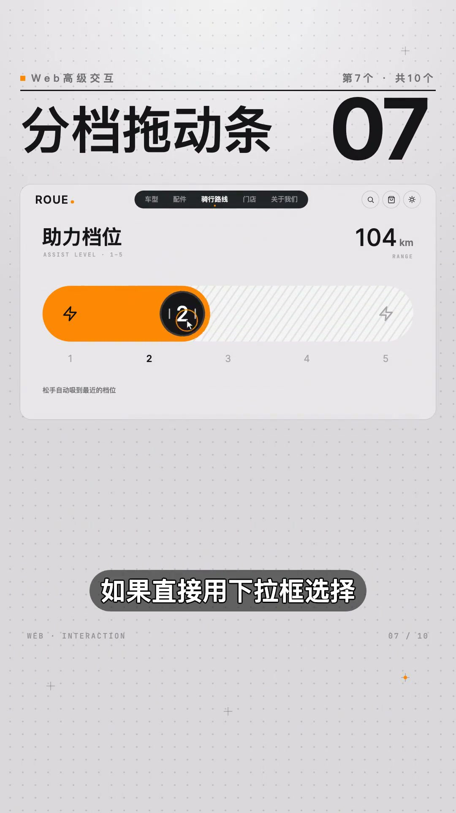
04 图标按钮展开标签 演示
图标按钮展开标签 ICON → LABEL
平时只显示一排圆形图标保持页面干净，悬停向右展开文字标签。
怎么做的： 平时只显示一排圆形图标，保持页面干净。鼠标停在哪一个，它就向右展开，把对应的文字标签带出来，移开之后又恢复成圆形。不用把所有信息都一直摆出来，需要的时候再告诉用户。
平时只显示一排圆形图标，保持页面干净，鼠标停在哪一个，它就向右展开，把对应的文字标签带出来，移开之后又恢复成圆形。不用把所有信息都一直摆出来，需要的时候再告诉用户。
AI 描述词
工具栏默认只显示 40px 圆形图标按钮，悬停时宽度从 40px 过渡到 图标 + 文字标签 + 16px padding，文字向左展开、图标保持原位，移开后收回圆形，过渡 0.25s cubic-bezier(.4,0,.2,1)。
复制
导航底色跟随 NAV PILL SLIDE
圆角底色跟着鼠标滑过去，宽度随文字长度自动变化，导航产生连续互动感。
怎么做的： 鼠标在顶部导航移动的时候，后面的圆角底色也跟着划过去。每个导航文字长度不同，底色的宽度也会自动变化。比简单的换个文字颜色，更能让导航产生连续的互动感。
鼠标在顶部导航移动的时候，后面的圆角底色也跟着划过去。每个导航文字长度不同，底色的宽度也会自动变化。比简单的换个文字颜色，更能让导航产生连续的互动感。
AI 描述词
顶部导航项共用一块绝对定位的圆角底色（radius 999px），鼠标移入时底色平滑滑动到该项的 left/top 并把宽度过渡为该标签宽度 + 24px，移出导航区时底色淡出，滑动用 0.3s ease-out。
复制
功能块悬停翻色 HOVER SWEEP
橙色从右上角箭头开始向外扩散覆盖整块，文字同步反转，箭头跟着转向。
怎么做的： 鼠标移上去之后，橙色从右上角的箭头开始一点点向外扩散，最后覆盖整个功能块，文字同步反转，箭头也跟着转向。一个很简单的悬停，就能让一整排功能块有了层次。全页只有当前这一块是橙色——这条用色的规矩也是 Skill 定的。
鼠标移上去之后，橙色从右上角的箭头开始，一点点向外扩散，最后覆盖整个功能块，文字同步反转，箭头也跟着转向。一个很简单的悬停，就能让一整排功能块有了层次。全页只有当前这一块是橙色，这条用色的规矩也是 Skill 定的。
AI 描述词
功能块悬停时橙色背景以右上角箭头为圆心用 clip-path circle() 从 0 扩散到 150%，文字颜色同步反转为白，箭头旋转 45deg，扩散 0.4s ease-out；同一屏内只允许一个功能块处于橙色高亮态。
复制
分档拖动条 SNAPPING SLIDER
拖动圆钮数字一格一格变化，走过的区域变橙，松手自动吸附到最近档位。
怎么做的： 有些参数如果直接用下拉框选择，操作起来会比较费劲。换成拖动条之后，拖动圆钮数字一格一格变化，走过的区域同步变成橙色，松手之后还会自动吸附到最新的档位。调到多少，不用猜，一眼就能看到。
有些参数如果直接用下拉框选择，操作起来会比较激泄。换成这种拖动条之后，拖动圆扭数字一格一格变化，走过的区域同步变成橙色，松手之后还会自动吸附到最新的档位。调到多少，不用猜，一眼就能看到。
AI 描述词
分档参数用自定义 slider 替代下拉框：轨道按档位等分并显示刻度，拖动时圆钮移动、已走过区域填充橙色、数字随档位逐格变化，松手以 0.2s 吸附到最近档位并轻微回弹。
复制
图表跟随鼠标 CHART CROSSHAIR
鼠标横向移动带出一条竖线，左边柱子亮起右边压暗，顶部数字实时变化。
怎么做的： 鼠标在柱状图上横向移动，一条竖线跟着走，左边的柱子亮起来、右边压暗，顶部数字也实时变化。不用一根根停下来找数据，扫过去就能快速读完整张图。
鼠标在柱状图上横向移动，一条竖线跟着走，左边的柱子亮起来右边压按，顶部数字也实时变化。不用一根根停下来找数据，扫过去就能快速读完整张图。
AI 描述词
柱状图监听 mousemove，绘制一条跟随光标的垂直参考线，参考线左侧柱子保持饱和色、右侧透明度降到 0.35，顶部汇总数字实时切换为当前列数值，变化用 0.15s 过渡。
复制
悬停预览图片 LIST → FLOAT IMAGE
文字列表划到哪一行，对应图片就跟着浮出来，列表本身保持整齐。
怎么做的： 一列文字列表，鼠标划到哪一行，对应的图片就跟着浮出来，换一行图片也跟着换。列表本身保持整齐，图片只在需要的时候出现。这种交互特别适合案例展示、作品集和产品介绍页。
一列文字列表，鼠标划到哪一行，对应的图片就跟着浮出来，换一行，图片也跟着换。列表本身保持整齐，图片只在需要的时候出现。这种交互特别适合案例展示、作品集和产品介绍页。
AI 描述词
文字列表悬停时，在光标右上方浮出对应预览图（宽 280px，radius 12px，带阴影），切换行时图片交叉淡切（0.2s），列表行高与排版不随图片出现而改变，图片只在悬停态存在。
复制
圆形扩散换肤 VIEW TRANSITIONS THEME
深浅色从按钮位置圆形扩散覆盖全页，图标同时变形，再次点击原路收回。
怎么做的： 点击右上角的太阳，深色从按钮的位置一点点向外扩散，直到覆盖整个页面，图标同时变成月亮；再次点击，又从原来的位置收回来。连一个简单的深浅色切换，都可以变成页面的一部分。深浅两条配色不用自己调，Skill 里本来就有。
点击右上角的太阳，深色从按钮的位置一点点向外扩散，直到覆盖整个页面，图标同时变成月亮。再次点击，又从原来的位置收回来。连一个简单的深浅色切换，都可以变成页面的一部分。深浅两条配色，不用自己调，Skill 里本来就有。
AI 描述词
深浅色切换用 View Transitions API：以触发按钮圆心为原点，新主题用 clip-path circle() 从 0 扩散到 150% 覆盖全页（0.5s），太阳/月亮图标同步做形变过渡；反向点击时从同一位置收缩收回，两套配色变量直接取自设计规范。
复制
AI 做网页几分钟就能把一个页面搭出来，但想让它真正摆脱那种普通模板化的感觉，很多时候差的就是这些交互细节。用的时候就两步：先调用 UI 设计 Skill，再把这期的描述词贴进去。
3 个 UI 设计 Skills 工作流，让 AI 做出高级网页 西瓜同学🍉 2026-10-09 约 246.3 秒
查看原视频 ↗ 同样让 AI 做网页，为什么有的只是把页面拼出来，有的却连动效和细节都做得很到位？关键在于给 AI 一套完整的 UI 设计工作流。这一期把三个 Skill 串起来，用活动落地页、内容社区、品牌官网三个真实案例从头跑一遍：需求 Skill 确定页面做什么，UI Skill 确定怎么设计，术语 Skill 把说不清的效果准确告诉 AI。
01 内容社区首页效果，作品沿弧线排列的展示页
第一步：需求 Skill DEFINE BEFORE DESIGN
不急着画页面，先把目标用户、传达内容、区块任务拆成一份页面定义。
怎么做的： 做线上挑战活动落地页时，第一步先把需求交给需求 Skill，只告诉它"做一个线上挑战活动的落地页，给想报名参加的人看"。它不急着画页面，先把这件事拆清楚：目标用户是谁、页面要传达什么、需要哪些内容、每个区块解决什么问题，最后整理成一份页面定义，后面的设计都基于这份定义往下做。
我不会一上来就让 AI 写页面。第一步，先把需求交给需求 Skill，只告诉他，做一个线上挑战活动的落地页，给想报名参加的人看。他不急着画页面，先把这件事拆清楚：目标用户是谁、页面要传达什么、页面需要哪些内容、每个区块解决什么问题。最后整理成一份页面定义。
AI 描述词
先让 AI 输出页面定义，不要画页面：目标用户是谁、要传达什么、页面需要哪些内容、每个区块解决什么问题，整理成一份可复用的页面定义文档，后续所有设计都基于这份定义往下做。
复制
02 第二步：UI Skill 定方向 演示
第二步：UI Skill 定方向 VISUAL DIRECTION
只给视觉目标不给风格，让 UI Skill 自己决定版式、字体与用色。
怎么做的： 接着让 UI Skill 接手，只告诉它"根据这份页面定义，设计页面，要有视觉冲击力，但不要做成模板"。这时候它才开始决定页面长什么样——这一版它选择了海报字体风，大标题用高条的粗体字，其中一个词做成空心描边，整体冷白配墨黑，打一只亮黄做点缀。方向确定之后，页面才真正搭起来。
根据这份页面定义，设计页面，要有视觉冲击力，但不要做成模板。这时候，他才开始决定页面长什么样。这一版他选择了海报字体风，大标题用高条的粗体字，其中一个词做成空心描边，整体冷白配墨黑，打一只亮黄做点缀。方向确定之后，页面才真正搭起来。
AI 描述词
根据页面定义设计视觉方向，要求有冲击力但不模板化：指定字体气质（如高条粗体标题 + 一个空心描边词）、主色板（冷白/墨黑 + 单一亮色点缀），先输出设计方向再搭建页面。
复制
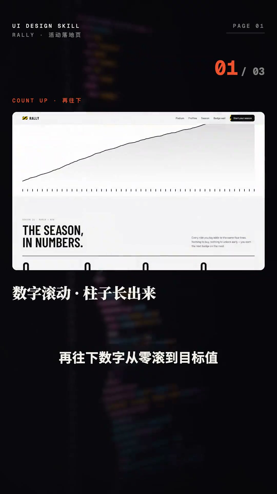
03 落地页的滚动叙事 演示
落地页的滚动叙事 SCROLL STORYTELLING
卡片沿弧线依次进入，曲线跟着滚动画出，数字从零滚到目标值。
怎么做的： 页面左边是大标题，右边一张横幅，下面的卡片错落排开，打开页面时沿着一条弧线依次进入。继续往下滚，页面会停住，一条曲线跟着滚动慢慢画出来，下面的刻度同步点亮。再往下，数字从零滚到目标值，柱子从底部长出来。最后一面卡片墙斜着进入，未解锁的内容保持灰色。到这里，AI 做的已经不只是网页排版，它有了自己的视觉节奏和交互方式。
页面左边是大标题，右边一张横幅，下面的卡片错落排开，打开页面时沿着一条弧线依次进入。继续往下滚，页面会停住，一条曲线跟着滚动慢慢画出来，下面的刻度同步点亮。再往下，数字从零滚到目标值，柱子从底部长出来。最后一面，卡片墙斜着进入，未解锁的内容保持灰色。
AI 描述词
落地页滚动叙事：首屏卡片沿弧线错落依次进入；滚动暂停后一条曲线随进度描绘出来、刻度同步点亮；数字从 0 滚动到目标值、柱状条从底部长出；结尾卡片墙斜向进入，未解锁项保持灰色不可点。
复制
只给视觉目标 GOAL NOT STYLE
内容社区不指定风格，只给"让作品成为主角、浏览要有探索感"。
怎么做的： 第二个案例故意不给他太多视觉要求，需求只写一句："这是一个展示创作者作品的社区页面，希望用户可以快速浏览、发现和进入作品。"需求 Skill 照样先把页面结构和内容关系整理出来，交给 UI Skill 的时候不指定做成什么风格，只给它一个目标：让作品成为页面的主角，浏览过程要有探索感。它会根据这个目标自己建立视觉语言。
我故意不给他太多视觉要求，需求只写一句：这是一个展示创作者作品的社区页面，希望用户可以快速浏览、发现和进入作品。交给 UI Skill 的时候，我不指定做成什么风格，只给他一个目标：让作品成为页面的主角，浏览过程，要有探索感。他会根据这个目标，自己建立视觉语言。
AI 描述词
只给 AI 定视觉目标，不指定风格：如"让作品成为页面的主角、浏览过程要有探索感"，由 AI 自行推导版式、配色与动效语言。
复制
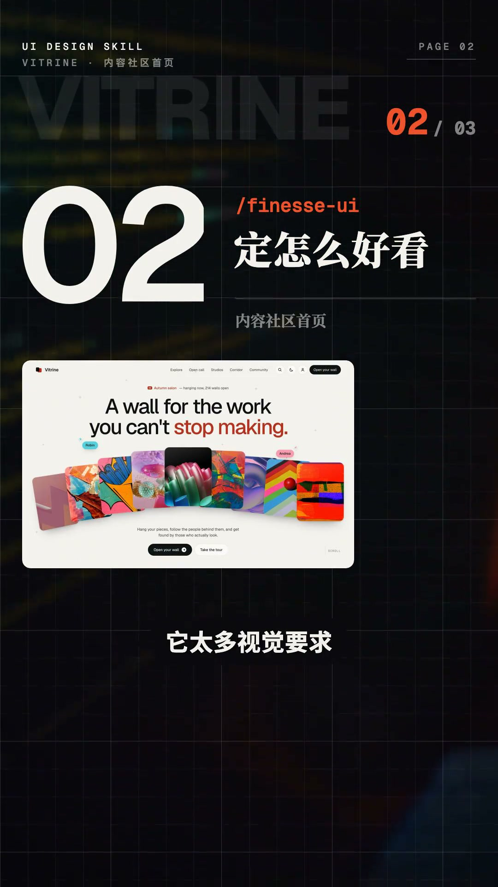
05 社区页的视觉规则 演示
社区页的视觉规则 CONTENT-FIRST LAYOUT
作品沿弧线排列、页面几乎不抢颜色，同一批内容换一种布局就是新的一屏。
怎么做的： 首页不做规则的卡片，让作品沿着弧线排列，页面几乎不抢颜色，把视觉重点全部留给作品。确认之后，先打骨架再填图、填字、上样式，一整页就长出来了。鼠标靠近某张卡片，当前作品抬起放大，周围的卡片跟着联动。想换一种气质也不用重新设计，只告诉 AI 加一个夜间主题、作品也换一批、用色更收敛一点，整页就翻成夜间。继续往下，卡片不会一板一眼地切换，它们随着滚动重新组合：这一屏排成斜向的阶梯，再往后连成一条作品长廊。同一批内容，换一种布局，就是新的一屏。
首页不做规则的卡片，让作品沿着弧线排列，页面几乎不抢颜色，把视觉重点全部留给作品。鼠标靠近某张卡片，当前作品抬起、放大，周围的卡片跟着联动。想换一种气质，也不用重新设计，我只告诉 AI 加一个夜间主题，作品也换一批，用色更收敛一点，整页就翻成夜间。继续往下，卡片不会一板一眼地切换，它们随着滚动重新组合。
AI 描述词
作品社区首页：作品沿弧线错落排列而非规则网格，页面用色极度收敛、把视觉重点全部让给作品；悬停卡片时该作品抬升放大、邻近卡片联动偏移；支持一键切换夜间主题并同步更换作品批次与用色浓度。
复制
06 品牌官网页的提示词示例（/finesse-term 调用截图）
第三步：术语 Skill PLAIN WORDS → SPEC
把"卡片一张张往前倒、左边的字跟着换"翻译成可执行的设计描述。
怎么做的： 第三个案例品牌官网，流程还是一样：需求 Skill 先定义页面，UI Skill 再把视觉和交互搭起来。页面搭起来之后有一段交互想重新调整，脑子里有画面，却根本不知道这个效果叫什么，只会说"卡片一张张往前倒，左边的字跟着换"。这句话人能听懂，AI 却不一定知道该怎么实现。这时候就轮到术语 Skill，把这句大白话交给它，它会换成更准确的设计描述："滚动时固定内容区域，卡片逐张向前翻转，左侧文案同步切换"。
有一段交互，我想重新调整。脑子里有画面，可我根本不知道这个效果叫什么。我只会说，卡片一张张往前倒，左边的字跟着换。这句话人能听懂，AI 却不一定知道该怎么实现。这时候就轮到术语 Skill，把这句大白话交给它，它会换成更准确的设计描述：滚动时固定内容区域，卡片逐张向前翻转，左侧文案同步切换。
AI 描述词
把说不清的动效说成大白话，让术语 Skill 翻译成准确设计描述。例如输入"卡片一张张往前倒，左边的字跟着换"，输出"滚动时固定内容区域，卡片逐张向前翻转，左侧文案同步切换"，再把这段描述交给 AI 执行。
复制
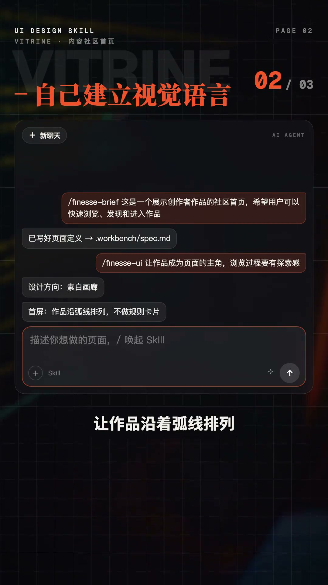
07 术语 Skill 的产出 演示
术语 Skill 的产出 EXECUTABLE SPEC
原本说不清的效果变成可以执行的设计语言，页面被准确地做出来。
怎么做的： 再把这段描述交给 AI，原本说不清的效果就变成了可以执行的设计语言，页面也准确地做了出来：每滚一格就有一张卡片往前翻，左边的文字跟着换；再往下一条线顺着步骤一路画出来；最后是一面可以筛选的网格，点一个分类，不相关的内容缩小淡出，剩下的重新排列。
每滚一格就有一张卡片往前翻，左边的文字跟着换。再往下一条线，顺着步骤一路画出来。最后是一面可以筛选的网格，点一个分类，不相关的内容缩小、淡出，剩下的重新排列。
AI 描述词
把术语 Skill 输出的设计描述直接作为实现指令：滚动时卡片逐张前翻 + 左侧文案同步切换；步骤线随滚动描绘；筛选网格点选分类后不相关项缩小淡出、其余重新排列。
复制
三个网页其实是三个不同的问题：我到底要做什么、这个页面该怎么设计、我想要的效果该怎么告诉 AI。三个 Skill 串成一条完整的 UI 设计工作流——先定义页面，再建立设计，最后把效果说准。所有提示词都放在画面上，照着就可以用。
让 AI 做出高级审美 6 种 App 和小程序布局 西瓜同学🍉 2026-10-09 约 122.5 秒
查看原视频 ↗ 六个 App 和小程序高级审美布局，一次讲完。每一种都配好了 AI 描述词，照着说就能做出来。这六种布局靠比例和主次拉开审美差距：大字标题接整宽图片、大图头块叠加信息、黑白两档区分主次、大色块网格托住关键数字、海报大字配半圆转盘，以及可上拖切换的叠放堆栈。
01 "大字标题加整宽大图列表"布局演示
大字标题加整宽大图 BIG TYPE + FULL-WIDTH
顶部两行宽体大写字母当标题，一进来就知道这是干什么的。
怎么做的： 顶部两行宽体大写字母当标题，字号极大，一进来就知道这是干什么的。下面一条搜索栏，右边一个黑色圆按钮管筛选，再下面一排分类，选中的那个变成黑底。每一项都是一整张大图，名字、参数和箭头按钮排在图下面一行，往下划一张接一张。
顶部两行宽体大写字母当标题，字号极大，一进来就知道这是干什么的。下面一条搜索栏，右边一个黑色圆按钮管筛选，再下面一排分类，选中的那个变成黑底。每一项都是一整张大图，名字、参数和箭头按钮排在图下面一行。
AI 描述词
列表页顶部用两行超宽体大写字母作标题（占屏宽 90%、行高 0.95），其下一条搜索栏 + 右侧黑色圆形筛选按钮；分类横滑，选中项黑底白字；列表项为整宽大图（16:10），名称/参数/箭头按钮排在图片下方一行。
复制
02 大图头块叠信息 演示
大图头块叠信息 HERO OVERLAY
大图占掉三分之一屏，目的地倒计时和按钮全部压在图上，不单独占地方。
怎么做的： 最上面一块大图占掉三分之一屏，目的地、倒计时和按钮全部压在图上，不用再单独占地方。下面一块白底天气，一排日期块，当天那一块用深色顶出来，底下一条曲线把温度连起来，一眼就知道今天在哪、要带什么。
最上面一块大图占掉三分之一屏，目的地倒计时和按钮，全部压在图上，不用再单独占地方。下面一块白底天气，一排日期块，当天那一块用深色顶出来，底下一条曲线把温度连起来，一眼就知道今天在哪，要带什么。
AI 描述词
首屏大图占 33% 屏高，目的地名称、倒计时与主操作按钮以浮层形式压在图上（底部渐变遮障保证可读性）；下方白底天气卡用横滑日期块，当天用深色底突出，温度用平滑曲线串联。
复制
黑白两档主次 TWO-TONE HIERARCHY
最想点的模块直接黑底白字，其余全白，不用第三种颜色也分得清主次。
怎么做的： 整页浅灰打底，最想让你点的那一块直接做成黑色、白字压在上面，其余全是白色。上面的分类也一样，选中哪个哪个变黑。再往下一块黑色横幅跟主角呼应。不用第三种颜色，也分得清主次。
整页浅灰打底，最想让你点的那一块，直接做成黑色，白字压在上面，其余全是白色。上面的分类也一样，选中哪个哪个变黑。再往下一块黑色横幅，跟主角呼应。不用第三种颜色，也分得清主次。
AI 描述词
整页浅灰底，只把最想点击的主模块做成黑底白字，其余模块保持白底；分类选中态同样黑底；下方加一条黑色横幅与主模块呼应。全页仅用黑、白、浅灰三档，不引入第三种色相。
复制
大色块网格 COLOR BLOCK GRID
一块亮黄大色块托住今天最重要的数字，四列小格一格一个，点一下就打卡。
怎么做的： 一块亮黄大色块棒住今天最重要的数字，周围全是浅灰底，右边一个圆环把完成度画出来。标题用超粗的中英两行，下面四列小格一格一个，颜色压成浅浅的一层，点一下就打卡，主次一眼分开。
一块亮黄大块棒，今天最重要的数字，周围全是浅灰底，右边一个圆环把完成度画出来。标题用超粗的中英两行，下面四列小格一格一个，颜色压成浅浅的一层，点一下就打卡，主次一眼分开。
AI 描述词
首页用大色块网格：一块亮黄大色块承载今日核心数字（超粗中英双行标题），右侧圆环展示完成度；下方 4 列小格每格一个习惯，底色压成 12% 透明度浅色，点击即打卡并填充对应色。
复制
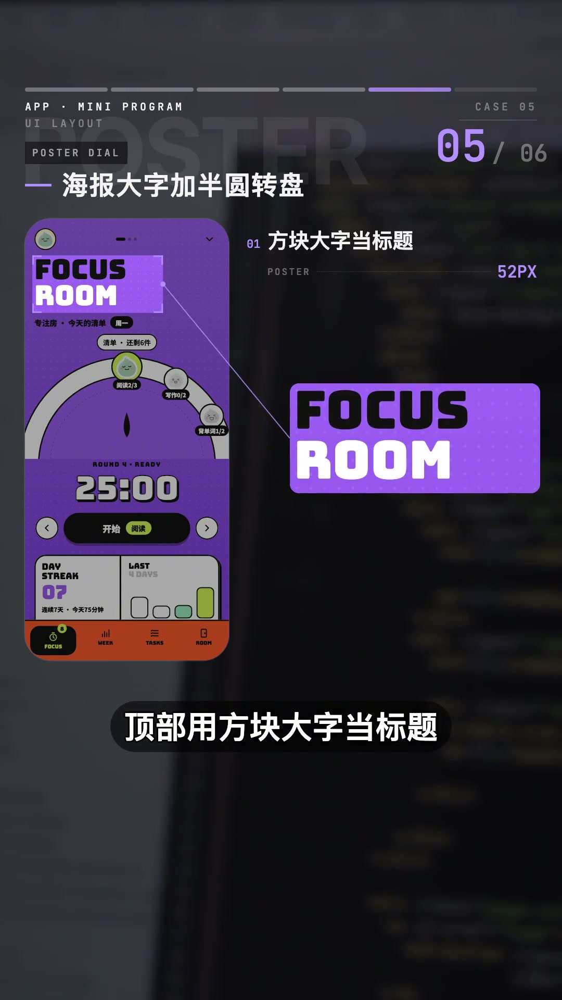
05 海报大字加半圆转盘 演示
海报大字加半圆转盘 POSTER + DIAL
方块大字配半圆转盘，选中项停在正上方，一屏只做一件事。
怎么做的： 顶部用方块大字当标题，黑白两色叠在紫色底上。中间一段半圆转盘，选中的那一项停在正上方。下面一个超大的数字配一个黑色按钮，最底下一排紫色底图标，一屏只做一件事。
顶部用方块大字当标题，黑白两色叠在紫色底上。中间一段半圆转盘，选中的那一项停在正上方。下面一个超大的数字配一个黑色按钮，最底下一排紫色底图标，一屏只做一件事。
AI 描述词
单屏只做一个核心操作：顶部方块字标题黑白双色叠在紫色底上；中部半圆转盘选择器，选中项旋转停靠到正上方（带吸附与轻微回弹）；下方超大数字 + 单个黑色主按钮；底部一排紫色底图标。
复制
06 "叠放堆栈"布局演示，附 AI 描述词参数截图
叠放堆栈 STACKED CARDS
一张大图立在正中、后面两张只露一条边，往上拖最前面那张飞走。
怎么做的： 顶部两行细长的宽体字当标题，一排分类跟在下面。一张大图立在正中，后面两张只露出一条边，看得出后面还有。往上一拖，最前面那张飞走，后面的补上来，底下的页码跟着走。
顶部两行细长的宽体字当标题，一排分类跟在下面。一张大图立在正中，后面两张只露出一条边，看得出后面还有。往上一拖，最前面那张飞走，后面的补上来，底下的页码跟着走。
AI 描述词
卡片叠放堆栈：首张占屏宽 82% 居中，后两张缩小并只露一侧边缘提示还有内容；上拖时首张带旋转与位移飞出，后续卡片前移补位并轻微放大，底部页码指示器同步切换，全程 spring 过渡。
复制
页面 AI 很快就能搭出来，这六种布局照着描述词说给它，做出来的页面就能高级一个档次。
6 种高审美 Dashboard 交互一次学会 西瓜同学🍉 2026-10-09 约 161.9 秒
查看原视频 ↗ Dashboard 好不好用，一半看布局，一半看点一下之后页面怎么变。这一期把后台最常用的6 种交互布局一次讲透：可拖动模块网格、模块原位放大、顶部筛选全局联动、多图表悬停联动、指标区滚动吸顶、列表加右侧详情抽屉。每种都配好了 AI 描述词，用 Codex 做后台界面时直接贴过去就能用。
01 "可以拖动的模块网格"演示，附 AI 描述词（Bento Grid、松手吸附）
可拖动模块网格 BENTO GRID DRAG
模块可拖拽重排，其他模块顺势让位，松手自动吸附进网格。
怎么做的： 页面按大小不同的格子排好，按着任意一块拖动，其他模块会顺势让出位置，松手自动吸附进网格。每个人都能把最常看的数据挪到左上角。
页面按大小不同的格子排好，按着任意一块拖动，其他模块会顺势让出位置，松手自动吸附进网格。每个人都能把最常看的数据挪到左上角。
AI 描述词
后台采用不等大模块网格（Bento Grid），模块支持拖拽重排，拖动时其余模块用 FLIP 平滑让位，松手后吸附到最近格位并对齐网格。
复制
02 模块原位放大 演示
模块原位放大 ZOOM TO DETAIL
点击图表从原位放大铺满主区，其余缩成底部缩略图，全程不离开这一页。
怎么做的： 点击任意一块图表，它从原来的位置直接放大铺满主区，其他模块缩成一排缩略图留在底部，看完点缩略图就能切回来，全程不离开这一页。
点击任意一块图表，它从原来的位置直接放大铺满主区，其他模块缩成一排缩略图留在底部，看完点缩略图就能切回来，全程不离开这一页。
AI 描述词
模块点击后从原位放大为详情视图（shared element transition），其余模块收缩为底部缩略图条；点击缩略图切换详情，关闭时沿原路收回，全程不跳转路由。
复制
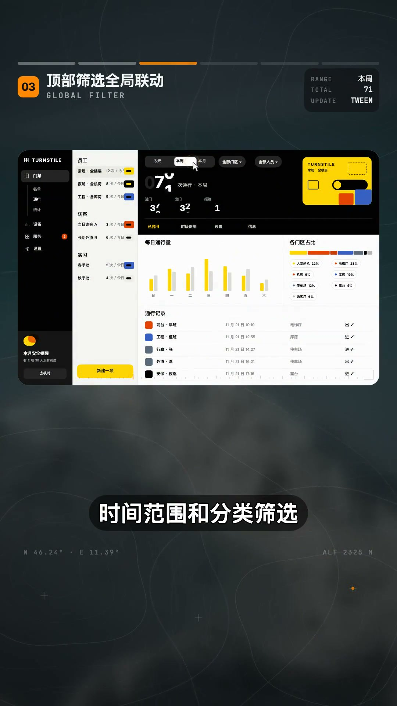
03 顶部筛选全局联动 演示
顶部筛选全局联动 GLOBAL FILTER
筛选只放一处，切换后所有数字滚动过渡、图表平滑变形，不整页重载。
怎么做的： 时间范围和分类筛选统一放在页面顶部，切换一下，下面所有数字滚动到新值，图表线条平滑变过去，页面不整体刷新。筛选只放一处，用的人不用到处找。
时间范围和分类筛选，统一放在页面顶部，切换一下，下面所有数字滚动到新值，图表线条平滑变过去，页面不整体刷新。筛选只放一处，用的人不用到处找。
AI 描述词
全局筛选条固定在顶部（时间范围 + 分类），切换后所有指标数字滚动过渡到新值、图表数据平滑变形，差值不整页重载，仅更新数据层。
复制
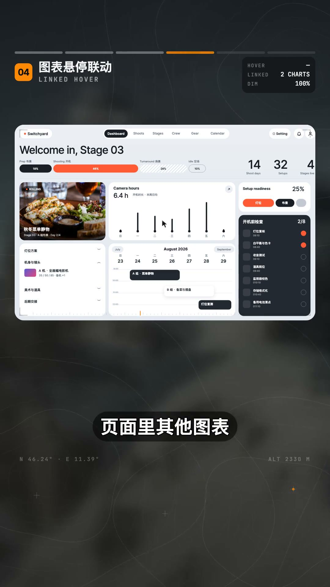
04 多图表悬停联动 演示
多图表悬停联动 SYNCED CROSSHAIR
共用一条时间参考线，悬停某天时各图同一点一起高亮，其余数据变淡。
怎么做的： 鼠标停在某一天的柱子上，页面里其他图表同一天的位置一起亮起来，别的数据自动变淡。几张图放在一起，终于能对着看了。
鼠标停在某一天的柱子上，页面里其他图表同一天的位置，一起亮起来，别的数据自动变淡。几张图放在一起，终于能对着看了。
AI 描述词
多图表悬停联动：悬停时所有图表同步高亮同一数据点，其余数据透明度降至 0.3，全页共用一条时间参考线。
复制
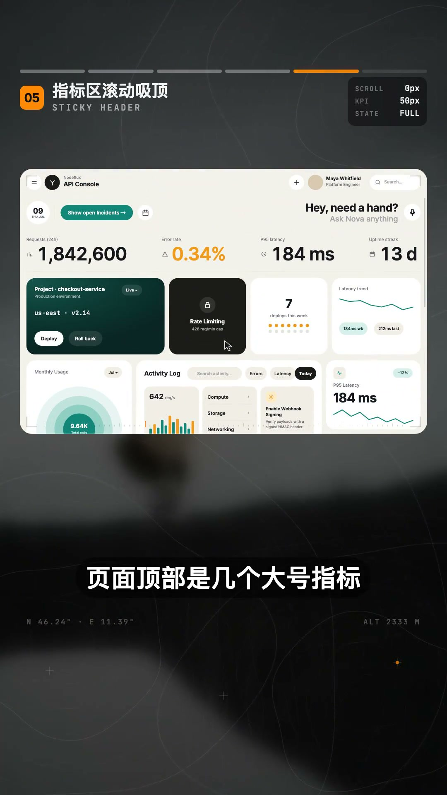
05 指标区滚动吸顶 演示
指标区滚动吸顶 STICKY COMPACT
大号指标往下滚时缩成一行小字贴顶栏，往回滚又展开成原来的大小。
怎么做的： 页面顶部是几个大号指标，往下滚动时它们缩成一行小字贴在顶栏上，数字一直看得见，往回滚又展开成原来的大小。长页面也不会看着看着就丢了重点。
页面顶部是几个大号指标，往下滚动时，它们缩成一行小字，贴在顶栏上，数字一直看得见，往回滚又展开成原来的大小。长页面也不会看着看着就丢了重点。
AI 描述词
顶部指标区滚动吸顶收缩：由滚动进度驱动字号与间距，收成单行后固定在顶栏；反向滚动时连续还原到原始大小，过渡无跳变。
复制
06 "列表加右侧详情抽屉"演示，附 AI 描述词（主从布局、键盘切换）
列表加右侧详情抽屉 MASTER-DETAIL DRAWER
点击行后详情从右侧滑出，列表压扁留在左边，键盘上下切换只刷新面板。
怎么做的： 点击表格里的一行，详情面板从右边滑出来，列表自动压扁留在左边，当前行保持高亮。上下切换记录时只换面板里的内容，前后对比特别快。
点击表格里的一行，详情面板从右边滑出来，列表自动压扁留在左边，当前行保持高亮。上下切换记录时，只换面板里的内容，前后对比特别快。
AI 描述词
主从布局：点击行后右侧滑出详情抽屉，列表压扁保持可见，当前行高亮；支持键盘上下键切换记录，仅刷新面板内容不重绘列表。
复制
Dashboard 好不好用，一半看布局，一半看点一下之后页面怎么变。布局先给交互留好位置，页面才会又清楚又顺手。
6 种 App 和小程序高级交互，一次教会你 西瓜同学🍉 2026-10-09 约 87.1 秒
查看原视频 ↗ 这期六种交互都强调"手一碰就有回应"：面板长按后分层浮起、堆叠卡片随手势飞走、多选项聚成一叠、计时按钮裂变成暂停与结束、视频滚动时缩成小窗、分类与内容双向联动滚动。页面能用 AI 很快搭出来，真正拉开差距的是这些细节。
01 "面板分层浮起"演示，附 AI 描述词（爆炸视图参数截图）
面板分层浮起 EXPLODED LAYERS
长按面板侧立，背景图与文字分层浮开，松手合回一整块。
怎么做的： 按住面板它会侧过身立起来，背景、图片、文字一层一层往外浮开，松手所有层再合回一整块。平的界面一下有了纵深，里面有什么也一眼看明白。
按住面板它会侧过身立起来，背景、图片、文字一层一层往外浮开，松手所有层再合回一整块。平的界面一下有了纵深，里面有什么也一眼看明白。
AI 描述词
长按卡片时面板绕 X 轴侧立（rotateX 25°），背景图、图片、文字按 z 轴分层向外浮开（间距 12px，错开 60ms），松手后所有层以 spring 合回整块。
复制
02 堆叠滑动切换 演示
堆叠滑动切换 SWIPE STACK
手指左右一甩，最上面那张跟着手倾斜飞走，下一张从后面顶上来。
怎么做的： 一叠内容落在一起，手指往左右一甩，最上面那张跟着手倾斜飞走，下一张从后面顶上来。一只手就能连续跳下去。
一叠内容落在一起，手指往左右一甩，最上面那张，跟着手倾斜飞走，下一张从后面顶上来。一只手就能连续跳下去。
AI 描述词
卡片堆叠支持左右滑动手势：跟手旋转（最大 ±18°）与位移，甩出时飞出屏幕并淡出，下一张从后方缩放上位，未操作的卡片保持层叠缩进展示。
复制
多选聚成一叠 MULTI-SELECT STACK
长按进入多选，勾选项从原位飞聚成一叠，拖着就能一次挪走多个。
怎么做的： 长按进入多选，勾中的几项从各自的位置飞过来，叠成一落、角上标着数量，拖着这一落就能一次挪走好几个。
长按进入多选，勾中的几项从各自的位置飞过来，跌成一落，角上标着数量，拖着这一落就能一次挪走好几个。
AI 描述词
长按进入多选模式，勾选项从原位飞聚成一叠（层叠偏移 6px，0.3s 内完成），叠角显示已选数量徽标，可整体拖动批量移动，松手后散开或执行批量操作。
复制
04 "按钮一分为二"演示，计时器裂成暂停和结束两个按钮
按钮一分为二 SPLIT BUTTON
按下开始计时，一个按钮从中间裂开变成暂停和结束，结束后合回。
怎么做的： 按下开始计时，一个按钮从中间裂开，变成暂停和结束两个；按下结束，两个又合回原来那一个。要用的操作刚好在手边。
按下开始计时，一个按钮从中间裂开，变成暂停和结束两个。按下结束两个又合回原来那一个。要用的操作刚好在手边。
AI 描述词
计时按钮按下后从中间裂开为暂停与结束两个按钮（各占半宽，裂开 0.25s）；按下结束时两按钮合并回单个按钮，分裂与合拢均用 spring 动画。
复制
滚动变小窗 SCROLL TO MINI
看视频时往下翻，视频缩成小窗停在角落接着播，点一下放大回原位。
怎么做的： 看视频的时候往下翻，视频缩成一个小窗停在角落接着播，点一下小窗又放大回原来的位置。
看视频的时候往下翻，评论视频缩成一个小窗，停在角落接着播，点一下小窗，又放大回原来的位置。
AI 描述词
视频播放器滚动出视口时收缩为右下角小窗（宽 180px，圆角 + 阴影）继续播放，点击小窗以 shared element 动画放大回原位置并恢复原尺寸。
复制
分类连动滚动 LINKED SCROLL
右侧列表往下滑，左侧分类高亮自动跟到对应位置，双向联动。
怎么做的： 右边列表往下滑，左边分类的高亮自动跟到对应位置；点左边分类，右边直接滚过去。东西再多也找得到。
右边列表往下滑，左边分类的高亮自动跟到对应位置。点左边分类，右边直接滚过去。东西再多也找得到。
AI 描述词
双栏联动滚动：右侧列表滚动时左侧分类高亮自动跟随到对应区块（scroll-spy）；点击左侧分类右侧平滑滚动到对应位置，双向互相同步。
复制
页面能用 AI 很快搭出来，真正拉开差距的是这些手一碰就有回应的细节。
2 个图标库让 AI 拥有更高级的交互审美 西瓜同学🍉 2026-10-09 约 124.8 秒
查看原视频 ↗ 想让界面再精致一点，图标的交互动效其实很关键。同样一个按钮，点击之后图标直接硬切，看起来就会有些生硬；如果线条能顺着状态自然变化，整个页面立刻细腻很多。这一期分享两个动态图标库，分别适合状态切换和操作反馈，最后也讲清楚它们应该怎么搭配使用。
01 Morphicons 演示，线条移动旋转重组变成对勾
MorphIcons：状态切换 MORPHICONS
两个图标状态自然衔接，原来的线条会移动、旋转、重组成下一个状态。
怎么做的： 它最大的特点是让两个图标状态自然衔接。切换时图标不会突然消失再换成新的，原来的线条会移动、旋转、重组，顺着变成下一个状态。比如彩蛋变成关闭、播放变成暂停、太阳变成月亮；完成一条任务时，空心圆也可以自然收成对勾。
它最大的特点，是让两个图标状态自然衔接。切换时就图标不会突然消失，再换成新的，原来的线条会移动旋转重组，顺着变成下一个状态。比如彩蛋变成关闭，播放变成暂停，太阳变成月亮。
AI 描述词
状态切换图标使用 MorphIcons，不硬切：原线条通过移动、旋转、重组连续变形为下一个状态图标（如播放↔暂停、太阳↔月亮、空心圆→对勾），全过程单条 SVG path 过渡。
复制
02 MorphIcons 用在哪 演示
MorphIcons 用在哪 TOGGLE POSITIONS
适合按钮、导航栏、播放控件、深浅色开关这类需要反复切换状态的地方。
怎么做的： 它很适合放在按钮、导航栏、播放控件、深浅色开关这类需要反复切换状态的地方。用户每点一次，都能清楚看到状态是怎么变化的，页面也不会显得生硬琐碎。
它很适合放在按钮，导航栏，播放控件，深浅色开关，这类需要反复切换状态的地方。用户每点一次，都能清楚看到状态是怎么变化的，页面也不会显得生硬琐碎。
AI 描述词
在按钮、导航栏、播放控件、深浅色开关等需反复切换的位置使用形变图标，保证每次点击都能看到状态连续变化。
复制
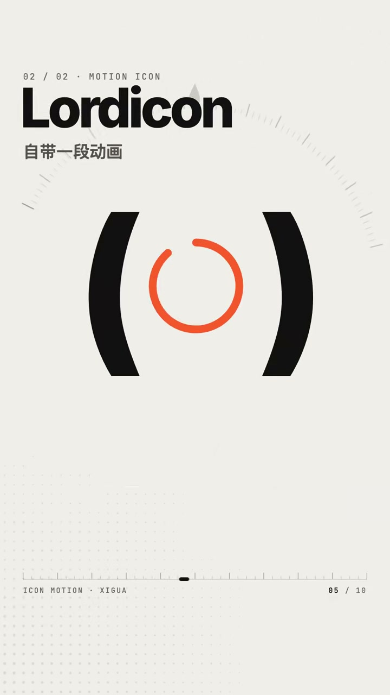
03 LordIcon：操作反馈 演示
LordIcon：操作反馈 LORDICON
用户完成某个操作之后，用一小段动画给出明确反馈。
怎么做的： 它更适合在用户完成某个操作之后，用一小段动画给出明确反馈。比如点击发送，纸飞机直接飞出去；内容正在加载，图标开始循环运动；任务全部清空后，空状态图标轻轻晃动一下，让用户马上知道操作已经完成。
它更适合在用户完成某个操作之后，用一小段动画给出明确反馈。比如点击发送，纸飞机直接飞出去。内容正在加载，图标开始循环运动。任务全部清空后，空状态图标轻轻晃动一下，让用户马上知道操作已经完成。
AI 描述词
操作反馈类动效用 LordIcon：发送后纸飞机飞出、加载时图标循环运动、清空完成后空状态图标轻晃，一次性播放给用户明确反馈。
复制
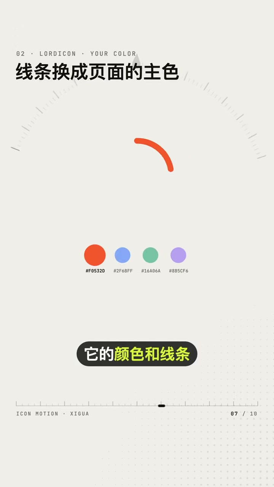
04 LordIcon 用在哪 演示
LordIcon 用在哪 FEEDBACK POSITIONS
颜色和线条可按页面风格调整，适合发送、加载、完成提示、空状态与功能介绍。
怎么做的： 它的颜色和线条都可以根据页面风格调整，很适合用在发送、加载、完成提示、空状态页，以及产品功能介绍这些场景里。
它的颜色和线条，都可以根据页面风格调整，很适合用在发送，加载，完成提示，空状态页，以及产品功能介绍这些场景里。
AI 描述词
在发送、加载、完成提示、空状态、功能介绍等位置使用 LordIcon，颜色与线条粗细跟随页面主题变量调整。
复制
两个库怎么选 CHOOSE BY INTENT
来回切换用 MorphIcons，一次性反馈用 LordIcon。
怎么做的： 如果图标需要在两种状态之间反复切换，就用 MorphIcons；如果需要在一次操作之后用动画告诉用户已经发生了什么，就用 LordIcon。
如果图标需要在两种状态之间反复切换，就用 MorphIcons。如果需要在一次操作之后，用动画告诉用户已经发生了什么，就用 LordIcon。
AI 描述词
按意图选库：需在两种状态间反复切换的图标用 MorphIcons；仅需一次性操作反馈的图标用 LordIcon。
复制
06 两个图标库怎么分（来回切换 vs 一次性反馈）对比图
克制使用动态图标 USE SPARINGLY
动态图标只留给最常点击、最需要反馈的几个位置，反而更显精致。
怎么做的： 不过动态图标也不要放得太多，把它们留给最常点击、最需要反馈的几个位置，反而更容易突出页面的精致感。这些图标的使用场景和搭配规则，也已经整理进 UI 设计 Skill 里，让 AI 做页面时不只是把图标放上去，还能根据不同的交互场景选择合适的动效。
不过动态图标也不要放得太多，把它们留给最常点击、最需要反馈的几个位置，反而更容易突出页面的精致感。这些图标的使用场景和搭配规则，我也整理进了 UI 设计 Skill 里。
AI 描述词
动态图标只放在最常点击、最需要反馈的几个位置，其余图标保持静态；由 UI Skill 按交互场景决定用形变还是反馈动效。
复制
AI 可以很快帮你搭出一个页面，而这些自然克制的小动向，负责把最后的细节做精致。
提升 App 和小程序审美质感 10 个交互组件 西瓜同学🍉 2026-10-09 约 122.3 秒
查看原视频 ↗ 用 Vibe Coding 做 App 和小程序，怎么让组件看起来更高级？关键不止是页面好看，还要让组件的每一次变化都自然连贯。这一期拆解 10 个高级组件：搜索框原地展开、悬浮加号展开成面板、提交按钮原位走完加载与完成、标签指示条拉伸跟随、顶栏随滚动收成图标、菜单从按钮位置铺满全屏。每个都配好了 AI 描述词，照着说就能做出来。
01 视频封面，10 个高级交互组件总览
搜索框展开 ICON → INPUT
点击搜索按钮直接展开成输入框，光标自动定位，不跳新页面。
怎么做的： 点击右上角的搜索按钮，它会直接展开成输入框，光标自动定位，不需要再跳到新的搜索页面。
点击右上角的搜索按钮，它会直接展开成输入框，光标自动定位，不需要再挑到新的搜索页面。
AI 描述词
点击搜索按钮后输入框从图标原位展开（宽度过渡 0.25s），自动 focus，不跳转新页面。
复制
02 "加号展开面板"演示，附 AI 描述词（FAB to Sheet 参数）
加号展开面板 FAB TO SHEET
悬浮加号从原位展开成操作面板，关闭时自然收回加号。
怎么做的： 点击悬浮加号，按钮会从原位展开成操作面板，关闭时再自然收回到加号。
点击悬浮加号，按钮会从原位展开成操作面板，关闭时，再自然收回到加号。
AI 描述词
悬浮加号点击后从原位展开为操作面板（容器尺寸与圆角连续过渡），关闭时沿原路收回加号形态。
复制
提交状态反馈 BUTTON STATE MACHINE
点击提交后按钮依次显示加载、完成和结果，全过程在同一位置完成。
怎么做的： 点击提交后，按钮依次显示加载、完成和结果状态，整个过程都在同一个位置完成。
点击提交后，按钮依次显示加载、完成和结果状态，整个过程都在同一个位置完成。
AI 描述词
提交按钮为状态机：默认 → 加载（ spinner ）→ 完成（对勾）→ 结果文案，全部在按钮原位切换，宽度变化用过渡动画，不出现新元素。
复制
图标变形 MORPH ICON
三条横线自然变成关闭图标，播放按钮同样方式变暂停。
怎么做的： 点击菜单时三条横线自然变成关闭图标；播放按钮也可以用同样的方式变成暂停，切换更加连贯。
点击菜单时三条横线自然变成关闭图标，播放按钮也可以用同样的方式变成暂停，切换为更加连贯。
AI 描述词
菜单图标与关闭图标之间做路径形变（三条横线旋转位移成 X），播放/暂停用同一机制，全程单条 SVG path 过渡，不硬切。
复制
05 "标签指示条"演示，附 AI 描述词（先拉伸后收回参数）
标签指示条 TAB INDICATOR STRETCH
切换标签时底部指示条先拉向新位置再自然收回，切换有跟随感。
怎么做的： 切换顶部标签时，底部指示条会先拉向新的位置，再自然收回，让切换过程更有跟随感。
切换顶部标签时，底部指示条会先拉向新的位置，再自然收回，让切换过程更有跟随感。
AI 描述词
标签指示条切换时先拉伸向目标位置（宽度先增大覆盖位移），到达后收回为标签等宽，用 spring 曲线，位移 0.3s。
复制
按钮变步进器 BUTTON → STEPPER
点击加入后按钮展开成数量选择器，数量归零自动恢复原按钮。
怎么做的： 点击加入后，按钮直接展开成数量选择器；数量回到零时，再自动恢复成原来的按钮。
点击加入后，按钮直接展开成数量选择器，数量回到零时，再自动恢复成原来的按钮。
AI 描述词
"加入"按钮点击后展开为数量步进器（加减按钮 + 数字），数字为 0 时自动收起恢复原按钮形态。
复制
列表展开详情 IN-PLACE EXPAND
详情在当前列表里原地展开，其他内容顺势下移，不跳页面。
怎么做的： 点击其中一项，详情直接在当前列表里展开，其他内容顺势下移，不需要调整页面。
点击其中一项，详情直接在当前列表里展开，其他内容顺势下移，不需要调整页面。
AI 描述词
列表项点击后详情在原地展开（高度过渡），其余项用 FLIP 平滑下移，不跳转路由、不整页刷新。
复制
列表切换网格 LIST ⇄ GRID
视图切换时列表重新排列成网格，保留移动过程，中间不重新加载。
怎么做的： 切换视图时，列表会重新排列成网格，并保留自然的移动过程，中间不重新加载。
切换试图时，列表向会重新排列成网格，并保留自然的移动过程，中间不重新加载。
AI 描述词
列表/网格视图切换用共享元素过渡：每项从原位移到新位置（scale + position 同时动画），不重新加载内容。
复制
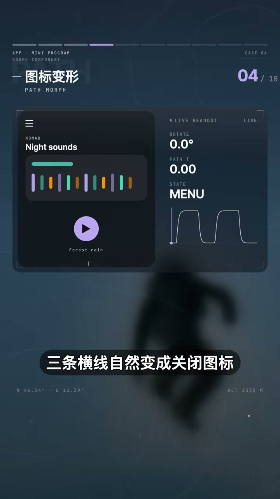
09 顶栏随滚动收起 演示
顶栏随滚动收起 COLLAPSING APP BAR
下滚时搜索栏收成图标，上滑重新展开，既省空间也不影响使用。
怎么做的： 页面向下滚动时，顶部搜索栏逐渐收成一个图标，向上返回时再重新展开，既节省空间也不影响使用。
页面向下滚动时，顶部搜索栏逐渐收成一个图标，向上返回时再重新展开，季节整空间也不影响使用。
AI 描述词
顶栏随滚动进度收缩：搜索栏宽度由滚动进度驱动收成图标按钮，反向滚动时连续展开，过程无跳变。
复制
菜单铺满全屏 CIRCULAR REVEAL MENU
背景从按钮位置向外展开覆盖整页，菜单内容随后出现，关闭原路收回。
怎么做的： 点击菜单按钮，背景从按钮位置向外展开覆盖整个页面，菜单内容再一次出现，关闭时原路收回。
点击菜单按钮，背景从按钮位置向外展开，覆盖整个页面，菜单内容再一次出现，关闭时远路收回。
AI 描述词
菜单用圆形揭示：以按钮圆心为原点 clip-path circle() 从 0 扩散到 150% 覆盖全页，扩散到位后菜单项依次淡入；关闭反向收回。
复制
用 AI 搭出页面只是第一步，这些点一下就顺着变过去的地方，决定了 App 和小程序用起来够不够顺手。这十个交互都整理进了 Skill 里，需要的评论区扣 Skill。
AI 做 UI 设计的 2 个 Skill：术语 Skill 和设计规范 Skill 西瓜同学🍉 图文 2026-10-09 10 张图
查看原图文 ↗ 两个 Skill 分工明确：术语 Skill 把模糊感受翻译成专业设计语言，设计规范 Skill 再把术语细化成参数规则。内容覆盖视觉动线、骨架屏、拇指安全区、毛玻璃底栏、四级字阶、8 倍数间距和引导式空状态。
01 图文封面，“AI 做设计 2 个 Skill”
配图 01 配图说明
图文封面，“AI 做设计 2 个 Skill”
02 两个 Skill 分工（一个翻译术语、一个立规范）
配图 02 配图说明
两个 Skill 分工（一个翻译术语、一个立规范）
03 主操作全部下沉到拇指安全区规则
04 间距按 8 的倍数走的规则
05 九个词汇总，“直接抄给 AI”
首屏只留一个主角 根据内容提炼
转化版提示词
首页只留一个主角做成横滑大图卡，搜索筛选收成一行
复制 统一四级字阶 根据内容提炼
转化版提示词
全站字号只取 24/18/14/12 四档，同层级不用中间值
复制 图片骨架占位 根据内容提炼
转化版提示词
图片加载前用同尺寸浅色占位块占位，图到后再淡入
复制
用 UI 设计 Skill 让 AI 拥有高级审美 西瓜同学🍉 2026-10-09 约 139.4 秒
查看原视频 ↗ 你现在看到的这些高级页面，都是让 AI 配合 UI 设计 Skill 做出来的。真正困难的不是 AI 不会做，而是你知道自己想要什么效果，却说不出它的专业名称，也不知道该怎么准确描述给 AI。说不出名字，AI 就按它最熟的那套来——永远是紫色渐变配一排发光卡片。这一期用三个真实页面讲透「术语 Skill 描述准 + UI Skill 实现好」这套两步法。
01 视频封面，三个真实页面对比
第一步：说准名字 NAME THE EFFECT
说不出专业名称，AI 就只会给你最熟的紫色渐变加发光卡片。
怎么做的： 真正困难的不是 AI 不会做，是你知道自己想要什么效果，却说不出它的专业名称，也不知道该怎么准确地描述给 AI。说不出名字，AI 就按它最熟的那套给你，永远是紫色渐变配一排发光卡片。
真正困难的不是 AI 不会做，是你知道自己想要什么效果，却说不出它的专业名称，也不知道该怎么准确地描述给 AI。说不出名字，AI 就按它最熟的那套给你，永远是紫色渐变，配一排发光卡片。
AI 描述词
把想要的效果先用术语 Skill 翻译成专业名称（如悬停抬起 + 零位让位、扇形排列/封面流、圆柱轮播），再把名称与限制条件一起交给 AI。
复制
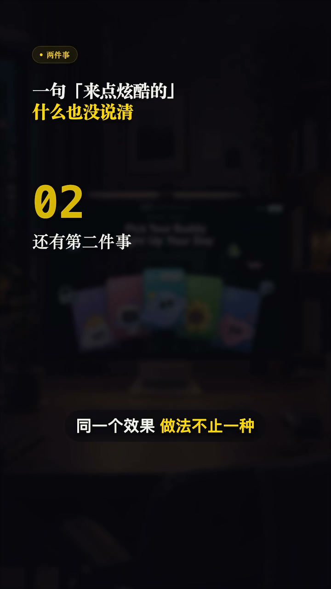
02 第二步：选最轻实现 演示
第二步：选最轻实现 LIGHTEST IMPLEMENTATION
同一个效果四行 CSS 能做完，也可能堆一整个库——让 Skill 挑够用又轻的那条路。
怎么做的： 就算说对了名字，还有第二件事：同一个效果做法不止一种。四行 CSS 能做完的，也能用一整个库去做，出来一模一样，页面白白重一倍。
同一个效果做法不止一种，四行 CSS 能做完的，也能用一整个库去做，出来一模一样，页面白白重一倍。
AI 描述词
在提示词里写明实现约束（不引入额外依赖 / 优先原生 CSS / 控制包体积），让 UI Skill 自行判断并选择够用又轻量的实现路径。
复制
03 "悬停抬起 + 零位让位"卡片排演示
案例一：悬停抬起让位 HOVER LIFT + RECEDE
鼠标碰到哪张卡片哪张扶起来，旁边两张同时往外让出位置。
怎么做的： 一排卡片摊在中间，鼠标碰到哪一张，那张就扶起来，旁边两张同时往外让一点给它腾地方。你大概只会说成"鼠标放上去那张大一点"，真正好看的地方在旁边——整排重新站了一次位。它叫悬停抬起加零位让位。
一排卡片摊在中间，鼠标碰到哪一张，那张就扶起来，旁边两张同时往外让一点，给它腾地方。你大概只会说成鼠标放上去那张大一点，真正好看的地方在旁边，整排重新站了一次位。它叫旋停抬起，加零位让位。
AI 描述词
卡片排悬停抬起 + 相邻卡片零位让位：悬停项 scale 1.06 并抬升阴影，左右相邻项各向外平移 12px 让位，其余保持原位；只动 transform 与 opacity，不要同时动画 width/height（会掉帧）。
复制
04 扇形排列 / 封面流演示，附角度与亮度参数
案例二：扇形排列 COVER FLOW
同行正扇形摊开，中间正对、越往两边越后仰越暗，切换时整排转过去。
怎么做的： 一排同行正扇形摊开，中间那张正对着你，越往两边越往后仰越暗。切下一张的时候，整排跟着转过去。这个叫扇形排列，也叫封面流。名字说对了，AI 一次就能给对；说不准，它多半给你一排一样大的卡片横着滑，纵深全没了。
一排同行正扇形摊开，中间那张正对着你，越往两边越往后仰越按。切下一张的时候，整排跟着转过去。这个叫扇形排列，也叫封面流。名字说对了，AI 一次就能给对；说不准，它多半给你一排一样大的卡片，横着滑，纵深全美了。
AI 描述词
实现封面流（Cover Flow）：卡片按离中心距离计算 rotateY 角度、缩放与亮度，中心项正对且最亮，两侧依次后仰变暗；切换时整排连续旋转过渡。
复制
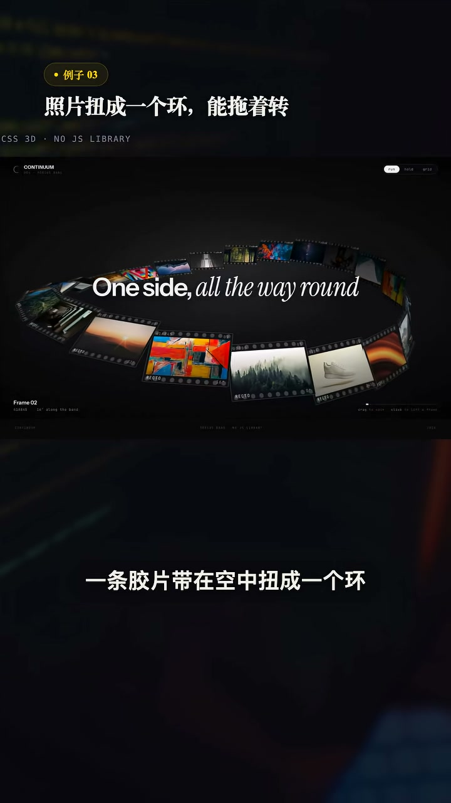
05 案例三：圆柱轮播 演示
案例三：圆柱轮播 CYLINDRICAL CAROUSEL
胶片带扭成一个环，照片贴着环转，一个库都不用装。
怎么做的： 一条胶片带在空中扭成一个环，照片贴在上面，可以拖着它转，点一下某一格那一格就抬起来。这个看着最该上 3D 引擎，但页面自己在角落标了一行说它一个库都没装——它靠的是原本就有的 3D 能力，每张照片算好自己在环上的位置跟着手指转。
一条胶片带在空中扭成一个环，照片贴在上面，可以拖着它转，点一下某一格，那一格就抬起来。这个看着最该上 3D 引擎，但页面自己在夜角标了一行，说它一个裤都没装，它靠的是原本就有的 3D 能力。
AI 描述词
用 CSS 3D transform 实现圆柱轮播：照片按 index 计算 rotateY 与 translateZ 排布在圆环上，支持拖拽旋转与点击抬升，不引入 three.js 等 3D 库。
复制
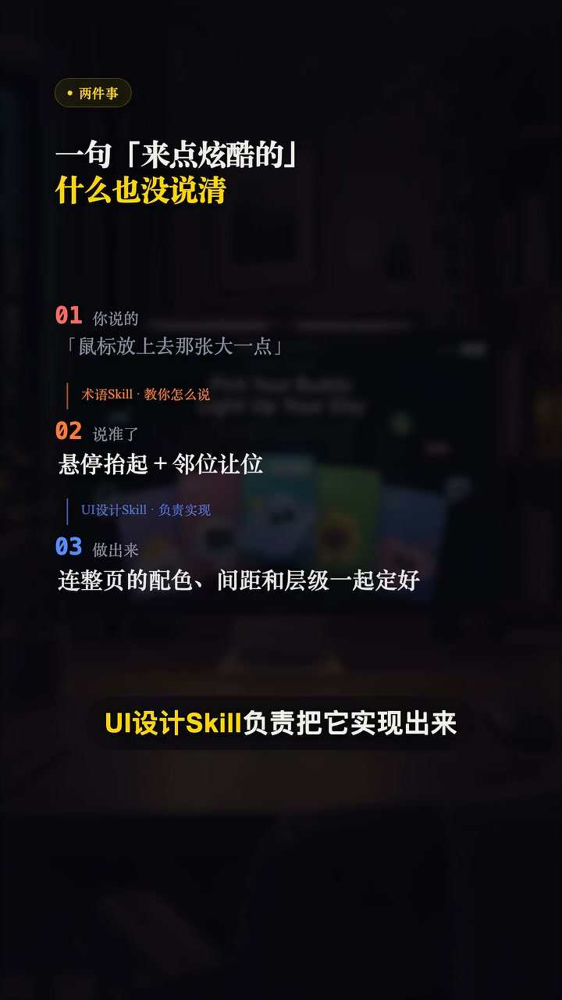
06 Skill 顺手定完整页 演示
Skill 顺手定完整页 FULL-PAGE CONSISTENCY
UI Skill 做的不只是那个动向，还把整页配色、间距、卡片样式一起定下来。
怎么做的： UI 设计 Skill 拿到这句话，做的不止是那个动向，它顺手把整页的配色、间距和卡片样式一起定下来，让这一下让位长在页面里。要不要上更重的技术，让 UI 设计 Skill 自己判断——你把效果和限制说清楚，它会挑一条够用又轻的路，再把整页的层级和质感一起做完。
UI 设计 Scale 拿到这句话，做的不止是那个动向，它顺手把整页的配色，间距和卡片样式一起定下来，让这一下让位长在页面里。
AI 描述词
在准确描述动效之后，追加一句"按 UI 设计规范统一整页配色、间距与卡片样式"，让单个动效与整页层级质感保持一致。
复制
三个页面，三种效果，没有一个是靠堆库堆出来的。你要做的只有两步：先把想要的效果描述准确，再让它挑最省的那条路去实现。
Codex 做高级审美网页的实用技巧 西瓜同学🍉 图文 2026-10-09 10 张图
查看原图文 ↗ 写给 Codex 的版式提示词应“说版面，不说形容词”：明确图片如何摆、文字如何排、颜色只给谁。八种排法包括左黑白右彩色、环形胶片、卡片整块上色、大色块压大字、全黑留一亮、白底点一色、照片压大字和中间大两边小。
01 图文封面，“Codex 实用技巧 网页制作”
配图 01 配图说明
图文封面，“Codex 实用技巧 网页制作”
02 “左黑白右彩色”摄影师作品集页，附 finesse UI 提示词
主角独占颜色 根据内容提炼
转化版提示词
主角独占一种颜色，配角全部去色，整页最多两种用色
复制 03 “卡片整块上色”运营后台页，附 finesse UI 提示词
配图 03 配图说明
“卡片整块上色”运营后台页，附 finesse UI 提示词
04 “照片上压大字”单板品牌页，附 finesse UI 提示词
05 八种排法一览，总提示词截图
只说版面，不说形容词 根据内容提炼
转化版提示词
写提示词只说版面不说形容词：图怎么摆、字怎么排、颜色给谁
复制
10个App和小程序里的高级交互一次学会 西瓜同学🍉 2026-10-09 约 122.7 秒
查看原视频 ↗ 同样点开一张大图，有的直接跳过去，有的一边飞到屏幕中间一边翻面还轻轻回弹一下；同样按住一个面板，有的纹丝不动，有的跟着手指倾斜、点一下从原位撑开成整页。差别就在这几下。这一期逐个拆解 10 个高级交互，每个都配好了跟 AI 说的描述词。
01 视频封面，10 个高级交互总览
飞出翻面 FLY + FLIP
封面飞到屏幕中间一边放大一边翻面，带回弹，关闭原路翻回。
怎么做的： 点一下一张封面，它一边飞到屏幕中间一边放大翻面，翻过来带一点回弹；关掉的时候再原路翻回原位。
点一下一张封面，它一边飞到屏幕中间一边放大翻面，翻过来带一点回弹，关掉的时候再原路翻回原位。
AI 描述词
封面点击后飞向屏幕中心并放大（scale 1→1.4）同时绕 Y 轴翻面，到位时 spring 回弹；关闭沿原路径翻回原位。
复制
按住蓄力确认 HOLD TO CONFIRM
删除这类撤不回的操作，按住进度沿边缘走满才执行，松手进度退回。
怎么做的： 删除这类撤不回的操作，按住时间度缓慢，沿着边缘走满才执行，中途松手进度会退回去。
删除这类撤不回的操作，按住时间度缓，沿着边缘走满才执行，中途松手，缓会退回去。
AI 描述词
危险操作用按住蓄力确认：长按期间进度沿按钮边缘环走（约 1.2s 走满），走满才执行；松手进度以 0.2s 退回零，中途可取消。
复制
旋扭转盘 ROTARY DIAL
手指绕圆心转，刻度一格一格吸住，中间数字跟着滚。
怎么做的： 手指绕着圆心转，刻度一格一格吸住，中间的数字跟着滚，比滑杆更像实物。
手指绕着原心转，刻度一格一格吸住，中间的数字跟着滚，比滑杆更像实物。
AI 描述词
参数选择器用旋扭转盘：跟手计算旋转角度，松手吸附到最近刻度（带轻微回弹），中心数字随刻度滚动切换。
复制
前后对比滑块 COMPARE SLIDER
一张图分左右两半，拖动中间分割线，改前改后跟着手指切换。
怎么做的： 一张图分成左右两半，后中间那条分割线，改之前和改之后，跟着手指来回切。
一张图分成左右两半，后中间那条分割线，改之前和改之后，跟着手指来回切。
AI 描述词
实现前后对比滑块：两张图叠放，上层用 clip-path 按分割线位置裁切，分割线跟手移动，把手为圆形带左右箭头。
复制
05 弧形快捷菜单演示，附圆弧角度参数
弧形快捷菜单 ARC MENU
按住加号，按钮沿圆弧依次弹出，手指划到哪个哪个放大，松手执行。
怎么做的： 按住加号，按钮沿着圆弧依次弹出，手指划到哪个哪个就放大，松手就执行。
按住加号，按钮沿着圆弧依次弹出，手指划到哪个哪个就放大，松手就执行。
AI 描述词
长按加号唤出弧形菜单：子按钮沿圆弧等角距排布，依次弹入（每项延迟 40ms），手指滑过时该项放大 1.15，松手执行当前选中项。
复制
滑动确认 SLIDE TO CONFIRM
滑块跟着手走，提示文字扫过一道光，拖过头才算数，没到弹回起点。
怎么做的： 划块跟着手走，提示文字上扫过一道光，透过八成才算数，没到就弹回起点。
划块跟着手走，提示蚊子上扫过一道光，透过八成才算数，没到就弹回七点。
AI 描述词
滑动确认条：滑块跟手位移，文字上有高光扫过；拖过 80% 才触发，未达标松手以 spring 弹回起点。
复制
长按浮起预览 PRESS TO PEEK
背景压暗虚化，该项放大浮起，下面弹开一排操作，不用进详情页。
怎么做的： 背景压暗虚化，这一项放大浮起来，下面弹开一排操作，不用进详情页。
背景压按虚化，这一项放大浮起来，下面弹开一排操作，不用进行行业。
AI 描述词
长按列表项：背景压暗并模糊（blur 12px），该项 scale 1.05 浮起并抬升阴影，下方展开操作按钮排，松手或移出即收起。
复制
拖到目标吸入 DRAG TO ABSORB
拖近文件夹时文件夹张开迎上来，松手就被吸进去。
怎么做的： 把一项拖向文件夹，靠近的时候文件夹张开迎上来，松手它就被吸进去了。
把一项拖向文件夹，靠近的时候文件夹张开营上来，松手它就被吸进去了。
AI 描述词
拖拽到目标吸附：拖拽项进入目标 60px 范围时目标张开（scale 1.1）并高亮，松手后拖拽项以吸附动画收入目标内。
复制
分段进度条 SEGMENTED PROGRESS
看图时顶部进度一段一段往前走，按住暂停，点左右两边切上下张。
怎么做的： 看图片的时候，顶部进度一段一段往前走，按住就暂停，点左右两边切上一张和下一张。
看图题的时候，顶部进度一段一段往前走，按住就暂停，点左右两边切上一张和下一张。
AI 描述词
故事式浏览：顶部分段进度条逐段填充，按住暂停、松开继续，点左右区域切换上一张/下一张并重置当前段进度。
复制
10 轮播随图换背景演示，附主色过渡参数
轮播随图换背景 CAROUSEL AMBIENT
中间那张最大最亮，两边往后压暗，换图时整屏背景和标题跟着换。
怎么做的： 中间那张最大最亮，两边往后轻压暗，换一张，整屏背景和标题跟着换过去。
中间那张最大最亮，两边往后轻压按，换一张，整屏背景和标题跟着换过去。
AI 描述词
轮播中间项最大最亮、两侧 scale 0.9 并压暗；切换时整屏背景色与标题随当前项主色连续过渡，不跳变。
复制
用 AI 搭出页面只是第一步，这些手一碰就有反馈的地方，决定了 App 和小程序用起来顺不顺手。
5个App和小程序的高级交互设计动效 西瓜同学🍉 2026-10-09 约 146.8 秒
查看原视频 ↗ 同样一个界面，加上这些细节，交互体验立马不一样。这一期分享 5 个 App 和小程序的高级交互动效：液态玻璃栏、封面取色环境光、景深分层滚动、圆柱卷收列表、底部粘连拖转。每个动效都教你怎么跟 AI 描述，直接照着做就能实现。
01 液态玻璃栏演示，附模糊与折射参数
液态玻璃栏 LIQUID GLASS BAR
顶栏做成有厚度的玻璃，内容透上来被放大折射，滚过深色大图玻璃自己变暗。
怎么做的： 把顶栏做成一块有厚度的玻璃，底下的内容透上来会被轻微放大和折射，边缘留一条跟着滚动走的亮边。滚过深色大图，玻璃自己变暗，上面的字跟着反过来。一整屏立刻有了前后两层。
把顶栏做成一块有厚度的玻璃，底下的内容透上来会被轻微放大和折射，边缘留意到跟着滚动走的亮边。滚过深色大图，玻璃自己变暗，上面的字跟着反过来。
AI 描述词
导航栏改为液态玻璃：背景模糊 + 轻微折射（backdrop-filter: blur(20px) saturate(180%)），边缘高光随滚动位移，玻璃与文字颜色按下方内容亮度自适应反转。
复制
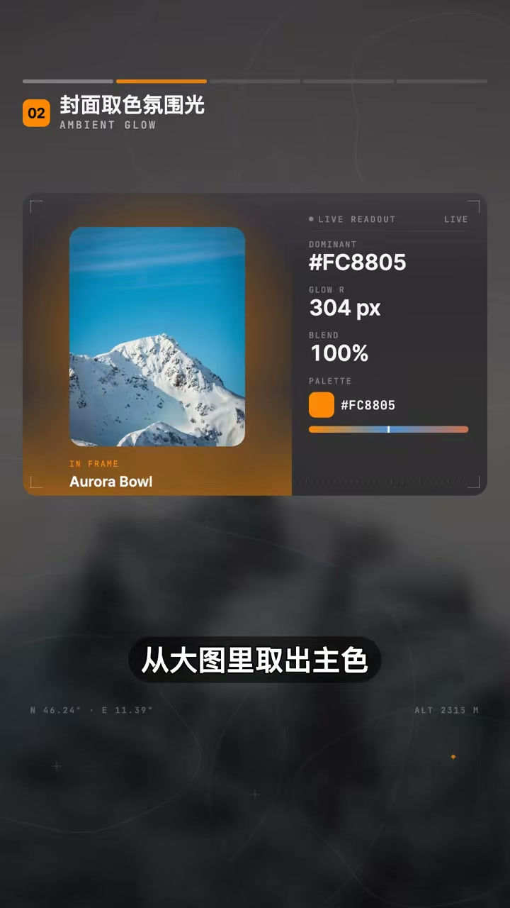
02 封面取色氛围光 演示
封面取色氛围光 AMBIENT GLOW
从大图取出主色铺一层大半径柔光，换图时颜色连续过渡不跳色。
怎么做的： 从大图里取出主色，让它从图的四周溢出来，在背景上铺一层大半径的柔光。图片一换，光韵的颜色连续过渡过去，中间不跳色。一整屏的颜色都是从内容里长出来的。
从大图里取出主色，让它从图的四周一出来，在背景上铺一层大半径的柔光。图片一换，光韵的颜色连续过渡过去，中间不跳色。
AI 描述词
提取封面主色生成环境光域：图片外围铺大半径柔光（radial-gradient，半径 60%），换图时对色值做连续插值过渡（0.4s），不跳色。
复制
03 景深分层滚动演示，附三层速度比
景深分层滚动 PARALLAX DEPTH
内容分三层，越远的走得越慢、糊得越多，平面立刻有纵深。
怎么做的： 把一屏内容分成三层：正在看的那层完全清晰，往后一层轻微模糊压暗，最远的背景糊得更厉害。手指一滚，越远的走得越慢、糊得越多。本来平的一屏立刻有了纵深。
把一瓶内容分成三层，正在看的那层完全清晰，往后一层轻微模糊压按，最远的背景糊得更厉害。手指一滚，越远的走得越慢，糊得越多。
AI 描述词
内容分三层做景深滚动：按层级给不同滚动速度（1 / 0.6 / 0.3），模糊半径与亮度全部由滚动进度驱动（blur 0/6/14px）。
复制
圆柱卷收列表 CYLINDER LIST
列表卷在圆柱面上，正中间最大最亮，越往上下越后仰越小越暗。
怎么做的： 让列表卷在一个圆柱面上，正中间那几项对着你，最大也最亮；越往上下两边越往后仰，越小越暗，滚出屏幕之前先躺平淡出。视线一下就被收到中间那一项上。
让列表向卷在一个圆柱面上，正中间那几项对着你，最大也最亮，越往上下两边越往后仰，越小越暗，滚出屏幕之前先躺平淡出。
AI 描述词
列表项按在可视区中的位置做圆柱形变：以距中心差值插值旋转角度、缩放与亮度（中心 rotateX 0 / scale 1，边缘 rotateX ±45° / scale 0.8），边缘项渐隐。
复制
05 底部粘连拖转演示，附液体桥参数
底部粘连拖转 STICKY DRAG
拖动元素与原位之间拉出一条会变细的液体桥，超过距离才断开，两端回弹成圆。
怎么做的： 拖动一个浮标的时候，别让它一离手就整块飞走。在它和原来的位置之间拉出一条会变细的液体桥，拖得越远桥越细，超过一段距离才真的断开，断的那一下两头各自弹成圆。拖动这件事一下就有了粘性。
拖动一个浮标的时候，别让它一离手就整块飞走。在它和原来的位置之间，拉出一条会变细的液体桥，拖的越远，桥越细，超过一段距离才真的断开，断的那一下两头各自弹成圆。
AI 描述词
拖动元素与原位之间生成液体连接：用 SVG path 画一条宽度随距离收缩的桥（最细 2px），超过阈值（120px）断开，断开瞬间两端回弹成圆。
复制
用 AI 搭出页面只是完成了静态排版，真正影响交互体验的往往就是这些细节。五个动效的完整描述词都整理好了，需要的评论区扣"质感"。
6个高级Dashboard侧边栏设计，一次教会你 西瓜同学🍉 2026-10-09 约 158.6 秒
查看原视频 ↗ 同样的数据和页面，为什么有的看起来很舒服，有的却一股模板感？很多时候差的就是左边这一条。这一期讲 6 个高级 Dashboard 侧边栏设计：悬浮导师栏、深色重底栏、磨砂玻璃栏、双层图标轨、折叠展开式、分组留白加底部收口。每个都配好了跟 AI 说的描述词，照着抄就能做出同款。
01 悬浮导师侧边篮演示，附边距与圆角参数
悬浮导师侧边栏 FLOATING SIDEBAR
栏体脱离屏幕边缘，四周留等距空白，大圆角浮在页面上。
怎么做的： 让栏体脱离屏幕边缘，四周流出等距的空白，整条做成大圆角浮在页面上，底下衬一层很淡的阴影，页面底色从四周透出来。后台那种呆板感一下就散了。
让篮体脱离屏幕边缘，四周流出等距的空白，整条做成大圆角浮在页面上，底下称一层很淡的阴影，页面底色从四周透出来。
AI 描述词
侧边篮改为浮动面板：四边留 16px 外边距，圆角 20px，配一层低透明度柔和投影，页面底色从四周透出。
复制
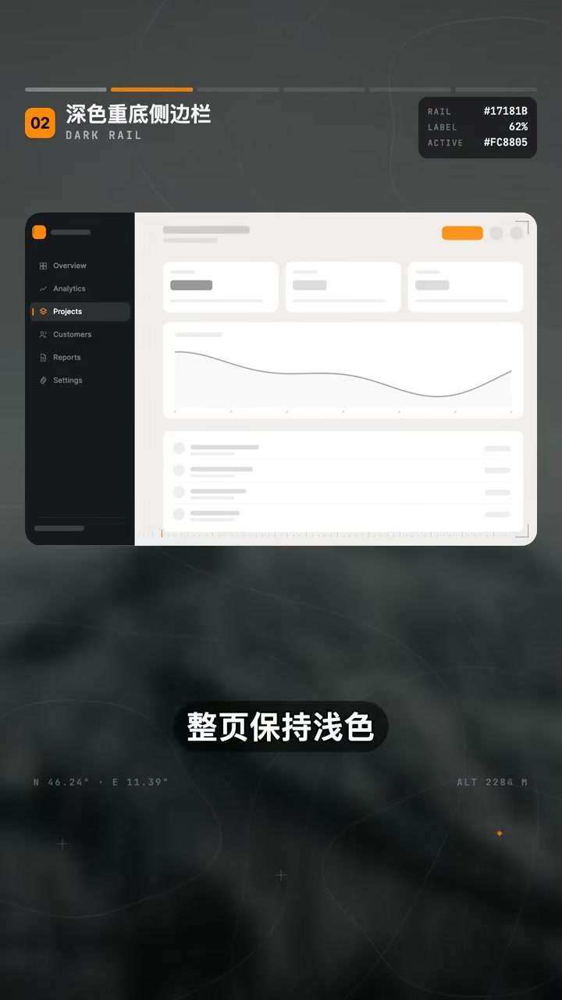
02 深色重底侧边栏 演示
深色重底侧边栏 DARK ANCHOR BAR
整页保持浅色，把全页唯一的深色都给这一条栏，整页重量被收住。
怎么做的： 整页保持浅色，把全页唯一的深色都给这一条栏。导航文字用低饱和的浅灰，只有当前项才亮起来。整页的重量被这一条收住，主区反而更干净。
整页保持浅色，把全页唯一的深色都给这一条篮。导航文字用低饱和的浅灰，只有当前向才亮起来。整页的重量被这一条收住，主区反而更干净。
AI 描述词
侧边栏使用深色背景，常规项用低对比浅灰文字，当前项使用高亮强调色；主区保持浅色，全页仅此一处深色。
复制
03 磨砂玻璃侧边篮演示，附透明度与模糊值
磨砂玻璃侧边栏 FROSTED GLASS
栏体只上半透明白，背景模糊让底下渐变隐约透上来，边缘补一条亮边。
怎么做的： 栏体只上一层半透明的白，打开背景模糊，让底下的渐变或者照片隐约透上来，边缘再补一条很素的亮边。栏和页面之间立刻有了真实的前后层次。
蓝体只上一层半透明的白，打开背景模糊，让底下的渐变或者照片隐约透上来，边缘再补一条一向素的亮边。
AI 描述词
侧边栏应用毛玻璃效果：背景色半透明（白 12%），背景模糊 24px，边缘用亮白描边（1px rgba(255,255,255,.4)）。
复制
双层图标轨 TWO-TIER NAV
最左窄轨放大模块，右边二级栏放当前模块下的具体页面，层级再多也不堆成长串。
怎么做的： 最左边留一条很窄的图标轨，只放模块；右边再接一条二级栏，放当前模块下面的具体页面。层级一多就靠这个拆，导航再深也不会堆成一长串。
最左边留一条很窄的图标轨，只放大模块，右边再接一条二级篮，放当前模块下面的具体页面。层级一多就靠这个柴，导航再深也不会堆成一长串。
AI 描述词
采用双层导航：左侧 72px 图标轨切换模块，右侧 240px 面板展示该模块下的二级页面。
复制
折叠展开式 HOVER EXPAND
默认只留图标窄轨，悬停整条平滑展开出文字，窄屏特别好用。
怎么做的： 默认只留图标那条窄轨，鼠标移上去整条平滑展开出文字，宽度变化带一点缓动，文字缓一拍再带进来。屏幕窄的时候特别好用，主区还能多出一大片地方。
默认只留图标那条窄轨，鼠标移上去，整条平滑展开出文字，宽度变化带一点缓动，文字缓一拍再带进来。屏幕窄的时候特别好用。
AI 描述词
侧边栏支持悬停展开：宽度从 72px 平滑过渡到 240px（ease-out 0.3s），文字延迟 80ms 淡入。
复制
06 分组留白侧边篮演示，附组间距参数
分组留白加底部收口 GROUPED + FOOTER
导航按业务分组、组间留大段空白，底部固定头像和用量，列表单独滚动。
怎么做的： 把导航按业务分成两三组，组之间留一大段空白，组名用很小的灰字标在上面。栏体底部固定放头像和用量这些信息，中间的列表单独滚动。十几个入口也能排得不挤。
把导航按业务分成两三组，组之间留一大段空白，组名用很小的灰字标在上面，篮体底部固定放头像和用量这些信息，中间的列表单独滚动。
AI 描述词
侧边栏导航分组：组间距 32px，组标题 11px 大写灰字，底部固定用户区（头像 + 用量），中间列表独立滚动。
复制
侧边栏是后台里视线经过最多的一条，它的质感基本决定了整页的第一印象。六个做法的完整描述词都整理好了，需要的评论区扣"侧边栏"。
AI编程设计：8个动效设计让App和小程序交互质感拉满 西瓜同学🍉 2026-10-09 约 180.6 秒
查看原视频 ↗ 用 AI 搭出页面只是完成了静态排版，加上这些丝滑的微交互，产品才算真正有了质感。这一期分享 8 个动效：3D 倾斜光影面板、流体胶囊形变、共享元素无缝展开、磁吸油标与滚动马表、阻尼弹性抽屉、动态迷散光运边框、物理弹簧交错流、弹性微缩触觉反馈。每个都教你怎么跟 AI 准确描述。
01 3D 倾斜光影面板演示，附透视与高光参数
3D 倾斜光影面板 3D TILT + SPECULAR
按压面板随触点 3D 倾斜，表面掠过跟随手指的镜面高光，松手阻尼回正。
怎么做的： 手指按压面板时，面板随触点做 3D 轻微倾斜，表面掠过一道跟随手指流转的镜面高光，松手阻尼弹性复位。平面的界面立刻有了实体材质感。
手指按压面板时，面板随触点做 3D 轻微倾斜，表面略过一道跟随手指流转的镜面高光，松手阻尼弹性复位。平面的界面立刻有了实体材质感。
AI 描述词
为 Card 添加跟随触摸位置的 3D 透视（perspective 800px，rotateX/Y 最大 8°）与镜面反射流光高光，松手带 spring 阻尼回正。
复制
流体胶囊形变 FLUID MORPH
按钮触发加载时没有生硬弹窗，像水滴一样平滑流动延展成新面板。
怎么做的： 按钮在触发加载或展示状态时，没有生硬的弹窗，像水滴一样平滑流动延展成新的面板，圆角与尺寸无缝过渡。
按钮在触发加载或展示状态时，没有声音的弹窗，像水滴一样平滑流动，延展成新的面板，圆脚与尺寸无缝过渡。
AI 描述词
实现胶囊按钮向弹窗面板的流体形态变化：尺寸与圆角采用高阻尼流体曲线无缝过渡（cubic-bezier(.4,0,.2,1)，0.4s）。
复制
03 共享元素展开演示，卡片膨胀为详情页
共享元素无缝展开 SHARED ELEMENT
列表条目原地平滑放大膨胀成详情页，返回原路收缩，没有白屏或推屏感。
怎么做的： 点击列表里的条目，条目原地平滑放大，直接膨胀展开成详情页；返回时反向收缩回原位，完全没有生硬的白屏或推屏感。
点击列表里的条目，条目原地平滑放大，直接膨胀展开成详情页，返回时返向收缩回原位，完全没有声音的白屏或推屏感。
AI 描述词
实现卡片到详情页的共享元素转场：卡片容器与背景做连续平滑缩放（FLIP 技术），返回沿原路径收缩回原位。
复制
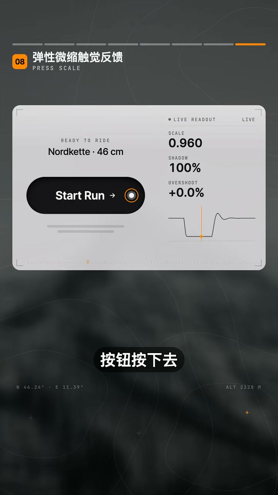
04 磁吸油标与滚动马表 演示
磁吸油标与滚动马表 MAGNETIC + ODOMETER
图表滑动自动磁吸最近数据点，顶部数字像机械马表一样丝滑翻滚。
怎么做的： 手指在图表滑动时，自动磁吸吸附到最近的数据点，焦点光环呼吸放大，顶部数据像机械马表一样丝滑翻滚切换。
手指在图表滑动时，只实现自动磁吸吸附最近的数据点，焦点光运呼吸放大，顶部数据像机械马表一样丝滑翻滚挑遍。
AI 描述词
折线图横向滑动带数据点磁吸吸附（阈值 12px），焦点光环呼吸放大，顶部数值使用滚动计数器实时平滑联动。
复制
05 阻尼弹性抽屉演示，附阻尼系数
阻尼弹性抽屉 RUBBER BAND SHEET
抽屉拉到底或拽到底有真实橡皮筋阻尼，松手按手势速度自动吸附。
怎么做的： 底部弹出的面板向上拉到底或下拉到底时，带有真实的橡皮筋阻尼拉伸效果；松手时根据拖拽的速度，自动判断吸附到对应高度。
底部弹出的面板向上拉到底或下拉到底时，带有真实的橡皮筋阻尼拉伸效果，松手时根据拖拽的速度，自动判断吸附到对应高度。
AI 描述词
实现支持阻尼橡皮筋回弹的底部抽屉：越过边界后位移乘以 0.4 阻尼系数，松手根据手势滑动速度自动计算吸附档点。
复制
动态迷散光运边框 AURORA BORDER
核心模块加一圈缓慢旋转的渐变流光微边框，背后映出毛玻璃迷散光。
怎么做的： 给 AI 功能区或核心模块加一圈缓慢旋转的渐变流光微边框，并在模块背后映射出柔和的毛玻璃迷散光运。整个模块的层次一下就出来了。
给 AI 功能区获核心模块，加一圈缓慢旋转的渐变流光微边框，并在模块背后，映射出柔和的毛玻璃迷散光运。整个模块的层次一下就出来了。
AI 描述词
为卡片添加旋转渐变描边（conic-gradient 动画），底部附带动态模糊的呼吸迷散背光（blur 30px，opacity 呼吸）。
复制
物理弹簧交错流 STAGGERED SPRING IN
内容加入时设微小时间差，每项从下往上带弹性依次弹入。
怎么做的： 列表或瀑布流内容加入时，别让它们整体死板地弹入。设置极微小的时间差，每一项从下往上带一点物理弹性依次弹入视野。
列表或铺布流，内容加在时，别让他们整体死板地弹入。设置极微小的时间差，每一项从下网上，带一点物理弹性依次弹入视野。
AI 描述词
列表元素入场使用交错动画：每项延迟 index × 40ms，带微弱弹性向上滑入（translateY 16px → 0，spring 阻尼 12）。
复制
弹性微缩触觉反馈 PRESS MICRO-SCALE
按压瞬间 0.96 微缩并加深内阴影，松手微冲过头再回弹，按起来很扎实。
怎么做的： 按钮按下去，别只做透明度变化：按压瞬间产生 0.96 的微缩压缩，并伴随细微的内阴影加深，松手瞬间微冲过头再回弹，按起来很扎实。
按钮按下去，别只做透明度变化，按压瞬间产生 0.96 的微缩压缩，并伴随细微的内阴影加深，松手瞬间微冲过头再回弹，按起来很扎实。
AI 描述词
按钮按压添加 0.96 的物理弹性压缩与深度内阴影，释放时触发轻微超调（1.02）后回弹到 1。
复制
用 AI 搭出页面只是完成了静态排版，加上这些丝滑的微交互，产品才算真正有了质感。八个动效的完整描述词都整理好了，需要的评论区扣"动效"。
AI设计工作流：2个Skills让AI做出高级审美UI 西瓜同学🍉 2026-10-09 约 165.1 秒
查看原视频 ↗ 为什么你让 AI 做的 UI 总像廉价模板，别人一做就是专业级的高级质感？其实差别在于你有没有用设计系统的语言跟它沟通。这一期教你把术语 Skill 和设计规范 Skill 组合起来用：一个负责翻译你的大白话，一个负责输出成熟的产品设计规范。哪怕零基础，也能让 AI 稳定做出高品质的 App、Web 和小程序界面。
01 视频封面，双 Skill 工作流总览
两步核心逻辑 TRANSLATE THEN STANDARDIZE
不用死记专业名词：直觉扔给术语 Skill，规范交给设计规范 Skill。
怎么做的： 核心逻辑就两步，你完全不用死记专业名词。第一步，把你的直觉和感受扔给术语 Skill，它帮你把模糊的描述翻译成专业设计术语；第二步，交给设计规范 Skill，它会把术语细化成 AI 能严格执行的参数级设计规则。一个找准问题，一个建立标准。
第一步把你的直觉和感受扔给数语 Skill，它帮你把模糊的描述翻译成专业设计数语。第二步交给设计规范 Skill，它会把数语细化成 AI 能严格执行的参数级设计规则。一个找准问题，一个建立标准。
AI 描述词
先用术语 Skill 把直觉描述翻译成专业设计术语，再把术语交给设计规范 Skill 输出参数级设计规则，两步串联后交给 AI 执行。
复制
02 Web：首页没有重点 演示
Web：首页没有重点 VISUAL FLOW
术语 Skill 提炼视觉动线、信息层级、图片加载三个词，规范 Skill 给落地规则。
怎么做的： 你可能只会跟 AI 说"首页东西太多了，一眼不知道先看哪，图片夹在的时候还一块一块往外蹦"。术语 Skill 帮你提炼出三个词：视觉动线、信息层级和图片加载。设计规范 Skill 接着给出落地规则。
首页东西太多了，一眼不知道先看哪，图片夹在的时候还一块一块往外蹦。数语 Skill 帮你提练出三个词，视觉动线、信息层级和股价平。
AI 描述词
把"首页太乱、不知道先看哪、图片加载时跳动"翻译为视觉动线、信息层级、图片加载三个术语，再交给设计规范 Skill。
复制
Web 落地规则 WEB RULES
首屏只留一个主角，其他模块字号降一档颜色减弱，图片先用浅色占位块站位。
怎么做的： 设计规范 Skill 给出规则：首屏只留一个主角，主内容做成横滑大图卡，搜索和筛选收成一行，其他次要模块字号统一降一档、颜色减弱。图片加载前先用同尺寸的浅色占位块把位置站住，图到了再弹入。这样发给 AI，一眼就知道先看哪，图片到了也不会把下面的内容顶走。
首评只留一个主角，主内容做成横滑大图卡，搜索和筛选收成一行，其他刺激模块字号统一降一档，颜色减弱。图片夹在前，先用同尺寸的浅色站位块把位置站住，图到了再弹入。
AI 描述词
首页首屏只保留一个主角（横滑大图卡），搜索与筛选收为一行；次要模块字号降一级、颜色减弱；图片加载前用同尺寸浅色占位块站位，载入后弹入，避免布局跳动。
复制
App：拇指安全区 THUMB ZONE
术语 Skill 识别拇指安全操作区与底部悬浮按钮，规范 Skill 注入参数。
怎么做的： 如果你对 AI 说"核心按钮放在上面，单手很难点到，整体显得死板"，术语 Skill 快速识别关键：这是拇指安全操作区和底部悬浮按钮的问题。设计规范 Skill 接着注入规范标准。
核心按钮放在上面，单手很难点到，整体显得死板。数语 Skill 快速识别关键，这是拇指安全操作区，和底部悬浮按钮的问题。
AI 描述词
把"按钮在顶部单手点不到"识别为拇指安全操作区与底部悬浮按钮问题，再交给设计规范 Skill 输出参数。
复制
App 落地规则 APP RULES
主操作下沉到下三分之一拇指舒适区，48pt 全圆角胶囊，毛玻璃底栏。
怎么做的： 主操作全面下沉到屏幕下三分之一的拇指舒适区，主按钮设为 48pt 高度、全圆角胶囊形态，底部栏加 20px 高斯模糊的毛玻璃背景，上滑时内容通透，操作也更聚焦。AI 拿到的不是抽象的"做好用一点"，而是一套单手就能顺手操作的专业规范。
主操作全面下沉到屏幕下三分之一的拇指舒适区，主按钮设为 48 点高度、全圆角胶囊形态，底部蓝加 20 向速的高丝模糊毛玻璃背景，上滑时内容通透，操作也更聚焦。
AI 描述词
主操作按钮下沉至屏幕下 1/3 拇指舒适区：高度 48pt、全圆角胶囊形；底部栏使用 20px 高斯模糊毛玻璃背景，上滑时内容保持通透。
复制
后台：间距与层级 SPACING SYSTEM
术语 Skill 拆出 8 倍数间距系统、字节层级差、零数据空状态三个问题。
怎么做的： 最考验功底的是外部界面。如果说"看着头晕"，术语 Skill 会把它拆解成以 8 为倍数的间距系统、字节层级差，以及零数据空状态。
看着头晕。数与 Skill 会把它拆解成，以 8 为倍数的间距系统，字节层集差，以及零数据空状态。
AI 描述词
把"后台看着头晕"拆解为 8 倍数间距系统、字号层级差、零数据空状态三类问题，再交给设计规范 Skill。
复制
07 后台界面落地效果，附字号与网格参数
后台落地规则 DASHBOARD RULES
四级字号、24/32 网格基准、表格行高 56、零数据换引导式空状态。
怎么做的： 设计规范 Skill 给出具体参数：建立四级字节 24/18/14/12px，模块外边距严格按 24 和 32px 的网格基准，表格行高 56px 配浅色斑马纹。遇到零数据时，别再放一句干巴巴的"暂无数据"，换成带轻量插画的引导式空状态，再配一个立即创建按钮。这样生成的后台页面，专业软件的通透感和严谨度立刻就出来了。
建立四级字节，24、18、14、12 向速。模块外边据严格按 24 和 32 向速的网格基准，表格行高 56 向速，配浅色斑马纹。遇到零数据时，别再放一句干点的暂无数据，换成带轻量插画的，引导式空状态，再配一个立即创建按钮。
AI 描述词
后台建立四级字号 24/18/14/12px；模块外边距按 24 与 32px 网格基准；表格行高 56px 配浅色斑马纹；零数据用带轻量插画的引导式空状态 + 立即创建按钮。
复制
决定 AI 产出上线的不是运气，是你输入设计规则的精准度。术语 Skill 帮你把痛点说准，设计规范 Skill 帮 AI 把标准立住。这套涵盖 App、Web 和小程序的双 Skill 提示词模板和工作流已经整理好了，需要的评论区扣"Skill"。
8种App和小程序的高级提示动效，让细节更有质感 西瓜同学🍉 2026-10-09 约 90.6 秒
查看原视频 ↗ Toast、红点、角标、横幅都算提示。这一层做得好不好，用户其实很容易感受到。点一下红点，提示内容就从红点那个位置展开，交互才连贯，不会凭空跳出来一块新东西。这一期讲 8 种高级提示动效，核心只有一句：提示不该强刷存在感，它只要在对的时候出现、用对的方式消失。
01 视频封面，8 种提示动效总览
从触发点展开 ORIGIN ANCHORED
点一下红点，提示内容就从红点那个位置展开，交互才连贯。
怎么做的： 点一下红点，提示内容就从红点那个位置展开，交互才连贯，不会凭空跳出来一块新东西。
点一下红点，提示内容就从红点那个位置展开，交互才连贯，不会凭空跳出来一块新东西。
AI 描述词
提示浮层从触发元素位置展开（transform-origin 设为触发点），伴随轻微缩放淡入。
复制
02 位移淡入进场 演示
位移淡入进场 SOFT ENTER
提示别突然弹出来，用位移加透明度进场，停留后平滑自己退走。
怎么做的： 提示别突然弹出来，用一点位移加透明度变化进场，停留时间再平滑自己退走。
提示别突然弹出来，用一点位移加透明度变化进场，停购时间再平滑自己退走。
AI 描述词
Toast 用位移 + 透明度进场（translateY 12px → 0，0.25s），停留 2.5s 后同曲线平滑退出。
复制
多条排队 QUEUED TOASTS
连着来好几条提示，前一条先移开让位，下一条再进来，过程才看得清。
怎么做的： 连着来好几条提示，别让它们挤在一起。新的来了，前一条先移开让位，下一条再进来，过程才看得清。
连着来好几条提示，别让它们挤在一起，新的来了，前一条先移开绕位，下一条再进来，过程才看得清。
AI 描述词
多条 Toast 排队：新提示到达时旧提示先平滑上移让位，新提示再进入，同一时刻最多显示 3 条。
复制
倒计时进度化 TIMED PROGRESS
撤销除了写剩余时间，把倒计时做成进度动画，走完提示才消失。
怎么做的： 撤销这条，除了写剩余时间，把倒计时直接做成进度动画，走完提示才消失，还剩多少时间可以撤销一眼就看得出。
撤销这条，除了写剩余时间，把倒计时直接做成进度动画，走完提示才消失，还剩多少时间可以撤销，一眼就看得出。
AI 描述词
撤销提示把倒计时做成进度条动画：宽度随剩余时间线性收缩，走完才自动消失，旁边同步显示秒数。
复制
05 红点原位消散演示，附缩放消散参数
红点原位消散 BADGE DISSOLVE
处理完一条通知，红点沿着原来的位置缩回去再散掉，才知道处理的是哪一条。
怎么做的： 处理完一条通知，红点别趴地就没了，让它沿着原来的位置缩回去再散掉，你才清楚被处理的是哪一条。
处理完一条通知，红点别趴的就没了，让它沿着原来的位置，缩回去再散掉，你才清楚被处理的是哪一条。
AI 描述词
通知红点消失时从原位置缩放消散（scale → 0 并淡出），不使用整体重绘，保证用户能对应到具体条目。
复制
角标数字翻动 NUMBER FLIP
角标数字变了别直接替换，让它带位移翻过去，九变十那一下才感受得到。
怎么做的： 角标上的数字变了，别直接替换，让它带位移翻过去，九变十那一下才感受得到，数量变过才感受得到。
脚标上的数字变了，别直接提换，让它带位移翻过去，九变十那一下不及外旁边，数量变过才感受得到。
AI 描述词
角标数字切换用翻牌动画：旧数字向上翻出、新数字从下方翻入（rotateX ±90°，0.3s）。
复制
横幅挤压页面 BANNER PUSH
顶部横幅从状态栏挤下来，页面跟着往下让一段，它才像真的压在上面。
怎么做的： 顶部横幅，从状态栏挤下来，页面跟着往下让一段，它才像真的压在上面。
顶部横幅，从状态栏挤下来，页面跟着往下让一段，它才像真的压在上面。
AI 描述词
顶部横幅从状态栏高度滑入，同时页面主体向下位移让出等高空间，关闭时反向收回，不使用浮层遮挡。
复制
未读线淡出与红点联动 UNREAD LINE + BADGE SYNC
未读分割线停在原地等滚过再淡掉；处理一条，分组和顶部数字一起减。
怎么做的： 未读分割线停在原地不动，等你滚过去再淡掉，位置才不会在眼皮底下变。红点连锁：处理掉一条，分组和顶部的数字一起跟着减，三层对不上就没人信。
未读分割线停在原地不动，等你滚过去再淡掉，位置才不会在眼皮底下避。红点连锁，处理掉一条，分组和顶部的数字一起跟着剪，三层对不上就没人写。
AI 描述词
未读分割线保持原位，滚动经过时淡出；处理一条通知时，分组红点与顶部总数字同步递减，三层计数保持一致。
复制
提示这一层不该抢戏，它只要在对的时候出现、用对的方式消失。
我用豆包Agent远程改完App UI 西瓜同学🍉 2026-10-09 约 116.8 秒
查看原视频 ↗ 这个 App 界面是我在外面喝咖啡时，用豆包在手机上远程遥控办公室的电脑改完的。豆包推出了办公智能体，实测一个月免费。这一期讲手机遥控电脑和云电脑两个模式怎么用、怎么选：任务需不需要操作本地文件，决定了你用双端互通还是云电脑。
01 视频封面，手机遥控电脑改 UI
为什么需要远程改 WHY REMOTE
代码还在跑、页面还要调，人一离开电脑进度就停。
怎么做的： 像我们用 AI 编程经常会遇到这种情况：代码还在跑，页面还要继续调整，人一旦离开电脑，进度就很容易停下来。所以这次尝试把后续修改交给手机遥控电脑功能。
像我们用 AI 编程经常会遇到这种情况，代码还在跑，页面还要继续调整，人一旦离开电脑，进度就很容易停下来。
AI 描述词
识别"人离开电脑导致 AI 编程任务中断"的场景，改用移动端远程遥控继续执行。
复制
连接前确认两件事 PRE-CHECK
同账号手机能控这台电脑；电脑在执行任务时不会中途休眠。
怎么做的： 第一次用，要先在电脑端打开"手机遥控电脑"，这里主要确认两件事：同账号手机能控制这台电脑，电脑在任务执行时不会中途休眠。然后在手机端登录同一个账号，把手稿切到工作，在工作设备里选择这台在线的电脑就可以连接上。
第一次用，要先在电脑端打开手机遥控电脑，这里主要确认两件事，同帐号手机能控制这台电脑，电脑在任务执行时不会中途熊棉。
AI 描述词
远程连接前置检查：确认账号一致、目标电脑在线且已关闭休眠/锁屏中断。
复制
03 手机端任务卡与执行过程记录
手机上发需求 MOBILE PROMPT
直接在手机上发需求，办公室电脑立即开始执行，任务卡同步记录过程。
怎么做的： 接下来直接在手机上发需求，比如这次让它调整手稿卡片间距、把底部导航改成三个 tab，改完之后再运行预览。指令发出后办公室的电脑就会开始执行，手机任务卡顶部会显示正在连接的电脑，下面也会同步记录执行过程。
接下来直接在手机上发需求，比如我这次让它调整手液卡片间距，把底部导航改成三个 tab，改完之后再运行预兰。指令发出后办公室的电脑就会开始执行。
AI 描述词
在移动端直接下发修改指令（含具体参数与验收动作），远程电脑执行并在任务卡同步执行过程。
复制
同一任务里补需求 APPEND IN THREAD
看完结果想继续调整，不用重开任务，同一任务里补一句就继续改。
怎么做的： 看完结果还想继续调整，也不用重新开任务，直接在同一个任务里补一句需求，它就会在电脑端继续修改。
看完结果还想继续调整，也不用重新开任务，直接在同一个任务里补一句需求，它就会在电脑端继续修改。
AI 描述词
支持在同一任务线程内追加修改需求，保持上下文连续，不重开任务。
复制
挂上 UI 规范技能 ATTACH SKILL
发任务前挂上自己的 UI 规范技能，让它按同一套规则改，减少返工。
怎么做的： 像我平时有固定的 UI 规范，就在发任务前挂上技能，让它按同一套规则来改，减少返工。这个技能大家自己根据要做什么去选就行，它里面内置了百来个。
像我平时有固定的 UI 规范，就在发任务前挂上技能，让它按同一套规则来改，减少反攻。这个技能大家自己根据自己要做什么去选就行，它里面内置了百来个。
AI 描述词
下发修改任务前先挂载自有 UI 规范 Skill，强制 AI 按同一套设计规则执行，减少返工。
复制
06 云电脑模式与双端互通模式选择界面
云电脑模式 CLOUD MODE
批量生成统计页、详情页交给云端跑，不占本地资源，手机继续看进度。
怎么做的： 这个工作模式里比较吸引我注意的是有个云电脑选项。像批量生成统计页、详情页、设置页这类页面，就可以交给这个模式去做，任务会在云端环境里运行，不依赖本地电脑，也不会占用你自己的电脑资源。你可以用手机继续查看进度、补充指令和查看结果。
有个云电脑的选项，像批量生成统计页、详情页、设置页这类页面，就可以交给这个模式去做，任务会在云端环境里运行，不依赖本地电脑，也不会占用你自己的电脑资源。
AI 描述词
批量生成同类页面（统计页/详情页/设置页）时改用云电脑模式执行，本地仅通过移动端查看进度与补充指令。
复制
两个模式怎么选 CHOOSE MODE
要改本地项目用双端互通；项目已上云或任务重、需持续运行用云电脑。
怎么做的： 这两个功能怎么选，其实看任务需不需要操作本地文件：要改本地项目就用双端互通；如果项目已经放到云端，或者任务更重、需要持续运行，就更适合用云电脑。想试的话去 PC 端豆包体验"豆包工作"，现在送 30 天，新老用户都可以。
其实看任务需不需要操作本级文件，要改本地项目就用双端互通，如果项目已经放到云端或者任务更重，需要持续运行就更适合用云电脑。
AI 描述词
按是否依赖本地文件选择执行模式：需操作本地项目用双端互通；项目已在云端或需长时间持续运行用云电脑。
复制
代码还在跑、页面还要调的时候，人不必守在电脑前。远程遥控加云电脑，把"离开电脑就停工"这个 AI 编程的老问题解决掉了。
告别廉价模板！让AI网页质感翻倍的5个高级灵感库 西瓜同学🍉 2026-10-09 约 84.3 秒
查看原视频 ↗ 为什么别人用 AI 写出来的网页丝滑又高级，你写出来却一眼就是 AI 味？很多时候不是 AI 不行，是你缺一套高质量的设计参考。这一期分享 5 个我自己常用的灵感库：MotionSites、SoReal Design、React Bits、UIverse、GSAP，从定方向、提审美、做交互、补细节到升华动效，一条链路走完。
01 MotionSites 落地页结构参考卡片（顶部窄导航 + 整屏 Hero）
MotionSites 定方向 MOTION SITES
新手迷路时直接看它，里面有大量极具设计感的落地页案例。
怎么做的： 前期不知道怎么写 Prompt，直接对标它的结构和布局，AI 出来的页面框架一步到位，绝不跑偏。
第一个 MotionSites，新手迷路直接看它，里面有大量极具设计感的落地页案例。前期不知道怎么写 Prompt，直接对标它的结构和布局，AI 出来的页面框架一步到位，绝不跑偏。
AI 描述词
参考 MotionSites 上某落地页的结构与布局（顶部窄导航 + 整屏 Hero + 分区滚动）来搭这个页面，框架先一步到位。
复制
02 SoReal Design 工作室动态案例截图，附配色/留白/字体拆解维度
SoReal Design 提审美 SO REAL DESIGN
汇集各家设计工作室的动态案例，专拉审美上限。
怎么做的： 看到心动的直接截图给 AI，让它拆解配色、留白、字体和节奏，全页面高级调性瞬间拉满。
第二个 SoReal Design，专拉审美上限，汇集了各家设计工作室的动态案例。看到心动的直接截图给 AI，让它拆解配色、留白、字体和节奏，全页面高级调性瞬间拉满。
AI 描述词
参照这张 SoReal Design 上的案例截图，拆解它的配色、留白比例、字体层级和视觉节奏，并把这套调性套到我的页面上。
复制
React Bits 做交互 REACT BITS
React 项目现成组件库，海量交互特效和动态背景，代码完全开源。
怎么做的： 找相似效果直接让 AI 适配进你的页面，省时，而且交互极度丝滑。
第三个 React Bits，React 项目的现成组件库，海量现成的交互特效和动态背景，代码完全开源。找相似效果直接让 AI 适配进你的页面，省时，而且交互极度丝滑。
AI 描述词
从 React Bits 里找一个类似的交互特效/动态背景组件，把它的实现适配进我这个页面，保持代码开源可改。
复制
UIverse 补细节 UIVERSE
专治网页粗糙廉价，海量高级按钮效果、立体卡片和加载动画。
怎么做的： 把 AI 默认生成的简陋组件全替换掉，细节精致感立马翻倍。
第四个 UIverse，专治网页粗糙廉价，里面有海量的高级按钮效果、立体卡片和加载动画。把 AI 默认生成的简陋组件全替换掉，细节精致感立马翻倍。
AI 描述词
把页面里 AI 默认生成的按钮、卡片、加载动画全部替换成 UIverse 上的高级版本（立体卡片 + 精致按钮 + 加载动画）。
复制
05 GSAP 重构动效前后对比（视差滚动 / 平滑转场）
GSAP 升华动效 GSAP
解决动效生硬卡顿的终极解法，让 AI 用 GSAP 重构动效逻辑。
怎么做的： 不管是视差滚动还是平滑转场，找个对标案例让 AI 直接用 GSAP 重构动效逻辑，立马有大厂官网既视感。
第五个 GSAP，解决动效生硬卡顿的终极解法。不管是视差滚动还是平滑转场，找个对标案例让 AI 直接用 GSAP 重构动效逻辑，立马有大厂官网既视感。
AI 描述词
用 GSAP 重构这个页面的动效逻辑：滚动触发时间轴 + 视差与平滑转场，替换掉现有的 CSS transition 生硬切换。
复制
按这五步走：用 MotionSites 定方向，SoReal 提审美，React Bits 做交互，UIverse 补细节，最后用 GSAP 升华动效，网页质感直接翻倍。五个灵感库我都整理好了。
5种App和小程序高级交互，一次教会你 西瓜同学🍉 2026-10-09 约 103.6 秒
查看原视频 ↗ App 和小程序里有哪些高级交互设计值得学？这一期直接讲五种：按钮反馈、文字动效、元素进场、卡片层次，还有最后一个很容易被忽略的——动效怎么停。五种常见的高级交互，一次讲清楚。
01 按钮反馈演示（BUTTON FEEDBACK），高亮沿边缘跑一圈、加载持续循环
按钮反馈要配得上动作 BUTTON FEEDBACK
点击之后不要只是缩一下再弹回来，让高亮沿着按钮边缘跑一圈。
怎么做的： 点击之后让高亮沿着按钮边缘跑一圈，或者在加载的时候持续循环，用户会明显感觉到"我刚刚的操作真的被接收到了"。重点是让反馈跟当前状态对上。
按钮点击之后，不要只是缩一下再弹回来，可以让它有一个更完整的反馈。比如点击之后，让高亮沿着按钮边缘跑一圈，或者在加载的时候持续循环。这样用户会明显感觉到，我刚刚的操作真的被接收到了。重点是让反馈跟当前状态对上。
AI 描述词
按钮点击后加一圈沿边缘跑动的高亮描边（border 流光，0.6s 一圈），加载状态时该高亮持续循环；反馈强度与当前按钮状态对应。
复制
02 文字动效演示（TEXT MOTION），数字滚动切换 + 状态文字自然替换
让文字参与交互 TEXT MOTION
文字发生变化时别直接替换，让它自己动一下，界面立刻精致很多。
怎么做的： 数字变化可以做成滚动切换，状态变化可以让新文字自然替换进来。让文字也参与交互，别让它永远是静态信息。
很多时候文字发生变化，直接替换就结束了。但如果让它自己动一下，整个界面就会精致很多。比如数字变化可以做成滚动切换，状态变化可以让新文字自然替换进来。让文字也参与交互，别让它永远是静态信息。
AI 描述词
数字变化用滚动计数动画（odometer，逐位翻滚到位），状态文字用位移淡入替换；文字变化也要有过渡，不做直接替换。
复制
元素错开进场 STAGGER ENTRY
页面打开时不要所有东西一起出现，错开一点，页面马上就有节奏。
怎么做的： 标题先出来，内容跟上，最后再导按钮。其实不用很复杂，只要有一点时间差，页面马上就有了节奏。高级感很多时候就是从这个节奏里来的。
页面打开的时候，不要所有东西一起出现，把他们稍微错开一点，标题先出来，内容跟上，最后再导按钮。其实不用很复杂，只要有一点时间差，页面马上就有了节奏。高级感很多时候，就是从这个节奏里来的。
AI 描述词
页面入场元素按顺序错开进场：标题 → 内容 → 按钮，每项延迟 7 帧（约 120ms）依次淡入上移。
复制
让文字参与交互 TEXT IN INTERACTION
文字不只是静态信息，它本身也可以是交互的一部分。
怎么做的： 把数字和状态的变化做成动效，文字就参与了交互，整个界面会精致很多。
让文字也参与交互，别让它永远是静态信息。
AI 描述词
把页面里的数字与状态文字接入动效系统，随用户操作滚动/替换，文字也参与交互反馈。
复制
五种交互看起来都是小细节，但放进 App 和小程序里，整体质感真的会差很多。把这些细节用好，你的交互会更有设计感。
8种高级App和小程序的卡片按钮交互，一次教会你 西瓜同学🍉 2026-10-09 约 168.6 秒
查看原视频 ↗ 同样是弹出一张卡片，有的从你刚按的那枚按钮上长出来，有的从屏幕正中间冒出来。后者你一眼就能看出这张卡是谁叫出来的。这一期 8 种卡片按钮交互，拆开看都在回答三个问题：从哪来、变成什么样子、又去了哪。这三个答清楚，剩下的就是调数值。
01 一枚按钮三种状态演示（BUTTON STATE CHAIN）
一枚按钮三种状态 BUTTON STATE CHAIN
宽按钮收成圆、圆环转两圈再撑开、对勾从中间画出，全过程不跳页不弹窗。
怎么做的： 提交按钮点下去以后自己会变：一条宽按钮先收成一个圆，圆环转两圈再撑开成一条，结果条勾从中间画出来。整个过程没跳页也没弹窗，它一直是同一枚按钮，位置都没挪，你的眼睛不用跟着跑。
这枚提交按钮点下去以后自己会变，一条宽按钮先收成一个圆，圆环转两圈再撑开成一条，结果条勾从中间画出来。整个过程没跳液也没弹窗，它一直是同一枚按钮，位置都没挪，你的眼睛不用跟着跑。
AI 描述词
提交按钮做成状态链：宽按钮 → 收成圆形 + 圆环转两圈 → 撑开成结果条 → 对勾从中间画出；全程不跳页、不弹窗、不移动位置。
复制
02 筛选三段曲线演示（FILTER CURVES）
筛选走三条曲线 FILTER CURVES
被筛掉的原地缩小弹出，留下的走弹簧滑到新位置，新进来的从空槽里长出来。
怎么做的： 筛选器一次要处理三种卡片：一个标签被筛掉的原地缩小弹出，留下的各自走一条弹簧滑到新位置，新进来的从空槽里长出来。三种卡走三条不一样的曲线，你才分得清谁是走了、谁只是挪了个位置。
筛选难在一次要处理三种卡点，一个标签被筛掉的原地缩小弹出，留下的各自走一条弹簧滑到新位置，新进来的从空槽里长出来。三种卡走三条不一样的曲线，你才分得清，谁是走了，谁只是挪了个位置。
AI 描述词
筛选时三种卡片走三条曲线：移除项原地缩小弹出（scale 0→0.8 + 淡出），保留项弹簧滑到新位置（spring），新增项从空槽高度 0 展开长出。
复制
03 一次长按三种结局演示（PEEK & DECIDE）
长按手势三种结局 PEEK & DECIDE
长按卡片浮起、背景后退，松手落下、拖到操作项执行、拖出范围取消。
怎么做的： 长按 400ms 卡片扶起来，背后的内容推到后面。接下来有三条路：直接松手，它落回去；往上拖到操作项上，选中执行；拖出范围再松手就是取消。一个手势按下去，中途你随时能改主意。
长按住 400 毫秒，卡片扶起来，背后的内容推到后面。接下来你有三条路，直接松手，它落回去，网上拖到操作项上，选中执行，拖出范围再松手就是取消。一个手势按下去，中途你随时能改注意。
AI 描述词
长按 400ms 卡片浮起 + 背景后退，此后一个手势三种结局：原地松手落下、拖到操作项上执行、拖出范围外取消。
复制
卡片回到触发点 ORIGIN ANCHORED CARD
卡片从按钮那一点上长出来，关掉时原路收回那一个点。
怎么做的： 点下面这枚按钮，卡片就从按钮那一点上长出来，一边放大一边走到位，最后冲过头一点点再收回来。改点右上角那枚，它就从右上角长出来；关掉的时候，原路收回还是收回那一个点。
点下面这枚按钮，卡片就从按钮那一点上长出来，一边放大一边走到位，最后冲过头一点点再收回来。改点右上角那枚，它就从右上角长出来，关掉的时候，原路收回还是收回那一个点。
AI 描述词
卡片从触发按钮位置长出（transform-origin 设为按钮中心），放大到位后轻微过冲再收回；关闭时沿原路径收回该点。
复制
八种拆完，还是开头那三个问题：从哪来、变成什么样子、又去了哪。这三个答清楚，用户就知道每一张卡都是自己叫出来的。
4种高级审美Dashboard，一个UI设计Skill教会你 西瓜同学🍉 2026-10-09 约 108.5 秒
查看原视频 ↗ 同样是 AI 做后台，为什么有的像模板，有的像成熟产品？这一期调用同一个 UI Skill，只换提示词，一次做出四种完全不同的风格：极简商务风、清爽清亮风、暗黑科技风、高饱和撞色风。关键不只是告诉 AI 你要什么风格，还要说清楚响应式布局、完整业务组件、信息层级和使用场景。
01 极简商务风 Dashboard（顶部导航 + 数据卡片 + 趋势图表）
极简商务风 MINIMAL BUSINESS
不用自己搭布局找组件，重点靠留白和卡片层级让页面更像成熟产品。
怎么做的： 调用 UI Skill 输入商务风提示词，不用自己搭布局找组件，顶部导航、数据卡片、趋势图表直接生成，适合企业后台业务系统。重点靠留白和卡片层级，让页面更像成熟产品。
第一种 极简商务风，调用 UI Skill 输入商务风提示词，不用自己搭布局找组件，顶部导航、数据卡片、趋势图表直接生成，适合企业后台业务系统。重点靠留白和卡片层级，让页面更像成熟产品。
AI 描述词
用 UI Skill 生成极简商务风 Dashboard：顶部导航 + 数据卡片 + 趋势图表直接生成，重点靠留白与卡片层级体现成熟感，适合企业后台业务系统。
复制
02 高饱和撞色风 Dashboard（超大标题压版面、荧光撞黑）
高饱和撞色风 HIGH-SATURATION
超大标题压住版面，荧光色和纯黑硬碰硬，图表做成圆角色块。
怎么做的： 再换一组提示词让它大胆一点：超大标题，压住版面，荧光色和纯黑硬碰硬，图表也做成圆角色块，适合作品级、创意团队、自动化工具后台。撞色不等于花，关键是只让一个颜色亮，其他全部收成黑白。
第四种 高饱和撞色风，让它大胆一点，超大标题，压住版面，荧光色和纯黑硬碰硬，图表也做成圆角色块。适合作品级、创意团队、自动化工具后台。撞色不等于花，关键是只让一个颜色亮，其他全部收成黑白。
AI 描述词
生成高饱和撞色风 Dashboard：超大标题压住版面，荧光色与纯黑硬碰硬，图表用圆角色块；全页只让一个颜色亮，其余收成黑白。
复制
03 四种风格合集（一套 Skill 只换提示词即可复用）
一套 Skill 四种风格 ONE SKILL, FOUR STYLES
只是换了方向，同一个 Skill 就能生成完全不同的气质。
怎么做的： 暗黑科技风再换一组提示词，切换成暗色视觉，搭配高亮数据和动态网格，适合 AI 监控、数据分析运营系统。只是换了方向，同一个 Skill，就能生成完全不同的气质。
第三种 暗黑科技风，再换一组提示词，切换成暗色视觉，搭配高亮数据和动态网格，适合 AI 监控、数据分析运营系统。只是换了方向，同一个 Skill，就能生成完全不同的气质。
AI 描述词
同一 UI Skill 下切换暗黑科技风提示词：暗色视觉 + 高亮数据 + 动态网格，适合 AI 监控与数据分析运营系统。
复制
04 提示词约束清单（布局 / 组件 / 层级 / 场景）
先说清业务约束 STATE CONSTRAINTS
别只告诉 AI 你要什么风格，还要说清楚布局、组件、层级和场景。
怎么做的： 提示词里最好说清楚响应式布局、完整业务组件、信息层级和使用场景。比如要企业数据后台，就告诉他需要哪些数据、哪些图表、什么布局。这样 Skill 才能真正参与到设计规范里。
不要只告诉 AI 你要什么风格，提示词里最好说清楚，响应式布局，完整业务组件，信息层级和使用场景。比如要企业数据后台，就告诉他需要哪些数据，哪些图表，什么布局。这样，Skill 才能真正参与到设计规范里。
AI 描述词
提示词里写清：响应式布局要求、完整业务组件清单、信息层级、使用场景、所需数据与图表类型，再交给 Skill 执行。
复制
05 清爽清亮风 Dashboard（浅色底大圆角 + 单一高亮色）
清爽清亮风 FRESH & AIRY
浅色底大圆角卡片，整页只留一个高亮色，信息很密但看着不挤。
怎么做的： 同一个 Skill 把提示词换成更清更透气的方向：浅色底大圆角卡片，整页只留一个高亮色，适合个人工具、学习和记录类产品。信息其实很密，但看着一点不挤，靠的是留白和统一的圆角。
第二种 清爽清亮风，同一个 Skill 把提示词换成更清更透气的方向，浅色底大圆角卡片，整页只留一个高亮色，适合个人工具、学习和记录类产品。信息其实很密，但看着一点不挤，靠的是留白和统一的圆角。
AI 描述词
生成清爽清亮风 Dashboard：浅色底 + 大圆角卡片，整页只保留一个高亮色，用留白与统一圆角承载高密度信息。
复制
真正决定 AI 做出来好不好看的，不只是模型本身，而是你有没有把设计经验变成一套可以重复调用的 Skill。四套 Dashboard 的提示词和调用方法我都整理好了。
五种App和小程序里的高级审美布局，一次教会你 西瓜同学🍉 2026-10-09 约 146.7 秒
查看原视频 ↗ 同样的内容，为什么一换个布局质感就完全不一样？很多人以为 App 和小程序的高级感靠的是配色、字体和装饰，真正拉开差距的往往是布局。这一期用五种排法一个一个拆：卡片错位、大图主导、非对称七三开、层叠纵深、留白。
01 卡片错位排法前后对比，对齐轴从 1 条变 3 条
有规律的卡片错位 OFFSET GRID
三张卡一样宽一样高，整页只有一条对齐轴，页面就只剩整齐、没有层次。
怎么做的： 三张卡一样宽一样高，连里面的图和字都对着同一条线，量一下就知道问题在哪：整页只有一条对齐轴，三张卡的左边全压在同一条线上，页面就只剩整齐、没有层次。现在把它重排一次，卡片之间错开一点位置，宽度也不再一样，标题各自另起一条中轴。错位不是乱，是让错位有规律，层次一下就出来了。
三张卡一样宽一样高，连里面的图和字都对着同一条线，量一下就知道问题在哪，整页只有一条对期中，三张卡的左边全压在同一条线上，页面就只剩整期，没有层次。现在把它重排一次，卡片之间错开一点位置，宽度也不再一样，标题各自另起一条中。错位不是乱，是让错位有规律，层次一下就出来了。
AI 描述词
把三张等宽等高卡片重排为有规律的错位布局：卡片之间错开位置、宽度不同、标题各起一条中轴线；错位要有规律，不是随机。
复制
02 大图主导排法前后对比（主图占屏 50%）
让大图成为主角 HERO IMAGE
标题、图片、说明、按钮几乎平分整屏，最大的那块也只有 1/6，页面上没有主角。
怎么做的： 标题、图片、说明按钮几乎平分掉了整屏，把每一块占的面积量出来，最大的那块也只有 1/6，页面上没有主角，每个元素都在抢注意力。现在把主图一口气放大到半屏，直接顶到两边，其他信息全部退成辅助。该大的足够大，该小的足够小，页面自然就有了重点。
标题、图片、说明按钮几乎平真分掉了整平，把每一块站的面积凉出来，最大的那块也只有 1x6，页面上没有主角，每个元素都在抢出一粒。现在把主图一口气放大到半平，直接顶到两边，其他信息全部退成辅助。该大的足够大，该小的足够小，页面自然就有了重点。
AI 描述词
把主图放大到半屏并顶到两边，标题/说明/按钮退成辅助信息；主图占屏约 50%，其余元素降级处理。
复制
03 留白排法，页面从 14 个元素删到 5 个、留白率 18%
删出更大留白 WHITESPACE
一屏塞了 14 块东西，留白连两成都不到；反过来把空的地方涂出来，只留几条缝隙。
怎么做的： 一屏塞了 14 块东西，每一块空间都不想浪费，留白连两成都不到。反过来把空的地方涂出来，只剩下几条缝隙，现在只留下五块，空出来的地方反而成了页面上最大的一块。真正高级的设计一直在想"这里还能删什么"，少一点信息，多一点空间，反而更有设计感。
一平塞了 14 块东西，每一块空间都不想浪费，反过来把空的地方图出来，只剩下几条斩缝，留白连两成都不到。现在只留下五块，空出来的地方，反而成了页面上最大的一块。真正高级的设计一直在想，这里还能删什么。少一点信息，多一点空间，反而更有设计感。
AI 描述词
把页面元素从 14 块删到 5 块，留白率提升到 40% 以上；优先问"还能删什么"，而不是"还能放什么"。
复制
检查对齐轴 ALIGNMENT AXES
量一下每块的左边压在哪，对齐轴少于 3 条就加一条错位中轴。
怎么做的： 做布局前先量对齐轴：把每个块和图的左边线压在哪数出来，只有一条就是模板感来源。重排后让标题、卡片、图片各自落在不同中轴上，层次才出来。
量一下就知道问题在哪，整页只有一条对中期，三张卡的左边全压在同一条线上。标题各自另起一条中。
AI 描述词
检查页面对齐轴数量：若所有元素左边压在同一条线上，则新增 2-3 条错位中轴线，让标题、卡片、图片各归其位。
复制
改成七三开 ASYMMETRY 7:3
四张卡两行两列量出来是 1:1:1:1，这种排法没有错，但 AI 最喜欢，代价就是模板感。
怎么做的： 四张卡两行两列，一样宽一样高，量出来就是 1:1:1:1，四块正好各占四分之一。这种排法没有错，但 AI 最喜欢这么排，因为最安全，代价就是模板感。现在把左边那块放大到七成，右边收成两块小的，七三开往往比五五开更有张力，主题立刻就出来了。
四张卡两行两烈，一样宽一样高，凉出来就是 1x1x1x1，四块正好搁占四分之一。这种牌法没有错，但 AI 最喜欢这么牌，因为最安全，代价就是模板感。现在把左边那块放大到七成，右边收成两块小的，七三开往往比五五开更有张力，主刺立刻就出来了。
AI 描述词
把 2×2 等分网格改成 7:3 非对称：左侧块占 70% 宽，右侧拆成两块小的堆叠；用七三开替代五五开增加张力。
复制
只用遮挡做纵深 OVERLAP DEPTH
图片、卡片、标签谁也不挨着谁，把层数标出来全都是同一层，页面是平的。
怎么做的： 图片一块、卡片一块、标签又一块，谁也不挨着谁，把层数标出来全都是同一层，页面是平的，看多久都不会有纵深。现在让图片压住卡片，卡片压住标签，三层叠起来。而且这个纵深不需要复杂阴影，光靠遮挡和明度差就够了。
图片一块，卡片一块，标签又一块，谁也不挨着谁，把层数标出来全都是同一层，页面是平的，看多久都不会有纵深。现在让图片压住卡片，卡片压住标签，三层叠起来，而且这个纵深不需要复杂阴影，光靠遮挡和明度差就够了。
AI 描述词
让图片、卡片、标签三层互相压叠（图压卡、卡压标签），只用遮挡与明度差做纵深，不加复杂阴影。
复制
高级审美其实不复杂：少一点对齐，多一点比例；少一个框，多一点留白。这些布局经验我也整理到 UI Skill 里了。
10个App和小程序高级交互设计，让你的App更有细节 西瓜同学🍉 2026-10-09 约 118.8 秒
查看原视频 ↗ 同样横滑一张卡，有的等你松手才跳过去，有的从头到尾跟着你的手指。差别就在三个字：跟随、预值和吸附。这一期拆 10 个 App 和小程序里的高级交互，每一个都给出实现要点——多拆一层、多亮一次、多等一帧，难的是肯不肯多做那一步。
01 横滑卡片"不跟随"与"跟随手指"效果对比
横滑卡片全程跟手 FOLLOW FINGER
有的横滑等你松手才跳过去，有的从头到尾跟着你的手指。
怎么做的： 横滑时让卡片全程跟手：手指移动卡片实时跟随，松手后再按速度决定吸附到哪一张。跟手与预判同时做，滑动才既即时又稳定。
同样横滑一张卡，有的等你松手才跳过去，有的从头到尾跟着你的手指。差别就在三个字，跟随、预值和吸附。
AI 描述词
横滑列表全程跟手：touchmove 实时位移卡片，松手按速度与位移判断吸附目标，跟手与预判同时生效。
复制
02 惯性衰减后再吸附的滚轮选择器
惯性后再吸附 INERTIA + SNAP
滚轮选择难的不是拖，是松手之后速度先一帧一帧衰减，快停住了才吸附。
怎么做的： 滚轮选择器难的不是拖，是松手之后：速度先一帧一帧衰减，快停住了才吸附到格。衰减和吸附一起做就会抖，要分开处理。
滚轮选择难的不是拖，是松手之后，速度先一针一针衰减，快停住了才吸附到哥，一起做就会抖。
AI 描述词
滚轮选择器：松手后速度逐帧衰减（阻尼系数 0.95），速度降到阈值以下才吸附到最近刻度，衰减与吸附分阶段执行。
复制
03 抛物线飞入动效的横纵双层拆解示意
双层合成抛物线 DUAL-LAYER ARC
点一下归档，划一道弧飞进角标——这条弧一条变换写不出来，得拆两层。
怎么做的： 点一下归档，划一道弧飞进角标，这条弧一条变换写不出来，得拆两层：横向匀素、纵向缓出，两层合成才是抛物线。
点一下规档，划一道狐飞进脚标，这条狐一条变换写不出来，得拆两层横向云素，纵向缓出。
AI 描述词
归档动效拆两层合成抛物线：横向匀速位移 + 纵向 ease-out 缓出，两层 transform 叠加，不用一条 keyframes 硬写。
复制
位移与甩速双阈值 DUAL THRESHOLD
半屏浮层松手关不关，别只看拖了多远——位移或速度满足一个就关。
怎么做的： 半屏浮层要能被手拖回去，松手关不关，别只看拖了多远。轻轻一甩，位移很小，也是想关；位移或速度满足一个就关。
半屏淡层要能被手拖回去，松手关不关，别只看拖了多远。轻轻易甩，位移很小，也是想关位移或速度满足一个就关。
AI 描述词
半屏浮层拖拽关闭用双阈值：位移超过 30% 屏高或甩动速度超过阈值，满足其一即关闭，否则弹回。
复制
先钉住再展开 PIN THEN EXPAND
点开小图变大图，做法很反直觉：先把大图硬钉在小图身上，下一帧再放开。
怎么做的： 点开小图变大图，做法很反直觉：先把大图硬钉在小图身上，下一帧再放开。少了这一下，动画根本不会发生。
点开小图变大图，做法很反直觉，先把大图硬钉在小图身上，下一针再放开，少了这一下，动画根本不会发生。
AI 描述词
小图放大动画：第一帧把大图位置/尺寸钉死在小图上，下一帧再释放为目标态，用 FLIP 两帧法触发过渡。
复制
这十种都不复杂，难的是肯不肯多做那一步：多拆一层、多亮一次、多等一帧。这些交互经验我都整理到 UI Skill 里了。
6种高级审美Web交互设计动效，一次教会你 西瓜同学🍉 2026-10-09 约 171.3 秒
查看原视频 ↗ 如果你的网页还只是图片加文字，加上这些效果，视觉表现会完全不同：图片可以有空间感，滚动可以有层次，页面也可以和用户产生互动。这一期 6 种高级网页效果一次教会你：反向图带、扇形排阵、圆柱卡带、环形画廊、莫比乌斯环、纵深隧道。
01 反向图带效果：两行反向滚动形成深度
反向图带 COUNTER-SCROLL ROWS
两行图一行往左一行往右，就这一下，页面立刻就不平了。
怎么做的： 两行图，一行往左，一行往右，就这一下，页面立刻就不平了。因为人眼会去比两行的速度差，而速度差就是深度。再给中间那组叠着的图加一个悬停，鼠标一靠近三张就张开，图在页面上就不只是躺着，它会回应你。
两行图，一行网左，一行网右，就这一下，页面立刻就不平了。因为人眼会去比两行的速度差，而速度差就是深度。再给中间那组叠着的图加一个旋停，鼠标一靠近，三招就张开，图在页面上就不只是躺着，它会回应你。
AI 描述词
图片墙做成两行反向滚动（一行向左一行向右），速度差形成深度感；中间叠图组加悬停张开效果。
复制
02 环形画廊开场：从深处飞入合成一个环
环形画廊 RING GALLERY
还是一圈，但这次镜头在圈外面，开场画从深处飞进来自己合成一个环。
怎么做的： 环形画廊还是一圈，但这次镜头在圈外面：开场画从深处飞进来，自己合成一个环，拖动能转，点到其中一张，那张会转到正前方来。留意它的收尾——往下滚，环会摊成一面，双行反向的归档墙。
第四个 环形画廊还是一圈，但这次镜头在圈外面，开场话从深处飞进来，自己合成一个环，拖动能转点，其中一张，那张会转到正前方来。留意它的收尾，往下滚，环会摊成一面，双行反向的归档墙。
AI 描述词
环形画廊镜头在圈外：图片从深处飞入自动组成圆环，拖拽旋转，点击项转到正前方；下滚时环摊成双行反向归档墙。
复制
03 纵深隧道：滚动映射为前后推进
纵深隧道 Z-DEPTH TUNNEL
前面五个都是绕着你转，这一个是朝你来；滚动不再是上下，而是前后。
怎么做的： 纵身隧道，前面五个都是绕着你转，这一个是朝你来。图沿着视线一张张排开，滚动不再是上下，而是前后：往下滚是往前走，反过来就是倒着走。它用到的东西最少，只有一根 Z 轴，冲击力却最强。
最后一个纵身隧道，前面五个都是绕着你转，这一个是朝你来，图延着视线，一张张排开，滚动不再是上下，而是前后，往下滚是往前走，反过来就是倒着走。它用到的东西最少，只有一根 Z 轴，冲击力却最强。
AI 描述词
纵深隧道：图片沿 Z 轴逐张排开，滚动映射为前后推进（往下滚前进、往上滚后退），只用一根 Z 轴。
复制
圆柱卡带 CYLINDER STRIP
把一列图卷成一个圆桶，镜头放进桶里面，拖它它就转。
怎么做的： 把这一列图卷成一个圆桶，再把镜头放进桶里面，你拖它，它就转。这里有个很聪明的做法：拖的速度不只驱动带子，还同时驱动标题的字距，拖得越快，字被吹得越散，松手它自己走回来。一个输入，两个地方再想用，页面就活了。
第三个圆柱卡带，把这一列图，卷成一个圆桶，再把镜头放进桶里面，你拖它，它就转。这里有一个很聪明的做法，拖的速度不只驱动带子，还同时驱动标题的字句，拖得越快，字被吹得越散，松手它自己走回来。一个输入，两个地方再想用，页面就活了。
AI 描述词
圆柱卡带：图片卷成圆桶、镜头置入桶内，拖拽旋转；拖拽速度同时驱动标题字距（越快越散），松手回弹。
复制
扇形牌阵 FAN DECK
同样一批图排成一扇，每张只差几度，边缘各露出来一点点。
怎么做的： 扇形排阵，同样一批图，不排成网格，排成一扇，每张只差几度，边缘各露出来一点点，人一眼就知道后面还有很多张。点一下可以翻面，背面用来放文字，最妙的是它能整个摊成一面墙，再收回来，同一批图两种形态，中间是连着动的。
第二个 扇形排阵，同样一批图，不排成网格，排成一手排，每张只差几度奖，边缘各露出来一点点，人一眼就知道，后面还有很多掌。点一下可以翻面，背面又来放文字，最妙的是，它能整个摊成一面墙，再收回来，同一批图两种形态，中间是连着动的。
AI 描述词
扇形牌阵：同批图每张错几度角排成一扇、边缘微露；点击翻面（背面放文字），可整体摊成图片墙再收回，形态切换连续动画。
复制
六个看完你会发现，他们其实是同一件事：同样一批图摆成不同的形状，再挑一个东西去推它——滚动、拖动、悬停或点击。
10种App和小程序的高级弹窗交互，一次教会你 西瓜同学🍉 2026-10-09 约 109.0 秒
查看原视频 ↗ 同样是一个弹窗，为什么有的一看就高级，有的一眼就粗糙？这一期直接拆 10 种App 和小程序的高级弹窗交互。差别不止在怎么弹出来——同样一次点击，有的只是出现一个框，有的是一整条链路。弹窗真正难的不是弹出那一下，而是它出现以后，每一步还有没有回应。
01 底部抽屉从手指方向出现
从手指方向出现 ORIGIN SHEET
抽屉要从你手指来的方向出现，从屏幕中间放大的那是弹窗，不是抽屉。
怎么做的： 底部抽屉要从你手指来的方向出现；从屏幕中间放大的，那是弹窗，不是抽屉。出现的方向对了，用户才知道这东西是自己拉出来的。
第一种 底部抽体，它要从你手指来的方向出现，从屏幕中间放大的，那是弹窗，不是抽体。
AI 描述词
底部抽屉从手势起始方向滑入（自底部边缘），不要从屏幕中心 scale 放大；方向即来源。
复制
02 拖拽关闭手势：松手同时看位移和速度
慢拖弹回，一甩即关 DRAG TO DISMISS
松手别只看拖了多远，还要看拖得多快——慢慢拖弹回来，一甩就该关。
怎么做的： 拖拽关闭时，松手别只看拖了多远，还要看拖得多快。慢慢拖弹回来，一甩就该关，两个条件满足其一就关闭。
第六种 拖拽关闭，松手别只看拖了多远，还要看拖的多快。慢慢拖弹回来，一甩就该关。
AI 描述词
抽屉拖拽关闭判定：位移超过阈值或甩动速度超过阈值（满足其一）即关闭，否则 spring 弹回原位。
复制
03 嵌套抽屉：第二层压上时第一层后退缩小变暗
嵌套层级后退 NESTED RECEDE
第二层压上来，第一层要后退、缩小、变暗，人才知道又多了一层。
怎么做的： 嵌套抽屉：第二层压上来时，第一层要后退、缩小、变暗，人才知道又多了一层。层级变化必须让用户看见，否则只是叠了个框。
第八种 嵌套抽体，第二层压上来，第一层要后退缩小变按，人才知道又多了一层。
AI 描述词
嵌套抽屉：新一层压上时，下一层同时后退（scale 0.96 + 压暗 + 轻微下移），让层级变化可见。
复制
让背景真正后退 BACKGROUND RECEDE
底下那一页不能只是变暗，加点模糊再轻微缩小，它才算退到后面。
怎么做的： 背景退后：底下那一页不能只是变暗，加点模糊再轻微缩小，它才算退到后面。只加遮罩的话，背景还浮在原位。
第四种 背景退后，底下那一页不能只是变按，加点模糊再轻微缩小，它才算退到后面。
AI 描述词
弹窗打开时背景层后退：加 backdrop-filter 模糊 + scale 0.98 + 压暗遮罩，让背景真正退到后面。
复制
弹窗真正难的不是弹出那一下，而是它出现以后，每一步还有没有回应。
一套UI Skill工作流，让AI做出更懂设计的高审美页面 西瓜同学🍉 2026-10-09 约 97.4 秒
查看原视频 ↗ 这些落地页、动销页、App、小程序，都是这套 UI Skill 工作流做出来的。不用会代码也不用会设计，它一共就三个部分：一个术语库，把你说不准的话翻成准确需求；一个模板墙，没灵感的时候进去挑个风格；一套设计规范，真正把页面写出来。
01 术语库把大白话翻成专业术语（含正误示意）
把大白话翻准 TERM LIBRARY
你不用学术语，照大白话说就行，它当场给你两条，还画出来告诉你做错了会是什么样。
怎么做的： 第一步说准：你不用学术语，照大白话说就行。比如你说"窗底底下还能滑"，它当场给你两条——滚动穿透和毛玻璃，还画出来告诉你做错了会是什么样。这句话就能直接发过去。
第一步说准，你不用学数语照大白话说就行，比如你说，寒窗底下还能滑，它当场给你两条，稳动穿透和磨太矿，还画出来告诉你，做错了会是什么样。这句话就能直接发过去。
AI 描述词
用术语库把我的大白话翻成专业术语：给出 2 个候选术语 + 各自示意图 + 做错时的反例，直接输出可发送给 AI 的需求句。
复制
02 模板墙选样：真实页面预览 + 实时换色调字
在真页面里选样 TEMPLATE WALL
没灵感的时候就打开模板墙，配色当场能换，字号也能调，换的都是真页面。
怎么做的： 第二步选样：没灵感的时候就打开模板墙，按形态和风格摘一遍，看中哪张就点开，配色当场能换，字号也能调，换的都是真页面。定下来，复制这行规格，返回去。风格这件事，就不用再靠形容词去猜了。
第二步 选样，没灵感的时候就打开模板墙，按形态和风格摘一遍，看中哪张就点开，配色当场能换，字号也能调，换的都是真页面。定下来，复制着气行规格，绵回去，风格这件事，就不用再靠形容词去猜了。
AI 描述词
从模板墙按形态和风格筛选，点开后可实时换配色、调字号（改的是真实页面预览），确定后导出该页的视觉规格。
复制
03 四条路线生成四套设计语言
按规格完整生成 SPEC-DRIVEN
这时候它手里已经有两样东西：一句准确的需求，一份视觉规格，你只要说一句"帮我把首页做出来"。
怎么做的： 第三步生成：这时候它手里已经有两样东西，一句准确的需求，一份视觉规格。你只要说一句"帮我把首页做出来"，剩下的它自己做完。落地页、后台、商品页、App 和小程序，四条路线走四套完全不同的设计语言，所以后台不会长得像落地页。
第三步 生成，这时候，它手里已经有两样东西，一句准确的需求，也分视觉规格，你只要说一句，帮我把手也做出来，剩下的，它自己做完。落地液，后台商品液，App和小程序，四条路线走四套完全不同的设计语言，所以后台不会长得像落地液。
AI 描述词
基于已确认的需求句 + 视觉规格，生成完整首页：按所选路线（落地页/后台/商品页/小程序）套用对应设计语言。
复制
说到底，AI 不是不会画界面，是没人告诉过它什么是好的。术语库解决说不准，模板墙解决选不出，设计规范解决做不出。这三步走完，AI 的审美就提升一等。
8种高级审美Dashboard，一次教会你 西瓜同学🍉 2026-10-09 约 293.7 秒
查看原视频 ↗ 8 个高级 Dashboard 的设计，今天一次教会你。同样的数据和组件，为什么有的看起来很舒服，有的却一股模板感？关键就在三件事：配色、布局、还有整体效果。八个页面八种做法，但问的是同样三个问题：重色落在哪儿、首屏给了谁、剪掉了什么。
01 大色块分区：四块大色各管一段内容
大色块只管一段 COLOR ZONING
机身黑占整页四成，四块高饱和大色浮在上面，加起来正好五成，每一块只管一段内容。
怎么做的： 大色块分区：底是一整块机身黑，占了整页四成一，四块高饱和的大色浮在上面，珊瑚、冰蓝、长春花、鼠尾草绿各占一块，加起来正好五成，每一块只管一段内容。颜色本身就是分区，你不用读标题，扫一眼颜色就知道在看哪一块。不过颜色一旦超过 4 块，就从分区变成调色盘。
第一个大色块分区，底是一整块机身黑，占了整页 4×1，4 块高宝盒的大色浮在上面，珊瑚 1×8，冰蓝 1×3，长春花 1×1，属为草葡刀 1×1，加起来正好 5 成，每一块只管一段内容。颜色本身就是分区，你不用独标题，扫艳颜色就知道在看哪一块。不过颜色一旦超过 4 块，就从分区变成调色盘。
AI 描述词
Dashboard 用大色块分区：深色底占 40%，4 块高饱和色块各占一段内容（合计约 50%），扫色即知区块；全页高饱和色不超过 4 种。
复制
02 高密度卡片墙：同一张卡复制四遍只有第一行不一样
让密度服从秩序 DENSITY ORDER
淡紫的底、白卡浮在上面，第一屏能横着排下四张数据卡，靠的是统一圆角和卡间留白。
怎么做的： 高密度卡片墙：淡紫的底，白卡浮在上面，紫色只用在当前态，状态另起一套小色标，绿黄红各管各的，不跟主色混。导航挪到顶上，左边的宽度就全部还给了内容，第一瓶立刻能横着排下四张数据卡。数据密度这么高还不乱，靠的是统一的圆角，和卡与卡之间那点留白。
第四个高密度卡片墙，淡紫的底，白卡浮在上面，紫色只用在当前态，状态另起一套小色标，绿黄红各管各的，不跟主色墙。导航挪到顶上，左边的宽度就全部还给了内容，第一瓶立刻能横着排下四张数据卡。数据密度这么高还不乱，靠的是统一的圆角，和卡与卡之间那点留白。
AI 描述词
高密度卡片墙：淡紫底 + 白卡浮起，主色只标当前态，状态色独立一套；导航移到顶部，首屏横向排 4 张数据卡，靠统一圆角与卡间距维持秩序。
复制
03 暗色后台：底卡描边三档亮度拉层次
暗色后台只留一支彩色 DARK CONSOLE
底色占整页九成五，橙色只剩 1.4%，全给了要你动手的地方。
怎么做的： 暗色控制台：这一页是深色的，底色占了整页九成五，橙色只剩 1.4%，全给了要你动手的地方。深色后台的规矩正好反过来——底是重的，亮起来的那一处才是重点。深色页最难的是层次，底、卡、描边一共三档，亮度只差十几个点，全靠这一点点把面拉开。
最后一个暗色控制台，这一页是深色的，底色占了整页九成五，橙色只剩 1.4%，全给了要你动手的地方。深色后台的规矩正好反过来，底是重的，亮起来的那一处才是重点。深色页最难的是层次，底卡描边一共三档，亮度只差十几个点，全靠这一点点插把面拉开。
AI 描述词
暗色 Dashboard：底色占约 95%，单一强调色控制在 1.5% 以内且只用于可操作元素；底/卡/描边三档亮度各差约 10-15 点拉层次。
复制
先做三问评审 THREE-QUESTION REVIEW
重色落在哪儿、首屏给了谁、剪掉了什么——让 AI 每次动手之前先过一遍。
怎么做的： 八个页面八种做法，但问的是同样三个问题：重色落在哪儿，首屏给了谁，剪掉了什么。这三问我已经写进了一个 Skill，让 AI 每次动手之前先过一遍。
八个页面八种做法，但问的是同样三个问题，重色落在哪儿，第一瓶给了谁，剪掉了什么。这三问我已经写进了一个 skill，让 AI 每次动手之前先过一遍。
AI 描述词
生成 Dashboard 前先过三问评审：① 重色落在哪一块、占比多少 ② 首屏视觉主角给谁 ③ 剪掉了哪些元素。三问答清再动手。
复制
八个页面八种做法，但问的是同样三个问题。这三问写进 Skill，让 AI 每次动手之前先过一遍，模板感会少一大半。
一套AI工作流，把产品素材变成有质感的视频 西瓜同学🍉 2026-10-09 约 146.0 秒
查看原视频 ↗ 只给你几张产品图和几段演示素材，怎么做成一支有质感的视频？这一期用一个心情日记 App 做例子，带你把这套视频工作流跑一遍。产品类型可以换，但流程是通用的——用 Work 模式做分析和脚本，用 Design 模式做视觉规划，再用 Code 模式衔接 Remotion 合成视频。
01 产品分析：从痛点提炼情绪主线
先定产品主线 PRODUCT NARRATIVE
让 AI 拆出用户痛点和适合画面表达的卖点，视频主线就成了"从杂乱到被看见"。
怎么做的： 第一步在 Work 模式里做产品分析：把心情日记 App 的信息给到 Trae，面向想记录情绪变化的用户，核心场景是记录心情、整理情绪标签、生成心情回顾，然后让它拆出用户痛点和适合画面表达的卖点。比如 Trae 会把视频主线拆成"从杂乱的情绪到被记录、被整理、被看见"。这样视频就不是单纯介绍功能，而是先理解问题，再看到产品怎么解决。
第一步 现在 Work mode 里做产品分析，我把新情日记 App 的信息给到 Traywork，面向想记录情绪变化的用户，核心场景是记录心情，整理情绪标签，生成心情回顾，然后让它拆出用户痛点，和适合画面表达的卖点。比如 Traywork 会把视频主线拆成，从杂乱的情绪到被记录，被整理，被看见，这样视频就不是单纯介绍功能，而是先理解问题，再看到产品怎么解决。
AI 描述词
先做产品分析再写脚本：输入产品定位、目标用户、核心场景，让 AI 拆出用户痛点与可画面化的卖点，并输出一条情绪主线（问题 → 被解决 → 被看见）。
复制
02 秒级分镜表：画面 / 字幕 / 素材秒数 / 特写
把脚本写到秒 SECOND-LEVEL SCRIPT
细化到每一段画面出现什么、字幕写什么、素材放在哪几秒、哪个界面需要特写。
怎么做的： 第二步继续在 Work 模式里生成视频结构和脚本分镜：开头展示情绪混乱，中间展示 App 记录心情、整理标签，后面展示月度回顾和情绪趋势，最后收束产品名称。接着让它细化到每一段画面出现什么、字幕写什么、素材放在哪几秒、哪个界面需要特写。到这一步，素材就有了一张清楚的制作路线图。
第二步 继续在 Work mode 里生成视频结构和脚本分镜，比如开头展示情绪混乱，中间展示 App，记录心情，整理标签，后面展示越度回顾和情绪趋势，最后收束产品名称。接着让它细化到每一段画面出现什么，字幕写什么，素材放在哪几秒，哪个界面需要特写。到这一步，素材就有了一张清楚的制作路线图。
AI 描述词
把视频结构细化到秒级分镜表：每段标注画面内容、字幕文案、素材出现秒数、需要特写的界面，形成制作路线图。
复制
03 Design 模式定视觉：情绪标签、日历、趋势图成为重点
明确视觉重点 VISUAL PRIORITY
整体风格要温柔、有呼吸感，界面展示不能太满，情绪标签、日历、趋势图要成为视觉重点。
怎么做的： 第三步切到 Design 模式，规划这支视频的视觉表达：比如整体风格要温柔、有呼吸感，界面展示不能太满，情绪标签、日历、趋势图要成为视觉重点。
第三步 切到 Design mode，规划这支视频的视觉表达，比如整体风格要温柔，有呼吸感，界面展示不能太满，情绪标签，日历，趋势图，要成为视觉重点。
AI 描述词
用 Design 模式定视觉方向：整体风格温柔有呼吸感，界面展示留白充足，明确情绪标签/日历/趋势图为视觉重点。
复制
04 Code 模式输出 Remotion 可执行结构
整理成可执行结构 REMOTION READY
把脚本、分镜和素材顺序整理成 Remotion 可以执行的视频结构。
怎么做的： 第四步进入 Code 模式，让它把脚本、分镜和素材顺序整理成 Remotion 可以执行的视频结构：图片进入哪个镜头、字幕什么时候出现、转场和动效怎么安排。所以 Trae 的价值不是只帮你生成一段文案，而是用 Work 模式做分析和脚本，用 Design 模式做视觉规划，再用 Code 模式衔接视频实现，把复杂任务拆成完整工作流。
第四步 进入 Code mode，我会让它把脚本，分静和素材顺序，整理成 Remotion 可以执行的视频结构，图片进入哪个镜头，字幕什么时候出现，转场和动效怎么安排。所以 Traywork 的价值不是只帮你生成一段文案，而是用 Work mode 做分析和脚本，用 Design mode 做视觉规划，再用 Code mode 显接视频实现，把复杂任务拆成完整工作流。
AI 描述词
进入 Code 模式：把脚本、分镜、素材顺序整理成 Remotion 可执行结构，规定每镜图片、字幕时间点、转场与动效。
复制
Trae 的价值不是只帮你生成一段文案，而是把分析、脚本、视觉、实现拆成一条完整工作流。产品类型可以换，但流程是通用的。
APP从想法到实现，我用这套AI工作流 西瓜同学🍉 2026-10-09 约 117.2 秒
查看原视频 ↗ 很多人用 AI 做 App UI，做出来 AI 味很重，而且很难继续改。但我做出来的不只是更好看，它是可编辑、有规范、能复用的设计稿，后面还能结合 Pixel MCP 和 Codex 继续落地。这一期分享我自己在用的 App UI 工作流。
01 PM Skill 输出：用户 / 场景 / 结构 / 设计变量
先拆产品逻辑 PM SKILL FIRST
先用 PM Skill 把产品逻辑和 UI 方向一起拆出来，输出目标用户、核心场景、页面结构。
怎么做的： 第一步，先让 PM Skill 把产品逻辑和 UI 方向一起拆出来。它会输出目标用户、核心场景、页面结构，也会顺手定好大图比例、卡片层级、颜色变亮、字体层级和组件状态。
第一步，我先让 PM Scale 把产品逻辑和 UI 方向一起拆出来，它会输出目标用户，核心场景，页面结构，也会顺手定好大图比例，卡片层级，颜色变亮，字体层级和组件状态。
AI 描述词
先用 PM Skill 拆产品逻辑与 UI 方向：输出目标用户、核心场景、页面结构，并定好大图比例、卡片层级、配色、字体层级、组件状态。
复制
02 可编辑设计稿：图层与卡片均可修改
要可编辑设计稿 EDITABLE DESIGN
我不要一张 UI 图片，而是要一套可以继续编辑、复用、协作的设计源文件。
怎么做的： 第二步直接进入 Pixel，把 PM Skill 生成的产品结构和 UI 规范给到 Pixel，让它生成一套高保真的 App 设计稿。这里的关键是：我不要一张 UI 图片，而是要一套可以继续编辑、复用、协作的设计源文件。生成之后，文字、图层、形成卡片都可以继续改，这才是它和普通 AI 出图最大的区别。
第二步，直接进入 Pixel，把 PM Scale 生成的产品结构和 UI 规范给到 Pixel，让它生成一套高保质的 App 设计稿。这里的关键是，我不要一张 UI 图片，而是要一套可以继续编辑，附用，协作的设计员文件。生成之后，文字，图层，形成卡片都可以继续改，这才是它和普通 AI 出途最大的区别。
AI 描述词
把产品结构 + UI 规范交给 Pixel 生成高保真 App 设计稿，要求输出可编辑源文件（文字、图层、卡片均可改），不要一张静态图。
复制
03 统一性整理：变量 / 字体 / 卡片 / 组件
先统一再出图 CONSISTENCY PASS
做 App UI 不是单页好看就行，整套页面要统一，所以先整理变量、字体层级、卡片样式。
怎么做的： 如果这一版还不够精致，可以直接对话修改：整体更像高端旅行产品，减少杂乱装饰，提高图片和信息层级。做 App UI 不是单页好看就行，整套页面要统一，所以我会继续整理变量、字体层级、卡片样式和组件。
如果这一版还不够精致，可以直接对话修改，整体更像高端旅行产品，减少杂乱装饰，提高图片和信息层级。做 App UI 不是单页好看就行，整套页面要统一，所以我会继续整理变亮，字体层级，卡片样式和组件。
AI 描述词
单页通过后做统一性整理：收敛颜色变量、字体层级、卡片样式与组件，确保整套页面一致，再进入下一步。
复制
读取设计稿继续开发 MCP TO CODEX
通过 MCP 获取设计稿信息，结合生成的项目代码，继续完成页面、交互和功能开发。
怎么做的： 接下来进入 Codex，通过 MCP 获取设计稿信息，并结合生成的项目代码，继续完成页面、交互和功能开发。所以 AI 做 App UI 不只是画得好看，而是把想法推进到可编辑、可复用、可开发，最后真正落地。
接下来进入 Codex，通过 MCP 获取设计稿信息，并结合生成的项目代码，继续完成页面，交互和功能开发。所以 AI 做 App UI 不只是画得好看，而是把想法推进到可编辑，可复用，可开发，最后真正落地的流程里。
AI 描述词
Codex 通过 MCP 读取 Pixel 设计稿信息，结合已生成的项目代码，继续完成页面、交互与功能开发。
复制
AI 做 App UI 不只是画得好看，而是把想法推进到可编辑、可复用、可开发，最后真正落地。这套流程我用 PM Skill + Pixel + Codex 跑通。
12种App和小程序的高级交互，一次教会你 西瓜同学🍉 2026-10-09 约 92.5 秒
查看原视频 ↗ 同样是做 App 和小程序，有没有细节，差别很大。用户一划一点，马上就能感觉出来。这一期把 12 种高级交互一次讲完：点一下反馈从你按的那一块散开，划一下照片跟着手指转起来。高级感不是堆特效，是让每一次操作都有恰到好处的反馈。
01 按压回弹演示：先压过头再弹回
按压回弹要压过头 PRESS OVERSHOOT
点下去不是缩一下就回来，是压过头再弹回来，手感才有重量。
怎么做的： 按压回弹的关键在过冲：点下去先压过目标尺寸，再弹回来，中间留一段阻尼。只做 scale 0.95 再回 1 会觉得发飘，压过头再回弹才像实体被按下去了。
按压回弹，点下去不是缩一下就回来，是压过头再弹回来，手感才有重要。
AI 描述词
按压反馈做成过冲回弹：按下先超过目标尺寸（scale 0.92）再回弹到位，中间带阻尼，不要直接缩一下弹回。
复制
02 数字缓停演示：接近目标自动减速
数字要慢慢停下来 EASE-OUT COUNT
数字要慢慢停下来，不是滚到一半突然杀住。
怎么做的： 数字滚动用 ease-out 曲线，快到目标时自动减速；匀速滚到底会突然刹住，加一段缓出才像物理停下。
数字滚动，数字要慢慢停下来，不是滚到一半突然杀住。
AI 描述词
数字滚动用 ease-out 缓出，接近目标值时自动减速停止，不要匀速滚到底突然刹住。
复制
03 成功勾选演示：对勾逐笔描出
让成功有过程 DRAWN CHECKMARK
状态不是"啪"地出现，是一笔一笔划出来的，成功这件事才有过程。
怎么做的： 成功勾选用 SVG stroke-dashoffset 动画，让对勾一笔一笔描出来；直接显示完整图标，用户会漏掉状态变化。
成功勾选，状态不是趴的出现，是一笔一笔划出来的，成功这件事才有过程。
AI 描述词
成功勾选用 stroke-dashoffset 描边动画，让对勾逐笔画出，不要直接显示完整图标。
复制
旧页也要回应 STACK REACTION
卡片抽走时后面压着的卡片必须看得见，堆叠这件事才成立。
怎么做的： 抽走一张卡片时，让后面被压住的卡片露出边缘并轻微上移，堆叠关系保持可见；如果直接消失，用户看不出后面还有内容。
卡片抽走，后面压着的卡片必须看得见，堆叠这件事才成立。
AI 描述词
抽走卡片时露出后方被压卡片的边缘并轻微上移，保持堆叠关系可见，不要直接消失。
复制
高级感不是堆特效，是让每一次操作都有恰到好处的反馈。这 12 种交互我都整理进了 UI Skill。
5种高级质感网页，一次讲透 西瓜同学🍉 2026-10-09 约 65.2 秒
查看原视频 ↗ 五种高级质感网页，今天一次讲透。每一种都有完全不同的视觉语言，但如果让 AI 随手生成，最后往往又是同一套味道。差的从来不是素材，而是这五套具体的设计方法。同样一批图和字，换一套做法就是五种完全不同的页面。
01 编辑分栏型：左文右图，中间留空
编辑分栏型 EDITORIAL SPLIT
别把标题和图上下堆着，左文右图立刻有了编辑感。
怎么做的： 左边一栏 600 宽放标题和正文，右边图墙 460，中间 450 全是空的。上下堆叠是最常见的默认排法，改成左右分栏，页面立刻像杂志而不是落地页模板。
第一种 编辑分篮形 别把标题和图上下堆着，左边一篮子600宽，右边图墙460，中间450全是空的。
AI 描述词
改成编辑分栏布局：左栏 600px 放标题与正文，右栏 460px 做图墙，两栏之间留 450px 空白，不要上下堆叠。
复制
02 叠影显影型：悬停圈内亮出另一张
叠影显影型 STACK REVEAL
同一个位置放两张照片，滑过的那一圈把另一张亮出来。
怎么做的： 同一个位置叠两张照片，底下那张压暗；鼠标滑过的那一圈做遮罩，把另一张亮出来。悬停即换图，比左右滑动更省空间也更有趣。
第二种 跌影 闲影形，同一个位置放两张照片，底下那张压岸，鼠标滑过的那一圈，把另一张亮出来。
AI 描述词
同一位置叠放两张照片，底层压暗；鼠标悬停区域做圆形遮罩，把另一张照片亮出来，不要左右滑动切换。
复制
03 纵深长廊型：透视排成一条路
纵深长廊型 PERSPECTIVE CORRIDOR
作品别摆成网格，摆成一条路，透视给到 1500。
怎么做的： 作品沿透视纵深排成一条长廊，透视给到 1500px；滚得越快，两边的图推得越远、也越暗。同样的图，排成网格是陈列，排成路是空间。
第五种 纵深长廊形，作品别摆成网格，摆成一条路，透视给到1500，滚得越快，两边的话推的越远，也越暗。
AI 描述词
作品沿纵深排成长廊：perspective 1500px，滚动速度越快两侧图片推得越远并压暗，不要网格陈列。
复制
竖切分栏型 VERTICAL SLICES
整屏切成几条竖栏，轮到哪一条，哪一条才张开、才回到彩色。
怎么做的： 把整屏切成几条等宽竖栏，默认压暗降饱和；轮到哪一条才张开、才回到彩色，其余保持暗调。栏与栏之间依次激活，比整屏切换更有节奏。
第三种 竖切分篮形，整瓶切成几条竖篮，轮到哪一条，哪一条才张开，才回到彩色，其余的压岸降薄荷。
AI 描述词
整屏切成等宽竖栏，非激活栏压暗降饱和；轮到哪一栏才展开并恢复彩色，依次激活。
复制
同样一批图和字，换一套做法就是五种完全不同的页面。这五种做法我都整理进了 UI Skill。
5种高级审美移动端网页，一次学会 西瓜同学🍉 2026-10-09 约 63.7 秒
查看原视频 ↗ 五种高级审美移动端网页，一次学会。AI 做出来的手机页面为什么总是差点意思？换一套排版和视觉节奏，效果就完全不同。同样是移动端网页，换套排版和视觉语言就是两个产品。
01 图片主导型：单张大图占半屏
图片主导型 IMAGE FIRST
别拿一堆小图凑数，放一张大图当主角，一个元素占掉半屏。
怎么做的： 首屏放一张大图当主角，一个元素占掉半屏，剩下的内容往两边收。小图网格是默认产物，改成单张大图，主张立刻就出来了。
第一种 图片主导型，手瓶别拿一堆小图凑数放一张大图卡当主角，这一个元素就占掉半瓶，剩下的往两边收，主刺一下就出来了。
AI 描述词
移动端首屏用图片主导：一张大图占半屏作主角，其余内容向两侧收拢，不要小图网格。
复制
02 卡片节奏型：宽窄交替排布
卡片节奏型 CARD RHYTHM
别让所有卡片一样宽，宽窄交替着来，手指划过去才有节奏。
怎么做的： 卡片宽度交替：大图卡片、一排小标签、再接列表。全部等宽是 AI 默认写法，宽窄有了变化，横向滑动时才有节奏感。
第二种 卡片节奏型，别让所有卡片一样宽，大图卡片一排小标签再接列表，宽窄交替着来，手指划过去才有节奏。
AI 描述词
卡片宽度交替排布：大图卡片 → 一排小标签 → 列表，不要全部等宽，让横向滑动有节奏。
复制
03 大字留白型：一屏一件事，标题最大化
大字留白型 BIG TYPE
一屏不要塞满，一屏只讲一件事，把标题放到最大，其余全部留白。
怎么做的： 一屏只讲一件事，标题放到最大，其余地方全部留白。信息越少，重点自己就跳出来；移动端屏幕小，塞满等于没有重点。
第三种大字留白型，手瓶不要塞满，一瓶只讲一件事，把标题放到最大，其余的地方全部留白，重点自己就跳出来。
AI 描述词
移动端一屏只讲一件事：标题放到最大，其余区域全部留白，不要塞满信息。
复制
极简编辑型 MINIMAL EDIT
颜色越少越高级，整页只留一个红作重点，其余交给字号、间距和一根细线。
怎么做的： 整页只保留一个红色作重点色，其余全部黑白灰；质感交给字号、间距和一根细线去撑。加颜色容易，敢减颜色才见水平。
第五种极减编辑型，颜色越少越高级，整页只留一个红作重点，剩下的交给字号间距和一根细线，质感就出来了。
AI 描述词
极简编辑风：整页只保留一个红色作重点，其余黑白灰；质感靠字号、间距与一根细线撑起来。
复制
同样是移动端网页，换套排版和视觉语言就完全不同。这五种规则我都整理进了 UI Skill。
5种高级审美Dashboard，一次教会你 西瓜同学🍉 2026-10-09 约 57.9 秒
查看原视频 ↗ 五种高级审美 Dashboard，一次教会你。AI 做出来的后台为什么总是一股模板感？换一套排版和视觉语言，效果就完全不同。同样是 Dashboard，换套排版和视觉语言就是两种产品。
01 暖调留白型：奶油底 + 单色重点
暖调留白型 WARM MINIMAL
底色别用纯白，换成带一点暖的奶油色，整页只用一个黄色做重点。
怎么做的： 底色从纯白换成带一点暖的奶油色，整页只用一个黄色做重点色，立刻就干净了。纯白加蓝是默认后台配色，换成暖底加单色重点，模板感立刻下降。
第一种 暖调留白型，底色别用纯白换成带一点暖的奶油色，整页只用一个黄色做重点，立刻就干净了。
AI 描述词
Dashboard 用暖调留白：底色改为带暖的奶油色（不用纯白），整页只保留一个黄色作重点色。
复制
02 强对比视觉型：主卡占中心 + 撞色
强对比视觉型 HIGH CONTRAST
别让所有卡片一样大，一张主卡占住视觉中心，再用高饱和撞色拉开层次。
怎么做的： 卡片分主次：一张主卡占住视觉中心，其余卡片小一圈；用高饱和撞色拉开层次。全部等大等权，页面就没有视线入口。
第二种 强对比视觉型，别让所有卡片一样大，一张主卡站住视觉中心，再用高饱和撞色拉开层次。
AI 描述词
Dashboard 卡片分主次：一张主卡占视觉中心、其余小一圈，用高饱和撞色拉开层次，不要全部等大。
复制
03 图卡内容型：图片为主数据为辅
图卡内容型 IMAGE CARDS
后台不一定都在看数字，让真实图片当主角，只留一个强调色做交互。
怎么做的： 让真实图片当主角，卡片以图为主、数据为辅；只留一个强调色做交互提示。全是数字的后台像报表，加了图片立刻有温度。
第五种 图卡内容型，后台不一定都在看数字，让真实图片当主角，只留一个强调色做交互，页面立刻就有温度。
AI 描述词
Dashboard 改为图卡内容型：真实图片作主角、数据为辅，只保留一个强调色用于交互提示。
复制
极简数据型 MINIMAL DATA
颜色越少重点越明显，图表也可以重新设计，比如把柱状图换成胶囊。
怎么做的： 减少颜色数量让重点更突出，图表也可以重新设计：把柱状图换成胶囊条。图表形式不是固定的，换一种形态同样能表达数据。
第三种 极简数据型，颜色越少 重点越明显，图表也可以重新设计，比如 把注装图换成胶囊。
AI 描述词
Dashboard 极简数据型：减少颜色数量突出重点，把柱状图改为胶囊条形图。
复制
氛围沉浸型 ATMOSPHERIC
Dashboard 不必规规矩矩，打破网格加上雾面和玻璃，页面就有了自己的气质。
怎么做的： 打破规整网格，加入雾面背景与玻璃质感卡片。后台不一定只能方方正正，网格松动一点、材质丰富一点，页面就有自己的气质。
第四种 分为沉浸型，Dashboard不必规规矩矩，打破网格加上雾面和玻璃，页面就有了自己的气质。
AI 描述词
Dashboard 打破规整网格，加入雾面背景与玻璃质感卡片（毛玻璃 + 半透明描边），营造氛围感。
复制
同样是 Dashboard，换套排版和视觉语言就完全不同。这五种规则我都整理进了 Skill。
从HTML到Vibe Coding，网页是怎么进化的？ 西瓜同学🍉 2026-10-09 约 384.0 秒
查看原视频 ↗ 如果你最近在用 Vibe Coding，应该发现了一个变化：现在做网页越来越简单，只要跟 AI 说一句话，它就能直接生成一个能跑的网页，有时候就是一个 HTML 文件。但你有没有想过，这明明只是一个 HTML，为什么真正开发一个 Web 应用，背后会冒出 Node.js、TypeScript、React 这么多东西？它们到底是干什么的？今天聊聊 AI 为什么能一句话写网页。
01 AI 生成 HTML 的四种用途判断
先判断页面用途 WHAT IT IS FOR
拿到 AI 生成的 HTML，不要先问能不能直接用，该问的是我准备拿它做什么。
怎么做的： 先判断页面用途：只是做展示页，HTML + CSS + JavaScript 直接部署；已经有 React 或 Vue 项目，不能直接塞进去，要拆成组件、接入原来的状态和路由；要做成真正的产品，页面只是前端一部分，还需要 API、数据库、用户系统和完整业务逻辑；想做成 App，Web 部分能复用逻辑，但原生界面和系统能力通常要重新实现。
所以拿到AI生成的HTML，不要先问能不能直接用，该问的是我准备拿它做什么。只是做展示页，HTML CSS JavaScript直接部署。已经有React或View项目，不能直接塞进去，要拆成组件，接入原来的状态和路由。要做成真正的产品，页面只是前端一部分，还需要API 数据库，用户系统和完整业务逻辑。想做成APP Web部分能复用逻辑，但原生界面和系统能力，通常要重新实现。
AI 描述词
先判断这份 AI 生成 HTML 的用途再决定怎么用：展示页直接部署；已有 React/Vue 项目需拆成组件并接入状态与路由；做产品需补 API、数据库、用户系统；做 App 需重做原生界面与系统能力。
复制
02 单文件页面拆组件接入已有工程
接进已有工程 INTO EXISTING PROJECT
已经有 React 或 Vue 项目，不能直接塞进去，要拆成组件，接入原来的状态和路由。
怎么做的： AI 给出的通常是单文件页面，接进已有工程时要拆成组件，接入原来的状态管理和路由，样式也要并入现有体系；直接塞进去会破坏项目结构。
已经有React或View项目，不能直接塞进去，要拆成组件，接入原来的状态和路由。
AI 描述词
把 AI 生成的单文件页面拆成组件，接入现有 React/Vue 项目的状态管理与路由，样式并入现有体系，不要直接塞文件。
复制
03 页面之外：API / 数据库 / 用户系统
页面之外还有系统 BEYOND THE PAGE
要做成真正的产品，页面只是前端一部分，还需要 API、数据库、用户系统和完整业务逻辑。
怎么做的： 产品化时页面只是冰山一角：还需要 API、数据库、用户系统和完整业务逻辑。看到页面跑起来只是开始，能不能存数据、管用户、处理业务才是产品。
要做成真正的产品，页面只是前端一部分，还需要API 数据库，用户系统和完整业务逻辑。
AI 描述词
把展示页扩成产品：补齐 API 接口、数据库设计、用户系统与完整业务逻辑，页面只作为前端一部分。
复制
下次 AI 给你生成一个 HTML，你看到的不止是一份代码，而是三十多年 Web 技术演进的结果。
零基础教程：一个Skill做出高级审美个人网站 西瓜同学🍉 2026-10-09 约 70.4 秒
查看原视频 ↗ 现在找工作或者接单，只发简历和作品集，真的有点不够用了。所以我用自己做的 Skill，帮朋友生成了一个个人作品网站。它只需要准备好项目资料，剩下的交给 Codex 来处理。
01 四样资料准备清单
先备齐四样资料 PREP FOUR THINGS
先把个人介绍、项目经历、作品截图，还有想要的风格准备好。
怎么做的： 第一步先备齐四样资料：个人介绍、项目经历、作品截图，还有想要的风格。设计师就准备视觉作品和项目说明，开发就准备项目功能、技术栈和上线作品。资料越具体，生成越准。
第一步，先把个人介绍，项目经历，作品截图，还有想要的风格准备好。比如你是设计师，就准备视觉作品和项目说明，如果你是开发，就准备项目功能技术站和上线作品。
AI 描述词
先备齐四样资料：个人介绍、项目经历、作品截图、想要的风格；设计师备视觉作品与项目说明，开发备项目功能/技术栈/上线作品。
复制
02 统一文件夹 + Agent 自动读取生成
统一交给 Agent 读取 ONE FOLDER FOR AGENT
把资料统一整理到一个文件夹里，然后在 Codex 里调用 Skill，让它自己去读。
怎么做的： 第二步把资料统一整理到一个文件夹里，然后在 Codex 里调用 Skill，让它自己去读这些内容。它会根据资料自动生成个人站的结构和内容，包括个人介绍、项目案例、作品展示这些模块，还会根据你的职业方向调整展示重点。
第二步，把资料统一整理到一个文件家里，然后在Codex里调用这个skill，让它自己去读这些内容。它会根据你整理好的资料，自动生成个人站的结构和内容，包括个人介绍，项目案例 作品展示 这些模块，还会根据你的职业方向，调整展示重点。
AI 描述词
把资料统一放进一个文件夹，在 Codex 中调用 Skill 让它自行读取，自动生成个人站结构（个人介绍/项目案例/作品展示），并按职业方向调整重点。
复制
03 按职业方向调整展示重点
生成后去掉模板味 DE-TEMPLATE IT
继续修改主题、颜色、文案，还有项目顺序，让网站看起来更像你自己的风格。
怎么做的： 第三步继续修改主题、颜色、文案，还有项目顺序，让网站看起来更像你自己的风格，而不是一个普通模板。设计师可以突出视觉风格，开发可以突出项目功能和技术栈，运营或自媒体可以突出案例成果和数据。
第三步，继续修改主题，颜色 文案 还有项目顺序，让这个网站看起来，更像你自己的风格，而不是一个普通模板。设计师可以突出视觉风格，开发可以突出项目功能和技术站，运营或者自媒体，可以突出案例成果和数据。
AI 描述词
生成后继续改主题、颜色、文案与项目顺序，去掉模板味；设计师突出视觉风格，开发突出功能与技术栈，运营突出案例成果与数据。
复制
以后投简历或者接单，不用反复发一堆附件，直接把你的个人站发过去，对方就能看到你的项目和能力。
一个Skill，让AI复刻高级网站并读懂设计语言 西瓜同学🍉 2026-10-09 约 159.7 秒
查看原视频 ↗ 一个 Skill 让 AI 复刻高级网站的设计感，不是简单复制网页，是拆出它背后的设计规则，再让 AI 用这套规则，结合你的真实需求，做出一个完全属于你的产品。以前截图给 AI，经常只能还原个轮廓：布局像了，感觉没了——因为 AI 看见了页面，但没读懂设计。
01 五层设计语言拆解（版面/字体/颜色/动效/留白）
先拆五层设计语言 FIVE LAYERS
把说不清的那部分拆成五层：版面、字体、颜色、动效、留白。
怎么做的： Skill 会先把页面拆成五层：版面十二栏、左对齐，首屏只留一件事；字体无衬线加细体衬线，大字和小字拉开阶梯；颜色黑白灰加红，红只占 3%，只落在一条线和一个按钮上；动效图片漂浮加指针视差，位移很克制；留白标题上方空出约三分之一屏。它给你的不是代码，是一份能读懂的说明书。
所以这个skill，会先把页面拆成五层，板面 字体 颜色 动效 留白，再让AI按这套规则重做。板面十二栏，左对齐 手平只留一件事，字体无尘线里，差一段鞋体趁线，大字和小字拉开阶梯，颜色 黑白灰 红，只占3%，只落在一条线和一个洞磁上，动效图片漂浮加指针视差，位移很克制，留白 标题上方空调三分之一平。它给你的不是代码，是一份能读懂的说明书。
AI 描述词
把目标页面拆成五层设计语言：版面（十二栏、左对齐、首屏一件事）、字体（无衬线+细衬线、字阶拉开）、颜色（黑白灰+红且红只占 3%，仅用于一条线和一个按钮）、动效（图片漂浮+指针视差，位移克制）、留白（标题上方空三分之一屏），输出一份说明书而非代码。
复制
02 按规则重写：字阶/用色/动效全部对上
复制规则不复制页面 RULES NOT PIXELS
它不是把代码复制过来，是按同一套规则重新写了一遍。
怎么做的： 拿着这份说明书再让 AI 写页面，出来的东西就不一样了：字阶对得上，红色的用量也对得上，图片漂浮和视差也在。它不是把代码复制过来，是按同一套规则重新写了一遍。
拿着这份说明书，再让AI写页面出来的东西就不一样了，字接对得上，红色的用量也对得上，图片漂浮和视差也在，它不是把代码复制过来，是按同一套规则重新写了一遍。
AI 描述词
按说明书重写页面而非复制代码：字阶、红色用量（3%）、图片漂浮与指针视差都必须与目标页面一致。
复制
03 同一套设计语言的三个新方向
换方向验证规则 REUSE ON NEW BRIEFS
同一种气质，完全不同的网站——共用的不是代码，是同一套设计语言。
怎么做的： 把拆出来的设计语言交给自己的 UI Skill，只说一句"按这个感觉做一个 AI 产品的落地页"，它不会照着原页面排，而是按产品重新想一遍。换了三个方向各跑一遍：作品集用最大留白，工具站把红色让给数据，品牌页把标题推到两倍大。你能看出它们是一家的，但没有一张是原来那个网站。
我把拆出来的设计语言，交给我自己那套UI Scale，只说一句，按这个感觉，做一个AI产品的落地液，它不会照着原页面牌，而是按我的产品重新想一遍。同样的做法，我换了三个方向，各跑了一遍，一个作品级用的是最大的留白，一个工具站，把红色让给了数据，但配色比例没变，一个品牌页把标题推到了两倍大，漂浮的幅度还是那个幅度。你能看出它们是一家的，但没有一张是原来那个网站，共用的不是代码，是同一套设计语言。
AI 描述词
把拆出的设计语言交给 UI Skill 复用到新方向：作品集用最大留白、工具站把强调色让给数据、品牌页标题放大到两倍——保持气质一致但页面完全不同。
复制
再遇到一个让你挪不开眼的页面，它不用只是躺在文件夹里，丢给 Skill 让它拆开，再变成你自己产品的样子。不是让 AI 写代码，是让 AI 读懂设计。
WorkBuddy推荐：5个Skill，打造Agent工作流 西瓜同学🍉 2026-10-09 约 137.0 秒
查看原视频 ↗ 很多人用 WorkBuddy 只停留在聊天，但真正高效的用法是让它拥有一套工作流程。这五个 Skill 就是我自己每天在用的 AI 工作流。它们刚好解决 AI 工作流里的几个关键问题：前三个帮你把事情说清楚，后两个让 AI 把结果做好。
01 执行前先追问：给谁用 / 解决什么 / 限制
追问到任务清晰 ASK BEFORE ACTING
很多时候不是 AI 不会写，而是你自己还没想清楚，它不会马上执行，而是先不断追问。
怎么做的： 第一个是 Matt Pocock 的工程 Skill。它解决的问题是：很多时候不是 AI 不会写，而是你自己还没有想清楚。它不会马上开始执行，而是先不断追问：这个东西给谁用、想解决什么问题、有没有特殊限制。把模糊想法整理成清晰计划之后，再让 AI 开始工作。
第一个 Matt Pocock 的工程skill，它解决的问题是 很多时候不是ai不会写，而是你自己还没有想清楚，它不会马上开始执行 而是先不断追问，这个东西给谁用 想解决什么问题，有没有特殊限制，把模糊想法整理成清晰计划之后，再让ai开始工作。
AI 描述词
执行前先追问澄清：这个东西给谁用、解决什么问题、有什么特殊限制，把模糊想法整理成清晰计划后再开始动手。
复制
02 资料压缩：四十分钟内容几十秒提炼
先压缩资料再输入 COMPRESS INPUT
网页、视频、播客、PDF 都可以快速整理成重点，四十分钟的内容几十秒抓住核心。
怎么做的： 第二个 Samurais：AI 做事情之前，最重要的是给它足够的信息。网页、视频、播客、PDF 都可以快速整理成重点，原本需要花四十分钟消化的内容，现在几十秒就能抓住核心。
第二个 Samurais，ai做事情之前 最重要的是给它足够的信息，网页 视频 撥客 Pdf 都可以快速整理成重点，原本需要花40分钟消化的内容，现在几十秒就能抓住核心。
AI 描述词
动手前先把资料压缩成要点：网页、视频、播客、PDF 都提炼成核心信息再输入，不要直接丢原始材料。
复制
03 提示词优化前后结果对比
优化第一句话 PROMPT OPTIMIZER
很多人觉得 AI 不稳定，其实问题可能出在第一句话，它会直接对比优化前后的结果。
怎么做的： 第三个 Prompt Optimizer：很多人觉得 AI 不稳定，其实问题可能出在第一句话。它会帮你优化原始提示词，把模糊表达变成更清晰的任务，而且不是靠感觉——会直接对比优化前后的结果。
第三个 Prompt Optimizer，很多人觉得ai不稳定，其实问题可能出在第一句话，它会帮你优化原始提示词，把模糊表达变成更清晰的任务，而且不是靠感觉，会直接对比优化前后的结果。
AI 描述词
先优化第一句话再执行：把模糊表达改写为清晰任务，并对比优化前后的结果，不靠感觉判断。
复制
04 场景判断四问：受众 / 设备 / 场景 / 目标
设计前先判断场景 ASK THE SCENE
它不会直接画页面，而是先问给谁看、什么设备、什么场景，判断清楚再交给后面的 Skill 执行。
怎么做的： 最后是我自己整理的 UI Skill 前置。做网页的时候，最大的问题不是不会生成，而是不知道应该往哪个方向设计。它后面接的是五个 UI Skill，分别负责定方向、管落地页和视觉审美、管产品页面一致性、负责最后的规则检查，最后由我自己的 UI Skill 把页面真正做出来。所以我在前面加了一个判断流程：它不会直接画页面，而是先问给谁看、什么设备、什么场景、想快速完成还是做成作品，判断清楚之后，再交给后面的 UI Skill 执行。
最后一个是我自己整理的 UiSkill 前置，做网页的时候，最大的问题不是不会生成，而是不知道应该往哪个方向设计。所以我在前面加了一个判断流程，它不会直接画页面，而是先问给谁看，什么设备 什么场景，想快速完成还是做成作品，判断清楚之后，再交给后面的 UiSkill 执行。
AI 描述词
做页面前先判断场景：问清给谁看、什么设备、什么场景、快速完成还是做成作品，判断清楚再交给后续 UI Skill 执行，不要直接画页面。
复制
五个 Skill，前三个帮你把事情说清楚，后两个帮你把结果做好。WorkBuddy 一直都有能力，真正改变效果的是有没有给它正确的工作流程。
教你用Codex和Obsidian，搭建永久记忆的AI知识库 西瓜同学🍉 2026-10-09 约 328.9 秒
查看原视频 ↗ 如果你想让你的 AI 能力提升一档，领先身边大部分人，我整理了两个 Skill，让 Codex 加上 Obsidian，拥有一个会持续成长且永久记忆的知识库。现在大家用的可能都是同一个 AI、同样的模型，但真正拉开差距的，不是模型，而是你有没有让 AI 逐渐理解你的工作方式。
01 三层知识库：原始资料 / 知识网络 / 规则文件
先建立资料入口 BUILD THE VAULT
第一样 Obsidian 负责装，第二样两个 Skill 负责教 AI 怎么读怎么记，第三样一个 Agent 负责真正去用它。
怎么做的： 搭这个知识库其实只要三样东西：第一样 Obsidian 负责装，第二样两个 Skill 负责教 AI 怎么读怎么记，第三样一个 Agent 负责真正去用它。三样凑齐，你就有了一个真正属于自己的 AI 大脑。它分三层：第一层原始资料（设计稿、代码片段、截图、导出的对话记录），只管往里丢不用先整理；第二层知识网络，AI 读完之后自动提炼，把散着的东西连成一张网；第三层规则文件，你在这里跟 AI 约定好进了这个知识库该怎么干活。三层缺哪一层都不行。
而这个地方，其实只要三样东西就能搭起来，第一样Obsidian 负责装，第二样两个Scale，负责交AI怎么读怎么计，第三样一个Agent，负责真正去用它，三样凑齐，你就有了一个，真正属于自己的AI大脑。这个知识库其实分三层，第一层是原始资料，设计稿代码片段，截图导出的对话记录，只管往里丢，不用先整理好，第二层是知识网络，AI读完之后自动体验，把散着的东西互相连成一张网，第三层是规则文件，你在这里跟AI约定好，进了这个知识库该怎么干活。
AI 描述词
用 Obsidian + 两个 Skill + 一个 Agent 搭建三层知识库：原始资料只管丢、AI 自动提炼连成知识网络、根目录规则文件约定工作方式，三层缺一不可。
复制
02 规则文件：存放位置 / 字段 / 回写 / 长期目标
用规则文件约定工作方式 RULES FILE
新的东西该放哪个文件夹、笔记开头要带哪几个字段，Agent 每次进库第一件事就是读它。
怎么做的： 在知识库的根目录写一份规则文件，把规矩写清楚：新的东西该放哪个文件夹，笔记开头要带哪几个字段，做完一件事要不要回写到索引，还有你长期想做成的是什么。写完之后 Agent 每次进这个知识库，第一件事就是读它，你不用每次重新交代一遍。这份文件写得越具体，它做出来的东西就越像你自己整理的。
在知识库的根木路写一份规则文件，把规矩写清楚，新的东西该放哪个文件夹，笔记开头，要带哪几个字段，做完一件事，要不要回写到所引领，还有你长期想做成的是什么，写完之后，Agent每次进这个知识库，第一件事就是读它，你不用每次重新交代一遍。
AI 描述词
在知识库根目录写规则文件：规定新内容的存放文件夹、笔记必带字段、完成后是否回写索引、长期目标；Agent 每次进库先读它。
复制
03 三个持续输入动作：随手丢 / 定时任务 / 回写纠错
让资料持续进入系统 KEEP FEEDING IT
平时刷到有用的文章截图直接扔进文件夹，或者发给 Agent 让它归好类再写进去。
怎么做的： 三个动作让它越用越准：第一随手丢，平时刷到有用的文章截图，直接扔进那个文件夹，或者发给 Agent 让它归好类再写进去；第二设定时任务，比如每天早上八点让它自动把最新的行业资讯收一遍，整理成一篇日报，放进指定文件夹；第三也是最容易被漏掉的——你每次跟它的对话、你的判断、你说它哪里做得不对，这些也会被写回知识库里。
第一 随手丢，平时刷到有用的文章截图，直接扔进那个文件夹，或者发给Agent，让它归好类 再写进去，第二 设定时任务，比如每天早上八点，让它自动把最新的行业资讯收一遍，整理成一篇日报，放进指定的文件夹，第三个 也是最容易被漏掉的，你每次跟它的对话，你的判断你说它哪里做得不对，这些也会被写回知识库里。
AI 描述词
让知识库持续更新：随手把文章截图丢进文件夹或让 Agent 归类写入；设定时任务每天收集资讯生成日报；把对话中的判断与纠错也写回知识库。
复制
把纠错沉淀为记忆 FEEDBACK LOOP
用的越久，它越知道你要什么——别人问完就把窗口关掉了，你的每一次它都记得。
怎么做的： 真正换不掉的是这个越用越懂你的知识库。你存进去的每一篇、想明白的每一件事都在里面留着，而且随时能被调出来用。模型大家用的都一样，而且几个月就换一代，差距是从这里开始拉开的。
模型大家用的都一样，而且几个月就换一袋，真正换不掉的，是这个越用越懂你的知识库，你存进去的每一篇，想明白的每一件事，都在里面留着，而且随时能被调出来用，别人问完就把窗口关掉了，你的每一次它都记得，这就是差距开始拉开的地方。
AI 描述词
把每次对话中的判断与纠错写回知识库，让 AI 长期记住你的偏好与决策，形成越用越准的反馈闭环。
复制
说到底，模型大家用的都一样，真正换不掉的是这个越用越懂你的知识库。别人问完就把窗口关掉了，你的每一次它都记得——这就是差距开始拉开的地方。
零基础打造专属AI个人工作台，自带高级设计风格 西瓜同学🍉 2026-10-09 约 207.0 秒
查看原视频 ↗ 这一整面高级感的工作台都是我用 Skill 做出来的。想做自己的 AI 工作台，不用从空白页面开始，你只要挑一个想要的风格，交给 WorkBuddy，它就能基于 Skill 模板搭出属于你的个人工作台。这一期教你从零搭一个真正能用的 AI 个人工作台。
01 需求整理 Skill 的追问清单
先整理需求清单 REQUIREMENTS FIRST
不要急着直接生成页面，先用第一个 Skill 把整个工作台的需求整理出来。
怎么做的： 打开 WorkBuddy，新建一个工作空间，在输入框打一个斜杠调用第一个 Skill，它负责整理需求。我只说一句话"帮我做一个宠物日常记录的工作台"，剩下的它自己会问：每天要记什么、首页应该先看到什么、第一天还没有数据的时候显示什么、哪些内容以后每天都会用到。这些都想清楚了，后面生成的页面才会稳定很多。
不要急着直接生成页面，我会先用第一个scale，把整个工作台的需求整理出来，我只说一句话，帮我做一个宠物日常记录的工作台，剩下的他自己会问，你看他没有直接化界面，而是在整理，每天要记什么，首页应该先看到什么，第一天还没有数据的时候显示什么，哪些内容以后每天都会用到。
AI 描述词
先整理需求再生成页面：调用需求 Skill，说清"帮我做一个 X 工作台"，让它追问每天记什么、首屏先看什么、空数据显示什么、哪些内容每天都会用到。
复制
02 模板墙：真页面 + 配色/强调色/字号三样可调
按内容密度挑模板 DENSITY MATCH
点开模板墙，左边分类右边模板，每一张都是真页面不是示意图，配色和字号都能当场调。
怎么做的： 第二个 Skill 负责挑模板。点完之后它会开一面模板墙：左边是分类，右边是模板，每一张都是一个真页面，不是示意图，你就照着演挑。看中哪一张点开，左边是这个模板的真页面，右边可以挑三样东西：配色（每张都配了几套，点一下左边当场就变）、强调色（不满意可以自己捡一个）、字号（整页放大缩小）。调到你满意，点最下面这个复制，把这段规格复制给 AI，它就照着做。
第二个Scale负责挑模板，点完之后，它会开一面模板墙，左边是分类，右边是模板，每一张都是一个真页面，不是适一图，你就照着演员挑，看中哪一张，点开它，左边是这个模板的真页面，右边可以挑三样东西，第一 放配色，每张都配了几套，点一下左边当场就变，第二 强调色不满意，可以自己捡一个，第三 字号呢，整页放大缩小，调到你满意点最下面这个复制，把这段规格复制给AI，它就照着做。
AI 描述词
在模板墙中挑选：每张模板都是真页面，可当场切换配色、自选强调色、整页调字号，满意后复制该模板的视觉规格交给 AI 执行。
复制
03 三种改法按成本排序
按成本顺序修改 CHEAPEST FIRST
三种改法从上到下越来越费劲，所以出来不满意先换模板，别上来就一句一句描述。
怎么做的： 出来了不满意，有三种改法，按费不费劲排一下：第一种整张换，回到模板墙挑另外一张，重新生成一次就行，需求不用重写，这个最快，几秒钟的事；第二种只换配色，同一张模板换一套颜色，版式、间距、每一块的位置全都不动，只有颜色变；第三种指着某一块说改，比如这块太紧了，把这三个数放大一点，它就只敢框里这一块，框外面一个像素都不动。所以出来不满意，先用第一种，一上来就一句一句描述是最慢的一条路。
出来了，不满意，有三种改法，我按费不费劲排一下，第一种 整张换，回到模板墙，挑另外一张，重新生成一次就行，需求不用重写，这个最快，几秒钟的事，第二种 只换配色，同一张模板，换一套颜色，补架 间距，每一块的位置，全都不动，只有颜色变，第三种 指着某一块说，比如这块太紧了，把这三个数放大一点，它就只敢框里这一块，这三种，从上到下越来越费劲。
AI 描述词
页面不满意时按成本顺序改：① 回模板墙换一张重新生成（最快）② 同模板只换配色，版式间距不动 ③ 只框选某一块局部修改，框外一个像素不动。
复制
先数首屏信息量 COUNT FIRST SCREEN
别挑最好看的那一张，要挑和你内容对得上的那一张。
怎么做的： 挑模板最容易踩的坑：别挑最好看的那一张，要挑和你内容对得上的那一张。你的工作台如果每天要看十几个数字，选了柔和圆的那一档，字大图大，一屏只放得下三个数，每天翻五屏；反过来，一个只寄三件事的页面套上数据密集十二个格子，九个是空的，看着也很空。方法就一句话：先数一下你第一屏要放多少东西，再去挑对应的那一档。
别挑最好看的那一张，要挑和你内容，对得上的那一张，你的工作台，如果每天要看十几个数字，选了柔和圆的那一档，字大 图大，一瓶只放的下三个数，每天翻五瓶，反过来，一个只寄三件式的页面，套上数据密集，十二个格子，九个是空的，看着也很空，方法就一句话，先数一下你第一瓶，要放多少东西，再去挑对应的那一档。
AI 描述词
挑模板前先数首屏信息量：每天要看十几个数字就选数据密集档，只放三件事就选宽松大图档，不要挑与内容密度不匹配的模板。
复制
整个流程其实就三步：先说清楚要做什么，再挑一个想要的风格，最后交给 WorkBuddy 做出来。做出来不满意，回去换一张模板，或者指着哪一块说改哪一块——你要做的只有挑和指着两件事。
我把整个网页工作流，都放进了千问办公 西瓜同学🍉 2026-10-09 约 110.2 秒
查看原视频 ↗ 你用 AI 做网页有没有遇到过这个问题：生成页面很快，但离真正交付还有很远——它还要能修改、能上线、能访问，最好还能保存和管理数据。所以我最近开始把整个网页工作流放进千问办公，从需求、设计、生成到最后上线交付，基本都能在一个地方完成。
01 需求 + 设计规范一起输入
需求与规范一起输入 BRIEF + SPEC
真正决定页面质量的并不是一句 Prompt，而是一套完整的设计规范。
怎么做的： 先把客户需求交给它分析，再把自己的网页设计规范一起放进去。因为真正决定页面质量的并不是一句 Prompt，而是一套完整的设计规范。打开千问办公，模型选千问 3.8，把整理好的需求填进输入框，回车页面生成。
我会先把客户需求交给它分析，再把自己的网页设计规范一起放进去，因为真正决定页面质量的，并不是一句prompt，而是一套完整的设计规范，打开签问办公，模型选签问3.8，把整理好的需求填进输入框，回車页面生成。
AI 描述词
把客户需求与自己的网页设计规范一起输入：先让 AI 分析需求，再提供完整设计规范作为质量依据，不要只给一句 Prompt。
复制
02 按规范优化：节奏/层级/留白/响应式/统一
逐条对规范优化 AGAINST THE SPEC
继续让千问办公按照我的设计规范优化：页面节奏、视觉层级、留白、响应式布局，以及整体风格统一。
怎么做的： 页面生成之后，我会继续让它按照我的设计规范优化：比如页面节奏、视觉层级、留白、响应式布局，以及整体风格统一。这个过程更像是在和一个设计助手一起完成项目，而不是简单让 AI 聊天生成网页。
回車页面生成之后，我会继续让签问办公，按照我的设计规范优化，比如页面节走，视觉层级，留白响众式布佈，以及整体风格统一，这个过程更像是在和一个设计助手，一起完成项目，而不是简单让AI聊天生成网页。
AI 描述词
生成后按设计规范逐条优化：页面节奏、视觉层级、留白、响应式布局、整体风格统一，一项一项对照检查。
复制
03 V1/V2/V3 逐版打磨一致性
一版一版磨一致性 ITERATE VERSIONS
同一个页面可以出 V1、V2、V3，每一版都在上一版基础上继续调。
怎么做的： 复杂项目还是需要设计师继续把关，好在这件事也能在同一个地方做：同一个页面可以出 V1、V2、V3，每一版都在上一版基础上继续调，设计一致性、交互动效、组件、细节，就是这样一版一版磨出来的。千问办公对我已经不是一个普通聊天工具，而是整个网页工作流里的一个 AI Agent——我的设计规范负责设计标准，它负责理解需求、执行流程，把想法一步一步变成真正可以交付的网页。
同一个页面可以出，V1 V2 V3，每一板都在上一板基础上继续调，设计一致性，交互动效组件，细节就是这岸，一板一板磨出来的，我的设计规范 负责设计标准，千萬辦公负责理解需求 执行流程，把想法一步一步变成真正可以交付的网页。
AI 描述词
同一页面迭代 V1/V2/V3：每版在上一版基础上继续调整设计一致性、交互动效与组件细节，不要每版推倒重来。
复制
如果你也经常做官网、活动页、Dashboard 或内部工具，这种从需求到网页交付的流程，确实很适合放进工作流里。
AI网页设计，一套Skill工作流做出高级审美Web 西瓜同学🍉 2026-10-09 约 509.4 秒
查看原视频 ↗ 今天分享给大家的是一套做高级网页审美的工作流，Codex、WorkBuddy 这些 Agent 都能用。决定页面好不好看的，不是 Agent 强不强，而是它动手之前的那三步：需求分析、前置 Skill、代码理解。品牌落地页、控制台、工作台、移动端 H5，还有那些高级动效，都是这么做出来的。
01 先聊清楚再 to spec 出规范
先聊清楚再写规范 CHAT THEN SPEC
我不会直接甩一句"做一个 AI SaaS 产品"就让它开工，我会先跟它把这件事聊一遍。
怎么做的： 第一步需求分析。我不会直接甩一句话就让它开工，而是先跟它把这件事聊一遍：谁在用、要解决什么问题、一共有哪些页面、用什么技术栈。这一段就是正常聊天，不用什么格式，想到哪儿说到哪儿；聊到差不多了敲一条命令 to spec，它就把刚才聊的这些整理成一份规范。注意它不会反过来问你问题，它只负责把已经聊过的东西写清楚——所以聊得越清楚，这份规范就越准。
第一步 需求分析，注意，我不是直接甩一句，做一个AISARS产品，就让它开工，我会先跟它把这件事聊一遍，谁在用，要解决什么问题，一共有哪些页面，用什么技术站，这一段，就是正常聊天，不用什么格式，想到哪儿说到哪儿，聊到我觉得差不多了，我敲一条命令，to spec，它只负责把已经聊过的东西写清楚，所以聊得越清楚，这份规范就越准。
AI 描述词
先聊天再出规范：先聊清谁在用、解决什么问题、有哪些页面、用什么技术栈，聊透后再执行 to spec 生成规范文档，不要一句话就开工。
复制
02 规范结构：问题/方案/用户故事/不做什么
明确这一版不做什么 SCOPE OUT
后面还有实现上的决定、怎么测，以及这一版明确不做什么——写清楚哪些不做，AI 后面就不会自己加戏。
怎么做的： 规范第一段是问题是什么，第二段是打算怎么解决，第三段是一条一条的用户故事（作为什么人、我想要什么、这样我就能做到什么），这一段会写得非常细；后面还有实现上的决定、怎么测，以及这一版明确不做什么。最后这一段特别重要：写清楚哪些不做，AI 后面就不会自己加戏。这份东西不短，但它是后面每一步的依据。很多人觉得这一步浪费时间，其实真正浪费时间的是改到第三次才发现方向错。
这就是它整理出来的规范，第一段，问题是什么，第二段，打算怎么解决，第三段，最常是一条一条的用户故事，作为什么人，我想要什么，这样我就能做到什么，这一段会写得非常细，后面还有实现上的决定，怎么测，以及这一版明确不做什么，你看最后这一段特别重要，写清楚哪些不做，AI后面就不会自己加细。
AI 描述词
规范必须包含"这一版明确不做什么"的范围声明，以及用户故事、实现决定与测试方式；写清不做项可防止 AI 自行加功能。
复制
03 三种页面类型各走各的规范
页面类型各走各的规范 PER-TYPE SPECS
落地页首评它判断这是品牌页走落地页规范，控制台切到产品规范，移动端切到移动端规范。
怎么做的： 第二步前置 Skill 判断这一页该按哪套设计规范来做。落地页首评，它判断这是品牌页，走落地页那条规范：大留白、剧情标题，一屏一个主张；控制台，它判断这是产品后台，切到产品规范，这一下规矩全变了：剧情标题收起来，换成信息密度、栅格，还有一整套统一的组件；移动端，它切到移动端规范，因为手机从来不是把桌面板缩小，而是完全不同的一套逻辑：拇指够得着的地方放操作，一屏只说一件事。它自己不画任何页面，只决定这一页按谁的规矩。
第二步是这套流程里，我最想讲的一步，以前我要自己决定，这一页到底该用哪一套设计规范，现在不用了，页面进来，它自己判断，第一个，落地页首评，它判断这是品牌页，走落地页那条规范，大流白剧情标题，一评一个主张，第二个，控制台，它判断这是产品后台，切到产品规范，这一下规矩全变了，剧情标题收起来，换成信息密度，炸革，还有一整套统一的组件，第三个，移动端，它切到移动端规范，因为手机从来不是把桌面板缩小，而是完全不同的一套逻辑。
AI 描述词
用前置 Skill 按页面类型切换规范：落地页用大留白+一屏一主张，控制台用信息密度+栅格+统一组件，移动端用拇指可达+一屏一件事，不要一套规范打天下。
复制
修改前先看影响面 IMPACT FIRST
你再让它改那张卡片，它会先告诉你这张卡片被三个页面用到，改之前你就知道会影响哪里。
怎么做的： 最后一步代码理解。项目做到两百多个组件时，AI 最容易出的问题是不知道哪里能改、哪里不能改——你让它改一个控制台的卡片，它可能顺手把别的地方也改了。所以我会让它先把整个项目理解一遍，建立起代码之间的关系。建完之后你再让它改那张卡片，它会先告诉你这张卡片被三个页面用到，里面的图表还关联着主题配色，改之前你就知道会影响哪里，而且以后每次修改它不用再重新扫一遍整个项目。这一步做完，这个项目才算真的能长期维护下去。
最后一步，项目做到这里，已经两百多个组件了，这时候，AI最容易出的问题是，不知道哪里能改，哪里不能改，你让它改一个控制台的卡片，它可能顺手把别的地方也改了，所以，我会让它先把整个项目理解一遍，建立起代码之间的关系，建完之后，你再让它改那张卡片，它会先告诉你，这张卡片被三个页面用到，里面的图表，还关联着主题配色，改之前你就知道会影响哪里。
AI 描述词
大项目先建代码关系图再改：让 AI 先理解整个项目，改某组件前先报告它被哪些页面使用、关联哪些主题，评估影响面后再动手。
复制
这不是三个 Skill 分别做了三件事，而是三个角色在同一个项目里接力。它不是让 AI 更努力，而是让 AI 在正确的时间做正确的事情。
教你快速做出高级感AI个人工作台，零基础也能上手 西瓜同学🍉 2026-10-09 约 176.9 秒
查看原视频 ↗ 左边是 WorkBuddy 默认生成的工作台，右边是我一句话生成的工作台。今天手把手教大家，做出这样一个高级感的 AI 专属工作台，全程不用写代码也不用会设计。从第一次打开 WorkBuddy 开始，一步一步做到最后。
01 需求 Skill 的四个追问：记什么 / 先看什么 / 空状态 / 常用内容
先把需求问清楚 ASK FIRST
他没有直接画界面，而是在整理：每天要记什么、首页先看到什么、没数据时显示什么。
怎么做的： 不要急着直接生成页面，先用第一个 Skill 把整个工作台的需求整理出来。我只说一句话"帮我做一个宠物日常记录的工作台"，剩下的它自己会问：每天要记什么、首页应该先看到什么、第一天还没有数据的时候显示什么、哪些内容以后每天都会用到。这些都想清楚了，后面生成的页面才会稳定很多。
不要急着直接生成页面，我会先用第一个scale，把整个工作台的需求整理出来，我只说一句话，帮我做一个宠物日常记录的工作台，剩下的他自己会问，你看他没有直接化界面，而是在整理，每天要记什么，首页应该先看到什么，第一天还没有数据的时候显示什么，哪些内容以后每天都会用到。
AI 描述词
先生成需求再画界面：用第一个 Skill 整理工作台需求，追问每天记什么、首屏先看什么、无数据时显示什么、哪些内容每天复用，想清楚再生成。
复制
02 需求逐条对应到页面位置
每条需求都有落点 SPEC TRACEABLE
需求里写的每一条，在页面上都能找到对应的位置。
怎么做的： 有了这份需求以后，再交给第二个 Skill。他不会去猜什么叫高级一点、什么叫极简一点，他直接按照这份需求生成完整的页面设计。你看，需求里写的每一条，在页面上都能找到对应的位置。
有了这份需求以后，再交给第二个usgo，他不会去猜什么叫高级一点，什么叫极简一点，他直接按照这份需求，生成完整的页面设计，你看，需求里写的每一条，在页面上都能找到对应的位置。
AI 描述词
把整理好的需求交给第二个 Skill 生成完整页面设计，要求需求里每一条都在页面上有对应落点，不猜"高级一点"这类模糊词。
复制
03 在原结构上增量加功能
沿原结构继续加功能 EXTEND NOT REDO
直接告诉 AI 增加疫苗记录、成长相册，它就在原来的基础上继续改，不是推倒重做。
怎么做的： 页面生成以后，后面的修改就很轻松了：比如增加疫苗记录、增加成长相册、增加饮水统计，直接告诉 AI，它就会在原来的基础上继续改，不是推倒重做。这一点很重要，因为需求已经在那份文档里了，它知道该往哪里加。
页面生成以后，后面的修改就很轻松了，比如增加疫苗记录，增加成长相册，增加银水统计，直接告诉AI，他就会在原来的基础上继续改，不是推导重做，这一点很重要，因为需求已经在那份文档里了，他知道该往哪里讲。
AI 描述词
后续加功能沿原结构继续：直接说增加疫苗记录/成长相册/饮水统计，AI 在原有基础上增量修改，不推倒重做。
复制
同样的数据、同样的功能，唯一不同的就是有没有这两套 Skill。变的只是谁在决定它长什么样。
VibeCoding大赏｜一套UI工作流，让AI审美直接拉满 西瓜同学🍉 2026-10-09 约 328.4 秒
查看原视频 ↗ 别再装一堆 UI Skill 了。品牌落地页、后台系统、移动端 H5，甚至那些高级动效，一套 Skill 工作流就能做出来。因为我把五个主流 UI Skill 全部整合成了一套统一工作流，以后不用自己一个个挑，也不用来回切换，一句需求，它就会自动按对应的规范去生成页面。
01 五 Skill 接手顺序：定方向 → 主力 → 特例 → 检查
按顺序接手 HANDOFF ORDER
先由 UI UX Pro Max 把方向定下来，主力页面交给自己的 Skill，特殊情况才顶上。
怎么做的： 五个 Skill 并不是一起工作的，真正跑起来的时候它们按顺序接手：先由 UI UX Pro Max 把方向定下来，然后是主力——落地页、产品后台、商品页、手机端，只要这一版要做出质感，都交给自己的 UI Skill。另外两个是特殊情况才顶上：时间特别紧、一个文件就要跑起来，那交给 Taste；一个后台要长期改下去、怕三个月后到处不一致，那交给 Interface Design。页面完成以后再交给 Impeccable 做最后一轮规则检查。
不过这五个SKILL并不是一起工作的，真正跑起来的时候，它们是按顺序接手，先由UI X Pro Max把方向定下来，然后是主力落地液产品后台商品页手机端，只要这一版要做出质感，都交给我自己做的那个UI SKILL，另外两个是特殊情况才顶上，时间特别紧，一个文件就要跑起来，那交给Taste，一个后台要长期改下去，怕三个月后到处不一致，那交给Interface Design，页面完成以后，再交给ImpactBow的做最后一轮规则检查。
AI 描述词
五个 Skill 按顺序接手：UI UX Pro Max 定方向 → 主力页面交 UI Skill → 赶时间用 Taste、长期后台用 Interface Design → 完成后 Impeccable 跑规则检查。
复制
02 判断规则三来源：实战经验 / 说明书 / 工作流经验
把边界写进规则 WRITTEN BOUNDS
每个 Skill 谁擅长什么、明写着不接什么，我都是一句一句整理下来。
怎么做的： 前置 Skill 的判断规则不是凭感觉写的，主要来自三个地方：一是长期使用这几个 Skill 总结出来的经验，哪些场景适合谁、哪些地方容易翻车，都是在真实项目里一点一点积累的；二是每个 Skill 自己的说明书，谁擅长什么、明写着不接什么，都一句一句整理下来，没有掺自己的判断；三是后来补进去的工作流经验，什么时候该分层、什么时候该切路线、什么时候该让另一个 Skill 接手。所以它不是在猜，而是在已有规则里替你做选择。
这套规则不是我凭感觉写的，它主要来自三个地方，第一是我长期使用这几个SKILL，总结出来的经验，哪些场景适合谁，哪些地方容易翻车，都是在真实项目里一点一点积累下来的，第二是每个SKILL自己的说明书，谁擅长什么，人明却写着不接什么，我都是一句一句整理下来，没有掺自己的判断，第三是我后来补进去的工作流经验，什么时候该分层，什么时候该切路线，什么时候该让另一个SKILL接手，这些没有标准答案只能不断实践，所以它不是在猜，而是在已有规则里替你作选。
AI 描述词
前置 Skill 的判断规则来自三处：自己的实战经验、每个 Skill 说明书里写明擅长/不接什么、工作流经验；只做选择不做猜测。
复制
03 只问能改变路线的问题，附一张十二页面×五 Skill 覆盖表
只问改变路线的问题 ROUTE-CHANGING Q
五个问题每一个都直接排掉一批候选，不会改变最后交给谁的问题直接跳过。
怎么做的： 真正厉害的不是它知道五个 Skill，而是它知道什么时候该问。五个问题每一个都直接排掉一批候选，如果一个问题不会改变最后交给谁，它就直接跳过，所以你不会被问一堆没用的。而且每个问题它都会先给出自己的猜测，你觉得对就直接确认，觉得不对再改，你从零回答轻松得过。
真正厉害的不是它知道五个SKILL，而是它知道什么时候该问，第一五个问题每一个都直接排掉一批候选，如果一个问题不会改变，最后交给谁，它就直接跳过，所以你不会被问一堆没用的，第二一张覆盖表，十二种页面对五个SKILL，谁接什么谁明确写着不接，一格一格填出来的，第三，问完落一份判读单，后面的UI SKILL只需要照着执行。
AI 描述词
前置 Skill 只问会改变路线的问题：每个问题能排掉一批候选，不改变结果的问题跳过；每题先给猜测供你确认。
复制
04 三个案例的判读单：门面 / 长期维护 / 移动端
条件变了就重算路线 RECOMPUTE
如果他判断错了，也不用重新开始，改一个条件，路线就会重新计算。
怎么做的： 举三个真实的例子：做一个摄影工作室的落地页，它问了两句——给谁看、要快还是要当门面，判读单落下来是落地页要当门面、要活很久；做一个商家后台，它只问了一句这个后台是不是要长期维护，答案是要，于是切到产品后台那条路，但规矩完全变了，大留白和剧情标题全收起来，换成信息密度、栅格，还有一整套统一的组件规范；做一个活动 H5 只在手机上看、明天上线，它几乎没有继续问，直接切到移动端那条路线。同一个 Skill 跑三次，走了三条不同的路，出来三套完全不同的页面。想回头查它当初凭什么这么判，翻出来看一眼，它会把撑不住结论的那几个字段挑出来。
举三个真实的例子，第一个，做一个摄影工作室的落地页，它问了两句，一句是给谁看，一句是要快，还是要当门面，判读单落下来，落地页要当门面，要活很久，第二个，做一个商家后台，他只问了一句，这个后台是不是要长期维护，答案是要，于是他切到产品后台那条路，还是我那个UI SKILL，但规矩完全变了，大流白和剧情标题全收起来，换成信息密度炸戈，还有一整套统一的组件规范，第三个，做一个活动H5，只在手机上看，明天上线，他几乎没有继续问，直接切到移动端那条路线，同一个UI SKILL跑三次，走了三条不同的路，出来三套完全不同的页面。
AI 描述词
前置 Skill 按场景给判读单：摄影工作室落地页问"给谁看、要快还是要门面"；商家后台问"是否长期维护"；活动 H5 直接切移动端路线。判断错了改一个条件即重算。
复制
整套工作流其实只有三步：先想清楚做什么，再决定按谁的规则做，最后把它做出来。它只站中间那一步——而以前，中间这一步一直都是你自己在做。
VibeCoding大赏 | UI Skill把审美焊进网页 西瓜同学🍉 2026-10-09 约 12.0 秒
查看原视频 ↗ 「VibeCoding 大赏」UI Skill 把审美焊进网页。这一期看几个用它做出来的页面：从三幕式空间叙事到照片收拢成球，再到一屏只讲一个动作——审美不是靠感觉，是可以被写进规则的。
01 三幕空间叙事：场景 / 推进 / 收束
三幕空间叙事 THREE-ACT SPACE
页面像一条被拉开的空间叙事线，三幕各有各的任务，不是平铺一堆图。
怎么做的： 用三幕结构组织页面：第一幕交代场景、第二幕推进、第三幕收束。每一幕在屏幕上占一个明确的空间区间，滚动就是翻页，叙事节奏由留白和分区控制。
三幕空间叙事，把页面拆成三幕，每一幕有明确的空间与任务。
AI 描述词
页面按三幕空间叙事组织：第一幕交代场景、第二幕推进、第三幕收束，每幕占明确空间区间，滚动即翻页。
复制
02 照片收拢成球：可旋转的球面陈列
把照片收拢成球 PHOTO SPHERE
照片不是排成网格，而是收拢成一个可以转动的球。
怎么做的： 把照片按球面坐标分布，整体收拢成一个可拖拽旋转的球体。同一批图，从平面阵列变成球体之后，空间的纵深感立刻出来了。
把照片收拢成球，同一批图，排成球体之后纵深感立刻出来。
AI 描述词
把照片按球面坐标分布、收拢成一个可拖拽旋转的球体，替代平面网格陈列。
复制
03 一屏一件事：单主动作 + 单信息
一屏只讲一个动作 ONE ACTION PER SCREEN
一屏只讲一个动作，用户的注意力不用被切成几份。
怎么做的： 每一屏只保留一个主动作和一条信息，其余元素降为背景。信息越多，用户越不知道点哪里；一屏一件事，转化路径反而更短。
一屏只讲一个动作，用户的注意力不用被切成几份。
AI 描述词
每屏只保留一个主动作与一条核心信息，其余元素降为背景，不要一屏塞多个动作。
复制
UI Skill 把审美焊进网页——不是给 AI 一套模板，而是给它一套有立场的判断规则。
VibeCoding大赏 | UI设计Skill作品展示 西瓜同学🍉 2026-10-09 约 12.7 秒
查看原视频 ↗ 「VibeCoding 大赏」UI 设计 Skill 作品展示。无尽走廊画廊、用节奏制造纵深、单图聚焦不断流——同一个 Skill，几种完全不同的空间语言。
01 无尽走廊画廊：滚动即前进
无尽走廊画廊 ENDLESS CORRIDOR
作品沿纵深排成一条走不完的走廊，滚动就是往前走。
怎么做的： 把作品沿 Z 轴排成一条长廊，两侧无限延伸；滚动映射为前进后退，越深的图越小越暗。陈列变成空间，用户是走进去的，不是划过去的。
无尽走廊画廊，作品沿纵深排成一条走不完的走廊，滚动就是往前走。
AI 描述词
作品沿 Z 轴排成无尽走廊画廊：两侧无限延伸，滚动映射为前后移动，越深越小越暗。
复制
02 节奏制造纵深：大小与疏密梯度
用节奏制造纵深 RHYTHM DEPTH
不靠阴影，只用大小和疏密的变化，就能让页面有纵深。
怎么做的： 用元素的尺寸梯度与疏密节奏制造纵深：近大远小、近疏远密。纵深不一定非要透视和阴影，节奏本身就能拉开层次。
用节奏制造纵深，大小与疏密的变化就能让页面有层次。
AI 描述词
用尺寸梯度与疏密节奏制造纵深：近大远小、近疏远密，不依赖阴影与透视。
复制
03 单图聚焦：一次一张大图、滚动不断流
单图聚焦不断流 SINGLE FOCUS FLOW
一次只看一张大图，但滚动始终不断，翻页像流水。
怎么做的： 一次只展示一张大图占据视觉中心，滚动时图片连续流动切换，中间不出现空白断点。聚焦与连续同时成立，用户既看得清也停不下来。
单图聚焦不断流，一次只看一张，但滚动始终不断。
AI 描述词
一次只展示一张大图作视觉中心，滚动时连续流动切换、不出现空白断点，聚焦与连续同时成立。
复制
同一个 UI 设计 Skill，几种完全不同的空间语言——规则写清楚了，风格就能稳定复现。
AI设计工作流：4个Skills让AI做出高级审美网页UI 西瓜同学🍉 2026-10-09 约 105.3 秒
查看原视频 ↗ 今天分享的是四个 Skill，让你的 AI 做 Web 和 UI 的审美直接提升一个档次，不用懂设计，也能做出高级页面。他们分工很清楚：问需求、订设计、滤结论、查 Bug，主流 AI Agent 都能用。
01 先问再动手：一次一问 + 推荐答案
先问清楚再动手 CLARIFY FIRST
它不写代码，只问问题，先摸清你的底子再决定问多狠。
怎么做的： Grealme 不写代码，它只问问题。先摸清你的底子再决定问多狠：新手不会被问蒙，一次只问一个，每个问题都先给出推荐答案；能查到的它自己去查，只把要你拍板的决定丢给你。
依据需求丢过去，AI立刻开始生成页面，做到一半才发现方向全错。Grealme 不写代码，它只问问题，先摸清你的底子再决定问多狠，新手不会被问蒙，一次只问一个，每个问题都先给出推荐答案，能查到的它自己去查，只把要你拍板的决定丢给你。
AI 描述词
动手前先问清楚：一次只问一个问题并给推荐答案，能自行查证的不问，只把需要拍板的决定交给用户；按用户水平调整追问深度。
复制
02 砍掉客套只留结论，输出量降 65%
砍掉客套保留结论 CONCLUSION ONLY
寒暄客套绕圈的解释全砍掉只留结论，实测输出少了 65%，一眼就能看完。
怎么做的： AI 写完代码还要附一篇小作文，开头一段铺垫、结尾一段总结，真正有用的就一句。Caveman 让它有话直说：寒暄客套绕圈的解释全砍掉只留结论，代码、命令、报错原样保留，一个字节都不动。实测输出少了 65%，一眼就能看完。
AI 写完代码，还要付一篇小作文，开头一段铺垫 结尾一段总结，真正有用的就一句，Caveman 让他有话直说，寒喧客套绕圈的解释，全砍掉 只留结论，代码命令 抱错原样，保留一个字节都不动，实测输出少了 65%，一眼就能看完。
AI 描述词
输出只保留结论：砍掉寒暄、客套与绕圈解释，代码、命令、报错原样保留一个字节不动，让输出缩短到可一眼读完。
复制
03 四职责工作流：需求/设计/提效/排查
四项职责串成工作流 FOUR ROLES
需求、设计、提效、排查各管一件事，组合起来 AI 的输出稳定得多。
怎么做的： 这四个 Skill 就是一套完整的 AI Web 工作流：Grealme 管问需求，UI 设计 Skill 管订设计，Caveman 管提效，diagnose 管排查，各管一件事。组合起来，AI 的输出稳定得多。
这四个skill，就是我现在的 AI Web 工作流，需求设计提效 排查各管一件事，组合起来 AI 的输出稳定的多。
AI 描述词
按四职责组装工作流：需求追问 → 设计规范 → 结论提效 → Bug 排查，各由一个 Skill 负责，不要混在一个 Prompt 里。
复制
把设计规范写成 Skill SPEC AS SKILL
它不只管好看，是把 Product Design 整套方法写进去了。
怎么做的： 方向定了也别急着让 AI 生成页面，先让它学会设计。这套 UI 设计 Skill 是我自己整理的，它不只管好看，是把 Product Design 整套方法写进去了：配色、字体、间距、组件、动效全部写成一套规范，落地页、仪表盘、作品集出来的都是同一套设计基因。
方向定了，也别急着让 AI 生成页面，先让它学会设计，这套 UI 设计 skill 是我自己整理的，它不只管好看，是把 product design 整套方法写进去了，配色 字体 兼具 组件 动效，全部写成一套规范，落地页 仪表盘 作品级，出来的都是同一套设计基因。
AI 描述词
把 Product Design 整套方法写成 Skill：配色、字体、间距、组件、动效全部成规范，让落地页/仪表盘/作品集共用同一套设计基因。
复制
需求、设计、提效、排查各管一件事。组合起来，AI 的输出会稳定得多。
国产AI又放大招！Kimi K3开源了，2.8T参数刷新记录 西瓜同学🍉 2026-10-09 约 35.4 秒
查看原视频 ↗ 昨晚 11 点，国产 AI 又放大招：Kimi K3 正式开源，2.8 万亿参数。放出来的不只是权重，技术报告加上 MoE、Flash KDA、Agent M5 三项基础设施一起开源。这一期把关键信息一次说清。
01 开源三件套：技术报告 / MoE / Agent 基础设施
不只看模型权重 MORE THAN WEIGHTS
放出来的不只是权重，技术报告加上 MoE、Flash KDA、Agent M5 三项基础设施一起开源。
怎么做的： 这次开源的不只是模型权重，而是技术报告加三项基础设施一起放出：MoE 架构、Flash KDA、Agent M5。开源从"给个模型"变成"给一整套可复现的方案"，这才是真正的开源姿态。
放出来的不只是权重 技术报告加上摩溫EP Flash KDA，Agent M5三項基礎設施 一起開源。
AI 描述词
开源内容不止模型权重：同步放出技术报告与 MoE、Flash KDA、Agent M5 三项基础设施，形成可复现的完整方案。
复制
02 MoE 关键指标：总参数 / 激活参数 / 上下文
看激活参数与上下文 ACTIVE PARAMS
MoE 架构 2.8 万亿总参数、激活 1040 亿，上下文 100 万 Token，规模化效率比 K2 提升两倍半。
怎么做的： 看 MoE 模型别只盯总参数：2.8 万亿总参数、激活 1040 亿，意味着每次推理只用一小部分专家；上下文 100 万 Token，规模化效率比 K2 提升两倍半。总参数决定容量，激活参数决定单次推理成本。
摩溫液架構2.8萬億總參數 激活1040億，上下文100萬Token 規模化效率比K2提升兩倍半。
AI 描述词
评估 MoE 模型同时看总参数与激活参数：总参数定容量、激活参数定单次推理成本，并结合上下文长度与规模化效率比较。
复制
03 榜单登顶：从追平到应用层竞争
把问题留给应用 LEAVE IT TO APPS
在 Coding 榜单上它已经登顶或仅次第一，开源模型开始进入新的阶段。
怎么做的： 在 Coding 榜单上它已经登顶或者仅次第一。更值得注意的是：闭源的领先正在被追平，开源模型开始进入新的阶段——接下来的问题不再是"开源差多少"，而是"你能用它做出什么"。
在Coding榜單上 它已經登頂 或者僅要第一，開源模型開始進入新的階段，避源的領先正在被追平。
AI 描述词
把关注点从榜单差距转到应用层：开源模型能力追平后，比拼的是基于它能做出什么产品与工作流。
复制
开源模型开始进入新的阶段，闭源的领先正在被追平。接下来你能用它做出什么，比榜单排名更值得关注。
VibeCoding大赏 | 星沉入河 西瓜同学🍉 2026-10-09 约 20.0 秒
查看原视频 ↗ 「VibeCoding 大赏」星沉入河。一个光源讲故事、三层动效同步推进、用冷暖配色定情绪——整套页面像一个被精心打光的舞台，而所有光效都是代码算出来的。
01 单一主光源：高光阴影同向推导
一个光源讲故事 ONE LIGHT SOURCE
整套页面只设一个主光源，所有元素按同一个方向受光。
怎么做的： 整套页面只设一个主光源，所有元素的高光、阴影、反射都按同一个方向推导。光源统一之后，画面自然有了空间逻辑，不需要额外装饰。
一个光源讲故事，整套页面只设一个主光源，所有元素按同一个方向受光。
AI 描述词
全页只设一个主光源：所有元素的高光、阴影、反射按同一方向推导，光源统一后再加细节。
复制
02 三层动效：背景/主体/前景速度差
三层动效同步推进 THREE-LAYER MOTION
背景、主体、前景三层动效按同一时间轴推进，快慢各不相同。
怎么做的： 动效分三层：背景慢、主体中、前景快，共用一条时间轴。三层速度差形成视差，同步推进又保证整体不乱——这是纵深感最省事的做法。
三层动效同步推进，背景慢、主体中、前景快，共用一条时间轴。
AI 描述词
动效分三层共用一条时间轴：背景慢、主体中、前景快，用速度差做视差，同步推进保持整体不乱。
复制
03 冷暖分工：主体暖、环境冷
用冷暖配色定情绪 WARM-COOL MOOD
用冷暖对比定情绪：暖色聚在主体，冷色铺在环境。
怎么做的： 用冷暖对比定情绪：暖色集中在主体和需要被看见的地方，冷色铺在环境和背景。颜色分工明确，情绪不用文字说明就能传达到。
用冷暖配色定情绪，暖色聚在主体，冷色铺在环境。
AI 描述词
冷暖配色分工：暖色集中在主体与重点元素，冷色铺环境与背景，用色温对比定情绪。
复制
星沉入河——一个光源、三层动效、一套冷暖分工，把情绪做进了页面里。
把设计规范做成UI Skill，新手也能让AI拥有高级审美 西瓜同学🍉 2026-10-09 约 193.0 秒
查看原视频 ↗ 你现在看到的这些页面，就算完全不会设计，也能做出来。很多人以为 AI 做不出高级设计是模型不够强，其实不是——AI 最大的问题不是不会写代码，而是没人告诉它什么样才算好设计。所以把自己多年沉淀的设计规范一条条整理成了 UI Skill。
01 页面类型分规范：官网/后台/电商各一套
按页面类型分规范 PER-TYPE RULES
品牌官网按品牌那套规矩来，后台系统换另一套，后台里面还得再分。
怎么做的： 它不会拿同一套模板去做所有页面：品牌官网按品牌那套规矩来，后台系统换另一套；后台里面还得再分——给人看的数据页跟给人一步步操作的配置页不是一回事；再往下还有电商的商品页、结算页。你哪怕只让它做一个按钮，它也知道该使什么劲儿。
它不会拿同一套模板去做所有页面，品牌官网按品牌那套规矩来，后台系统换另一套，后台里面还得再分，给人看的数据页，跟给人一步步操作的配置页不是一回事，再往下还有电商的商品页 结算页，你哪怕只让它做一个按钮，它也知道该收拾来。
AI 描述词
按页面类型分规范：品牌官网、后台（再分数据页/配置页）、电商商品页与结算页各用一套规矩，做一个按钮也按所属类型的规范来。
复制
02 同一套规则跨工具可用
跨工具携带同一套规则 TOOL-AGNOSTIC
换哪个工具都不影响：Codex、Cursor、Trae、WorkBuddy 都能用，或者把规范整段贴进去。
怎么做的： 换哪个工具都不影响：Codex 能用、Cursor 能用、Trae 能用、WorkBuddy 也能用，实在都不适配，把那份规范整段贴进去一样管用。所以新手真不用纠结该选哪个 AI 工具——这套判断写一次，你走到哪儿它跟到哪儿。
还有一点，换哪个工具都不影响，Codex能用，Cursor能用，Tray能用，Codebody，Codepilot也能用，换成Workbody照样能用，实在都不适，把那份规范整段贴进去，一样管用，所以新手真不用纠结，该选哪个AI工具，这套判断写一次，你走到哪儿 它跟到哪儿。
AI 描述词
让设计规范与工具解耦：同一套规则在 Codex/Cursor/Trae/WorkBuddy 均可使用，不适配时把规范整段贴进 Prompt 也有效。
复制
03 五维度拆解风格决策，避免同质化
把审美变成判断规则 RULES NOT TASTE
页面是能抄走的，背后那些判断抄不走——把审美拆成五个维度各抽各的。
怎么做的： 还有个更隐蔽的毛病：AI 做十个页面，十个都像一个模子刻出来的，因为它是在一份现成的风格清单里挑，挑来挑去就那么几种。所以干脆把这件事拆开：配色、字体、排版、动起来的方式、整体的质感，五个维度各抽各的，凑出来上千种可能。而且它每做完一个页面都会记忆一笔，下次动手之前先翻一遍，跟上次撞了就换掉。
所以我干脆把这件事拆开了，配色 字体 拍板，动起来的方式，整体的质感，五个维度，各抽各的，凑出来上千种可能，而且它每做完一个页面，都会记忆一笔，下次动手之前先翻一遍，跟上次撞了就换定。
AI 描述词
把风格决策拆成五个独立维度：配色、字体、排版、动效方式、整体质感各自随机组合，并记录已用组合、撞车即换，避免十个页面一个模子。
复制
先说清会看到什么 PREVIEW THE PROMISE
它动手之前会先跟你说清楚你待会会看到一个什么样的页面，做完了再拿这句话回头一条条对。
怎么做的： 它还自带一份廉价感黑名单：那些烂大街的配色、备用烂的字体、一眼就吐的排版，它自己会躲开。而且它动手之前，会先跟你说清楚你待会会看到一个什么样的页面；做完了再拿这句话回头一条条对，说到的页面上就得有，没有一条黑名单被采，页面才长这样——你挑不出哪里俗，也挑不出哪里花。
而且它动手之前，会先跟你说清楚，你待会会看到一个什么样的页面，做完了再拿这句话回头一条条对，说到的页面上就得有，没有一条黑名单被采，页面才长这样，你挑不出哪里俗，也挑不出哪里花。
AI 描述词
生成前先输出页面承诺句（将看到什么），生成后逐条对照验收；同时内置廉价感黑名单（烂大街配色/字体/排版）主动规避。
复制
很多人以为做出高级页面靠的是天生的审美，可审美这东西是能被整理成规则的。页面是能抄走的，背后那些判断抄不走。
VibeCoding大赏 | 高级网页，一个Skill就搞定 西瓜同学🍉 2026-10-09 约 19.7 秒
查看原视频 ↗ 「VibeCoding 大赏」高级网页，一个 Skill 就搞定。弧形阵列制造纵深、标题与作品分层、把高潮留给一幕——同样的素材，排布方式不同，气场完全不同。
01 弧形阵列：中突出、两侧后退
弧形阵列制造纵深 ARC ARRAY
作品沿弧线排布，中间突出、两侧后退，纵深自然就出来了。
怎么做的： 把作品沿一条弧线排布：中间一件最大最靠前，两侧依次缩小后退。直线阵列是平的，弧线阵列自带纵深，不需要额外透视。
弧形阵列制造纵深，中间突出、两侧后退。
AI 描述词
作品沿弧线排布：中间最大最靠前、两侧依次缩小后退，用弧线阵列替代直线排列制造纵深。
复制
02 标题与作品分层：后压前亮
标题与作品分层 TITLE VS WORK
标题和作品不要抢同一层，一个压后一个靠前，各站各的位置。
怎么做的： 标题与作品分层处理：标题压暗、缩小或后退，作品提亮、放大、靠前。两者不抢同一视觉层，用户先看什么完全由你决定。
标题与作品分层，一个压后一个靠前，各站各的位置。
AI 描述词
标题与作品分层：标题压暗缩小后退，作品提亮放大靠前，两者不占同一视觉层。
复制
03 前抑后扬：高潮留在最后一幕
把高潮留给一幕 SAVE THE CLIMAX
不要每屏都用力，把最强的一幕留给最后，情绪才有落点。
怎么做的： 节奏上不要每屏都用力：前面保持克制，把最强的一幕留给最后。高潮之所以是高潮，是因为前面都在铺垫。
把高潮留给一幕，前面保持克制，情绪才有落点。
AI 描述词
页面节奏前抑后扬：前几屏保持克制，把最强视觉与信息放在最后一幕作高潮。
复制
高级网页，一个 Skill 就搞定——前提是规则写得足够具体。
一个UI设计Skill，让Codex做高级审美视频宣传动效 西瓜同学🍉 2026-10-09 约 65.6 秒
查看原视频 ↗ 不要再一帧一帧手搓视频动效了。给 WorkBuddy 加一个视频动效的 Skill，哪怕你完全不懂剪辑也能轻松上手，它能把你脑子里的画面直接变成会动的视频。镜头运动、转场、高光，一个个都是它排的。
01 一句风格词重排整片
一句风格词定整片 ONE STYLE WORD
同样一份作品集，换一句风格词，它就排成完全另一种感觉。
怎么做的： 同样一份作品集，只要换一句风格词，它就排成完全另一种感觉——风格、节奏、氛围全跟着你这句话变。你提供的是意图，不是参数。
同样一份作品集 换一句风格词，它就排成完全另一种感觉，风格 节奏 氛围，全跟着你这句话变。
AI 描述词
用一个风格词驱动整套编排：同一份素材，换风格词即重排风格、节奏与氛围，不需要逐帧调参。
复制
02 数据报表视频：一句意图全排好
换词就换整套编排 RE-ORCHESTRATE
换成数据报表也一样，你说一句"科技感、要节奏"，它立刻排好。
怎么做的： 换成数据报表也一样：你说一句科技感、要节奏，它立刻排好——数字怎么跳、镜头怎么推，它全都替你算好；该突出哪个数据、该留多少空白，节奏和审美它都替你想好了。
换成数据报表也一样，你说一句科技感要节奏，它立刻排好，数字怎么跳 镜头怎么推，它全都替你算好，该突出哪个数据 该留多少空白，节奏和审美 它都替你想好了。
AI 描述词
对数据视频同样只给风格与节奏意图：由 Skill 决定数字跳动方式、镜头推进、重点数据与留白，不手工指定每个参数。
复制
03 视频动效清单：镜头/转场/高光
把镜头语言做成清单 SHOT CHECKLIST
把常用的镜头、转场和高光效果都列好了，说一句它就帮你做好一整套动效。
怎么做的： 我还整理了一份视频动效清单，把常用的镜头、转场和高光效果都列好了。不用一针一针慢慢调，也不用写代码，说一句它就帮你做好一整套动效——从零感到视频，你只管把想法说出来。
我还整理了一份视频动效清单，把常用的镜头 转场和高光效果都立好了，不用一针针慢慢调 也不用写代码，说一句 它就帮你做好一整套动效，从零感到视频 你只管把想法说出来。
AI 描述词
预先整理常用镜头/转场/高光效果清单并写入 Skill，用户只说意图即可生成一整套动效，免逐帧调试与写代码。
复制
从零感到视频，你只管把想法说出来。镜头语言整理成清单，AI 才能稳定复现。
5个AI Skill，让Codex拥有网页设计、创作开发能力 西瓜同学🍉 2026-10-09 约 199.0 秒
查看原视频 ↗ 如果你也用 Codex 做网页、写文章、搭后台，这 5 个 Skill 可以让它拥有更多能力，成为你开发和创作中的得力助手。管知识、管做网页、去掉中文的 AI 味、替你把关，还有一套专门管 AI 怎么写代码——5 种能力互补不重叠。
01 廉价感黑名单：渐变/Emoji/默认字体/三张卡
先禁掉默认廉价感 BLOCK THE SLOP
紫蓝渐变、Emoji 当图标、默认字体、永远居中三张卡，它把这些一条条列成黑名单。
怎么做的： AI 做网页有几个改不掉的毛病：紫蓝渐变、Emoji 当图标、轻怡色默认字体、永远居中三张卡。这套 UI Skill 把这些一条条列成黑名单，做之前先自查一遍。所以做出来的页面能直接看——不是套模板，是它自己定的风格。
第二个是我自己整理的一套UI Scale，AI做网页有几个改不掉的毛病，紫蓝渐变，Emoji当图标，轻衣色默认字体，永远举中三张卡，它把这些一条条列成黑名单，做之前先自查一遍。
AI 描述词
建立 AI 廉价感黑名单并在生成前自查：禁紫蓝渐变、禁 Emoji 当图标、禁默认字体、禁永远居中三张卡，逐条排查后再输出。
复制
02 后台设计语言：信息密度 + 动效降级
后台用另一套设计语言 BACKEND LANGUAGE
它分得清落地页和后台是两种设计语言，配色也不会一律深蓝。
怎么做的： 后台是完全另一套：它分得清落地页和后台是两种设计语言，不会把品牌页那一套直接搬到后台；配色也不会一律深蓝，信息密度、表格、图表、交互状态全按后台该有的样子来排。动效也有写死的规矩：滚动到哪一段才出现、什么时候入场、快慢怎么给，而且默认带降级方案——用户在系统里关了动效，页面也不会散架。
后台是完全另一套，它分的清落地页，和后台是两种设计语言，不会把品牌页那一套直接搬到后台，配色也不会一律深蓝，信息密度表格图表交互状态，全按后台该有的样子来排。而且默认在降级方案，用户在系统里关了动效，页面也不会散架。
AI 描述词
后台单独一套设计语言：与落地页区分，不用一律深蓝，按信息密度/表格/图表/交互状态排布；动效写死时机并带系统降级方案。
复制
03 最小改动原则：先讲假设 / 只改该改的
只动该动的代码 MINIMAL DIFF
AI 会先把假设讲清楚，只做最小改动，改完自己验证。
怎么做的： 第五个是按 Carpacity 观点整理的编码原则。AI 写代码最大的毛病是乱猜需求、瞎加抽象，还顺手改一堆没让它动的地方。装上它，AI 会先把假设讲清楚，只做最小改动，改完自己验证。说白了就是给 AI 订好边界，让它只做该做的事。
第五个一套，按Carpathic观点整理的编码原则，AI写代码最大的毛病是乱猜需求，瞎加抽象，还顺手改一堆没让它动的地方，装上它，AI会先把假设讲清楚，只做最小改动，改完自己验证。
AI 描述词
给 AI 定编码边界：先讲清假设，只做最小改动，不顺手改无关代码，改完自行验证；禁止乱猜需求与过度抽象。
复制
让中文稿更像人话 DE-AI THE CHINESE
把声音套画、假大空的词，改成自然有节奏、像人说的话，一篇稿子过一遍 AI 味就没了。
怎么做的： 第三个 Humanizer Skill：AI 写的中文总有一股翻译腔和机器味，念出来就出戏。这个 Skill 专治这个——把声音套画、假大空的词，改成自然有节奏、像人说的话。一篇稿子过一遍，AI 味就没了。
第三个Humanizer Jazz，AI写的中文总有一股翻译枪和机器味，念出来就出戏，这个skill专制这个，把声音套画假大空的词，改成自然有节奏，像人说的话，一篇稿子过一遍，AI味就没了。
AI 描述词
用 Humanizer 规则改写中文：去掉翻译腔、套话与假大空词，改为自然有节奏的口语表达，过一遍即去 AI 味。
复制
五个 Skill、五种能力：管知识、管网页、去 AI 味、替你把关、管住代码。都放进 Codex，它就不只是个写代码的工具了。
Git配合提升AI审美的UI Skill，让AI开发更稳 西瓜同学🍉 2026-10-09 约 140.0 秒
查看原视频 ↗ AI 帮你改页面，是不是越改越乱、越改越丑，改完还退不回去？今天分享的是：如何让 AI 拥有高级审美，并且不用担心把项目改乱。UI Skill 让 AI 的页面审美更高级，Git 让整个开发过程更踏实。
01 审美与版本双保险：Skill + Git
审美与版本双保险 TASTE + VERSIONS
有了这套工作流，我才敢让 Agent 在真实项目里重构页面、开发功能。
怎么做的： 用 UI Skill 能让 AI 做出挺高级的页面，但页面越高级、细节越多，AI 一改就越容易牵一发动全身，一下就改崩了——这时候没有 Git，你根本不敢让它大改。Git 可以理解成项目的存档系统：每完成一个阶段就存一个版本，改好了继续，改坏了随时回退到上一个存好的版本，一点不慌。
用UI Scale能让AI做出挺高级的页面，但页面越高级，细节越多，AI一改就越容易牵一发动全身，一下就改崩了，这时候没有Git，你根本不敢让它大改，Git可以理解成项目的存档系统，每完成一个阶段就存一个版本，改好了继续，改坏了随时回退，回到上一个存好的版本，一点不慌。
AI 描述词
UI Skill 管审美、Git 管版本：每完成一个阶段就提交存档，大改前先存安全网，改坏可随时回退到上一版本。
复制
02 Git 命令清单交给 Agent 执行
把命令清单交给 Agent COMMAND CHEATSHEET
Git 命令不用一个一个去背，整理好一份清单直接交给 AI Agent。
怎么做的： 这些 Git 命令不用一个一个去背，我已经整理好了一份 Git 命令清单，直接交给 AI Agent，它就知道什么时候该执行什么命令——你不用记命令，把想做的说清楚就行。真正常用的其实就几个：第一次进入项目 git init 建立仓库；改完代码 git add 保存修改、git commit 生成一个版本；万一改崩了 git restore 一键恢复；想看之前改过什么 git log 看眼历史。
不过这些Git命令你不用一个一个去背，我已经整理好了一份Git命令清单，直接交给AI Agent，他就知道什么时候该执行什么命令，你不用及命令，把想做的说清楚就行，真正常用的，其实就这几个，第一次进入项目，Git unit建立仓库，改完代码，Git add保存修改，Git commit生成一个版本，万一改崩了，Git restore一件恢复，想看之前改过什么，Git log看眼历史。
AI 描述词
把 Git 常用命令清单交给 Agent（init/add/commit/restore/log），让它自行决定何时执行；用户只说意图不记命令。
复制
03 先存档再试错，restore 回退不污染主线
试错不污染主线 SAFE EXPERIMENTS
觉得不错就先存一个版本，再换个风格试试，一句 git restore 直接回到刚才那一版。
怎么做的： 举个例子：先让 Agent 做一次初始化，仓库就建好了；接着让它配合 UI Skill 生成第一版页面，比如暗色摄影风，觉得不错就先存一个版本；然后再换个风格试试，改成浅色产品风，一对比还是第一版更耐看，这时候一句 git restore，直接回到刚才那一版，试错完全没有成本。老项目也一样：先存一个版本当安全网，再让 Agent 重构页面，想尝试不同方案直接开一个分支，不用担心影响主项目。
举个例子，一个项目实际怎么走，先让Agent做一次Git出实化，仓库就建好了，接着让它配合UI Scale生成第一版页面，比如这种暗色摄影风，觉得不错，就先存一个版本，然后再换个风格试试，改成浅色产品风，一对比还是第一版更耐看，这时候一句Git restore，直接回到刚才那一版，试错完全没有成本，老项目也一样，先存一个版本当安全网，再让Agent重构页面，想尝试不同方案，直接开一个分支，不用担心影响主项目。
AI 描述词
每个风格版本先提交再试下一个：对比后不满意用 restore 回退；老项目重构前先存安全网，探索性方案开分支，避免污染主线。
复制
UI Skill 负责提升 AI 的设计能力，Git 负责记录整个开发过程，Agent 负责把所有事情执行出来——三个结合，AI 才真正能参与真实项目。
WorkBuddy推荐：6个AI Skills，让能力拉满 西瓜同学🍉 2026-10-09 约 120.3 秒
查看原视频 ↗ 很多人用 WorkBuddy 只会聊天，装上这几个 Skill 它才算真正的好帮手。这是我现在一直在用的几个 Skill：写代码、做网页、生成 PPT，甚至直接做视频动效，今天一次分享给你。
01 编码原则：讲假设 / 最小改动 / 自验
先把编码规矩立住 CODING RULES
AI 会先把假设讲清楚，只做最小改动，改完自己验证。
怎么做的： 第一个是一套按 Carpacity 观点整理的编码原则。AI 写代码最大的毛病是乱猜需求、瞎加抽象，还顺手改一堆没让它动的地方。装上它，AI 会先把假设讲清楚，只做最小改动，改完自己验证。说白了就是让 AI 写代码更靠谱。
第一个，一套按carpacy观点整理的编码原则，AI写代码最大的毛病，是乱猜需求 瞎加抽象，还顺手改一堆没让它动的地方，装上它，AI会先把假设讲清楚，只做最小改动 改完自己验证，说白了，就是让AI写代码更靠谱。
AI 描述词
先立编码原则：AI 讲清假设、只做最小改动、不碰无关代码、改完自验；禁止乱猜需求与过度抽象。
复制
02 先读懂正文再画手绘插画
先理解，再画配图 UNDERSTAND THEN DRAW
它会先读懂你正文里的一个判断、一个比喻，再画成一张纯白手绘插画。
怎么做的： 第四个小黑正文配图：写文章最头疼的是配图跟文字对不上。它会先读懂你正文里的一个判断、一个比喻，再画成一张纯白手绘插画。比如这张讲的两个断点：写之前素材断了，写完之后没承接，一看就懂。几分钟出一整套。
第四个 小黑正文配图，写文章最头疼的是，配图跟文字对不上，它会先读懂你正文里的一个判断，一个比喻，再划成一张纯白手维插画，比如这张讲的两个断点，写之前素材哭了，写完之后没承接，一看就懂，几分钟出一整套。
AI 描述词
配图先理解再画：读透正文中的判断与比喻，转成一张纯白手绘插画，确保图文对应，可批量出一整套。
复制
03 按交付形态选 Skill：PPT/视频/网页
按交付形态选 Skill BY DELIVERABLE
做 PPT 要原生对象，做视频要可渲染，做网页要有设计立场——各选各的。
怎么做的： 按交付形态选 Skill：PPT Master 生成的是真正能在 PowerPoint 里继续改的原生对象，形状、图表、连接线全都能编辑；Remotion 让你用写网页的方式写视频，一段 React 代码就是一帧画面，AI 完全读得懂；Hyperframes 专为 AI Agent 造，写一段 HTML，AI 就能把它变成一条视频；最后我自己的 UI Skill 给 AI 的不是模板，是一整套设计立场——排版、留白、配色全有规范。
第三个PPT master，它生成的是真正能在powerpoint里，继续改的原生对象，形状 图表 连接线全都能编辑，第二个 remotion，它让你用写网页的方式写视频，一段react代码就是一真画面，AI完全读得懂，第五个hyperframes，同样是做视频，但它是专门为AI agent造的，你写一段html AI，就能把它变成一条视频，最后压咒，是我自己整理的一套UI scale，它给AI的不是模板，是一整套设计立场。
AI 描述词
按交付形态选 Skill：PPT 要 PowerPoint 原生可编辑对象；视频用 Remotion/Hyperframes 以代码渲染；网页交给带设计立场的 UI Skill。
复制
六个 Skill、六种能力：写代码、做视频、生成 PPT、正文配图、做网页的审美。都装进 WorkBuddy，它就不只是个聊天框了。
Codex 命令怎么用？配合 UI Skill 让 AI 做出高级网页 西瓜同学🍉 2026-10-09 约 182.4 秒
查看原视频 ↗ 前几天我用自己的 UI Skill 做了这些网页，结果很多人拿到 Skill 以后，第一步就卡住了：命令不会用，Skill 也不知道怎么配合。所以今天我从零演示一遍，怎么用 Codex 的常用命令，配合 UI Skill，做出这种有审美的高级网页。
01 命令是手、Skill 是眼
命令管流程，Skill 管审美 HAND VS EYE
命令负责流程，让它知道什么时候该干什么；页面好不好看是 Skill 管的。
怎么做的： 很多人只把 Codex 当成一个聊天框，打开就说话。但它其实是个能自己动手的智能体，有自己的一套命令：命令负责流程，让它知道什么时候该干什么；而页面好不好看是另一回事，那是 Skill 管的。一个是手，一个是眼。所以为了让 Codex 做出来的页面好看，我自己整理了一套 UI Skill——整个页面的审美它全包了：怎么排版布局、怎么配色、动效怎么给、视觉层级怎么定，全是它替 AI 想好的。
很多人只把Codex当成一个聊天框，打开就说话，但它其实是个能自己动手的智能体，它有自己的一套命令，命令负责流程，让它知道什么时候该干什么，而页面好不好看是另一回事，那是Scale管的，一个是手，一个是眼，所以为了让Codex做出来的页面好看，我自己整理了一套UI Scale，整个页面的审美它全包了。
AI 描述词
明确分工：Codex 命令管流程（何时做什么），UI Skill 管审美（排版/配色/动效/层级），两者配合而非混用。
复制
02 斜杠菜单选 Skill → init → 说需求
先说清需求与风格 SAY WHAT YOU WANT
项目是新的，就顺手用 init 让它先把整个项目读一遍，然后直接说需求。
怎么做的： 先做一个落地页：第一步敲一个斜杠，它的命令就全列出来了，而且你自己的 Skill 也在同一个菜单里，一眼就能看见，选中它，从这开始它做的每一版都照着这套审美来。项目是新的，就顺手用 init 让它先把整个项目读一遍，然后直接说需求——一句话"做个品牌落地页"。想稳一点的话，还可以先开 Plan Mode，让它把怎么排先说一遍，你点头了它再动手，这一步不是必须的。
先做一个落地页，第一步你只要敲一个鞋杠，它的命令就全列出来了，而且你自己的Scale，也在同一个菜单里，一眼就能看见，选中它，从这开始，它做的每一版都照着这套审美来，项目是新的，就顺手用一腻的，让它先把整个项目读一遍，然后直接说需求就行，一句话做个品牌落地页，想稳一点的话，还可以先开Play Mode，让它把怎么排先说一遍，你点头了它在动手。
AI 描述词
新项目流程：斜杠菜单选中 UI Skill → init 读全项目 → 一句话说需求 → 可选 Plan Mode 先讲排版思路再动手。
复制
03 status 查看 / compact 压缩 / side 试探
长对话及时压缩 COMPACT EARLY
聊到这对话已经很长了，用 status 看一眼，快满了就 compact 压一压。
怎么做的： 最后做个作品集：聊到这对话已经很长了，用 status 看一眼，快满了就 compact 压一压。注意压掉的只是废话，Skill 的规矩还在。然后一句话"做个摄影作品集，安静、高级"，它立刻收得干干净净：照片给到最大，字收得很小，整页几乎不出声。要是哪一块你还不满意，用 side 开调直线随便试试，好了再拿回来，主线一点没脏。
最后做个作品级，聊到这对话已经很长了，用status看一眼，快满了就compact的压一压，注意压掉的只是废话，Scale的规矩还在，一句话，做个摄影作品级，安静 高级，它立刻收得干干净净，照片给到最大，自收得很小，整页几乎不出声，要是哪一块你还不满意，用side开调直线随便试试，好了再拿回来，主线一点没脏。
AI 描述词
长对话用 status 查看占用，快满时 compact 压缩（保留 Skill 规则只压废话）；局部微调用 side 试探，满意再合回主线。
复制
三种页面完全不一样，可它们背后是同一套规矩：排版、主色、动效、层级。你不用记什么提示词技巧，说清楚想要什么，剩下的交给 Skill。
让 AI 拥有设计师的 UI 审美，我做了一套网页设计 Skill 西瓜同学🍉 2026-10-09 约 197.7 秒
查看原视频 ↗ 不会设计、也不会写代码，也能做出这种高级感的个人作品集网页。我把整套网页设计的流程做成了一个 UI Skill，你只需要说出需求，它会帮你定风格、做布局、搭配色、优化视觉层级。而一个能真正上线的作品集，光有审美还不够——背后是四个 Skill 在配合。
01 一句话定方向，换方向只需再一句
一句话先定方向 ONE-LINE DIRECTION
第一句"做一个暗主题风格的摄影作品集"，它直接给你一版能看的。
怎么做的： 具体怎么用？你只要把想要什么讲清楚。第一句："做一个暗主题风格的摄影作品集"，它直接给你一版能看的；想换方向，再说一句"改成产品设计集，浅色一点"，整页的排版和配色它自己重排；再来一句"给它加点动效，滚起来有东西在动"，它照样接得住。你从头到尾只管说要什么。
具体怎么用，你只要把想要什么讲清楚，第一句，做一个暗主题风格的摄影作品级，它直接给你一板能看的，想换方向 再说一句，改成产品设计级 浅色一点，整页的排版和配色，它自己重排，再来一句，给它加点动效，滚起来有东西在动，它照样接得住，你从头到尾 只管说要什么。
AI 描述词
用一句话驱动方向：先说要做什么（暗主题摄影作品集），换方向再说一句（改浅色产品集），加动效再说一句，全程只描述意图不改参数。
复制
02 四项能力顺序：审美→动效→图谱→自测
四项能力按序协作 FOUR IN ORDER
审美、动效、记忆、自动测试——先订审美，再让动效跟上，接着建图谱，最后自测。
怎么做的： 四个 Skill 装好之后，顺序其实很简单：先订好审美，让它知道页面该长什么样；再让动效跟上，该动的地方动起来；接着用 Graphify 把整个仓库编成一张知识图谱，页面、组件、样式全部串起来，以后改哪儿都不乱；最后让它自己测试、自己修，一遍一遍跑到没问题为止。顺序千万别翻过来——先让它闷头把代码写完，再回头补审美，那基本就是推倒重来。
这四个Scale装好之后，顺序其实很简单，先订好审美，让它知道页面该长什么样，再让动效根上该动的地方动起来，接着用Graphify把整占机楼改哪儿都不乱，最后让它自己测试，自己修一遍一遍跑到没问题为止，顺序千万别翻过来，先让它闷头把代码写完，再回头补审美，那基本就是推导重来。
AI 描述词
四 Skill 按序协作：① UI Skill 定审美 ② React Bits 补动效 ③ Graphify 建项目知识图谱 ④ Playwright MCP 自动测试自修；顺序不可颠倒。
复制
03 Playwright 自动验收闭环
最后自动验收 AUTO ACCEPTANCE
让 Agent 自己打开浏览器，自己运行、自己点击、自己截图检查，发现问题自己改。
怎么做的： 第四个 Playwright MCP 负责自动测试和自动修 Bug：让 Agent 自己打开浏览器，自己运行、自己点击、自己截图检查，发现问题自己改，改完再验证一遍，一直循环，直到整页真的没问题。你现在看到的这一整套作品集页面，就是这么一遍遍自查过来的。
第四个 Playwright MCP，负责自动测试和自动修bug，让Agent 自己打开浏览器，自己运行 自己点击自己截图检查，发现问题自己改，改完再验证一遍，一直循环，直到整页真的没问题，你现在看到的这一整套作品级页面，就是这么一遍遍自查过来的。
AI 描述词
用 Playwright MCP 做自动验收：Agent 自行打开浏览器运行、点击、截图检查，发现问题自行修复并复验，循环至页面无问题。
复制
别再问 AI 会不会做设计了，它会——只是你没给它。你给它一套审美，它就有审美；你给它动效、记忆、自测，它才交得出一个能上线的作品集。
我把设计经验做成 UI Skill，新手也可让 AI 拥有高级审美 西瓜同学🍉 2026-10-09 约 184.0 秒
查看原视频 ↗ 今天分享给大家的是：怎么用 Codex 这类 AI 做出这样的页面。答案不在 Prompt 怎么写，而在打字之前——你得先把 AI 的能力准备好，就是这四个 Scale。按审美、动效、工程、自测这个顺序来，我一个一个讲清楚。
01 四 Scale 顺序：审美/动效/工程/自测
先把能力准备好 PREP BEFORE TYPING
打开 AI 就直接说"帮我做一个官网"，代码是有了，页面却很普通——问题不在模型，是你少了准备这一步。
怎么做的： 你是不是也这样：打开 AI 就直接说"帮我做一个官网"，结果代码是有了，页面却很普通。问题不在模型，是你少了准备这一步。动手之前，先把这套 Scale 工作流装好，按审美、动效、工程、自测这个顺序来。很多人觉得 AI 做网页比的是模型，其实现在真正拉开差距的早就不是模型，是工作流。模型决定下限，Scale 决定上限。
你是不是也这样，打开 AI 就直接说，帮我做一个官网，结果代码是有了，页面却很普通，问题不在模型，是你少了准备这一步，动手之前，先把这套 Scale 工作流装好，按审美动效工程自测这个顺序来，模型决定下线，Scale 决定上线。
AI 描述词
打字前先装好 Scale 工作流：按审美→动效→工程→自测顺序准备，再提需求；模型决定下限、Scale 决定上限。
复制
02 审美 Scale + 动效 Scale 配合
审美之后再加动效 TASTE THEN MOTION
滚动触发、时间轴边排、错峰入场，什么时候出现、什么时候结束、快慢怎么给，它全管。
怎么做的： 第一个是自己做的 UI Scale，负责整个网页的设计审美：怎么排版、怎么留白、怎么配色、怎么做层级，全是它替 AI 定好的规矩。第二个 GSAP 负责网页的高级动画：很多 AI 做的网页会动，但动得不好看；滚动触发、时间轴边排、错峰入场，什么时候出现、什么时候结束、快慢怎么给，它全管。它是配着第一个 Scale 一起用的——一个管页面好不好看，一个管它动得好不好看。
第二个 Scale GSAP，负责网页的高级动画，很多 AI 做的网页会动，但动得不好看，滚动触发，时间轴边排，错峰入场，什么时候出现，什么时候结束，快慢怎么给，它全管，它是配着第一个 Scale 一起用的，一个管页面好不好看，一个管它动得好不好看。
AI 描述词
先 UI Scale 定审美（排版/留白/配色/层级），再 GSAP 管动效（滚动触发/时间轴/错峰入场/快慢节奏），两者配合使用。
复制
03 工程收尾：能不写就不写，两百行压到三十行
工程收尾做减法 LESS CODE
同样一个效果，AI 默认写两百行，装了它三十行就搞定。
怎么做的： 第三个 Ponytail 负责代码质量和工程思维，它的哲学很简单：能不写代码就别写。让 AI 先想这个功能真的需要吗、现有代码里有没有标准库，实在不行才自己写。同样一个效果，AI 默认写两百行，装了它三十行就搞定。它也是配着第一个 Scale 用的——页面照样好看，代码却不雍重。最后 Playwright MCP 负责自动测试和自动修 Bug，让 Agent 自己打开浏览器，自己运行、自己点击、自己截图检查，一直循环到整页真的没问题。
第三个 Scale Ponytail，负责代码质量和工程思维，它的哲学很简单，能不写代码就别写，让 AI 先想，这个功能真的需要吗，现有代码里有没有标准库，有没有，实在不行才自己写，同样一个效果，AI 默认写两百行，装了它三十行就搞定。
AI 描述词
用 Ponytail 原则收尾：先问功能是否必要、能否复用标准库，能不写就不写，把两百行压到三十行；再交给 Playwright MCP 自动测试闭环。
复制
同样一个 AI，有人做出来一眼就是 AI 糊的，有人做出来能直接上线——差的就是打字之前的这一步。
「VibeCoding 大赏」这个 UI Skill 又升级了 西瓜同学🍉 2026-10-09 约 198.7 秒
查看原视频 ↗ 我免费开源了一个，连新手小白都能直接拿去做高级审美网页的 UI Skill。你现在看到的这些落地页、仪表台、作品集都是它做的。这套 Skill 我一直在更新，这次做了一版比较大的升级——最核心的一处是我把它按页面类型分了轨。
01 页面类型分轨：落地页/后台/作品集各一套
页面类型先分轨 SPLIT BY PAGE TYPE
品牌落地页、产品后台、作品集，它都能照着那一类页面该有的样子来排。
怎么做的： 这次升级最核心的一处是按页面类型分了轨：品牌落地页、产品后台、作品集，它都能照着那一类页面该有的样子来排，不再只擅长一种。我发现很多 UI Skill 最大的问题不是做不好，而是什么页面都用同一种思路——可落地页是一种节奏，仪表台是另一种，作品集又完全不一样。所以这次我没有继续加更多组件，而是重新定义了每一种页面该怎么思考、怎么布局、怎么表达。
这次做了一版比较大的升级，最核心的一处是我把它按页面类型分了轨，品牌落地页、产品后台、作品级，它都能照着那一类页面该有的样子来排，不再只擅长一种，我发现很多UiSkill最大的问题不是做不好，而是什么页面都用同一种思路，可落地页是一种节奏，仪表台是另一种，作品级又完全不一样。
AI 描述词
UI Skill 按页面类型分轨：品牌落地页、产品后台、作品集各定义一套思考方式、布局与表达，不要一种思路做所有页面。
复制
02 仪表台主次规则：突出/弱化/留白/收紧
后台先抓信息主次 DASHBOARD HIERARCHY
同样一堆图表和数字，排得好一眼就能看到最重要的那个，排不好就是一片让人头晕的色块。
怎么做的： 就拿仪表台来说，以前 AI 很容易把数据页做得密密麻麻，卡片越放越多，什么都想突出。同样一堆图表和数字，排得好，一眼就能看到最重要的那个；排不好，就是一片让人头晕的色块。所以这次专门补了一套仪表台的设计规则：什么信息该突出、什么该弱化、什么时候留白、什么时候收紧，都有自己的逻辑。这样做出来的后台不只是能看，而是真的有产品感。
就拿仪表台来说，以前AI很容易把数据页做得秘密麻麻，卡片越放越多，什么都想突出，同样一堆图表和数字排得好，一眼就能看到最重要的那个，排不好，就是一片让人头晕的色块，所以这次我专门补了一套仪表台的设计规则，什么信息该突出，什么该弱化，什么时候留白，什么时候收紧，都有自己的逻辑。
AI 描述词
仪表台设计规则：明确什么信息该突出、什么该弱化、何时留白、何时收紧；卡片不越放越多，一眼能看到最重要的数字。
复制
03 一致性锁定：配色/字体/圆角/间距
整套页面锁住一致性 LOCK CONSISTENCY
从配色、字体到按钮、圆角、间距都会尽量保持统一，不会做到后面越来越跑偏。
怎么做的： 还有一个我一直想解决的问题就是一致性：很多人让 AI 做三四个页面，第一页很好看，第二页开始换颜色，第三页字体又变了，最后完全不像一个产品。打个比方，你做一个品牌，官网、后台、作品集要是三种长相，用户根本不会觉得是同一家。所以这次它会把整套页面当成一个项目来看，从配色、字体到按钮、圆角、间距，都会尽量保持统一，不会做到后面越来越跑偏。
还有一个我一直想解决的问题，就是移制性，很多人让AI做三四个页面，第一页很好看，第二页开始换颜色，第三页字体又变了，最后完全不像一个产品，打个比方，你做一个品牌，官网 后台 作品级，要是三种长相，用户根本不会觉得是同一家，所以这次，它会把整套页面当成一个项目来看，从配色 字体 到按钮 圆角 间距，都会尽量保持统一。
AI 描述词
整套页面作为一个项目管理：配色、字体、按钮、圆角、间距全局锁定统一，多页面不换色不换字体，避免越做越跑偏。
复制
一个 UI Skill 加一套使用清单，就算没有设计经验，也能把网页做得更专业、更统一、更有产品感。
「VibeCoding 大赏」一个 Skill 让 AI 做出高级 UI 西瓜同学🍉 2026-10-09 约 194.0 秒
查看原视频 ↗ 别再装一堆 UI Skill 了。你现在看到的这些效果都是我这一个 Skill 做的，我直接把主流 UI Skill 的优点整合成了一个，所以不用反复切换。这些动效、这些质感、这些页面表现，全部都能用它做出来。
01 Skill 三来源：审美/反廉价/自补细活
一套规范管住高级感 ONE SPEC
它们的高级感其实都来自同一套设计规范，一半学审美判断，一半学反廉价。
怎么做的： 你可能会想这些页面风格差这么远，真是同一套东西做的？是的，它们的高级感其实都来自同一套设计规范：这套规范里一半是跟 Taste 学的审美判断——怎么一眼看出什么好看；另一半是跟 Impeccable 学的反廉价——怎么把那种一眼假的塑料感挑出来去掉。但光有这两样还不够，真正做页面的时候，你还得知道什么时候该上真的动效引擎、页面骨架该怎么搭、导航标题内容按钮怎么排才顺。这些细活没人会专门教你，所以这一块是我自己一点点试出来补进去的。三样凑齐，才算一个能真正干活的 Skill。
你可能会想这些页面风格差这么远，真是同一套东西做的，是的 它们的高级感其实都来自同一套设计规范，这套规范里一半是跟TASTE的学的审美判断，怎么一眼看出什么好看，另一半是跟INPACKBALL学的反廉价，怎么把那种一眼假的塑料杆挑出来去掉，但光有这两样还不够，真正做页面的时候，你还得知道什么时候该上真的动效引擎，页面骨架该怎么搭，导航 标题 内容 按钮怎么排才顺，这些细活没人会专门教你，所以这一块是我自己一点点试出来补进去的，三样凑齐 才算一个能真正干活的SKILL。
AI 描述词
整合型 UI Skill 三来源：Taste 的审美判断 + Impeccable 的反廉价规则 + 自补的动效引擎选用与页面骨架排布经验。
复制
02 需求三要素：类型/感觉/参照
三要素说清需求 THREE ELEMENTS
你要做什么、你想要什么感觉、有没有参照——三样一凑，一句话就够了。
怎么做的： 真正卡住新手的从来不是这个 Skill，而是不知道该怎么跟它开口。其实特别简单，就像填空，把三样说清楚就行：第一你要做什么，是落地页、后台还是作品集；第二你想要什么感觉，用一两个词形容，够不够有冲击力、够不够安静高级；第三有没有参照，像哪个网站或者干脆说一句"别做得像模板"。三样一凑，一句话就够了。
真正卡住新手的从来不是这个SKILL，而是不知道该怎么跟它开口，其实特别简单就像填空，把三样说清楚就行，第一 你要做什么，是落地业 后台 还是作品级，第二 你想要什么感觉，用一两个次形容够不够有冲击力，够不够安静高级，第三 有没有参照，像哪个网站或者干脆说一句，别做的像模板，三样一凑 一句话就够了。
AI 描述词
需求三要素填空：① 页面类型（落地页/后台/作品集）② 一两个感觉词（有冲击力/安静高级）③ 参照站点或一句"别像模板"。
复制
03 大白话改版：大胆/收一收/换风格/充实
改版直接说大白话 PLAIN WORDS
嫌它太素就说"再大胆点"，嫌它太花就说"收一收"，你永远只用大白话。
怎么做的： 那要是第一版出来你不满意怎么办？也不用重做：嫌它太素，就说一句"再大胆点"，它就给你加上更强的动效；嫌它太花，就说"收一收"；想换个气质，就说"换个风格"；觉得太空，就说"再充实点"。你永远只用大白话，它负责把话翻译成专业的改动。
那要是第一版出来，你不满意怎么办，也不用重做，嫌它太速，就说一句 再大胆点，它就给你加上更强的动效，嫌它太花，就说收一收，想换个气质，就说换个风格，觉得太空，就说再充实点，你永远只用大白画，它负责把画翻译成专业的改动。
AI 描述词
改版只用大白话："再大胆点"加强动效、"收一收"降噪、"换个风格"换气质、"再充实点"加信息，由 Skill 翻译成专业改动。
复制
从做出来到改到满意，全程你都不用懂那些设计术语。这些动效、这些质感、这些页面表现，一个 Skill 全部搞定。
设计师的 UI Skills 工作流，让 AI 拥有高级感审美 UI 西瓜同学🍉 2026-10-09 约 102.6 秒
查看原视频 ↗ 这些页面都是我用一套 UI Skills 工作流搭建出来的。你平时开发 UI 页面，是不是也感觉很难做出高级感？这套工作流是三个 Skill 搭配着用：CodeGraph 先把项目在脑子里画成图，中间这套负责把界面的高级感做出来，最后 Impeccable 逐条打磨细节把关。
01 AI 的两层盲区：结构与审美
先识别看不见的廉价感 NAME THE CHEAPNESS
AI 一碰现有项目，要么读不懂代码结构，要么界面还是那股廉价感——这些毛病 AI 自己看不出来。
怎么做的： 为什么非要三个都装上？AI 一碰现有项目，要么读不懂代码结构，改一个地方牵出一串报错；要么结构读懂了，界面还是那股廉价感。这些毛病 AI 自己是看不出来的，所以需要三个 Skill 各管一层。
为什么非要三个都装上，AI一碰现有项目，要么读不懂代码结构，改一个地方签出一串爆错，要么结构读懂了，界面还是那股廉价感，这些毛病AI自己是看不出来的。
AI 描述词
承认 AI 两层盲区：读不懂项目结构、看不出界面廉价感；分别由代码图谱 Skill 与设计审查 Skill 补齐，不要指望一个 Skill 全包。
复制
02 CodeGraph 结构图：改动影响一目了然
改之前先看影响图 IMPACT MAP
把整个项目解析成一张结构图，改哪个文件会牵动哪里，一眼看到。
怎么做的： 第一个 CodeGraph，57000 星，专门帮 AI 在动手前把整个项目解析成一张结构图：改哪个文件会牵动哪里，一眼看到，不用每次通读全部代码，回答又快又准。先看懂，才不瞎改。
第一个CodeGraph57000星，专门帮AI在动手前，把整个项目解析成一张结构图，改哪个文件会牵动哪里，一眼看到不用每次通读全部代码，回答又快又准，先看懂，才不瞎改。
AI 描述词
动手前先用 CodeGraph 把项目解析成结构图：明确改哪个文件会牵动哪些地方，不通读全代码也能精准定位。
复制
03 Impeccable 逐条把关：46 种廉价感写法
交付前逐条把关 FINAL CHECK
界面做完之后拿它逐条检查：字体、留白、层级、对比，46 种廉价感的写法一条条揪出来。
怎么做的： 第三个 Impeccable，43000 星，是专门给 AI 用的设计语言：界面做完之后拿它逐条检查字体、留白、层级、对比，46 种廉价感的写法它一条条揪出来，还跟你说该往哪儿看。肯把关，才经得起细看。
第三个Inpackable 43000星，它是专门给AI用的设计语言，界面做完之后，拿它主条检查 字体 留白 层级对比，46种廉价感的写法，它一条条揪出来，跟你说该往哪儿看，肯把关，才经得起细看。
AI 描述词
交付前用 Impeccable 逐条检查：字体、留白、层级、对比四项，对照 46 种廉价感写法逐一揪出并指出修改方向。
复制
先用 CodeGraph 看懂项目，中间靠自己的 Skill 把界面真正做到不廉价，最后交给 Impeccable 逐条打磨。先看懂、有审美、肯把关，三步都搭好，AI 才算真正帮你把事做完。
让 AI 真正拥有高级审美：把设计经验做成了 UI Skills 西瓜同学🍉 2026-10-09 约 188.1 秒
查看原视频 ↗ 这些页面都是我用自己整理的一套设计规范做出来的。很多人觉得网页做得好看是因为 Prompt 写得够长，其实不是——真正决定页面质感的是有没有设计灵感、有没有统一的设计规范，还有背后那套设计判断。
01 Skill 补判断层：参考什么/怎么定/配色
先交代页面类型 DECLARE THE TYPE
从参考到落地这一步没人替你做判断，Skill 补的就是这一环。
怎么做的： 你手上大概率已经装了 Taste、Impeccable 这些设计规范类 Skill，参考图也存了一堆，但真正套到自己项目上，出来的东西还是差口气。不是模板不够多，是从参考到落地这一步，没人替你做判断。所以我把这些判断整理成了一套 UI Skill——不是重新发明一个设计规范，是把我平时做设计时真正会思考的东西，都装进了这套工作流。别人给 AI 100 张参考图，我的 Skill 自己知道参考啥；别人一直改 Prompt，这套工作流自己会决定；别人自己想配色，这套 Skill 早就整理好了。
你手上大概率已经装了TasteSkill，Impactable这些设计规范类Skill，参考图也存了一堆，但真正套到自己项目上，出来的东西还是差口气，不是模板不够多，是从参考到落地这一步，没人替你做判断，所以我把这些判断整理成了一套UI Scale，别人给AI100张参考图，我的Skill自己知道参考是吗，别人一直改Prompte，这套工作榴自己会决定，别人自己想配色，这套Skill早就整理好了。
AI 描述词
Skill 补的是"从参考到落地"的判断层：自己决定参考什么、自己决定方案、配色提前整理好，不依赖用户堆参考图或反复改 Prompt。
复制
02 四种判断：灵感/规范/效果/结构
四种判断写进 Skill FOUR JUDGEMENTS
设计灵感、设计规范、视觉效果、页面结构——这四件事就是这套 Skill 真正负责的判断。
怎么做的： 这套 Skill 到底管哪几件事？第一设计灵感：不用自己再去找参考图，这套 Skill 已经知道做科技公司品牌官网、做作品集还是后台工具，分别该参考哪一类设计语言。第二设计规范：配色、字体、间距、留白、圆角全部提前定好，不用一直提醒 AI，页面从头到尾是一套调整。第三视觉效果：什么时候上玻璃铃探、什么时候用 3D、什么时候可以用 AI 生成图，全部是这套 Skill 自己判断，动效层级也不用我每次现想。第四页面结构：Hero 区、功能区、行动号召、卡片排版，这套 Skill 早就整理好了一套章法，不用每次从零开始。
接下来说说这套Skill到底管哪几件事，第一件事 设计灵感，不用自己再去找参考图，这套Skill已经知道，做科技公司品牌官网，做品级还是后台工具，分别该参考哪一类设计语言，第二件事 设计规范，配色字体 间距 留白 圆角，全部提前定好，不用一直提醒AI，页面从头到尾是一套调整，第三件事 视觉效果，什么时候上玻璃铃探，什么时候用3D，什么时候可以用AI生成图，全部是这套Skill自己判断，第四件事 页面结构，Hero区 功能区 行动号照 卡片排版，这套Skill早就整理好了一套章法。
AI 描述词
Skill 负责四种判断：① 设计灵感（按项目类型选参考语言）② 设计规范（配色/字体/间距/留白/圆角预设）③ 视觉效果（玻璃/3D/AI 图的选用时机）④ 页面结构（Hero/功能区/CTA/卡片章法）。
复制
03 三个案例：只给项目性质，视觉全交给 Skill
让 Skill 自主判断效果 LET IT DECIDE
这个案例我几乎没告诉 AI 怎么设计，只说了这是一个现场演出的控制后台。
怎么做的： 接下来看它在三个案例里具体是怎么做的：第一个案例一台现场演出用的视觉回音台，我几乎没告诉 AI 怎么设计，只说了这是一个现场演出的控制后台，剩下的配色、页面结构、信息密度，还有实时频谱这些视觉效果，全部是这套 Skill 自动判断出来的。第二个案例一个花艺工作室的电商官网，我没告诉他留白要留多少、没告诉他图片放在哪、也没告诉他 Hero 该怎么排，这套 Skill 根据品牌官网这条路线自己完成了这些判断。第三个案例一个会自己重新排版的画廊，我没有要求他一定要做生成式排版，是这套 Skill 判断这个项目更适合这种表达，自己选择了这个视觉方案。
第一个案例，一台现场演出用的视觉回音台，这个案例我几乎没告诉AI怎么设计，只说了这是一个现场演出的控制后台，剩下的配色 页面结构 信息密度，还有实质评普这些视觉效果，全部是这套Skill自动判断出来的，第二个案例，一个花艺工作室的电商官网，我没告诉他留白要留多少，这套Skill根据品牌官网这条路线，自己完成了这些判断，第三个案例，一个会自己重新排版的画廊，是这套Skill判断这个项目，更适合这种表达，自己选择了这个视觉方案。
AI 描述词
让 Skill 自主完成视觉判断：用户只说明项目性质（如现场演出控制后台、花艺电商官网、生成式排版画廊），配色、结构、密度、效果由 Skill 按路线自行决定。
复制
这套 UI Skill 我现在还在持续打磨。它不是让 AI 变聪明，而是把我平时做设计会考虑的东西，提前整理进了 Skill。
Codex 新手推荐：5 个 AI Skills，效率直接翻倍 西瓜同学🍉 2026-10-09 约 74.5 秒
查看原视频 ↗ Codex、Claude Code 新手推荐装这五个 Skill，让 Agent 成为你的最佳队友。GitHub 加起来这五个 Skill 一共 25 万多颗星，装完这五个效率直接拉满。一个一个来看，看看它们到底怎么用。
01 五 Skill 能力矩阵：代码/网页/PPT/浏览器/文案
先补齐五种能力 FIVE CAPABILITIES
读懂代码、做好网页、自动出 PPT、操作浏览器、写得像真人——五个 Skill 五种能力。
怎么做的： 五个 Skill 五种能力：Codegraph 57000 星读懂代码，UI UX Pro Max 10 万星做好网页，PPT Master 36000 星自动出 PPT，Playwright MCP 34000 星操作浏览器，Humanizer 27000 星写得像真人。Codex 和 Claude Code 从今天开始效率拉满。
五个skill，五种能力，Codex和Cloud Code，从今天开始，效率拉满。
AI 描述词
新手五件套各补一项能力：Codegraph 读代码、UI UX Pro Max 做网页、PPT Master 出 PPT、Playwright MCP 操作浏览器、Humanizer 去 AI 味。
复制
02 UI UX Pro Max：风格/配色/字体一次配齐
网页先定风格系统 STYLE SYSTEM
57 种 UI 风格、95 套配色方案、56 组字体搭配，告诉它做什么产品就全配齐。
怎么做的： UI UX Pro Max 10 万星，做好网页：57 种 UI 风格、95 套配色方案、56 组字体搭配。你只要告诉它你在做什么产品，它直接给你一整套设计系统——颜色、字体、间距、WCAG 无障碍标准，一次输出。不是给你建议，是帮你做决策。
第二个，UI UX Pro Max10万星，做好网页57种，UI风格95套配色方案56组自体搭配。
AI 描述词
用 UI UX Pro Max 生成设计系统：输入产品类型，输出 UI 风格 + 配色方案 + 字体搭配 + 间距与 WCAG 标准，一次给全。
复制
03 PPT 原生可编辑 + Playwright 免截图读页
PPT 保持原生可编辑 NATIVE PPT
原生形状与动画，不是图片拼贴，PowerPoint 里能直接改。
怎么做的： PPT Master 36000 星自动出 PPT：原生形状与动画，不是图片拼贴，PowerPoint 里能直接改，还有 21 套真实模板。Playwright MCP 34000 星操作浏览器：让 AI 自己打开网页、点按钮、填表单，网页自动化测试、抓数据都能干，不用截图，AI 直接看懂整个页面。
第三个，PPT Master，36000星自动出PPT，原生形状与动画不是图片拼贴，PowerPoint里能直接改，21套真实模板画了，第四个，playwright mcp，34000星，操作浏览器，让AI自己打开网页点按钮填表单，网页自动化测试抓数据都能干，不用截图，AI直接看懂整个页面。
AI 描述词
PPT 必须生成 PowerPoint 原生形状与动画（可编辑、非图片拼贴），并提供 21 套真实模板；浏览器操作用 Playwright MCP 免截图直接读页面。
复制
五个 Skill、五种能力，都装进 Codex 和 Claude Code，Agent 才是你的最佳队友。
设计师 UI Skills｜一步步做出有设计感的页面 西瓜同学🍉 2026-10-09 约 130.2 秒
查看原视频 ↗ 你应该也发现了，装了一堆 UI Skill，AI 做出来的页面还是差不多的样子。接下来我用自己整理的这套 Skill 加工作流，几句提示词，做出这样不同风格的页面。今天教你一步一步来实现——从零开始，只用三个 Skill 做三个高级网页。
01 三 Skill 组合：UI Skill + React Bits + Carpetti
同一套工作流 SAME WORKFLOW
不仅风格、配色、3D，还有排版、留白、动效怎么选，连廉价感它都会自己挑出来。
怎么做的： 第一步装 Skill：我自己整理的这套 UI Skill，不仅风格、配色、3D，还有排版、留白、动效怎么选，连廉价感它都会自己挑出来。至于其他动效，可以用 React Bits 代码收尾；我们用 Carpetti 那套编码规范。从零开始只用三个 Skill 做三个高级网页。
第一步 装Scale，我自己整理的这套UI Scale，不仅风格 配色 3D 还有排版留白动效怎么选，连廉价感它都会自己挑出来，至于其他动效，可以用React Base 代码收尾，我们用Carpetti那套编码规范。
AI 描述词
三个 Skill 起步：自己的 UI Skill 管风格/配色/3D/排版/留白/动效选择与廉价感筛查，React Bits 补动效组件，Carpetti 规范收尾代码。
复制
02 逐级升级：轻量 3D → 真引擎 → 发光交互
加 3D 与真动效 ADD 3D & ENGINE
我只加一句"加个轻量 3D"，按钮开始有倾斜、首屏有了层次；再一句"上真引擎"，整个首页直接换了质感。
怎么做的： 同一句话换个说法就换一条路。第五步我只加一句"加个轻量 3D"，按钮开始有倾斜，首屏有了层次；要发布会级别，我再加一句"上真引擎"，整个首页直接换了质感。第六步加动效：我说"加个滚动动效和鼠标发光"，它直接去选对应的组件，比如这种距离的发光，映射到的是 Glair Hover，页面从静态变成了会呼吸的东西。
第五步 我只加一句，加个轻量 3D，按钮开始有倾斜，手平有了层次，要发布会级别，我再加一句，上真引擎，整个首页直接换了质感，第六步 加动效，我说加个滚动动效和鼠标发光，它直接去选对应的组件，比如这距离的发光，映射到的是Glair Hover，页面从静态变成了会呼吸的东西。
AI 描述词
按需升级：加"轻量 3D"做按钮倾斜与首屏层次；要发布会级别加"上真引擎"换质感；说"滚动动效+鼠标发光"由 Skill 映射到 Glair Hover 等具体组件。
复制
03 五个翻车点：风格打架/未生效/超职责/照搬/空壳
避开五个翻车点 FIVE PITFALLS
别把两种风格同时丢给它、确认它真的用上了 Skill、别让一个 Skill 干它管不了的事。
怎么做的： 这条路上最容易翻车的五件事，提前说给你听：一，别把两种风格同时丢给它，立场会打架；二，确认它真的用上了 Skill，别以为装上就等于生效；三，别让一个 Skill 干它管不了的事；四，抄爆缓线，fork 成自己的，别原样照搬；五，流程别抄一半，结构对了，真实素材内部不能省，不然还是一张空壳。
这条路上最容易翻车的五件事，提前说给你听，一 别把两种风格同时散给它，立场会打架，二 确认它真的用上了skill，别以为装上就等于生效，三 别让一个skill干它管不了的事，四 抄爆缓线 fork成自己的，别原样照搬，五 流程别抄一半，结构对了，真是素材内部不能省，不然还是一张空壳。
AI 描述词
避开五个翻车点：不同时给两种风格；确认 Skill 真的生效；不让一个 Skill 超职责；抄流程要 fork 成自己的；结构对之后必须填真实素材，不留空壳。
复制
一个中端绘画，一句一句往下改，三个类型的网页就出来了；五个坑提前避开。装上 Skill 只是开始，说得清楚才是关键。
设计师的网站 UI Skills，让 AI 的网页拥有高级审美 西瓜同学🍉 2026-10-09 约 95.6 秒
查看原视频 ↗ 不会设计、不懂代码，照样做出高级页面。这些页面都是 AI 做的，你也可以做出来。前端这块靠的是一套 Skill，让 AI 真正懂审美——没装 Skill 的 AI，审美是全人类的平均值：它学过所有风格，所以它没有风格。
01 从平均审美到有立场
先建立审美立场 A STANCE
没装 Skill 的 AI，审美是全人类的平均值——它学过所有风格，所以它没有风格。
怎么做的： 没装 Skill 的 AI，审美是全人类的平均值：它学过所有风格，所以它没有风格。装上这套 Skill，你说一句话它就知道该做成什么样——品牌落地页、产品后台、精准迭代，我整理优化的这套 Skill 这些全都有。它做出来的页面怎么看都不廉价，反廉价不是嘴上说说，它真有个检测器，能把每处廉价都框出来，再铺上高级感的底子。
没装skill的AI，审美是全人类的平均值，它学过所有风格，所以它没有风格，品牌落地液 产品后台精准迭代，我整理优化的这套skill，这些全都有，反廉价不是嘴上说说，它真有个检测器，能把每处廉价都框出来，再铺上高级感的底子。
AI 描述词
给 AI 建立审美立场：内置反廉价检测器，能把每处廉价框出来并替换为高级感底子，避免输出"全人类平均值"式的无风格页面。
复制
02 局部修改：指哪改哪不重做
不满意只改局部 LOCAL EDITS
哪儿不满意，一句话就能单独改那块，不用重来。
怎么做的： 一句话说清需求，从读懂到造引擎，它全程帮你走完。哪儿不满意，一句话就能单独改那块，不用重来。装到 Claude Code、Codex、Cursor 都行，还会记住项目风格。
一句话说清需求，从读懂到造引擎，它全程帮你走完，哪儿不满意，一句话就能单独改那块，不用重来，装到cloud code，codex cursor都行，还会记住项目风格。
AI 描述词
支持局部修改：指出哪块不满意即单独改那块，不整页重做；同时记住项目风格供后续复用。
复制
03 门面/后台分路 + 五种灵魂
门面与后台分路 TWO TRACKS
门面要惊艳，后台要清晰——同一套 Skill，仪表盘、数据后台照样不廉价。
怎么做的： 你可能觉得它只是会做好看的落地页，但它分两条路：门面要惊艳，后台要清晰。同一套 Skill，仪表盘、数据后台照样不廉价。同一句"做个落地页"，给你五种完全不同的灵魂：沉浸交互（水面是真的实时渲染）、暖色编辑（衬线、配饰、插画、滚动）、纯净极简（靠大量留白和字体撑）、视觉冲击（敢用描边、撞色、大字）、界面秩序（数据再多也排得清清楚楚）。
你可能觉得，它只是会做好看的落地液，但它分两条路，门面要经验，后台要清晰，同一套skill，仪表盘 数据后台，照样不廉价，同一句做个落地液，给你五种完全不同的灵魂，沉浸交互，水面是真的实时渲染，暖色边际，衬线 配饰 插场 滚动，纯净极减，靠大量留白和句子成长，视觉冲击，敢用描边撞测大字，界面秩序，数据再多，也排得清清楚楚。
AI 描述词
Skill 分两条路线：门面页走惊艳路线，后台走清晰路线；同一需求可给五种灵魂（沉浸交互/暖色编辑/纯净极简/视觉冲击/界面秩序）供选择。
复制
不是 AI 不行，是没人教过它什么是好的。装上这套 Skill，它才有审美立场。
设计师必备：一套 AI Skills，让 AI 真正拥有审美设计感 西瓜同学🍉 2026-10-09 约 202.5 秒
查看原视频 ↗ 这些页面都是用 AI 做的，但你可能也发现了：就算装了现成设计的 Skill，做出来还是差点意思，总有股廉价感。这一期我教你用几个 Skill 搭着做，一步一步做出你第一个不廉价的页面，其中一个是我自己整理成的 Skill。
01 需求四要素：受众/模块/风格/范围
第一句话说对 FIRST SENTENCE
别只说"做个作品集"，那 AI 只能瞎猜——你得把四件事讲清楚。
怎么做的： 第一步也是最关键的一步，把第一句话说对。别只说"做个作品集"，那 AI 只能瞎猜，你得把四件事讲清楚：给谁看、要哪几块、什么风格、先做哪一页。比如："帮我做一个给设计师看的作品集，要首屏、作品、关于、联系四块，暗色科技风，蓝青点缀，先做首屏页面，不接后台。"每多说一个要素，AI 就少猜一次。
第一步，也是最关键的一步，把第一句话说对，别只说做个作品级，那AI只能瞎猜，你得把四件事讲清楚，给谁看，要哪几块，什么风格，先做镜台，帮我做一个给设计师看的作品级，要手瓶，作品，关于联系四块，暗色科技风，蓝青点缀，先做镜台页面，不接后台，每多说一个要素，AI就少猜一次。
AI 描述词
第一句话说清四要素：给谁看、要哪几块、什么风格（含点缀色）、先做哪一页不接什么。每多一个要素 AI 少猜一次。
复制
02 反廉价工艺关：前后质感对比
过反廉价清单 ANTI-CHEAP PASS
同一个页面过一遍反廉价那关：狐脸渐变、塑料阴影、居中堆叠的模板感全部滑掉。
怎么做的： 把这句话发给 AI，它会先触发 Taste 定方向、出第一版，你能看着页面一块块长出来：先是首屏，然后导航、作品网格、关于和联系。但你也看出来了，它还是有点糙，这就是只有方向、还没压工艺的样子。接下来让我那块把工艺压上去——同一个页面过一遍反廉价那关：狐脸渐变滑掉、塑料阴影滑掉、居中堆叠那种模板感滑掉，再把高级感的底子铺上去：噪点、暗角、字的轻重、配色锁死。你看这个前后对比，左边是刚才那版，右边是压完工艺的，质感立刻就不是一个东西了。这一步就是廉价和高级的分水岭。
接下来，让我那块把工艺压上去，同一个页面，过一遍，反廉价那关，虎脸见变，滑掉，塑料阴影滑掉，居中堆叠那种模板感滑掉，再把高级感的底子铺上去，皂点，按角，字的轻重，配色锁死，你看这个前后对比，左边是刚才那版，右边是压完工艺的，质感立刻就不是一个东西了，这一步，就是廉价和高级的分水中。
AI 描述词
出第一版后过反廉价工艺关：移除花脸渐变、塑料阴影、居中堆叠模板感，铺设噪点、暗角、字重层次、锁定配色，作为廉价与高级的分水岭。
复制
03 逐条挑刺：每轮只改一两个点
逐条挑刺迭代 ITERATE ON POINTS
别慌，也别一次全改，挑最影响第一眼的先改——改一条看一眼，心里就有数了。
怎么做的： 页面有样子了，再让 Impeccable 这块上来逐条挑刺。它会给你一串具体的毛病：首屏太空、作品该排三列、对比不够、这里间距太挤、那个标题该更大。别慌，也别一次全改，挑最影响第一眼的先改，比如作品改三列，你把这条丢回去，对应那块马上就变了。改一条看一眼，心里就有数了。然后就是来回迭代：第一轮改完再挑一遍，还有小问题；第二轮收掉大头；到第三轮基本就稳了。诀窍是每一轮指定一两个点，别贪多，两三轮下来，页面肉眼可见一轮比一轮顺。
页面有样子了，再让inpackboard这块上来，逐条挑刺，它会给你一串具体的毛病，手平太空，作品该排三列，对比不够，这里兼具太极，那个标题该更大，别慌，也别一次全改，挑最影响第一眼的先改，比如作品改三列，你把这条丢回去，对应那块马上就变了，改一条看一眼，心里就有数了，然后就是来回迭代，第一轮改完再挑一遍，还有小问题，第二轮收掉大头，到第三轮基本就稳了，绝效是每一轮指定一两个点，别贪多。
AI 描述词
迭代节奏：每轮让审查 Skill 列出具体问题，只挑最影响第一眼的一两条改，改完复查再来一轮，两三轮后收敛，不要一次全改。
复制
Taste 这块定方向，自己那块把高级感落地，Impeccable 这块挑刺收尾。三块搭着用，比单让 AI 写强太多——不会写代码，也能做出第一个不廉价的页面。
AI 也能做视频了？不用剪辑，新手直接出片！ 西瓜同学🍉 2026-10-09 约 80.0 秒
查看原视频 ↗ 这几个视频全是 AI 做出来的：产品演示、作品展示、界面动效。放在以前，做一支这样的视频是十打十的专业活——你得在剪辑软件里一帧一帧地剪，调特效、对阴鬼、做调色和渲染，常常一摸就是好几天。直到 Hyper Frames 出现，做视频这件事交给 AI 就行了。
01 三种成片形态：演示/展示/动效
先看成片形态 SEE THE OUTPUT
产品演示、作品展示、界面动效——三种成片形态，全是 AI 做的。
怎么做的： 先看成片形态：产品演示、作品展示、界面动效，这几个视频全是 AI 做出来的。放在以前，做一支这样的视频是十打十的专业活：你得在剪辑软件里一帧一帧地剪，调特效、对阴鬼、做调色和渲染，常常一摸就是好几天，对新手来说几乎没法上手。
这几个视频全是AI做出来的，产品演示 作品展示 界面动效，放在以前做一只这样的视频，是十打十的专业活，你得在剪辑软件里一真正的剪，调特效 对阴鬼，做调色和渲染，常常一模就是好几天，对新手来说几乎没法上手。
AI 描述词
先明确成片形态（产品演示/作品展示/界面动效）再开工，让 AI 按形态组织素材与节奏，替代手工逐帧剪辑。
复制
02 免时间线：自动逐帧 + 现成 block
告别传统时间线 NO TIMELINE
全程不用你动手剪，内容写好，它自动逐帧抓拍，输出成视频，每次结果都一模一样。
怎么做的： Hyper Frames 到底好在哪儿？第一，全程不用你动手剪，内容写好，它自动逐帧抓拍，输出成视频，每次结果都一模一样。第二，不用从零写，转场、字幕、图表、地图都是现成的 block，拼起来就能用；还有一份 Frame MD，把网页的设计语言翻译成视频该有的样子。
第一 全程不用你动手剪 内容写好，它自动逐帧抓拍 输出成视频，每次结果都一模一样，第二 不用从零写，转场 字幕 图表 地图，都是现成的block，拼起来就能用，还有一份Frame MD，把网页的设计语言，翻译成视频该有的样子。
AI 描述词
视频生成不走时间线：内容写好后自动逐帧产出、结果可复现；转场/字幕/图表/地图用现成 block 拼装，并用 Frame MD 把网页设计语言转成视频语言。
复制
03 为 AI 而造：一句话出片
把流程做成 Skill AS A SKILL
它自带一套 Cloud 的技能，把出片的套路直接交给 AI，一句话就让 AI 帮你出片。
怎么做的： 但最关键的是这四个字——为 AI 而造。它自带一套 Cloud 的技能，把出片的套路直接交给 AI，一句话就让 AI 帮你出片。Cursor、Cloud Code 都在用。以前做视频得会剪辑会代码，现在用 Hyper Frames，一句话就能让 AI 帮你做出来。其实我自己也在用它做视频。
但最关键的是这四个字为AI而造，它自带一套Cloud的技能，把出片的套路直接交给AI，一句话就让AI帮你出片，to draw 10 stack都在用，以前做视频得会剪辑会代码，现在用Hyper Frames，一句话就能让AI帮你做出来。
AI 描述词
把出片套路沉淀为 Skill 交给 AI：用户只写内容说一句话即可出片，不需要懂剪辑或代码。
复制
以前做视频得会剪辑会代码，现在用 Hyper Frames，一句话就能让 AI 帮你做出来。
设计师必备，4个UI Skills，让AI开始有审美！ 西瓜同学🍉 2026-10-09 约 84.4 秒
查看原视频 ↗ 这些精美的网站不需要手写一行代码，全是 AI 实现的。其实你不用太懂技术，也能做到这个水平，差的只是几个 Skill。可你自己上手常常是另一回事：AI 出来一股塑料感，好不容易调好看，再改一把又崩了。
01 两层分工：审美 / 落地
审美与落地分层 TWO LAYERS
一层管审美让它好看，一层管落地让它改得动、不崩。
怎么做的： 我把这些整合优化做成了自己的一个 Skill，这四个是基础，分两层：一层管审美，让它好看；一层管落地，让它改得动、不崩。一个一个来。
我把这些整合优化做成了自己的一个skill，这四个是基础，分两层，一层管审美，让它好看，一层管落地，让它改得动，不崩，一个一个来。
AI 描述词
Skill 分两层：审美层管好不好看，落地层管改不改得动、会不会崩，两层分别配置不要混谈。
复制
02 设计系统：铺好 + 固化
铺好设计系统 DESIGN SYSTEM
67 套现成设计系统，一句话就给 AI 铺好配色、排版和组件。
怎么做的： 先说审美：第一个 Awesome Design Skills，67 套现成设计系统，一句话就给 AI 铺好配色、排版和组件，一行命令丢进项目就能用。第二个 Interface Design 把设计系统记下来，跨对话也不走样：init 建规范、audit 查一致、extract 抽 token，三步把设计系统固化下来。
第一个，awesome design skills，67套现成设计系统，一句话就给AI铺好配色，排板和组件，一行命令丢进项目就能，光好看还不够，改一把就跑偏，第二个，interface design，把设计系统记下来，跨对话也不走样，init见规范，audit查一致，extract抽token，借面对了。
AI 描述词
审美层两步：先用 Awesome Design Skills 一句话铺好配色/排版/组件（67 套可选），再用 Interface Design 固化（init 建规范、audit 查一致、extract 抽 token）。
复制
03 三步上手：审美→落地→出成品
三步跑出成品 THREE STEPS
先装审美这两个让它好看，再装落地这两个让它扛改，最后一句话 AI 就给你跑出一个能交付的成品。
怎么做的： 那怎么上手？就三步：先装审美这两个，让它好看；再装落地这两个，让它扛改；最后一句话，AI 就给你跑出一个能交付的成品。代码也不能烂：第三个 Carpacity 编码规范，144 万星，专治 AI 把代码越写越厚，千行压回百行；第四个 Agent Rules Books 把 Clean Code 这些经典抽成规则，命名、函数长度、单一职责全帮你管住，实测架构判断力 74 比 46。
那怎么上手，就三步，先装审美这两个，让它好看，再装落地这两个，让它扛开，最后一句话，AI就给你跑出一个，能交付的成品，第三个，carpity编码规范，144万星，专制AI把代码越写越厚，千行压回百行，再给新手多个底，第四个，agent rules books，把clean code这些经典抽成规则，命名 函数长度，单一职责全帮你管住，实测架构判断力，74比46。
AI 描述词
三步上手：① 装审美层两个 Skill ② 装落地层两个 Skill（Carpacity 压代码厚度 + Agent Rules Books 管命名/函数长度/单一职责）③ 一句话生成可交付成品。
复制
做设计，AI 的上限不在模型，在你给它的 Skill——差距在这里。
新手PPT Skills推荐：AI也能做出高级感PPT 西瓜同学🍉 2026-10-09 约 71.2 秒
查看原视频 ↗ 你手里的 Excel 数字密密麻麻乱成一团，领导要 PPT，你却不知道从哪里下手？这套 PPT Skill 工作流我都整理好了：三种完全不同的风格，全是同一套工作流跑出来的，还能在浏览器里直接翻页改字。
01 数据出口：Excel → 网页 PPT
先整理数据出口 DATA OUTLET
同一份数据也能很高级——网页 PPT 是数据最好的出口。
怎么做的： 你手里的 Excel 数字密密麻麻乱成一团，领导要 PPT，你却不知道从哪里下手。其实整套工作流核心就两个 Scale，把内容变成会动的网页幻灯片。拿一份真实的 AI 行业数据，两分钟看它变成什么样——数据本来就在那里，换一套工具它就能说话了。网页 PPT 是数据最好的出口。
你手里的XL数字秘密妈妈关系乱成一团，领导要PPT，你却不知道从哪里下手，其实整套工作榴 核心就两个Scale，Front and Slides，把内容变成汇动的网页换灯片，拿一份真实的AI行业数据，两分钟，看它变成什么样，数据本来就在那里，换一套工具它就能说话了，网页PPT是数据最好的出口。
AI 描述词
把 Excel 数据接到网页 PPT 工作流：由 Skill 决定图表形态与版式，让同一份数据以高级方式呈现，替代手工排版。
复制
02 两 Skill：幻灯片逻辑 + 34 套模板
两个 Skill 配合 TWO SKILLS
Front and Slides 把内容变成会动的网页幻灯片，Beautiful MDB Templates 34 套现成模板让 AI 自己挑。
怎么做的： 整套工作流核心就两个 Scale：Front and Slides 把内容变成会动的网页幻灯片；Beautiful MDB Templates 34 套现成模板让 AI 自己挑着用。三步：第一步把数据粘进提示词，告诉 AI 主题和风格；第二步 Scale 文件给 AI 立规范，它就照着生成；第三步纯 HTML 在浏览器打开，翻页、改字、换风格都能做。
其实整套工作榴 核心就两个Scale，Front and Slides，把内容变成汇动的网页换灯片，Beautiful HDBail Templates，34套现成模板 让AI自己挑着它，怎么做到的，三步，第一步，把数据粘进提示词，告诉AI主题和风格，第二步，Scale文件给AI立规范，它就照着生成，第三步，纯HTML在浏览器打开，翻页改字换风格都能做。
AI 描述词
两 Skill 配合做 PPT：Front and Slides 负责网页幻灯片逻辑，Beautiful MDB Templates 提供 34 套模板供 AI 自选；三步为粘数据定主题 → 立规范 → 输出可翻页改字的 HTML。
复制
03 三种风格：杂志/大屏/建筑
同一数据跑三版 THREE STYLES
杂志风、数据大屏、建筑艺术——一套方法跑出三种高级感。
怎么做的： 三种完全不同的风格，全是同一套工作流跑出来的：第一种杂志风，暖色衬线加图文混排，像一本翻开的杂志；第二种数据大屏，深色底配上数据图表，KPI 一眼看清；第三种建筑艺术，大图叙事加摄影级拍板，气场拉满。一套方法，跑出三种高级感，还能在浏览器里直接翻页改字。
三种完全不同的风格，全是同一套工作榴跑出来的，第一种杂志风 暖色衬线 加图文混牌，像一本翻开的杂志，第二种 数据大屏 深色底，配上数据图表，KPI一眼看清，第三种 建筑艺术，大图叙事加摄影机拍板，气场拉满，一套方法 跑出三种高级感，还能在浏览器里直接翻页改字。
AI 描述词
同一数据跑三种风格：杂志风（暖色衬线+图文混排）、数据大屏（深色底+图表+KPI）、建筑艺术（大图叙事+摄影级拍板），一套方法三种高级感。
复制
数据本来就在那里，换一套工具它就能说话了。网页 PPT 是数据最好的出口。
设计师Skill进阶：设计规范做成Skill，AI审美升级了 西瓜同学🍉 2026-10-09 约 73.7 秒
查看原视频 ↗ 爆款 Skill 你也装了，可 AI 出的界面总差点意思。想让它做出你心里那套，得把它设计成你自己的规范。现成的爆款 Skill 当然好用，但问题是大家装的都一样，跑出来的风格也就那几种——它给你的是所有人的平均审美，不是你的风格。
01 公共 Skill 的平均审美困境
从平均审美出发 AVERAGE TASTE
现成的爆款 Skill 当然好用，但问题是大家装的都一样。
怎么做的： 现成的爆款 Skill 当然好用，但问题是大家装的都一样，跑出来的风格也就那几种。它给你的是所有人的平均审美，不是你的风格。想要不一样，就得自己动手设计。
现成的爆款skill当然好用，但问题是大家装的都一样，跑出来的风格也就那几种，它给你的是所有人的平均审美，不是你的风格，想要不一样就得自己动手设计。
AI 描述词
认清公共 Skill 的局限：大家都装同一批，输出会趋同；要差异化必须在公共 Skill 之上叠加自己的规范。
复制
02 两层地基：设计系统 + 审美判断
补上审美判断 ADD TASTE
UX Pro Max 9 万星一句话给你一整套设计系统；Taste Skill 专门管审美，懂什么高级什么廉价。
怎么做的： 先看两个 UI 设计的 Skill：第一个 UX Pro Max，9 万 star，一句话就能给你一整套设计系统，配色、字体、布局全配齐，把它当地基结构就稳了。第二个 Taste Skill 专门管审美，它懂什么样的图高级、什么样的廉价，把它当你的眼光帮你判断好坏。
先看两个UI设计的skills，第一个UX Pro Max 9万star，一句话就能给你一整套设计系统，配色字体布局全配齐，把它当地基结构就稳了，第二个taste skill专门管审美，它懂什么样的涂高级什么样的廉价，把它当你的眼光帮你判断好坏。
AI 描述词
两层地基：UX Pro Max 提供设计系统（配色/字体/布局），Taste Skill 提供审美判断（识别高级与廉价），分别当地基与眼光。
复制
03 公共审美 → 个人风格
改造成自己的规范 MAKE IT YOURS
从 Pro Max 里留下你要的结构，从 Taste 里挑出你认的审美，再加上你自己的偏好。
怎么做的： 进阶的关键就在这一步：从 Pro Max 里留下你要的结构，从 Taste 里挑出你认的审美，再加上你自己的偏好——字体、配色、语气，全写进一份属于你的 UI 规范。这就从公共审美变成了你的风格。规范订好之后我让它跑了一圈：落地页、品牌站，还有带动效的页面，风格统一，全都带着我自己的味道。这一套才真正是我的。
进阶的关键就在这一步，从pro max里留下你要的结构，从taste里挑出你认的审美，再加上你自己的偏好，字体配色语气，全写进一份属于你的UI规范，这就从公共审美变成了你的风格，规范订好之后我让它跑了一圈，落地业品牌站，还有带动效的页面，风格统一全都带着我自己的味道，这一套才真正是我的。
AI 描述词
把公共 Skill 改造成自己的规范：从 UX Pro Max 留结构、从 Taste 挑审美，再叠加个人偏好（字体/配色/语气）写成专属 UI 规范。
复制
现场的 Skill 只给你起点，把别人的审美设计成你自己的风格，AI 才真正为你所用。
让AI真正懂高级感：优化设计规范Skill，AI审美直接提升 西瓜同学🍉 2026-10-09 约 92.2 秒
查看原视频 ↗ 一句代码都没写，我做出了三个完全不同的网站：品牌站、设计站、科技站，全靠 Skill。同一个 Skill，优化前和优化后，AI 出来的东西差一大截。装好一个 Skill 只是开始，真正好用的 Skill 是一点点优化出来的。
01 Skill 模糊 → AI 不听话
优化前后差很多 BEFORE / AFTER
很多人照着搭了一个 Skill，装上之后 AI 还是不听话，还是一股廉价感。
怎么做的： 很多人照着搭了一个 Skill，装上之后 AI 还是不听话，还是一股廉价感。问题往往不在 AI，在你的 Skill 没优化——它写得太模糊，AI 根本没法照着做。
很多人照着搭了一个Scale，装上之后 AI还是不听话，还是一股廉价感，问题往往不在AI，在你的Scale没优化，它写的太模糊，AI根本没法照着做。
AI 描述词
Skill 输出不稳定先查自身：若规则写得模糊，AI 无法照做，就会表现得不听话、输出廉价感。
复制
02 数值化规则 + 正反案例库
放进正反案例 GOOD / BAD CASES
光讲规则不够，得让 AI 看什么是对的、什么是错的。
怎么做的： 第一招，把形容词变成可判定的规则：你写"简洁高级"，AI 看不懂；你写"主色不超过三种、留白至少多少、字号差一点五倍"，它才照着做。看 UI UX Pro Max 整套配色，全是带数值的标准。第二招，给它正反案例：光讲规则不够，得让 AI 看什么是对的、什么是错的。几万星的 Impeccable 厉害就厉害在它内置了大量好坏对照，能直接把廉价感审出来。你的 Skill 也该有一个案例库。
第一招，把形容词变成可判定的规则，你写简洁高级，AI看不懂，你写主色不超过三种，留白至少多少，字号差一点五倍，它才照着做，看UI EX Pro Max整套配色，全是带数值的标准，第二招 给它为正反案例，光讲规则不够，得让AI看什么是对的，什么是错的，几万星的Impact不厉害就厉害在，它内置了大量好坏对照，能直接把廉价感审出来，你的Scale也该有一个案例库。
AI 描述词
Skill 优化两招：① 形容词改可判定数值（主色≤3、留白最小值、字号倍数）② 内置正反案例对照库，让 AI 看出什么是廉价。
复制
03 Token 收权 + 边跑边补
用 Token 收住自由 TOKEN LIMITS
把颜色、间距、圆角全收进有限的几个 Token，它就取不到第四种乱七八糟的颜色了。
怎么做的： 第三招，用 Token 把 AI 的自由收住：AI 越自由越容易乱来，把颜色、间距、圆角全收进有限的几个 Token，它就取不到第四种乱七八糟的颜色了。约束才是 AI 做出高级感的前提。第四招也是最关键的——边跑边补：让 AI 跑一遍，看它在哪儿出 slop，就把那个问题写成一条新规则，再跑，这样一轮一轮，你的 Skill 才越来越懂你。好 Skill 不是一次写成的，是这样优化出来的。最后记住：规则不是越多越好，冗余的删掉，留下最关键的。
第三招 用Token把AI的自由收住，AI越自由越容易乱来，把颜色 间距 圆角，全收进有限的几个Token，它就取不到第四种乱七八糟的颜色了，约束才是AI做出高级感的前提，第四招也是最关键的，边跑边补，让AI跑一遍，看它在哪儿出slop，就把那个问题写成一条新规则，再跑，这样一轮一轮，你的Scale才越来越懂你，好Scale不是一次写成的，是这样优化出来的，最后记住，规则不是越多越好，荣誉的删掉，留下最关键的。
AI 描述词
Skill 收权与迭代：把颜色/间距/圆角收进有限 Token 限制自由度；每轮跑完把新出现的 slop 写成新规则再跑，并定期删冗余规则。
复制
搭一个 Skill，谁都会；真正拉开差距的，是你愿不愿意把它优化好。
设计师 AI 做审美高的网页UI：4个Skills和工作流 西瓜同学🍉 2026-10-09 约 62.5 秒
查看原视频 ↗ 这种高端网页没请设计师，我也没写一行 CSS，全是 AI 自己做出来的。但你直接让 AI 做网页，默认出来多半是个半成品：紫剑遍烂尖剧，代码又长又乱。差别在于我给 AI 装了 4 个 Scale，再加上我自己调过的几个——管设计、管落地、管动效、管代码规范。
01 四 Skill 链路：设计/打磨/动效/收代码
四个 Skill 串起来 FOUR IN A CHAIN
管设计、管落地、管动效、管代码规范，四个怎么配：订设计系统、写高端页面、加上动效、把代码收干净。
怎么做的： 差别在于我给 AI 装了 4 个 Scale：第一个 UI UX Pro Max，9 万星排第一，一句话帮你订出一整套设计系统，风格、配色、字体全配好；第二个 Impeccable，专治 AI 的塑料设计，一句 Polish 就把页面打磨到高端水准；第三个 React Bits，4 万星，一整个现成的动效组件，调几个丢进去页面就活了；第四个 Carpacity 那套编码规范，GitHub star 数一数二十七万，1000 行的雍容代码压回 100 行。四个怎么配：订设计系统、写高端页面、加上动效、最后把代码收干净。
差别在于我给AI装了4个Scale，再加上我自己调过的几个，管设计 管落地 管动效，管代码规范，第一个，UI-EX Pro Max 9万star排第一，一句话帮你订出一整套设计系统，风格配色字体全配好，第二个，Impactable，专制AI的塑料设计，一句Polish就把页面打磨到高端水准，第三个，ReactBits 4万star，一整个现成的动效组件，调几个丢进去，页面就活了，第四个，全GitHubStar数一数二十七万， Carpacity那套编码规范，1000行的雍容代码压回100行。
AI 描述词
四 Skill 串联：UI UX Pro Max 订设计系统 → 写高端页面 → Impeccable 一句 Polish 打磨 → React Bits 加动效 → Carpacity 把 1000 行压回 100 行。
复制
02 Polish 打磨：去塑料感
先打磨廉价感 POLISH FIRST
专治 AI 的塑料设计，一句 Polish 就把页面打磨到高端水准。
怎么做的： 第二个 Impeccable 专治 AI 的塑料设计：一句 Polish 就把页面打磨到高端水准。默认产出的半成品问题很固定——紫剑遍烂尖剧、代码又长又乱，先用它过一遍再谈别的。
第二个，Impactable，专制AI的塑料设计，一句Polish就把页面打磨到高端水准。
AI 描述词
生成后先用 Impeccable 一句 Polish 打磨：针对紫蓝渐变、默认字体等塑料设计问题统一处理到高端水准。
复制
03 收代码：千行压回百行
动效之后收代码 CLEAN UP LAST
1000 行的雍容代码压回 100 行，四个全开源，你的 AI 就不一样了。
怎么做的： 最后 Carpacity 那套编码规范收尾：1000 行的雍容代码压回 100 行。顺序是订设计系统、写高端页面、加上动效、最后把代码收干净。我自己也在上面做了些微调，四个全开源，你的 AI 就不一样了。
1000行的雍容代码压回100行，四个怎么配，订设计系统，写高端页面，加上动效，最后把代码收干净，我自己也在上面做了些微调，四个全开源，你的AI就不一样了。
AI 描述词
动效加完后用 Carpacity 规范收代码：把雍长代码压缩（千行到百行）、统一命名，作为流水线最后一步。
复制
管设计、管落地、管动效、管代码规范——四个 Skill 四个环节，全开源，装上去你的 AI 就不一样了。
一句话做出UI级高级PPT，设计师都在用的AI Skill 西瓜同学🍉 2026-10-09 约 84.6 秒
查看原视频 ↗ 先看效果：这一墙发布会的 PPT 全是 AI 用网页生成的，一行代码都不用你写。再看看你手里的传统 PPT，模板套到烂大街，想加点设计感又调不出来，改一版半天。差距就在工具——一句话给 AI，它照着规范，把整套 PPT 做成网页。
01 Frontend Slides：发布会风格 10 页
平台化网页演示 PLATFORM SLIDES
两万多 star，它不只是个 Skill，更像一个完整的网页演示平台。
怎么做的： GitHub 上挑 star 最高的三个，一个一个看。第一个 Frontend Slides，两万多 star 排第一，它不只是个 Skill，更像一个完整的网页演示平台：PPT 直接转成网页，也能从零生成，交互演示样样行。开头那套发布会风格就是它生成的，纯 HTML 整整 10 页，翻页手感像产品官网。不满意？换一句指令，秒变复古杂志风，照片、图表、双栏排版全都排好。
第一个Frontend Slides，两万多STAR牌第一，它不只是个skill，更像一个完整的网页演示平台，PPT直接转成网页，也能从零生成，交互演示样样性，开头那套发布会风格就是它生成的，纯HTML整整10页，翻页手感向产品官网，不满意，换一句指令，秒遍复古杂志风，照片图表，双栏排版全都排好。
AI 描述词
要平台化选 Frontend Slides：支持 PPT 转网页与从零生成，纯 HTML 多页、产品官网级翻页手感，换一句指令即可整体换风格。
复制
02 Guisang：电子杂志 + WebGL 背景
高端发布会风格 KEYNOTE STYLE
风格最狠的一个：电子杂志加电子墨水的美学，HTML WebGL 背景。
怎么做的： 第二个 Guisang PPT Skill，16000 的 star，风格最狠的一个：电子杂志加电子墨水的美学，HTML WebGL 背景。要做发布会、专题报告这种高端场子，选它。
第二个，Guisang PPT Scale 16000的STAR，风格最狠的一个电子杂志，加电子墨水的美学单，HTML WebGL背景，要做发布会，专题报告，这种高端厂子选它。
AI 描述词
要高端发布会选 Guisang PPT Skill：电子杂志 + 电子墨水美学，HTML WebGL 背景，适合发布会与专题报告。
复制
03 按场景三选一
按场景三选一 PICK BY SCENE
要平台化选 Frontend Slides，要高端发布会选 Guisang，要模板工厂用 HTML PPT Scale。
怎么做的： 第三个 HTML PPT Skill，近 6000 star，一座模板工厂：36 套主题、十几套整套模板、几十种动画，想换风格就像换皮肤，给 AI 里设计约束，从它入手最省事。怎么选？要平台化选 Frontend Slides，要高端发布会选 Guisang，要模板工厂用 HTML PPT Scale。三个都开源，记下来，下次做 PPT 直接开场。
第三个，HTML PPT Scale，近6000STAR，一座模板工厂，36套主题，十几套整套模板，几十种动画，想换风格就像换皮肤，给AI里设计约束，从它入手最省事，怎么选，要平台化选，Frontend Slides，要高端发布会选Guisang，要模板工厂用，HTML PPT Scale。
AI 描述词
按场景三选一：平台化用 Frontend Slides、高端发布会用 Guisang、模板工厂用 HTML PPT Skill（36 套主题/几十种动画）。
复制
一句话给 AI，它照着规范把整套 PPT 做成网页。三个都开源，记下来，下次做 PPT 直接开场。
让AI真正懂你：把设计做成Skill，AI的审美直接升级 西瓜同学🍉 2026-10-09 约 72.4 秒
查看原视频 ↗ 3D 沉浸、滚动大片、杂志排版，三种高级质感，全是同一套规范交给 AI 跑出来的。这套方法叫"设计规范 Skill"。传统的设计规范是一份躺在云盘里落灰的文档，靠人去翻；而 AI 时代的 Skill，机器能直接读懂、能落地执行。
01 规范 Skill 七件套与目录结构
搭好规范骨架 SKELETON
一个完整的设计规范 Skill 至少要有七块：基础规则、组件规范、页面结构、视觉语言、AI 体验式辞规则、案例库，还有版本管理。
怎么做的： 一个完整的设计规范 Skill 至少要有这七块：基础规则、组件规范、页面结构、视觉语言、AI 体验式辞规则、案例库，还有版本管理。落到文件上其实很简单：一个 Design Skill 文件夹，Foundations 放基础，Components 放组件，Pages 放页面，Promptos 放提示词，References 放案例，再加一个 ChangeLog 记版本。结构越清晰，AI 就越懂你。
一个完整的设计规范，SKILL至少要有这七块，基础规则 组建规范，页面结构 视觉语言，AI体式辞规则 按例库，还有版本管理，落到文件上其实很简单，一个DesignSKILL文件夹，Foundations放基础，Components放组件，Pages放页面，Promptos放提示词，References放按例，再加一个ChangeLog基板本，结构越清晰 AI就越懂你。
AI 描述词
设计规范 Skill 七件套：基础规则/组件规范/页面结构/视觉语言/AI 体验规则/案例库/版本管理；对应文件夹 Foundations、Components、Pages、Promptos、References、ChangeLog。
复制
02 工具链：Hue 生成 + Impeccable 审查
用案例校准 CALIBRATE
规范搭好，还能接上之前讲过的工具：用 Hue 生成设计语言，用 Impeccable 把 AI 的廉价感审出来。
怎么做的： 规范搭好，还能接上之前讲过的工具：用 Hue 生成设计语言，用 Impeccable 把 AI 的廉价感审出来。几万星的开源 Skill 本质也是这一套结构。这不是纸上谈兵。
规范搭好 还能接上之前讲过的工具，用Hue生成设计语言，用Impeccable把AI的廉价感审出来，几万星的开源SKILL本质也是这一套结构，这不是纸上弹柄。
AI 描述词
规范 Skill 与工具链打通：用 Hue 生成设计语言，用 Impeccable 审查廉价感，开源 Skill 本质也是这套结构。
复制
03 一套规范三种灵魂
串联工具链 CHAIN THE TOOLS
同一套规范，我跑出了三种完全不同的灵魂：3D 沉浸、滚动湿炫、杂志编辑的高级。
怎么做的： 同一套规范，我跑出了三种完全不同的灵魂：3D 沉浸的库、滚动湿炫的炫、杂志编辑的高级。结构清晰，AI 更懂你，效率自然就上来了。未来的设计规范不是用来展示的，是用来驱动的。
同一套规范，我跑出了三种完全不同的灵魂，3D沉浸的库，滚动蓄湿的炫，杂志编辑的高级，结构清晰 AI更懂你，效率自然就上来了，未来的设计规范不是用来展示的，是用来驱动的。
AI 描述词
同一套规范驱动三种质感：3D 沉浸、滚动大动效、杂志编辑排版；规范用于驱动而非展示。
复制
未来的设计规范不是用来展示的，是用来驱动的。
AI做UI设计，总差点意思？试试这 3 个 Skills 西瓜同学🍉 2026-10-09 约 98.1 秒
查看原视频 ↗ AI 写的代码和设计总差最后那 10%，差的不是模型，是这三个 Skill：管设计、管代码、管进化，三个一次讲清，还教你怎么装。
01 Taste Skill：默认 vs 装后对比
taste-skill TASTE SKILL
专治 AI 设计的塑料味，它给 AI 一整套反廉价的设计审美。
怎么做的： 第一个 Taste Skill 专治 AI 设计的塑料味：它给 AI 一整套反廉价的设计审美，排版、留白、配色全是规范，安装就一行命令 npx skills add，几秒装好。看效果：同一句"做个落地页"，左边是默认的 AI 味，右边是装了它之后。还能一句话切 Swiss、极简、粗疑这些风格，成品全是它生成的。
第一个TasteScale专制AI设计的塑料位，它给AI一整套反凭拥的设计审美，排版留白配色全是规范，安装就一行命令，NPXScales ad 几秒装好，看效果，同一句做个落地页，左边是默认的AI位，右边是装了它之后，还能一句话切Swiss 极简 粗疑，这些成品全是它生成的。
AI 描述词
用 Taste Skill 治塑料味：内置反廉价审美规范（排版/留白/配色），一行命令安装，支持一句话切换 Swiss、极简、粗野等风格。
复制
02 CodeGraph：秒级定位改哪儿
codegraph CODEGRAPH
给 AI 一张代码地图，它把整个项目解析成知识图谱，谁调用谁一清二楚。
怎么做的： 第二个 CodeGraph 给 AI 一张代码地图：它把整个项目解析成知识图谱，谁调用谁一清二楚，而且全成本地。同样一行命令装好。比如给 10 万行的老项目加功能，以前 AI 要翻几十个文件、烧一堆 Token，现在查一下图，秒级定位改哪儿、哪儿别碰，Token 直接降一个量级。
第二个，CodeGraph给AI一张代码地图，它把整个项目解析成知识图谱，谁调用谁一清二楚，而且全成本地，同样一行命令 装好，比如给10万行的老项目加功能，以前AI要翻几十个文件，烧一堆Token，现在查一下图，秒级定位改哪儿 哪儿别碰，Token直接降一个量级。
AI 描述词
用 CodeGraph 建本地代码知识图谱：老项目加功能先查图定位改动点与禁改区，避免通读几十个文件、节省 Token。
复制
03 Darwin Skill：打分迭代只升不降
darwin-skill DARWIN SKILL
它把优化 Skill 当成训练模型：9 个维度打分，两个评审交叉验证，关键步骤停下来等你拍板。
怎么做的： 第三个 Darwin Skill 最上层：它把优化 Skill 当成训练模型，9 个维度打分，两个评审交叉验证，关键步骤还会停下来等你拍板。一个 Skill 初始 62 分，自动迭代改好了留下，改杂了立刻回退，分数只升不降，几轮就涨到 94。你的 Skill 越用越强。三个怎么配合？给老项目做新页面：先用 CodeGraph 读懂结构，再让 Taste Skill 写出好看的界面，最后用 Darwin Skill 把这套流程沉淀成你自己的 Skill。CodeGraph 管地图，Taste Skill 管审美，Darwin Skill 管进化。三个装上，AI 就从平庸实习生变成自身队友。
第三个，DarwinScale 最上层，它把优化Scale当成训练模型，9个维度打分，两个评审交叉验证，关键步骤还会停下来等你拍板，一个Scale初始62分，自动迭代改好了留下，改杂了 立刻回退，分数只升不降，几轮就涨到94，你的Scale越用越强，三个怎么配合，给老项目做新页面，先用CodeGraph独动结构，再让TasteScale写出好看的界面，最后用DarwinScale把这套流程，沉淀成你自己的Scale。
AI 描述词
三 Skill 配合：CodeGraph 读结构 → Taste Skill 出界面 → Darwin Skill 按 9 维度打分、双评审交叉验证、关键步等拍板，自动迭代只升不降，沉淀为自己的 Skill。
复制
CodeGraph 管地图，Taste Skill 管审美，Darwin Skill 管进化。三个装上，AI 就从平庸实习生变成自身队友。
设计师必备：AI 做 UI 前先装这 3 个 Skills 西瓜同学🍉 2026-10-09 约 100.4 秒
查看原视频 ↗ 这样的界面，AI 现在一句话就能做——前提是你给它装对了 Skill。三个 AI UI Skill，一套完整的 AI 设计工作流。先来看个对比：把同一句话说给 AI，没有 Skill 出来就是这样子，差距全来自 Skills。
01 Impeccable 审计：层级/对比/节奏
impeccable 审计 AUDIT
帮你审计 UI 领每一处问题：字体层级、颜色对比、间距节奏，有问题的地方全都帮你标出来。
怎么做的： 第一个 Skill Impeccable，帮你审计 UI 领每一处问题：字体层级、颜色对比、间距节奏，有问题的地方全都帮你标出来，套路化的 AI 感也能一眼识别。找出来，然后直接重设计。Live Mode 时时在页面上改，不用来回复制，从发现到改好一步到位。
第一个 SKILL Impeccable，帮你审计 UI 领每一处问题，字体层级 颜色对比 间距节奏，有问题的地方全都帮你标出来，套路化的 AI 感也能一眼识别，找出来 然后直接重设计，Live Mode 时时在页面上改不用来回复制，从发现到改好 一步到位。
AI 描述词
用 Impeccable 审计 UI：逐项检查字体层级、颜色对比、间距节奏并标出问题，识别套路化 AI 感，开 Live Mode 在页面上直接改，不用来回复制。
复制
02 Hue：截图 → 设计语言规范
hue 生成规范 GENERATE SPEC
截图扔进去或者说一句描述，它生成一套完整的设计语言——不只是灵感参考，而是真正可用的规范。
怎么做的： 第二个 Hue，截图扔进去或者说一句描述，它生成一套完整的设计语言：不只是灵感参考，而是真正可用的规范——颜色 Token、字体规则、间距系统，AI 输出从此有可复用的规范。每次新项目不用从零开始定间距系统。
第二个 Hue 截图扔进去或者说一句描述，它生成一套完整的设计语言，不只是灵感参考 而是真正可用的规范，颜色 Token 字体规则 间距系统，AI 输出从此有可辅用的规范，每次新项目不用从零开始间距系。
AI 描述词
用 Hue 生成设计语言：输入截图或一句描述，输出颜色 Token、字体规则、间距系统，形成新项目可直接复用的规范。
复制
03 三 Skill 闭环：生成→固化→审计
huashu 锁定风格 LOCK THE STYLE
把这套设计语言固化成 Skill，之后 AI 每次输出都有同一个立场。
怎么做的： 第三个 Toshu Design，把这套设计语言固化成 Skill，之后 AI 每次输出都有同一个立场——不是平均水准，是你的风格。Taste、SARS 各种形式，同一个立场。装好之后，AI 每次生成都是你想要的样子。三个 Skill 组合起来是一套完整的 AI 设计工作流：Hue 生成规范、Toshu 固化风格、Impeccable 审计输出。这三个加在一起，AI 不是没有品位，是你还没教它。装对 Skills，UI 从此有立场。
第三个 Toshu Design，把这套设计语言固化成 SKILL，之后 AI 每次输出都有同一个立场，不是平均水准 是你的风格，Topaze、SARS 各种形式 同一个立场，三个 SKILL 组合起来，是一套完整的 AI 设计工作流，Qo 生成规范 化式序 锁定风格，Impactable 审计输出。
AI 描述词
三 Skill 工作流：Hue 生成设计规范 → Toshu Design 固化为 Skill 锁定风格 → Impeccable 审计输出，让 UI 有稳定立场。
复制
AI 不是没有品位，是你还没教它。装对 Skills，UI 从此有立场。
设计师必备：AI 编码前先装这 4 个 Skills 西瓜同学🍉 2026-10-09 约 103.4 秒
查看原视频 ↗ 装上这四个 Skill，AI 写代码和做设计都会提升一个档次。Claude Code、Cursor、Codex 都能用，累计 41 万 star。四个 Skill 分别治四种最常见的毛病。
01 UI UX Pro Max：按行业出设计系统
先定设计系统 DESIGN SYSTEM
161 套行业配色、67 种 UI 风格、57 个字体搭配，每一种都有独立的视觉方案。
怎么做的： 让 AI 做界面，出来的总是蓝白卡片毫无记忆点。UI UX Pro Max：161 套行业配色、67 种 UI 风格、57 个字体搭配。告诉他你做什么产品，配色、字体、间距全部给齐——SaaS、创意机构、Fintech，每一种都有独立的视觉方案，颜色、字体、间距、完整设计系统一次出来，71000 star。
让AI 做界面 出来的总是蓝白卡片毫无积疑点，UI UX Pro Max 161 套行业配色 67 种UI 风格 57 个字体搭配，告诉他你做什么产品 配色字体兼具全部给齐，SARS 创意机构 Fintech 每一种都有独立的视觉方案，颜色字体兼具完整设计系统一次出来 71000 star。
AI 描述词
用 UI UX Pro Max 按行业出设计系统：161 套行业配色 × 67 种 UI 风格 × 57 组字体搭配，SaaS/创意机构/Fintech 各有独立视觉方案。
复制
02 Super Powers：七阶段工作流
七阶段再动手 SEVEN PHASES
先想清楚方向、先写好测试，再动手实现，改了这里不会坏那里，方向不跑偏。
怎么做的： AI 总是想到什么写什么，改完一半才发现方向全错。Super Powers 给它装上七阶段工作流，从规划到发布，每一步都有行为规范：先想清楚方向、先写好测试，再动手实现，改了这里不会坏那里，方向不跑偏。Anthropic 官方 Marketplace 认证，17 万 star。
AI总是想到什么写什么 改完一半才发现方向全错，Super Powers 给他装上七阶段工作流 从规划到发布 每一步都有行为规范，先想清楚方向 先写好测试 再动手实现，改了这里不会坏 那里方向不跑偏，Anstropic官方 Marketplace 认证 17 万次star。
AI 描述词
用 Super Powers 七阶段工作流：规划 → 写测试 → 再实现，每步有行为规范，防止改一半发现方向错。
复制
03 四原则 + 57 个品牌设计系统
精准修改 PRECISE EDITS
一个文件四条原则：先想清楚、保持简单、精准修改、目标驱动，让 AI 动手前先把思路整理清楚。
怎么做的： 改了这里坏那里、改着改着方向全错，AI 没有耐心。Carpacity Cloud MD 一个文件四条原则：先想清楚、保持简单、精准修改、目标驱动，让 AI 在动手之前先把思路整理清楚。这是 Carpacity 亲自写的工程规范，10 万 star。还有 Awesome Design MD：把 Stripe、Apple、Notion、Linear 57 个品牌的设计系统全打包成一个文件，品牌色、字体层级、间距规范每个都完整，放进项目，AI 输出的界面直接带品牌调性，不用每次重新定义规范，7 万 star。
Carpacy Cloud Mad 一个文件四条原则，先想清楚 保持简单 精准修改 目标驱动，让AI在动手之前 先把思路整理清楚，这是Carpacy 亲自写的工程规范 10 万star，Awesome Design MD 把 Stripe Apple Notion Linear 57 个品牌的设计系统，全打包成一个文件，品牌色 字体层级 兼具规范 每个都完整，放进项目 AI 输出的界面 直接带品牌调性。
AI 描述词
两招收尾：Carpacity Cloud MD 四原则（先想清楚/保持简单/精准修改/目标驱动）+ Awesome Design MD 内置 57 个品牌设计系统，让输出直接带品牌调性。
复制
四个 Skill、41 万 star 的选择。装上去，你的 AI 输出直接提升一个档次。
AI Skill 和 MCP，99% 的人其实搞反了 西瓜同学🍉 2026-10-09 约 58.5 秒
查看原视频 ↗ 现在讲 AI Agent 的视频很多：Cursor 用 Skill，Claude Code 用 Skill，Codex 也在用。但 Skill 和 MCP 很多人其实没讲明白。AI 干不了活，通常只有两个原因：不知道怎么做，或者拿不到资料。
01 Skill 能力包 vs MCP 连接器
先分清职责 WHO DOES WHAT
Skill 是能力包，MCP 是连接器；Skill 决定专业度，MCP 决定能力边界。
怎么做的： Skill 是什么？你可以把它理解成 AI 的专业能力包：里面可以包含流程、规则、知识、视力，甚至自动执行脚本。它解决的是怎么做好这件事。但知道怎么做，不代表能接触到需要的资源。MCP 是 AI 和外部世界之间的连接标准，让 Agent 能访问工具、读取信息、执行操作，它解决的是如何与外部系统协作。Skill 不负责连接系统，MCP 不负责定义能力。两个经常一起出现，但解决的是完全不同的问题。
Scale 是什么，你可以把它理解成 AI 的专业能力包，里面可以包含流程 规则 知识 视力，甚至自动执行脚本，它解决的是怎么做好这件事，但知道怎么做，不代表能接触到需要的资源，MCP 是 AI 和外部世界之间的连接标准，让Agent 能访问工具 读取信息 执行操作，它解决的是如何与外部系统协作，Scale 不负责连接系统，MCP 不负责定义能力，两个经常一起出现，但解决的是完全不同的问题，Scale 是能力包，MCP 是连接器，Scale 决定专业度，MCP 决定能力边界。
AI 描述词
分清 Skill 与 MCP：Skill 是能力包（流程/规则/知识/脚本）决定专业度；MCP 是连接器（访问工具/读信息/执行操作）决定能力边界，两者不互相替代。
复制
02 失效二分：不会做 / 拿不到
诊断失败原因 DIAGNOSE
AI 干不了活，通常只有两个原因：不知道怎么做，或者拿不到资料。
怎么做的： AI 干不了活，通常只有两个原因：不知道怎么做，或者拿不到资料。先判断是哪种，再决定补 Skill 还是接 MCP——补错了方向，装一堆也没用。
AI干不了活 通常只有两个原因，不知道怎么做，拿不到资料。
AI 描述词
AI 失效先二分诊断：是不会做（补 Skill）还是拿不到资料（接 MCP），再对症下药。
复制
03 先连接再注入方法
连接再注入方法 CONNECT THEN TEACH
两个经常一起出现，但解决的是完全不同的问题。
怎么做的： 实际用法上，先用 MCP 把该连的连上（数据库、浏览器、文件系统），再用 Skill 把该教的教上（流程、规则、判断）。连接决定它能不能碰到，方法决定它碰得好不好。
Scale 是能力包，MCP 是连接器，Scale 决定专业度，MCP 决定能力边界。
AI 描述词
配置顺序：先用 MCP 打通外部系统连接，再用 Skill 注入流程规则与判断方法，连接与方法分开配置。
复制
Skill 是能力包，MCP 是连接器。Skill 决定专业度，MCP 决定能力边界。
全靠这两个 UI Skill，AI 写的网页动效终于不抽象了！ 西瓜同学🍉 2026-10-09 约 90.7 秒
查看原视频 ↗ 这种动效只需要两个库，加一个 Skill，AI 就能帮你写出来。磁吸、弹簧回弹、滚动联动，一行代码就能做出这种效果，不需要自己计算缓动，直接调用就行。
01 两库动效：磁吸/弹簧/滚动/粒子
GSAP + Anime.js TWO LIBRARIES
以上这些装上一个库就全搞定；第二个 Anime.js 只有 24.5KB，但能做的效果毫不逊色。
怎么做的： 这种动效只需要两个库：磁吸悬停（鼠标靠近就自动吸附，物理感极强）、补肩动画（一行代码精准控制每个属性）、无限滚动（惯性循环、流畅无缝）、卡片堆叠（弹簧回弹自然有层次）、粒子轨迹（视觉震撼感拉满）——以上这些装上一个库就全搞定。第二个是 Anime.js，官网本身就是最好的演示，上下滚动全是动效非常流畅，它只有 24.5KB，但能做的效果毫不逊色。
慈禧旋停 鼠标靠近就自动吸附，物理感极强，补肩动画，一行代码精准控制每个属性，无限滚动 惯性循环 流畅无缝，卡片堆叠 弹簧回弹自然有层次，粒子轨迹 视觉震撼感拉满，以上这些 装上一个库就全搞定，第二个是Anime GS，官网本身就是最好的演示，上下滚动全是动效 非常流畅，它只有24.5KB，但能做的效果毫不逊色。
AI 描述词
动效两库选型：磁吸/弹簧/无限滚动/粒子轨迹用 Motion（原 Motion One），轻量场景用 Anime.js（24.5KB），一行代码控制属性。
复制
02 物理感交互：磁吸 + 弹簧 + 惯性
物理感交互 PHYSICAL FEEL
磁吸悬停鼠标靠近就自动吸附，物理感极强；卡片堆叠弹簧回弹自然有层次。
怎么做的： 物理感是这两个库的强项：磁吸悬停鼠标靠近就自动吸附，物理感极强；卡片堆叠弹簧回弹自然有层次；无限滚动惯性循环、流畅无缝。不需要自己计算缓动，直接调用就行。
慈禧旋停 鼠标靠近就自动吸附，物理感极强，卡片堆叠 弹簧回弹自然有层次，不需要自己计算缓动，直接调用就行。
AI 描述词
用库内置物理曲线做交互：磁吸悬停靠近即吸附、卡片堆叠弹簧回弹、无限滚动惯性循环，不手写缓动计算。
复制
03 GSAP Skills：官方最佳实践打包
从感觉映射到写法 FEELING TO CODE
Time Line 怎么组织、React 怎么清理动画，这些最佳实践模型不知道——GreenSock 把官方最佳实践打包成了一个 AI Skill。
怎么做的： 问题是 AI 虽然认识这两个库，但并不真正理解它们：Time Line 怎么组织、React 怎么清理动画，这些最佳实践模型不知道。GreenSock 的解法很简单，他们把官方最佳实践打包成了一个 AI Skill，就是 GSAP Skills，从基础到 Time Line，从 ScrollTrigger 到 React 的集成，全部覆盖，Claude Code、Cursor、Codex 装上就能用。同样一个需求，没有 Skill AI 只能猜，有了 Skill AI 开始按照最佳实践生成代码，差别非常明显。GSAP 和 Anime.js 是 Web 动效、UI 交互的主流选择，装上 GSAP Skills，AI 写出来的就是官方最佳实践。
问题是 AI虽然认识这两个库，但并不真正理解它们，Time Line怎么组织，React怎么清理动画，这些最佳实践末日模型不知道，Green Sock的解法很简单，他们把官方最佳实践，打包成了一个AI Skill，就是JS App Skills，从基础到Time Line，从Scroll Trigger到React的集成，全部覆盖，Cloud Code，Cursor Codex 装上就能用，同样一个需求，没有Skill AI只能猜，有了Skill AI开始按照最佳实践生成代码。
AI 描述词
装 GSAP Skills 获取官方最佳实践：覆盖基础、Time Line 组织、ScrollTrigger、React 集成与动画清理，让 AI 按最佳实践而非猜测生成动效代码。
复制
GSAP 和 Anime.js 是 Web 动效、UI 交互的主流选择。装上 GSAP Skills，AI 写出来的就是官方最佳实践。
让 AI 拥有设计师思维的 Skill，一句话完成整套设计方案 西瓜同学🍉 2026-10-09 约 94.0 秒
查看原视频 ↗ 一个 Skill，教 AI 像设计师一样判断。AI 会写代码、能画界面，但不知道为什么这样设计。装上这个 Skill，你说一句话，他就知道该怎么做——十分钟后拿到一个真实可以点击的 App 原型，每一处跳转和动效都经过自动验证。
01 二十种设计哲学 + 五大流派
先做设计判断 JUDGE FIRST
它先判断适合什么风格，再开始生成——二十种设计哲学从包豪斯到北欧极简。
怎么做的： 它先判断适合什么风格，再开始生成：二十种设计哲学，从包豪斯到北欧极简；五大流派覆盖主流审美——瑞士网格派强调克制和层级，极简留白追求奢华精致，柔和科技、柔和东方哲学各有路线。选好方向之后 Trix 实时调整配色、字体和信息密度，所见即所得，改到满意为止。
他先判断适合什么风格 再开始生成，二十种设计哲学从包豪斯到北欧集检，五大流派覆盖主流审美，瑞士网格派强调客质和层级 集检流白 追求奢华精致，柔和科技柔和东方哲学，悬好方向之后Trix时时调整配色 自行和信息密度，所见即所得 改到满意为止。
AI 描述词
Skill 先判断风格再生成：内置二十种设计哲学与五大流派（瑞士网格/极简留白/柔和科技/柔和东方等），选定方向后再用 Trix 实时调配色、字体与信息密度。
复制
02 十分钟出可点击原型
输出可点击原型 CLICKABLE PROTOTYPE
你只说一句话，十分钟后就能拿到一个真实可以点击的 App 原型，每一处跳转和动效都经过自动验证。
怎么做的： 你只说一句话，十分钟后就能拿到一个真实可以点击的 App 原型，每一处跳转和动效都经过自动验证。同样的内容还能生成 HTML 预览和可编辑的 PPTX，双击就能修改文字和图片，不需要安装任何软件。产品动画 60 帧流畅输出，MP4 加 GIF 双格式同步生成，自动配上背景音乐，约 8 分钟完成。
你只说一句话 十分钟后就能拿到一个真实可以点击的app圆形，每一处跳转和动效都经过自动验证，同样的内容还能生成HTML预览和可编辑的PPTX，双击就能修改文字和图片 不需要安装任何软件，产品动画60帧 流畅输出，MP4加GIF双格式同步生成 自动配上背景音乐 约8分钟完成。
AI 描述词
一句话产出可点击原型：十分钟内生成可交互 App 原型并自动验证跳转与动效；同内容导出 HTML 预览与可编辑 PPTX，动画输出 60 帧 MP4+GIF 并配乐。
复制
03 多格式交付 + 五维度评审
多格式交付与自查 MULTI-FORMAT QA
信息图达到印刷级清晰度，PDF 和 SVG 可以直接导出，数据图表自动排版、像素完美对齐。
怎么做的： 信息图达到印刷级清晰度，PDF 和 SVG 可以直接导出，数据图表自动排版、像素完美对齐。还有五维度设计评审，给出 Keep / Fix / Quick Wins 清单；品牌资产同步生成，保持一致性。你只需要打字、按下回车，一份能交付的设计就出来了。
信息图达到印刷极清晰度，PDF和SVJ可以直接导出 数据图表自动排版 像素完美对齐，还有五维度设计评审 给出KeepFix QuickWinds清单，品牌资产同步生成 保持一致性，你只需要打字 按下回车 一份能交付的设计就出来了。
AI 描述词
交付前自查：信息图按印刷级清晰度导出 PDF/SVG，数据图表自动排版并像素级对齐；跑五维度设计评审输出 Keep/Fix/Quick Wins 清单，并同步生成品牌资产。
复制
你只需要打字，按下回车，一份能交付的设计就出来了。从今天起，让你的 AI 真的懂设计。
两个 UI 设计 Skill，让 AI 做出有品牌感的界面 西瓜同学🍉 2026-10-09 约 117.2 秒
查看原视频 ↗ 这三套品牌视觉全是 AI 一次出来的：没有渐变、没有等宽三列，三个行业、三种完全不同的气质，这才是设计感该有的样子。我只装了两个插件：Hue 和 Impeccable，两个专为 AI 设计的 Skill——一个管品牌调性，一个管设计规则。
01 Impeccable：37 条设计规则
Impeccable 管规则 RULES
把 37 条设计规则内置进 AI，解决那个"感觉差点意思"的问题。
怎么做的： 再说 Impeccable，三万多 star，设计圈最火的 AI 设计工具之一：把 37 条设计规则内置进 AI，解决那个"感觉差点意思"的问题。留白、层级、排版节奏，这些用 Prompt 根本说不清楚的，Typography、Color、Spatial、Motion 全维度覆盖。
再说Impecable，三万多Star设计圈最火的AI设计工具之一，把37条设计规则内置进AI，解决那个感觉差点意思的问题，留白 层级 排版节奏，这些用Proud根本说不清楚的，Typeography Color Spatial Motion，全为度覆盖。
AI 描述词
用 Impeccable 内置 37 条设计规则：覆盖 Typography/Color/Spatial/Motion 全维度，专治"差点意思"的留白、层级与节奏问题。
复制
02 Hue：品牌网址 → 设计系统
Hue 管调性 BRAND TONE
给它一个品牌网址，颜色、字体、排版规则它全部学会，然后直接生成完整的设计系统。
怎么做的： 先说第一个：一个让 AI 学会品牌设计语言的工具。给它一个品牌网址，颜色、字体、排版规则它全部学会，然后直接生成完整的设计系统，还带 Dark Mode，主流 AI 编程工具都能用。
先说第一个，一个让AI学会品牌设计语言的工具，给它一个品牌网址 颜色 字体 排版规则，它全部学会，然后直接生成完整的设计系统，还带Dark Mode，主流AI变成工具都能用。
AI 描述词
用 Hue 学品牌设计语言：输入品牌网址即可提取颜色、字体、排版规则，生成含 Dark Mode 的完整设计系统。
复制
03 三品牌对比：咖啡/工作室/工具
对比品牌感 COMPARE
三个案例：Hue 配色调，Impeccable 清除 AI 乱用的字重变体和居中对齐，整个页面的档次立刻就不一样。
怎么做的： 三个案例对比：K-01 精品咖啡品牌 Morning Rachel，Hue 配了深焦糖色系，搭配 Cannella 衬线字体，Impeccable 清除了 AI 乱用的字重变体和集中对齐，强制留白和对齐规则，整个页面的档次立刻就不一样。K-02 创意设计工作室 Obleak，Hue 配的是高对比黑白、超大无衬线、不对称布局，Impeccable 强制视觉层级，不让 AI 乱用等宽字体，大胆留白加不对称网格，跟咖啡品牌完全是两种气质。K-03 本地语音工具，Hue 配了科技深蓝，Geist 加 JetBrains Mono 字体，Impeccable 处理了功能卡片的间距和交互状态，工具产品也能有品牌感。Hue 管品牌调性，Impeccable 管设计规则，两个一起用，AI 出来的界面才真的有设计感。
K-01 精品咖啡品牌Morning Rachel，Hue 配了深焦糖色系，搭配Cannela 趁线字体，Impecable 清除了AI 乱用的字件变和集中对齐，强制留白和对齐规则，整个页面的档次立刻就不一样，K-02 创意设计工作室 Obleak，Hue 配的是高对比黑白，超大无线线 不对称补局，Impecable 强制视觉层级，不让AI 乱用等换三点，大胆留白加不对称网盒，跟咖啡品牌完全是两种气质，K-03 本地语音工具，Woxel Hue 配了科技深蓝，Geist 加Japaritan Mono 字体，Impecable 处理了功能卡片的间距和交互状态。
AI 描述词
两 Skill 配合作品牌差异化：Hue 定调性（深焦糖+衬线 / 高对比黑白+超大无衬线 / 科技深蓝+等宽），Impeccable 清除 AI 乱用字重与居中对齐、强制留白对齐规则与视觉层级。
复制
不是 AI 不行，是缺了这两个。Hue 管品牌调性，Impeccable 管设计规则，两个一起用，这才是完整的 AI 设计工作流。
设计 UI 的 Skill，让 AI 写出有设计感的界面 西瓜同学🍉 2026-10-09 约 90.6 秒
查看原视频 ↗ 这些界面全部是装上一个 Skill 之后生成的。不装 Skill 的时候，AI 出的是这种东西：紫色渐变、居中三列、硬带破折号，全是同一个模子刻出来的，叫 slop。taste skill 是一个反 AI slop 的前端框架——一份 Skill 装进你的 AI 编程工具，生成代码前先读这份规则。
01 三旋钮：大胆度/动画量/信息密度
锁定三个旋钮 THREE KNOBS
design variance 控制有多大胆，motion intensity 控制动画量，visual density 控制信息密度。
怎么做的： 核心是三个旋钮：design variance 控制有多大胆（一是保守，十是极端出格），motion intensity 控制动画量，visual density 控制信息密度。数字锁定，风格锁定——你看到的不是模板，是有立场的设计决策。同一个 Skill 能写出风格完全不同的界面：极简、暖色、AI 工具、品牌卡片，每一种都有自己的立场，不是套出来的模板。
核心是三个旋钮，design variance控制有多大胆，一是保守 十是极端出格，motion intensity控制动画量，visual density控制信息密度，数字锁定 风格锁定，你看到的不是模板 是有立场的设计决策，同一个skill能写出风格完全不同的界面，极简 暖色 AI工具 品牌卡片，每一种都有自己的立场 不是套出来的模板。
AI 描述词
用 taste skill 三旋钮控风格：design variance（1 保守～10 出格）、motion intensity（动画量）、visual density（信息密度），数值锁定即风格锁定。
复制
02 场景推断 + 硬规则
先判断场景 INFER SCENE
还有场景推断这一步：让 AI 先读懂你的产品场景，再动手。
怎么做的： 颜色有目标、不故意打破对称、Hero 严格两行内——规则越具体，AI 越有立场。还有场景推断这一步：让 AI 先读懂你的产品场景，再动手。
颜色有毛点 不举打破对称，hero 严格两行内，规则越具体 AI越有立场，还有场景，推断这一步，让 AI 先读懂你的产品场景，再动手。
AI 描述词
taste skill 内置硬规则：禁进渐变、禁紫色渐变、Hero 不超两行、卡片不能三张一样；并先做场景推断再动手。
复制
03 强制过检：渐变/Hero/卡片
过硬规则检查 HARD RULES
每次生成都必须过检：禁进渐变、禁紫色渐变、Hero 不能超两行、卡片不能三张一样。
怎么做的： Skill 里有一套强制规范，每次生成都必须过检：禁进渐变、禁紫色渐变、Hero 不能超两行、卡片不能三张一样——都是 AI 真实的坏毛病。开源 MIT，让 AI 写的页面别再千篇一律。Cursor、Claude Code、Codex 等主流 AI 工具全都支持，AI 写的页面终于可以不那么一眼就是 AI 写的了。
skill 里有一套强制规范，每次生成都必须过减，进 imdash 进紫色渐变，hero 不能超两行，卡片不能三张一样，都是 AI 真实的坏毛病，还有场景，推断这一步，curse cloud code，codex 等主流 AI 工具全都支持，AI 写的页面终于可以不那么一眼，就是 AI 写的了。
AI 描述词
生成后强制过检：无渐变、无紫色渐变、Hero ≤2 行、卡片不全相同；MIT 开源，支持 Cursor/Claude Code/Codex。
复制
开源 MIT，让 AI 写的页面别再千篇一律。装上一个 Skill，AI 写的页面终于可以不那么一眼就是 AI 写的了。
AI 设计全是紫色渐变？这 4 个 Skill 直接治愈你 西瓜同学🍉 2026-10-09 约 156.0 秒
查看原视频 ↗ 你有没有发现，AI 给你的设计一眼就能看出是 AI 做的：紫色渐变、居中布局、千篇一律，这些都是 AI 默认的平均审美。大多数 AI 出图的问题不是技术，是没有设计语言。装对 Scale，AI 才有立场。
01 六种审美方向 + 反模式清单
先定审美方向 PICK A DIRECTION
6 种鲜明的审美方向：Swiss 极简、Brutalist、粗野工业、Nordic、客制、赛博。
怎么做的： Front and Design 提供了 6 种鲜明的审美方向：Swiss 极简、Brutalist、粗野工业、Nordic、客制、那样赛博。不是让 AI 乱选风格，是让你主动锚定一个，AI 才能稳定输出有记忆点的界面。它内置了一份反模式清单：禁用 Inter 字体、禁用紫色渐变、禁用居中堆叠，让 AI 从源头规避这些设计误区。左边是装上之后，右边是没有 Scale 的默认输出，同样一句提示词，两个完全不同的结果。
Front and Design,提供了6种鲜明的审美方向，Swiss极简, Brutalist,粗利工业, Nordic,客制,那样赛博，不是让AI乱选风格,是让你主动矛定一个AI才能稳定输出有记忆点的界面，它内置了一份反模式清单,禁用Inter字体,禁用紫色渐变，禁用居中堆叠,让AI从源头规避这些设计的一区。
AI 描述词
先锚定审美方向（Swiss 极简/Brutalist/粗野工业/Nordic/客制/赛博六选一），并内置反模式清单：禁 Inter 字体、禁紫色渐变、禁居中堆叠。
复制
02 68 个品牌设计系统打包
加载品牌系统 LOAD BRAND
把 68 个品牌的设计系统打包进一个文件：Stripe 的极简金融感、Linear 的工程美学。
怎么做的： 每次开新项目，你有没有从零定义颜色变量、字体规则、组件规范，然后出来的效果还是没什么行业感？Awesome Design 把 68 个品牌的设计系统打包进一个文件：Stripe 的极简金融感、Linear 的工程美学、Vercel 的极致黑白、Recursed 的精密渐变。每个模板包含完整的 Token 定义、排版层级和视觉规则，加载一个模板，AI 输出的每个组件都自带这套规则。左边是 Stripe Design 加持之后，右边是普通 AI 生成的定价页，同一个 Prompt，两个完全不同的结果，一个文件让 AI 有品牌立场。
Awesome Cloud Design把68个品牌的设计系统打包进一个文件，Stripe的极简金融感,Linear的工程美学,Versail的极致黑白,Recast的精密见变，每个模板包含完整的Token定义,排版层级和视觉规则，加载一个模板,AI输出的每个组件都自带这套规则，一个文件让AI有品牌立场。
AI 描述词
加载现成品牌设计系统：68 个品牌（Stripe/Linear/Vercel 等）的设计系统打包为一个文件，含完整 Token 定义、排版层级与视觉规则，加载后组件自动继承。
复制
03 37 条反模式：8 个类别
用反模式清单收口 ANTI-PATTERNS
Impeccable 把这些 AI 审美问题归纳成 37 条规则、8 个类别，每条都有名字和说明。
怎么做的： Impeccable 把这些 AI 审美问题归纳成 37 条规则：Visual、Typography、Color、Layout 等 8 个类别，这些就是让人一眼认出 AI 出图的特征——紫色渐变、毛玻璃烂用，每一条都有名字和说明。它能实时检测设计里存在哪些反模式并标注出来。左边是装上之后，右边是默认 AI 输出，同样的提示词，完全不同的结果。以前 AI 帮设计师出图，现在更重要的是帮设计师把审美判断变成可复用系统。装对 Scale，AI 才有立场。
Impeccable把这些AI审美问题归纳成37条规则，Visual, Typography, Color, Layout等8个类别，这些就是让人一眼认出AI出图的特征，紫色渐变,毛玻璃烂用,每一条都有名字和说明，它能实时检测设计里存在哪些反模式并标注出来，以前AI帮设计师出途,现在更重要的是帮设计师把审美判断变成可附用系统，装对Scale,AI才有立场。
AI 描述词
用 Impeccable 37 条反模式规则（Visual/Typography/Color/Layout 等 8 类，含紫色渐变、毛玻璃烂用）实时检测并标注设计问题，把审美判断固化为可复用系统。
复制
以前 AI 帮设计师出图，现在更重要的是帮设计师把审美判断变成可复用系统。装对 Scale，AI 才有立场。
Opus5.5做视频爆款提示词：389条拆成3个模板 JellyPop的实验室 2026-10-09
查看原视频 ↗ 有个网站收录了 389 条 Opus 5.5 爆款视频提示词，其中 83 条用的是同一句原话。JellyPop 把它们拆成 3 个模板：拉高水准、推动变化、统一画面——单独能用，叠在一起也能用。
拉高水准 先让 AI 站到高手位置——“你是顶尖动态设计师，这是你的代表作”，高手身份写具体，填四个空再套场景。
推动变化 只给起点和终点，中间的风格变化让 AI 自己选，每一段换一种画面。
统一画面 先想一个只有这支片才有的画面玩法，人物、场景、转场全从同一种玩法里长出来。
视频原图 三模板与网址
02 推动变化 根据视频提炼
转化版提示词
只给起点终点，中间风格变化交给 AI，每段换一种
复制 03 统一画面 根据视频提炼
转化版提示词
先定一个独家画面玩法，人物场景转场全从它长出来
复制
第一条拉高水准，第二条推动变化，第三条统一画面。
相关网址：Skillry 提示词收录站 · GitHub 合集
vibe知识大赏|大语言模型生成音乐为何如此难听？ 像素小宝 2026-10-08
查看原视频 ↗ Agent 做视频的背景音乐为什么难听——大语言模型只能输出文字，没有乐器和声卡，配乐是它写代码用正弦波公式“算”出来的：音色从头到尾一个样、每个音一样响、死死卡在拍子上，而写代码的 AI 自己听不见。解法是 XSXB-Band（开源，MIT）：谱子本质上是文字，交给 AI 写；演奏交给真实录音的乐器。播放引擎为每个音找音高最近的录音、按力度换用轻重不同的录音、轮换同音的多次录音，再加人性化和混响；AI 看渲染报告的电平和削波自己调平衡。视频用同一份谱子对比试听 6 首：古风·萧瑟、爵士、电影配乐·英雄登场、trap·一惊一乍、民乐加金属、治愈民谣。本条目只收录摘要、核心思路与根据原文提炼的转化版提示词，不含完整逐字稿。
01 一键安装 根据原文提炼
转化版提示词
请安装 XSXB-Band（https://github.com/sparklecatta-lang/XSXB-Band），按 AGENTS.md 装好依赖、构建、服务和 skill
复制 02 古风氛围配乐 根据原文提炼
转化版提示词
仓库 https://github.com/sparklecatta-lang/XSXB-Band，做一段30秒古风，萧瑟、负能量，适合做氛围
复制 03 trap 节奏 根据原文提炼
转化版提示词
仓库 https://github.com/sparklecatta-lang/XSXB-Band，弄个 trap beat，一惊一乍的那种
复制 04 过场配乐 根据原文提炼
转化版提示词
仓库 https://github.com/sparklecatta-lang/XSXB-Band，给过场动画配乐，前半民乐铺垫，Boss起身转金属
复制 05 口头迭代 根据原文提炼
转化版提示词
仓库 https://github.com/sparklecatta-lang/XSXB-Band，二胡往后放一放；改成一分钟；换成爵士
复制 06 核心原理 根据原文提炼
转化版提示词
谱子是文字交给AI写，演奏交给真实录音；引擎按音高找最近录音、按力度换录音、加人性化混响（https://github.com/sparklecatta-lang/XSXB-Band）
复制
实测好用的10个prompt合集 数字生命卡兹克 2026-10-08
查看原视频 ↗ 无口播短视频，博主逐张展示 10 个实测好用的 prompt 全文，按“提问、学习、解决问题、做决策”四个场景分组；片头提示“需要prompt原文请自行截图保存”。本条目保留 10 张视频原始 prompt 卡片截图（原文一字未改），并在每张图下附可一键复制的转化版提示词。
如何更好地提问 怎样学习陌生的知识 怎么解决问题 如何进行决策
如何更好地提问
01 苏格拉底式提问根据原文提炼
先别给建议，用最多6轮追问帮我找到真正值得回答的问题
复制
怎样学习陌生的知识
02 反向拆解根据原文提炼
贴一个优秀范例，反向拆它为何有效，提炼3-5条可复用规律
复制 03 纵横分析法根据原文提炼
对研究对象做纵横双轴深度研究，输出核心结论与未来判断
复制 04 双层解释法根据原文提炼
小白版+专业版两层解释，最后整理术语对照与自测题
复制 05 事实核查根据原文提炼
把说法拆成事实/结论/价值判断，联网核查并标注证据等级
复制
怎么解决问题
06 第一性原理根据原文提炼
拆回最底层事实与假设，抛开惯例重新推导可行路径
复制 07 跨领域借解根据原文提炼
从历史和3个远领域找结构相似问题，借用其解决机制
复制 08 专家会诊根据原文提炼
选3个互补视角各自作答再互相质疑，综合输出推荐方案
复制
如何进行决策
09 双向钢人论证10 最小实验替代空想根据原文提炼
找出决定背后3个假设，为最关键的那个设计低成本可逆实验
复制
Opus5.5做视频：一句提示词出片，必装软件skill清单 JellyPop的实验室 2026-10-08 约 02:14
查看原视频 ↗ 同样用 Opus 5.5，粉丝熬通宵做的和我的 Claude 一句话做的，为什么差这么多？提示词模板上一期讲过，差别在于 Claude 装了哪些 skill。
软件三件套 视频制作 skill 视频审核 skill
01 软件三件套 SOFTWARE
AI 做视频前电脑上先备好三样：Node.js 跑做视频的代码，Python 跑 AI 小工具，FFmpeg 合成 mp4。没装的直接让 AI 装；国内网络下载失败不要自己手动装，把报错丢给 AI 让它换国内源，装好后让它把办法记下来，下次自动先换源。
给 AI 的提示词
给 AI 配视频制作环境：装好 Node.js（跑视频生成代码）、Python（跑 AI 小工具）、FFmpeg（合成 mp4）；下载失败时把报错信息交给 AI，让它切换国内镜像源重试，并把解决办法记下来供以后复用。
复制 02 视频制作 skill VIDEO SKILL
四个 skill 按用途选：HyperFrames 适合一句话出片（内置 14 个小 skill，这次用 3 个：管流程、管设计含字号配色、管素材）；Remotion 适合场景多的纯代码大片；video-use 处理剪拍好的素材（删停顿、加字幕）；Generative-Media-Skills 生成图片视频配乐补素材。HyperFrames 渲染前会自动检查（hyperframes-cli 的 check），比如字和图压在一起、颜色太淡看不清。
给 AI 的提示词
用 HyperFrames 做一句话出片视频：一个管流程、一个管设计（字号与配色）、一个管素材；渲染前跑 hyperframes-cli 的 check 自动检查字图重叠、文字颜色过淡等问题。
复制 03 视频审核 skill REVIEW SKILL
作者从 AI 做视频犯过的 100 多条错误里提炼出最通用的三条，加上黑屏、卡顿、没声音的自动检查，做成了免费开源的视频审核 skill（ai-video-check，评论区留言获取）。装好后可以随时加进自己的规矩，让它变成专属审核 skill，避免同样的错犯第二次。
给 AI 的提示词
给视频生成加一道审核 skill：从历史错误中提炼通用检查项，覆盖黑屏、卡顿、无声音自动检测；支持追加自定义规则，让 AI 不再重复犯同样的错误。
复制
希望今天的视频和我的独家 skill 能帮你做出第一支满意的成片。我们下次见！
没有源码，也能拆开 李白｜AI创造力实验室 2026-10-07 约 00:24
查看原视频 ↗ 没有源码，也能让 AI 把一个应用的功能拆给你看。这个工具叫 Rea：它从应用本体找线索，反编译、追调用链，再把证据一步步串成可理解、可复刻的实现逻辑。
从应用本体找证据 不再靠猜。直接让 Rea 分析目标应用，从字符串、函数和伪代码里定位与功能相关的线索。
把调用链讲清楚 反编译后继续追关键调用链，把分散的发现串起来，解释搜索、同步或交互到底是怎么实现的。
理解后再复刻 先看懂原功能的实现逻辑，再让工具按步骤告诉你，如何在自己的项目里做出类似功能。
推荐给设计师的 叨叨AI 第十八批 约 2 分 04 秒
查看原视频 ↗ 一句话让 AI 生成网页并不难，真正拉开差距的是它有没有项目地图、审美方向、交付质检和持续进化机制。四个 Skill 串起来：codegraph 管地图，taste-skill 管风格，impeccable 管收口，darwin-skill 管进化。
codegraph taste-skill impeccable darwin-skill
01 codegraph 给 AI 装上 · 地图
先把整个项目变成代码知识图谱，谁调用谁一清二楚；全程本地运行。面对十万行老项目，AI 可以先查图、快速定位该改哪里，少翻文件、少烧 Token。
02 taste-skill 给 AI 装上 · 风格
“The Anti-Slop Frontend Framework for AI Agents.” 给 AI 一整套审美方向，让页面不再每次都像同一个模板。
03 impeccable 给 AI 装上 · 收口
“Design fluency for AI harnesses.” 作为最后一道质检，专门揪出紫色渐变、滥用毛玻璃等常见 AI 味问题，改到位再交付。
04 darwin-skill 给 AI 装上 · 进化
把优化 Skill 当成训练模型：从清晰、正确、完整、可执行、失败编码、鲁棒、一致、安全、可维护 9 个维度打分；改好了留下，改杂了回退，让分数只升不降。
提示词转化（英文 Prompt）
Four Codex UI skills that separate amateur AI pages from designer-grade ones:
1. codegraph — give the AI a MAP. Turn the whole project into a code knowledge
graph first: who calls whom, at a glance. Runs fully local; adding features
to a 100k-line legacy project no longer means reading dozens of files and
burning tokens — look up the graph, locate the change in seconds.
2. taste-skill — give the AI STYLE. "The Anti-Slop Frontend Framework for AI
Agents. Less slop, designs pop." A full aesthetic direction so outputs stop
looking identical.
3. impeccable — give the AI a GATE. "Design fluency for AI harnesses." The last
quality check: hunts down purple gradients, glassmorphism abuse and other
AI-smell, and keeps fixing until it's right.
4. darwin-skill — give the AI EVOLUTION. Treat skill optimization like model
training: score across 9 dimensions (clarity, correctness, completeness,
executability, failure coding, robustness, consistency, security,
maintainability). Keep what improved, roll back what didn't. Score only goes up.
Map → style → gate → evolution. With all four, the AI finally designs like a
designer. 复制 地图 → 风格 → 收口 → 进化，四个环节一起装上，AI 才真正有设计师的手感。
4个AI Skill 叨叨AI 第十八批 约 1 分 01 秒
查看原视频 ↗ AI 页面默认输出常落进紫色渐变、居中三列、Inter 字体的同款模板。四个 Skill 分别从规则、风格、设计系统和品牌立场入手，让页面真正有自己的调性。下列 star、配色、风格与原则数量均为视频所称。
impeccable taste skill UI/UX Pro Max awesome-claude-design
01 impeccable 37 RULES · 视频称
视频称包含 37 条规则，覆盖常见的页面设计问题：拦住紫色渐变和滥用毛玻璃，再给出明确的视觉方向。
02 taste skill ANTI-AI-SLOP · 13 STYLES · 视频称
反 AI Slop 的前端框架。视频画面称 40.9k star、内置 13 种风格，再用密度、层级、装饰三个参数控制输出调性。
03 UI/UX Pro Max ONE-LINE DESIGN SYSTEM · 视频称
一句话输出完整设计系统。视频称约 90.1k star，并含 161 套配色、67 种风格、99 条 UX 原则。
04 awesome-claude-design 68 BRAND SYSTEMS · 视频称
视频画面称 2.6k star、收录 68 个品牌设计系统。加载一份 design MD，整套界面就能拥有统一的品牌立场。
提示词转化（英文 Prompt）
Why does your AI page always look like a purple gradient? Because it's missing
these four skills (default output: purple gradient, centered three columns,
Inter font — the same template every time):
1. impeccable — 37 rules covering common web-page design problems. Blocks purple
gradients and glassmorphism abuse, then gives a clear visual direction.
2. taste skill — an anti-AI-slop frontend framework (40.9k stars per the video).
13 built-in styles, three parameters controlling density, hierarchy and
decoration — every output gets its own tone.
3. UI/UX Pro Max (90.1k stars per the video) — one sentence, one complete
design system. The video cites ~90k stars, 161 palettes, 67 styles, 99 UX
principles.
4. awesome-claude-design (2.6k stars per the video) — 68 brand design systems
packaged. Load one design MD and the whole interface gets a unified brand
stance.
Four skills: give AI design a stance, taste, and a system. 复制 规则拦问题、风格定调性、设计系统搭框架、品牌规范收统一。
一套超顺的AI 叨叨AI 第十七批 约 1 分 18 秒
查看原视频 ↗ 别再让 AI 乱选 UI 风格——品牌落地页、后台系统、移动端 H5、高级动效不该用同一套 UI 规则。这套工作流解决的不是 AI 会不会写页面，而是先判断页面该按哪套 UI 规则写。
前置路由 Skill ui-ux-pro-max taste interface-design impeccable
01 前置路由 Skill Route First
核心不是直接生成页面，而是一句需求进来，先判断该交给谁做。视频未给出具体 Skill 名称。
02 ui-ux-pro-max ui-ux-pro-max
01，开局定方向：只定方向，不负责落地。
03 taste taste
02，负责落地页：落地页 · 作品集 · 旧站翻新。
04 interface-design interface-design
03，负责后台：后台 · 仪表盘 · 一致性。
05 impeccable impeccable
04，最后的规则检查：画面显示 17 条规则、96/100 可交付。
给 AI 的提示词（一键复制）
Stop letting the AI pick UI styles at random. Route first, then build.
This workflow doesn't just ask whether the AI can write pages — it decides
WHICH UI rulebook each page should follow:
- A router skill up front: one requirement in, it decides who takes the job.
- ui-ux-pro-max: set the design direction at the start (direction only, no building).
- taste: takes landing pages (landing pages · portfolios · old-site redesigns).
- interface-design: takes dashboards (admin · dashboards · component consistency).
- impeccable: final rules check (17 rules, 96/100 to ship).
- A builder skill: generates the actual page.
The five skills don't fire at once — route first, then hand off. Landing pages
are judged on visual texture, dashboards on information density and component
conventions, mobile H5 on phone interaction logic (not a shrunken desktop). 复制 先判断路线，再按需求接手。
AI Agent推荐： 叨叨AI 第十七批 约 1 分 09 秒
查看原视频 ↗ 不管用哪个 AI Agent，5 个 Skill 建议一次装全，覆盖读项目、动手操作、定风格、写文案、自我进化。
codegraph Playwright MCP taste-skill humanizer darwin-skill
01 codegraph codegraph // understand the project
看懂项目：把整个项目在脑子里画成一张知识图谱，不用每次重读文件，问代码问题又快又准。
02 Playwright MCP Playwright MCP // drive the browser
跑浏览器：真的能打开网页、点按钮、填表单，不再只会瞎猜。
03 taste-skill taste-skill // set the style
定风格：装一整套审美方向（Swiss 极简、粗野等），你定调、它负责执行，输出不再千篇一律。
04 humanizer humanizer // de-AI the writing
去 AI 味：把 AI 写作的痕迹一键洗掉，套话废话都删掉；写文案、发消息、回邮件都能用。
05 darwin-skill darwin-skill // self-evolution
自我进化：把优化 Skill 当成训练模型，九个维度打分，改好了留下、改杂了回退，分数只升不降。
给 AI 的提示词（一键复制）
Five skills that turn any AI Agent into an all-round teammate — install them
all at once:
1. codegraph // understand the project: builds a knowledge graph of the whole
codebase in its head. No re-reading files; code questions get fast, accurate
answers.
2. Playwright MCP // drive the browser: actually opens pages, clicks buttons,
fills forms. No more guessing.
3. taste-skill // set the style: a full aesthetic direction pack (Swiss,
minimal, brutalist...). You pick the tone, it executes — output stops
looking identical.
4. humanizer // de-AI the writing: one click removes AI-writing traces, cuts
boilerplate and fluff. For copy, messages, and emails.
5. darwin-skill // self-evolution: treats skill optimization like model
training — scores across nine dimensions, keeps what improved, rolls back
what didn't. The score only goes up. 复制 读项目、动手操作、定风格、写文案、会进化。
5个AI Skill， 作者 叨叨AI 第十六批 约 1 分 08 秒
查看原视频 ↗ 作者在 SkillHub（WorkBuddy）里筛出的 5 个 Skill，是真正能让人早点下班的：表格变图表、AI 写作去味、会议录音转文字、每日资讯早报，以及自己造 Skill。
表格变图表 去 AI 味 录音转写 每日资讯早报 自己造 Skill
01 表格变图表 SMART-CHARTS
Excel/CSV 直接拖进去，自动挑图表类型，给出能点能筛的数据看板；周报、竞品分析直接能用，不用自己调配色和图形。
02 去 AI 味 HUMANIZER-ZH · /HUMANIZER
专门收拾 AI 写作那套「三段式、满屏破折号」的毛病，改完更自然；邮件、周报、汇报都能用。
03 录音转写 OPENAI-WHISPER-API
开会录音（画面示例「周会录音.m4a」58:24）直接丢进去，一键出文字稿；整理纪要、写代办都省时，不用手动记笔记。
04 每日资讯早报 TENCENT-NEWS
一句话出早报，热榜和实时资讯整理好；上班路上就知道今天行业有啥大事，不用自己刷。
05 自己造 Skill SKILL-CREATOR
把每天重复的那点流程写成一个 Skill，以后一句话让 AI 替你干（画面描述："Guide for creating effective skills"）。
提示词转化（英文 Prompt）
Five skills worth keeping from SkillHub (WorkBuddy) — the ones that actually get you off work on time:
1. smart-charts — drop in a spreadsheet, it picks chart types and builds an interactive dashboard (filterable, clickable). Weekly reports and competitor analysis without hand-tuning colors and charts.
2. humanizer-zh (/humanizer) — strips the AI writing smell: the three-paragraph formula, the wall of em-dashes. Makes emails, weekly reports and briefings read naturally.
3. openai-whisper-api — drop meeting recordings in, get transcripts in one click. Meeting notes and action items without manual note-taking.
4. tencent-news — one line, one morning briefing. Trending topics and live industry news, so you skip the scrolling on your commute.
5. skill-creator — turn your daily repetitive workflow into a skill; then one sentence and the AI does it for you.
Keep only the skills that actually save your evenings. 复制 口诀：SkillHub 里值得留的，是真正能省掉加班的。
这个Skill， 作者 叨叨AI 第十六批 约 57 秒
查看原视频 ↗ AI 写网页动效容易像 PPT：一堆 class 加简单的淡入淡出。关键是给它装上 GSAP 官方的 AI Skills。
01 GSAP 官方 AI Skills GSAP AI SKILLS · OFFICIAL
以前让 AI 写动画，复杂一点就变成一堆 class 和简单的淡入淡出。加上这个 Skill，AI 才会按 GSAP 的方式组织动画。
02 按 GSAP 的方式组织动画 ORGANIZED
滚动触发、文字拆分、幻灯转场、SVG 路径动画，这些高级交互都可以交给 AI。
03 最关键的是编排 TIMELINE
复杂动效不能靠一堆 class 硬凑，得用 Timeline 把节奏串起来。
04 按规范处理细节 PERFORMANCE · LIFECYCLE · CLEANUP
性能（60fps transform only）、React 生命周期（useGSAP）、动画清理（revert on unmount），它也会按规范处理。
提示词转化（英文 Prompt）
Stop AI-generated page animations that feel like PowerPoint slides.
Install the official GSAP AI skills into your AI agent. Then the AI organizes animation the GSAP way: scroll triggers, text splitting, slide transitions, SVG path animations — all the advanced interactions handled for you. Complex motion gets orchestrated on a Timeline instead of stacked CSS classes. Performance, React lifecycle, and animation cleanup follow the proper conventions too. 复制 口诀：动效要丝滑，先让 AI 学会 GSAP 的组织方式。
用AI做网页， 作者 叨叨AI 第十五批 约 1 分 17 秒
查看原视频 ↗ 给 AI 的参考越具体，生成页面越接近想要的效果。VibeCoding 的顺序很简单：先找参考，再拆风格，最后让 AI 写代码。
01 MotionSites PROMPT INSPIRATION
AI 网页设计 Prompt 灵感库，提供高质感 Hero、落地页和动销页面参考。看到喜欢的案例，直接复制提示词，再交给 Agent 按项目改。
02 Showreel SHOWREEL.DESIGN · VISUAL TASTE
收集优秀工作室和创作者的动态设计作品。把喜欢的画面截图发给 AI，让它提取配色、字体、留白和动画节奏。
03 React Bits REACT ANIMATION COMPONENTS
React 项目的现成动画组件库：文字动效、背景动效、鼠标交互和卡片效果。先看 demo，再复制代码，让 AI 改成项目自己的风格。
04 Uiverse INTERACTION DETAILS
用来补齐按钮动画、输入框交互、加载效果、开关样式和卡片 Hover。这些小细节，往往就是普通页面与精致页面之间的差距。
提示词转化（英文 Prompt）
Before asking the AI to build a page, feed it better references:
1. MotionSites — an AI web-design prompt inspiration library. High-quality hero sections, landing pages and promo page references. Copy the prompt of a case you like, hand it to your agent to adapt.
2. Showreel (showreel.design) — raise your taste. A collection of motion design work from great studios and creators. Screenshot what you like, ask the AI to extract the palette, typography, whitespace and animation rhythm.
3. React Bits — ready-made animation components for React projects: text effects, background effects, mouse interactions, card effects. Preview the demo, copy the code, let the AI restyle it to your project.
4. Uiverse — fills in the details: button animations, input interactions, loading states, toggle styles, card hovers. These small details are often the gap between an ordinary page and a refined one.
VibeCoding order: find references first, decompose the style, then let the AI write the code. The more specific the reference, the closer the output. 复制 口诀：VibeCoding 先找参考，再拆风格，最后让 AI 写代码。
用UI Skill让AI 作者 叨叨AI 第十五批 约 42 秒
查看原视频 ↗ AI 写网页总有一种「一眼 AI 的廉价感」，问题通常不在代码，而在设计系统、排版层级和审美细节。解法是给 AI 加一个 UI Skill，让它按专业设计流程工作。（视频未出现具体 Skill 名称。）
01 问题不在代码 DESIGN SYSTEM · HIERARCHY · DETAILS
AI 写代码没有问题；页面显得廉价，往往是因为设计系统不完整、排版层级不清楚，审美细节也没有被统一考虑。
02 让 UI Skill 带着流程做 LAYOUT · COLOR · TYPE · MOTION
UI Skill 相当于一套专业网页设计方法：从布局、配色、字体、组件状态，到留白、动效和细节质感一起考虑。同样一句需求，普通 AI 靠感觉猜；用了 UI Skill 的 AI 会按专业设计流程来做。
提示词转化（英文 Prompt）
Kill the "obviously AI-made" cheap look in AI-built web pages:
The problem is rarely the code — it's the design system, layout hierarchy and aesthetic details. Give the AI a UI skill: a professional web design method that considers layout, color, typography, component states, whitespace, motion and detail texture together. Same brief: a plain AI guesses by feel; an AI with the UI skill follows a professional design process. 复制
这个UI设计Skill，让AI做页面拥有设计师审美 作者 叨叨AI 第十四批 约 1 分 14 秒
查看原视频 ↗ 标题虽是单数 Skill，实际内容是 3 个 Skill 按「动手前 / 动手中 / 测试时」分工（视频画面未出现具体 Skill 名称，不要虚构任何名称）。
01 动手之前 · 问需求 这个 Skill 不写代码，只问关键问题，一次只问一个，还会先给推荐答案，你点头就行；一轮问完，需求从一句话变成一份能开工的清单。
02 动手的时候 · UI 设计规范 方向对了也别急着生成页面，先让 AI 学会设计；配色、字体、间距、组件、动效全部写成一套规范，落地页、后台、App 页面出来都是同一套设计基因。
03 测试的时候 · 查 bug 页面出 bug 别让 AI 瞎猜，它一猜就乱改越修越乱；先给 bug 造一个会变红的信号（能稳定复现），再把场景缩到最小，然后提假设、插桩验证、最后动手修，修完补一条回归测试防止再回来。
提示词转化（英文 Prompt）
Three skills, three phases — ask, design, debug:
1. BEFORE building — the requirements skill. It writes no code. It asks one
key question at a time, always with a recommended answer you just approve.
One round turns a one-liner into a build-ready checklist.
2. WHILE building — the UI design skill. Don't generate pages yet; teach the AI
design first. Colors, typography, spacing, components, motion — all written
as one design system, so landing pages, dashboards and app screens share
the same design DNA.
3. WHEN testing — the debugging skill. Never let the AI guess at bugs; guessing
leads to random edits that make things worse. First reproduce: build a
failing signal. Shrink the scenario to minimal. Hypothesize, instrument,
verify, then fix. Add a regression test so it never comes back.
Ask clearly · follow the system · debug step by step. Otherwise you get templates. 复制 口诀：问清楚、有规范、按步查，AI 才做得出高级页面，否则只会给模板。
Codex新手必看：减少无效Token消耗 作者 叨叨AI 第十四批 约 1 分 03 秒
查看原视频 ↗ 核心观点：Token 消耗太快，问题经常出在无效输出上。5 步设置（视频画面章节标题已核对）。
01 改说话方式 让 Codex 回答务实直接，先给结论再给必要步骤，省略寒暄、夸奖和重复总结。
02 一份工作规则（AGENTS.MD） 项目里放一份固定的工作规则：先读代码再动手、优先复用现有代码、能简单实现就别新增抽象、只改相关文件、完成后必须验证。
03 任务拆两段 规划时让它先读项目、给最小改动方案；确认后再让它执行，并且少解释过程。
04 大文件先转 Markdown PDF、Word、PPT 先处理成干净文本，再让 Codex 读，更省上下文。
05 任务结尾加一句 先检查现成实现，标准库能解决就别加依赖，别做没要求的扩展。
提示词转化（英文 Prompt）
Stop burning Codex tokens on waste. Five settings:
1. Change how it talks: pragmatic and direct. Conclusion first, then only the
necessary steps. No small talk, no flattery, no repeated summaries.
2. One working-rules file (AGENTS.MD): read code before touching it, reuse
existing code first, no new abstractions for simple jobs, touch only related
files, verify after every change.
3. Split tasks in two: planning pass first — read the project, propose the
minimal-change plan. Only after you approve, execute, with minimal narration.
4. Big files to Markdown first: convert PDF / Word / PPT to clean text before
Codex reads them. Much cheaper on context.
5. End every task with one line: check existing implementations first; if the
standard library solves it, add no dependency; build nothing unrequested.
The most token-efficient Codex setup in four words: eliminate the waste. 复制 总结：最省 Codex 的办法四个字——减少浪费。
App和小程序 叨叨AI 图文笔记 2026-09-23
查看原笔记 ↗ 「Vibecoding 怎么玩？」——6 个可直接套用的 App/小程序组件交互细节，每张卡配一段可复制提示词，VibeCoding 时直接拿去改。
01 重叠排列 02 进度底色 03 横向手风琴 04 组件托盘 05 跟手放大 06 下拉摘要
01 01 重叠排列 Overlap Stack · 组件交互细节
头像组收起时重叠排列，点击后平滑散开成一整行并淡入姓名，再次点击收回
给 AI 的提示词（一键复制）
根据原文提炼：头像默认重叠；点击依次展开姓名，再次点击反向收拢。 复制 02 02 进度底色 Progress Fill Background · 组件交互细节
用组件背景本身表示完成进度（0%→100%），勾选时浅色填充 300ms 平滑右推，100% 时整卡轻微提亮
给 AI 的提示词（一键复制）
根据原文提炼：用卡片底色显示进度；更新时平滑推进，完成后轻微提亮。 复制 03 03 横向手风琴 Horizontal Accordion · 组件交互细节
4 条竖向窄条，点一条 360ms 横向展开为宽卡片，切换时宽度先滑过去、详情延迟 120ms 淡入
给 AI 的提示词（一键复制）
根据原文提炼：四列横向手风琴；选中项先扩宽，详情随后淡入。 复制 04 04 组件托盘 Sliding Tray · 组件交互细节
主组件固定，下方垫深灰托盘；点摘要行托盘从下方滑出明细，主组件不动；再点收回
给 AI 的提示词（一键复制）
根据原文提炼：主卡保持不动；底部托盘点击展开明细，再次点击收回。 复制 05 05 跟手放大 Finger Follow Magnify · 组件交互细节
Dock 图标按住横向滑动时按手指距离缩放（当前最大、相邻中等），放大图标自然挤开旁边图标，松手选中、其余缩回
给 AI 的提示词（一键复制）
根据原文提炼：Dock 图标按指针距离缩放，并挤开相邻项；松手选中。 复制 06 06 下拉摘要 Pull Down Summary · 组件交互细节
顶部圆角胶囊只显示关键数字，下拉时高度跟手展开成完整统计面板（60% 后数字卡片淡入），下方内容下移降透明度；未过阈值回弹
给 AI 的提示词（一键复制）
根据原文提炼：顶部摘要随下拉展开；过阈值显示详情，否则回弹。 复制
Codex做高颜值网页 叨叨AI 图文笔记 2026-09-21
查看原笔记 ↗ 标语 SAY THE STYLE, NOT THE CONTENT。5 个网页案例，每张卡配一句可直接复制的提示词：想让 Codex 做出来的页面更像成熟产品，而不是随机拼出来的 demo，可以从这些提示词开始改。
LEDGE 黑白建筑摄影事务所 SWITCHYARD 浅灰运营工作台 ASSEMBLY 暗色展厅扇形陈列 FRANTOIO 暖纸杂志风品牌首页 TRIPTYCH 暗底三维作品展示墙
01 WEB / LEDGE · 黑白建筑摄影事务所官网 黑白摄影风 · finesse UI
整屏七条竖向照片带（中间彩色主图、其余去色），左下超大白色标题只把一个字换成青绿色
给 AI 的提示词（一键复制）
根据原文提炼：黑白建筑首页用七列影像，中列保留彩色，标题单字点青。 复制 02 DASH / SWITCHYARD · 浅灰清爽运营工作台 清爽浅灰风 · finesse UI
冷灰近白底、白色大圆角卡、顶部胶囊导航，只用橙和墨黑两色，进度条做成整条胶囊，右侧深色清单卡压住版面
给 AI 的提示词（一键复制）
根据原文提炼：浅灰运营台配白卡，橙黑点题，右侧深色清单压版。 复制 03 WEB / ASSEMBLY · 暗色展厅扇形作品陈列 暗色展厅风 · finesse UI
近黑渐变底，十几张作品像手里的牌一样扇形展开（中间最大），底部小胶囊切换排法，颜色全交给作品
给 AI 的提示词（一键复制）
根据原文提炼：暗色展厅把作品扇形铺开，中图最大，颜色仅来自作品。 复制 04 WEB / FRANTOIO · 暖纸杂志风品牌首页 暖纸杂志风 · finesse UI
奶油纸色底，左边三行超大宋体标题（关键词陶土色斜体），右边满版实拍压一张细线表格标签卡，只用三色、不要渐变
给 AI 的提示词（一键复制）
根据原文提炼：暖纸杂志首页用大宋体、陶土斜体与右侧满版实拍。 复制 05 WEB / TRIPTYCH · 暗底三维作品展示墙 空间纵深 · finesse UI
深灰近黑底，作品排成可转动的 3D 弧面、底下淡淡倒影光，标题一行无衬线粗体接一行细斜体衬线，点缀只用一种暗金
给 AI 的提示词（一键复制）
根据原文提炼：深色作品集用可转动弧面与浅倒影，仅以暗金点缀。 复制
AI界面设计品味怎么提？ 叨叨AI 图文笔记 2026-09-18
查看原笔记 ↗ 细节一旦做对，界面会立刻从"截图感"变成"产品感"。8 个 App 交互动效细节，每张卡给出精确到公式的参数级提示词，让 AI Agent 复刻类似动效。
01 手势转场 02 3D 视差 03 磁吸交互 04 液态形变 05 滚动聚焦 06 流体 Tab 07 图片展开 08 物理碰撞
01 01 手势转场 Gesture Driven Transition · AppMotionCraft
从左边缘右拖，progress = clamp(横向位移/屏幕宽,0,1)，当前页左移-28%并缩小、黑色遮罩渐显，下一页跟进；底部进度条 55% 阈值决定回弹还是完成转场
给 AI 的提示词（一键复制）
根据原文提炼：侧滑进度跟手；未过55%回弹，过线完成转场。 复制 02 02 3D 视差 Layered Parallax Depth · AppMotionCraft
柠檬黄主卡内背景/中间/前景三层以 0.2×/0.6×/1.0× 不同速度跟随手指，滞后系数 k = 0.40/0.30/0.16，制造纵深厚度
给 AI 的提示词（一键复制）
根据原文提炼：卡内三层按0.2/0.6/1倍速跟手，形成纵深。 复制 03 03 磁吸交互 Magnetic Slider Interaction · AppMotionCraft
步道容量卡第 2 行滑钮，轨道有 25%/50%/75% 刻度，靠近刻度被磁吸贴合；每帧物理迭代公式 pull/magnet/v，贴上刻度后进度条变 #F0563A
给 AI 的提示词（一键复制）
根据原文提炼：滑钮靠近25/50/75%刻度时增强吸力并同步读数。 复制 04 04 液态形变 Liquid Card Deformation · AppMotionCraft
按住白色卡片左右拖，卡片跟手平移并按速度变形（scaleX = 1+|v|×0.11，scaleY = 1-|v|×0.055），松手后阻尼回弹 x(t) = A×cos(2.2πt)×e^(-3.4t)
给 AI 的提示词（一键复制）
根据原文提炼：卡片随拖速横向拉伸、纵向压缩，松手阻尼复原。 复制 05 05 滚动聚焦 Scroll Focus Snap · AppMotionCraft
告警列表在 46% 高度定中线，越接近中线的行越大越清楚（scale 1.0/opacity 1.0 → 距 2.2 行高 opacity 0.32），松手惯性 v*=0.93 后吸附最近整行
给 AI 的提示词（一键复制）
根据原文提炼：列表中线项放大清晰，远项缩淡；松手吸附整行。 复制 06 06 流体 Tab Fluid Segmented Control · AppMotionCraft
三段式控件黑色药丸像液体一样流向选中项（前沿 lead×0.20、后沿 tail×0.105 分离，中间拉长），文字颜色在药丸过半时才切换
给 AI 的提示词（一键复制）
根据原文提炼：Tab 药丸前沿快、后沿慢，过半后才切换文字色。 复制 07 07 图片展开 FLIP Card Expansion · AppMotionCraft
紫色主卡点击后用 FLIP 做法从原位置展开成全屏详情页（First量小卡→Last全屏→Invert顶层复制→Play过渡，圆角 22→0，约 1.4s ease-in-out），展开到 70% 后详情文字淡入
给 AI 的提示词（一键复制）
根据原文提炼：用 FLIP 将主卡连续展开全屏，70%后淡入详情。 复制 08 08 物理碰撞 Physics Collision Cards · AppMotionCraft
三张白色读数卡（质量 1.0/0.55/1.6），第一张往右甩出后互相碰撞推挤回弹、各回原位；一维弹性碰撞 + 过半后回家弹簧 v += (原位-x)×0.013
给 AI 的提示词（一键复制）
根据原文提炼：三张读数卡按质量碰撞回弹，后程由弹簧拉回原位。 复制
Codex做高颜值网页 叨叨AI 图文笔记 2026-09-17
查看原笔记 ↗ 同样是让 Codex 做网页，差距很多时候不在模型，而在提示词有没有把风格说清楚。6 个网页案例，每张配一句可以直接复制的提示词：页面主角、版式、气质，一句说清。
STUDIO 创意工作室大胆首屏 DAYDREAM 概念产品发布首页 COFFEE 咖啡品牌安静首页 PORTFOLIO 设计师站作品主角 LUMEN 纸质杂志摄影首页 IMPRINT 暗色画册印刷感首页
01 WEB / STUDIO · 创意工作室大胆首屏 高端 agency 感 · finesse UI
橙红渐变背景，超大 NEXOR 字标穿过人物主图，左下服务标题简介、右下联系表单，像高端 agency 不像普通 SaaS
给 AI 的提示词（一键复制）
根据原文提炼：橙红工作室首屏用超大字穿插人物，服务与联系分置两侧。 复制 02 WEB / DAYDREAM · 概念产品发布首页 精致锐利 · Impeccable 水准
黑色背景、红橙地面光，左侧叠放三台倾斜设备，中间像素字体标题 EXPLORE DAYDREAM MODEL 1，画面精致锐利、不要廉价霓虹
给 AI 的提示词（一键复制）
根据原文提炼：黑底概念产品页叠放倾斜设备，以红橙地光和像素标题聚焦。 复制 03 WEB / COFFEE · 咖啡品牌安静首页 温暖克制 · finesse UI
奶油色背景、顶部细导航，左侧大幅手冲咖啡照片、右侧粗体中文标题短文案、下方三个数据胶囊，温暖克制真实
给 AI 的提示词（一键复制）
根据原文提炼：奶油底咖啡首页左图右文，下方用三枚数据胶囊收口。 复制 04 WEB / PORTFOLIO · 设计师站作品主角 真实作品站感 · Taste Skill
黑色背景、红色高亮，左侧 I'M DAODAO 身份介绍，右侧圆形主视觉和播放按钮，底部弧形作品画廊，像真实作品站不要模板卡片
给 AI 的提示词（一键复制）
根据原文提炼：黑红作品集左侧身份文案，右侧圆形主视觉，底部弧形画廊。 复制 05 WEB / LUMEN · 纸质杂志摄影首页 独立杂志排版 · Taste Skill
浅米色纸张背景，中间竖版胶片照片，左下角大号 LUMEN 字标，四周围绕卷号页码细线竖排说明，排版像独立杂志、留白多、动效克制
给 AI 的提示词（一键复制）
根据原文提炼：米色摄影页居中竖版胶片，四周用卷号、页码与细线留白。 复制 06 WEB / IMPRINT · 暗色画册印刷感首页 印刷质感 · finesse UI
16:10 宽屏，左侧巨大 IMPRINT 字标，中央竖版彩色抽象作品，右侧极简说明，深黑背景、杂志网格、细线标注、留白大
给 AI 的提示词（一键复制）
根据原文提炼：暗色印刷首页采用左字标、中作品、右说明的杂志网格。 复制
AI小白别错过这个网页复刻Skill 叨叨AI 第十三批 55.7秒
查看原视频 ↗ AI 小白做网页不用从 0 开始。看到喜欢的网站（个人站、产品官网、作品集页面），先让 Skill 复刻出一个相似的网页框架，再把文案、图片、颜色、模块一步步改成自己的版本。视频为真人口播，画面上未出现 Skill 具体名称，故不虚构名称。
01 它真正省时间的地方——给你一个成熟的起点：页面结构、视觉层级、组件排布都有参考，不用对着空白页面发愁，只需替换和调整。
02 适合个人主页、项目展示页、公司官网、产品落地页。如果你也想做网页，但一打开 Agent 就不知道从哪开始，可以试试这个方法：先复刻喜欢的网站，再改造成自己的版本。
提示词转化（英文 Prompt）
Replicate-then-own workflow for building web pages:
1. Pick a reference site you like (personal site, product site, portfolio page).
2. First, reproduce its framework: page structure, visual hierarchy, component
layout — a working starting point, not a blank page.
3. Then replace and adjust, step by step: copy, images, colors, modules —
turn it into your own version.
4. Only after the structure stands, add your personal design voice on top.
Never start from zero. Start from a mature reference, then own it. 复制 从一个成熟起点开始，再把它变成自己的。
Codex做网页，UI设计Skill怎么配合命令？ 叨叨AI 第十三批 98.2秒
查看原视频 ↗ 两个案例演示 Codex 的命令怎么配合 UI 设计 Skill 做网页：一个咖啡店官网（氛围感+首屏冲击），一个数据后台（信息密度+清晰层级）。核心是命令管流程，UI 设计 Skill 管审美。
01 「/」(SLASH)——第一步敲斜杠打开命令菜单，常用命令和安装好的 UI 设计 Skill 都在这里。
02 「/init」——新项目先用它，让 Codex 读一遍项目结构（src/、components/、styles/、pages/），后面才知道东西放哪。
03 选中 UI 设计 Skill——告诉它做一个咖啡店官网，需求不用写很长，说清楚三点：氛围感、首屏大图、菜单和预约入口明显。Codex 负责搭页面、改代码、跑预览；UI 设计 Skill 负责网页审美、版式、配色、留白、动效层级。
04 换场景用新任务——想换一个完全不同的页面，不要接着聊，用新任务开一个干净对话，再选一次 UI 设计 Skill。做数据后台时需求重点变成信息密度高、重要数字先看到、表格图表清楚；页面类型变了，UI 设计 Skill 的处理重点也会从氛围感切到信息层级和可读性。
05 控上下文——「/status」看上下文占用（快满了就「/compact」）；想试另一种方案用「/side」开支线，满意再带回主线。
提示词转化（英文 Prompt）
Fixed workflow: slash commands run the process, the UI design skill owns aesthetics.
1. `/` (slash) — open the command menu; installed UI design skills live here.
2. `/init` — new project: let Codex read the project structure first (src/,
components/, styles/, pages/) so everything afterwards knows where it goes.
3. Select the UI design skill, then brief the page in three points:
- What it is (e.g. a coffee shop site)
- The feeling (e.g. atmosphere and hero-image impact)
- The priorities (e.g. visible menu and booking entry points)
Codex builds the page, edits code, runs preview. The UI skill owns
aesthetics: layout, color, whitespace, motion hierarchy.
4. Changing scene? Never continue the chat — open a fresh task and select the
UI skill again. For a dashboard: information density, key numbers first,
clear tables and charts. Different page type → the UI skill shifts from
atmosphere to information hierarchy and readability.
5. Control context: `/status` to watch context usage (compact when nearly full);
`/side` to try an alternative branch, merge back into the main line when good.
Recipe: /init reads the project · /new changes the scene · /status+/compact
control context · /side tests alternatives · UI skill makes it beautiful.
You only describe: page type, audience, desired feeling. 复制 口诀——/init 负责读项目，/new（新任务）负责换场景，/status 和 /compact 负责控上下文，/side 负责试方案，UI 设计 Skill 负责把网页做得更好看。你只要把页面类型、用户对象、想要的感觉说清楚。
AI做页面，这5个UI设计Skill很有用 叨叨AI 2026-10-07 约 02:14
查看原视频 ↗ 从审美、界面、动效、代码到进化，把五个 Skill 各放在最擅长的位置：不是换模型，而是给同一个 AI 换上一整套工作方法。
01 taste-skill 02 Finesse UI 03 Gsap Skill 04 codegraph 05 darwin-skill
01 管审美 taste-skill
给 AI 一整套设计审美。
排版、留白、配色都有规范；同一句需求能直接切换 Swiss 极简、粗犷或液态风格，换的是设计语言，不是套模板。
02 管界面 Finesse UI
把审美真正落到页面上。
不只说明页面该是什么样，也规定怎么做出来：12 列栅格、24 沟槽、一个主按钮、1.6 行高、4 档字阶、12 圆角与 1px 描边。
03 管动效 Gsap Skill
不是随便加淡入放大，而是设计动效。
把滚动、视差、时间轴和跟随纳入设计，让 AI 知道动作为何发生、如何衔接，避免普通的装饰性动画。
04 管代码 codegraph
给 AI 一张代码地图，先看懂再修。
把项目解析成知识图谱，理清调用关系；面对老项目时少翻文件、少烧 Token，也更不容易改错。它与本库第九批收录的「CodeGraph」是同一 Skill 的大小写写法变体。
05 管进化 darwin-skill
不直接写代码，而是让 Skill 自己进化。
按结构、覆盖、示例、边界、可读、复用、稳态、反例、收口 9 个维度打分，两个评审交叉验证；关键步骤等你拍板，改好留下、改杂回退，让分数只升不降。
配合流程
01 读懂项目 codegraph 先把代码与调用关系连成地图。
02 定设计方向 taste-skill 选择合适的设计语言与审美规则。
03 落到界面 Finesse UI 把方向翻译成可执行的页面规范。
04 补足动效 Gsap Skill 用滚动、视差、时间轴和跟随组织动作。
05 沉淀流程 darwin-skill 评审并进化这套 Skill 组合。
给 AI 的提示词（一键复制）
Set up an AI web-building stack with 5 skills, each with a clear job. Run them in order.
1. taste-skill (aesthetics): give the AI a complete design taste — typography,
whitespace, color rules. Same brief must switch styles by swapping design
languages (Swiss minimal / brutalist / liquid), never by templating.
2. Finesse UI (interface): turn taste into buildable rules — 12-col grid, 24
gutter, one primary button, line-height 1.6, 4-step type scale, radius 12,
1px borders. Tell it not only what the page should look like, but how to build it.
3. Gsap Skill (motion): design motion, don't sprinkle it — scroll-driven, parallax,
timelines, follow effects. The same page with motion must feel like a different
thing.
4. codegraph (code): map the project into a knowledge graph first (who calls whom);
read before editing. For large codebases: fewer files read, fewer tokens burned,
fewer wrong edits.
5. darwin-skill (evolution): after shipping, evolve the skills themselves —
score 9 dimensions (structure / coverage / examples / edge cases / readability /
reuse / stability / counterexamples / closure), two reviewers cross-validate,
keep what improves, roll back what doesn't. Scores only go up.
For an old project: codegraph → taste-skill → Finesse UI → Gsap Skill →
darwin-skill. Swap skills, not models. 复制 同一个 AI，换的不是模型，是它身上的 Skill。
6个Skill串成AI工作流 叨叨AI 2026-10-07 约 02:18
查看原视频 ↗ 把「想清楚、找工具、稳住编码、交付表格、交付 PPT、完成视频」连成一条日常工作流，每个 Skill 都有明确的接棒位置。
01 BRAINSTORMING 02 FIND SKILLS 03 CODING PRINCIPLES 04 SPREADSHEETS 05 PPT-MASTER 06 HYPERFRAMES
01 先把方向想清楚 BRAINSTORMING
拆目标、列限制，包括能用多少时间与哪些不能碰，再扩展思路并整理成几条可执行方案。
02 不知道装哪个，问它 FIND SKILLS
告诉技能导航员你要分析表格、制作网页、整理资料或生成视频，它会找到对应 Skill，并说明各自适合的场景。
03 把 AI 拉回工程师模式 CODING PRINCIPLES
专治没问清就开写、多加一层抽象、顺手改掉无关文件：先说明假设，只做最小改动，最后自己检查。
04 出的是文件，不是一段话 SPREADSHEETS
直接处理 .xlsx、.csv、.tsv：清洗数据、计算公式、检查异常、生成图表并调整格式，输出能继续更新的表格。
05 交付能改的 PPT PPT-MASTER
生成 PowerPoint 原生对象，文字、形状、图形与连接线都能继续编辑，而不是一张「像幻灯片的图片」。
06 给 Agent 用的视频工作台 HYPERFRAMES
给它一段 HTML，把页面、动效与镜头组织成一条视频；需要时再调用不同技能补画面、做动画。
给 AI 的提示词（一键复制）
Turn these 6 skills into one daily workflow for your AI workspace. Install and
use them in this sequence:
1. BRAINSTORMING — think before building. Split the goal, list constraints
(time budget, what's off-limits), expand angles, output a few executable plans.
2. FIND SKILLS — a navigator for skills. Tell it the task (analyze a spreadsheet /
build a page / organize files / make a video); it picks the right skill and
explains when each fits.
3. CODING PRINCIPLES — engineer mode. Never code before clarifying; no extra
abstractions; never touch unrelated files. State assumptions, make the smallest
change, self-review last.
4. SPREADSHEETS — deliver files, not prose. Handle .xlsx/.csv/.tsv directly:
clean data, compute formulas, check anomalies, generate charts, fix formatting.
Output a spreadsheet that stays editable.
5. PPT-MASTER — deliver editable decks. Native PowerPoint objects (text, shapes,
charts, connectors all editable) — never a picture that looks like a slide.
6. HYPERFRAMES — an agent video bench. Feed it HTML; it organizes pages, motion
and shots into a video, calling in other skills for visuals and animation.
Judge any skill by one test: does it become a workflow you actually use every day? 复制 真正值得装的 Skill，是能不能变成你每天都用得上的工作流。
10种App和小程序的高级交互设计 叨叨AI 约4分钟
查看原视频 ↗ 从手指按下到落点再到周围让位，每一次操作都有回应。
01 圆形扩散 02 拖拽让位 03 接力打勾 04 滑杆吸附 05 文本展开 06 弹性步骤 07 开关涟漪 08 吸入回收 09 卡片堆栈 10 标签挤开
01 主题切换圆形扩散 CIRCULAR REVEAL
深色切换以手指触点为圆心做圆形扩散，半径=触点到最远角的距离；上层只是被裁了圆、只裁不缩放，圆边扫过时文字一个像素都不变形。
02 拖拽排序邻居让位 REORDER
被拖行被抽掉，其余行每帧重新排队、各自跑一条弹簧去追新位置；让位是软的、错开的。
03 批量勾选接力打勾 BATCHCHECK
全选不是同时打勾，而是从第一条开始错峰（delay(i)=i×60ms）依次落下，每条带弹性放大。
04 滑杆吸附刻度 SNAP
松手时滑块带惯性过冲一点，再被最近刻度拉回来；过冲量取决于松手速度——杆子「有重量」。
05 文本展开收起 EXPAND
容器高度必须跟着内容一起变化，不能内容先冒出来容器再跳着调整；箭头同时旋转180°，标示这是同一个开关的两个状态。
06 分段步骤弹性推进 STEP
完成一步进度先冲过一点再往回收一点；超调让人觉得这一步是「用力走完」的。
07 开关联动涟漪 TOGGLE
拨动一个开关，相邻几个轻轻震一下，像水面涟漪（振幅按距离衰减），它们状态不变——这是提醒不是功能。
08 卡片吸入回收 TRASH
删除卡片沿三阶贝塞尔曲线飞向角落图标，一路缩小、旋转、变淡；路径可见，不是瞬移。
09 卡片堆栈滚动收拢 STICKY STACK
滚到顶的卡片停在顶上，把后面上来的卡一张张压成一摞；压的深度取决于后面有多少张挤上来；记录不是消失，是退到后面。
10 标签选中挤开 CHIP
选中标签放大突出的同时，旁边的标签主动让位挤开，整行一起为它挪地方。
给 AI 的提示词（一键复制）
Build this UI with 10 high-craft interaction details. Follow each recipe exactly.
1. CIRCULAR REVEAL (theme toggle): reveal the new theme with a circular clip
expanding from the touch point. radius = distance from touch to farthest corner.
Both themes are real layouts; the top layer is clipped, never scaled — no pixel
distortion as the circle sweeps.
2. REORDER (drag sort): the dragged row is removed from the flow; remaining rows
requeue every frame and each chases its new slot on its own spring, so yielding
is soft and staggered. Drop target recalculated per frame.
3. BATCHCHECK (bulk select): checkmarks land in relay — delay(i) = i × 60ms —
each with a springy scale pop, never all at once.
4. SNAP (slider): on release the thumb overshoots with inertia, then is pulled back
to the nearest tick. Overshoot distance ∝ release velocity. The slider must feel
like it has weight.
5. EXPAND (text expand): container height must follow content, height = f(content);
never pop content first then jump. Rotate the chevron 180° to signal it's the
same switch's two states.
6. STEP (progress): completing a step overshoots past 100% then settles back — a
small overshoot says "this step was earned", not auto-completed.
7. TOGGLE (ripple): flipping one switch sends a ripple through neighbors —
amp(d) = A₀·e^(-d/λ) — they tremble but don't change state. It's a reminder,
not a function: "you're operating in a group".
8. TRASH (card delete): the card flies to the corner bin along a cubic Bézier,
shrinking, rotating, fading simultaneously. The path must be visible, never
a blink.
9. STICKY STACK (timeline): the scrolled-to-top card pins and subsequent cards
stack behind it; depth ∝ number of cards pushing from below. History is not
gone, it retreated behind.
10. CHIP (tag select): when a tag enlarges, neighbors yield and squeeze aside;
the whole row re-flows for the selected one.
Governing idea: every tap confirms "I heard you" the moment the finger lands —
give every gesture a response, a landing, and a relationship to its neighbors. 复制
8种交互动效，让App质感直接拉满 叨叨AI 约3分25秒
查看原视频 ↗ 磁吸、形变、视差、手势转场、物理碰撞——背后都是一套清晰的设计逻辑。
01 磁吸交互 02 液态形变 03 3D视差 04 滚动聚焦 05 流体Tab 06 图片展开 07 手势转场 08 物理碰撞
01 磁吸交互 MAGNETIC SNAP
先阻力后贴合；吸附不是匀速，距离越近吸力越明显——是「被吸住」而不是「在移动」。
02 液态形变 LIQUID MORPH
卡片拖动时按速度变形（scaleX=1+|v|·k），松手后慢慢恢复；形变必须和运动状态产生关系。
03 3D视差 3D PARALLAX
图片/文字/背景按不同比例位移（bg 0.2×·img 0.6×·text 1.0×）；重点不是3D，是不同层级的运动速度差。
05 流体Tab FLUID TAB
背景移动时前沿快、后沿慢，中间就被拉长，像液体一样流过去。
06 图片展开 IMAGE EXPAND
同一张图，裁切范围在变；关键是始终让用户知道它是原来那张图片，视觉连续不断。
07 手势驱动转场 GESTURE DRIVE
指尖位置就是动画进度（progress=clamp(dx/W)）；未过阈值松手回弹，超过才完成转场——用户在控制动画。
08 物理碰撞 PHYSICS BOUNCE
多元素同屏加入碰撞推挤和回弹，不同大小的元素有不同的运动重量；所有元素遵循同一套物理规则。
给 AI 的提示词（一键复制）
Build this UI with 8 premium motion details. Same rules, one physical system.
1. MAGNETIC SNAP: element approaching a target meets resistance first, then snaps.
Force is distance-dependent — F = k/(d+a) — closer = stronger. Must feel like
"being sucked in", not like moving.
2. LIQUID MORPH: a dragged card deforms with its velocity (scaleX = 1 + |v|·k),
recovering after release. Deformation must always relate to motion state:
move = deform, stop = restore.
3. 3D PARALLAX: layers move at different rates with the finger (bg 0.2×, image
0.6×, text 1.0×). Parallax is not about 3D — it's about speed differences
across depth levels.
4. SCROLL FOCUS: items near the viewport center scale up, shrinking as they
leave (scale = f(y − centerline)). This builds visual focus, not decoration.
5. FLUID TAB: the tab indicator moves with different easing on its edges —
lead fast (0.20), tail slow (0.105) — so the middle stretches like liquid.
6. IMAGE EXPAND: expand a thumbnail to full screen by animating the crop rect
of the SAME image; the user must always know it's the same picture. Visual
continuity from local to full-screen.
7. GESTURE DRIVE: transition progress follows the fingertip —
progress = clamp(dx / W). Release below threshold springs back; beyond it
completes. The user drives the animation, never waits for it.
8. PHYSICS BOUNCE: elements in shared space collide, push and rebound;
different sizes = different masses. Every element follows the same physical
rules — differences come from mass, not from tuned per-element curves.
Governing idea: magnetic = distance, morph = motion state, parallax = depth,
gesture = who's in control. Every interaction gets reasonable feedback, a clear
rhythm, and motion that matches intuition. 复制
白色图纸系列「GESTURE CRAFT · 07」拆开七种手势细节：不是播一段预设动画，而是让界面持续读取手指的位置、方向与速度。
01 TAKEBACK 02 ESCAPE 03 DIFFTEXT 04 AXIS LOCK 05 CATCH 06 PROJECT 07 RUBBER
01 滑到一半返回 TAKEBACK
看松手时的甩速决定页面走还是退，不只看距离；甩得快顺着力走完，手往回带才退回。
02 按下去手指滑走了 ESCAPE
按钮按下后手指滑离，按压态跟着变浅、滑远自动抬起；松手不算数，等于按错了还能返回。
03 只有变的字在动 DIFFTEXT
筛选切换时只让变的数字或字动，数字以翻牌方式滚动；没变的字留在原地。
04 最初的十二个像素 AXIS LOCK
滑动刚启动的一小段先判方向，锁定后手再抖也不改方向，防止横竖误触。
05 飞到一半按住它 CATCH
惯性中的卡片可以伸手接住，立即停在手指下，而不是非得等它飞完。
06 松手前就知道停哪 PROJECT
横滑卡片时手指还没松开就标出会停在第几张；想多翻一张，再加把力就行。
07 拉到头还能再拉 RUBBER
到底后还能再拉一点，越拉越沉但拉不穿；松手自己弹回，到头而不硌手。
给 AI 的提示词
Add these 7 gesture-interaction details to the page. All animations must be physically
driven by the finger's live position and velocity, not canned keyframe playback.
1. TAKEBACK (swipe-back): on release, decide based on release velocity, not distance.
Fast flick → complete the transition following the momentum; dragging back → retreat.
2. ESCAPE (press abort): track finger position while pressed; fade the pressed state as
the finger drifts, lift automatically when out of bounds; releasing outside cancels —
never fire a callback for an aborted press, and never confirm via popup.
3. DIFFTEXT (delta animation): on value/filter change, only animate the changed glyphs
(odometer/roll for digits); keep unchanged characters pinned in place.
4. AXIS LOCK: lock the drag axis from the first ~12 px of movement; once locked,
ignore jitter on the other axis for the rest of the gesture.
5. CATCH (mid-flight capture): fling momentum must be interruptible — tapping a moving
card stops it dead under the finger and hands control back immediately.
6. PROJECT (pre-landing projection): while the finger is still down, predict and visibly
mark which card/page the scroll will land on; extra flick force jumps one more item.
7. RUBBER (overscroll): at the list edge allow a small overscroll with progressive
resistance that can never be pulled through; release springs back. Tell the user
"you're at the edge" without a hard wall feeling.
Principle: while the finger is on screen, the UI is listening; landing points are
previewed before release; edges are soft. 复制 手指还在屏幕上时，界面就一直在听，随时允许返回；落点提前告诉你；到头了，也不硌手。视频把这七种交互整理成了一个 Skill。
一个Skill，让作品集 叨叨AI 第十批
查看原视频 ↗ AI 缺的不是写代码能力，而是设计经验：排版怎么排、颜色怎么收、信息先放什么、细节怎么检查。不给它规则，它只能回到平均值。
01 做减法 SUBTRACTION
拿掉背景渐变，底色收成安静的暖白；拿掉卡片阴影和描边，层次改用明度拉开；全部居中改成左对齐，留出一条真正的边界线。
02 问四个问题 FOUR QUESTIONS
作品横构图还是竖构图，决定网格怎么切；作品颜色重不重，决定底色多安静；作品六件还是六十件，决定一路滚下去还是做索引；作品集给谁看，决定第一屏先放作品还是先放介绍。四个答案不同，做出来就不是同一个页面。
03 第一屏与自检 FIRST SCREEN & SELF-AUDIT
用途一变，第一屏就变。交付前再让 AI 自己检查：手机端是否溢出、浅色底灰字对比度是否够、图片是否清晰、可点区域是否够大。
用法可以很短：说“做一个按主题的摄影作品集，作品是横构图，二十来件”，页面就以全屏大图一路滚下去；改成“产品设计集，浅色一点，六件精选”，网格与配色重新计算；换成“影像工作室主页，要能对外联系”，第一屏便从作品改为介绍和联系方式。
给 AI 的提示词
You are building a portfolio page with a personal signature, not a template.
Follow these three phases, in order.
PHASE 1 — SUBTRACTION (apply first):
- Remove all background gradients; use a calm warm-white base.
- Remove card shadows and borders; separate hierarchy by lightness steps instead.
- Left-align everything; create one true boundary line (no more full centering).
PHASE 2 — FOUR QUESTIONS (ask me first, then translate my answers into layout):
1. Are the works landscape or portrait? → decides how the grid is cut.
2. Are the colors in my works heavy or light? → decides how quiet the base color is.
3. Do I have 6 pieces or 60? → decides one long scroll vs. an index.
4. Who is this portfolio for? → decides whether screen one leads with work or with
an intro. Different answers must produce genuinely different pages.
PHASE 3 — SELF-AUDIT before delivery:
- No horizontal overflow on mobile; grey-on-light text contrast must pass;
images must be sharp; all tappable areas large enough. Fix and re-audit until clean.
Work in short natural-language rounds: I say what I want, you recompute the layout
("lighter, six selected works" is enough for a full recomputation). Templates are for
everyone; a portfolio is for one person. 复制
选择器的10种 叨叨AI 2026-10-07 约 03:54
查看原视频 ↗ 你跟 AI 说加个下拉框，它通常只会给你一个样子，很少主动补全背后的交互逻辑。同样一个框，底下可能藏着 10 种用法，今天一次讲完，每种都给你一句可以直接抄的提示词。
01 单选下拉 02 分组下拉 03 可搜索下拉 04 远程搜索 05 多选选择器 06 树形选择 07 区间选择 08 可新建选择器 09 拆分按钮 10 多列导航
01 单选下拉 Select
选项少而固定，选完框里留下一个值
选项少、内容固定就用单选下拉，选完之后框里只留下一个值。状态、优先级、排序方式都属于这一类。它最省事，但选项超过七八个就开始难找。
给 AI 的提示词
做一个单选下拉，5 个固定选项，默认选中第一个，选完自动收起。
复制 02 分组下拉 Group
选项多但有天然类别，标题只负责报位置
选项变多，先看看它们能不能分类。分组下拉会在选项中间加入组标题，标题本身不能点击，用来提示当前所属类别。组多的时候，标题最好在滚动时保持可见。
给 AI 的提示词
做一个分组下拉，按团队和项目分组，组标题不可选，滚动时固定在顶部。
复制 03 可搜索下拉 Search
打的字只用来筛，落进去的仍是清单里那一项
上百个选项分组也开始难找，这时候可以加入搜索。它看起来像输入框，但最后选中的仍然来自清单。键盘上下键要能移动，回车直接确认，全程不用碰鼠标。
给 AI 的提示词
做一个支持本地筛选的可搜索下拉，支持上下键和回车确认，没有匹配项时显示提示。
复制 04 远程搜索 Async
选项在服务器上，三个中间状态都得画出来
选项多到几万条，前端无法一次装下，就得边输入边向服务器取数据。这种交互需要处理加载中、空结果和请求失败三种状态。用户连续输入时，旧请求还可能晚一步返回。
给 AI 的提示词
做一个远程搜索，下拉输入停止 300 毫秒后再请求，旧请求结果不能覆盖新请求，并显示加载中、空结果和失败状态。
复制 05 多选选择器 Multi
已选留在框里，个数事先不知道，框会变高
多选选择器会把已选内容留在框里，每一项一个可删除的块。选得越多框可能越高，下面的内容也要跟着让位。选项太多时，输入框不能无限变高。
给 AI 的提示词
做一个多选选择器，选项以可删除的块显示，超过三行后折叠，并显示剩余数量。
复制 06 树形选择 Tree
父子联动，半选要有单独的样子
部门、分类、地区本来就有一层套一层的结构。树形选择器允许用户在任一层级勾选，勾选父节点时下面的子节点一起选中，只选中部分子节点时，父节点要显示半选状态。
给 AI 的提示词
做一个父子联动的树形选择器，半选状态使用单独的样式，只回传最上层选中的节点。
复制 07 区间选择 Range
一次两个值，两个值互相管着对方
日期区间一次要选两个值，而且两个值互相约束。点了开始日期之后，更早的日期自动禁用。鼠标滑过时中间范围先预览出来。选完之后两端还要能单独修改，不用从头再选。
给 AI 的提示词
做一个日期区间选择器，悬停日期时预览范围，开始和结束日期可以分别修改。
复制 08 可新建选择器 Create
清单里没有的时候，把「无匹配」换成「新建」
清单内容会变化，用户手里的标签、客户名和菜品随时可能超出原有选项。没有匹配项时，可以把输入换成新建。
给 AI 的提示词
做一个可新建的选择器，无匹配时显示新建选项，创建前清理首尾空格并检查是否重复。
复制 09 拆分按钮 Split
选的是动作，主次关系写在形状里
拆分按钮把一个按钮分成两部分，左边是最常用的动作，点击后直接执行，右边是箭头，藏着其他次要动作。发布、定时发布、存草稿就适合这种结构。
给 AI 的提示词
做一个拆分按钮，左侧点击执行主动作，右侧箭头展开次要动作列表，并明确区分主次。
复制 10 多列导航 Mega
选的是去处，展开那一层装的是整块内容
多列导航展开的是一整块内容，每一列代表一个主题，下面放页面入口，有时还会带图标和说明文字。它通常挂在导航栏上，点开之后通往其他页面。
给 AI 的提示词
做一个三列分组的多列导航菜单，包含说明文字，鼠标横向移动时延迟收起，并支持键盘遍历。
复制
十种选择器讲完，最后只问自己三件事：选项多不多，有没有层级，选完要留几个。数量决定要不要搜索，层级决定要不要树形，保留一个还是多个决定单选还是多选。想清楚这三件事，你给 AI 的那句话就能写得准确。我是叨叨，下期见。
让AI编程效率翻倍 叨叨AI 2026-10-07 约 00:52
查看原视频 ↗ AI Agent 5 分钟做完一个网站，你却花半小时检查、删改和返工。速度很快，效率未必高。所以这期给你三个让 AI Agent 更好用的 skill。
01 找得准 02 写得少 03 改得稳
01 找得准 CodeGraph
文件、功能和依赖关系，先连成一张地图
它先把文件、功能和依赖关系连成地图，让 Agent 快速定位任务，减少无效搜索和错误修改。
给 AI 的提示词
给 AI Agent 接入 CodeGraph，先把文件、功能和依赖关系连成地图，再让它定位任务。
复制 02 写得少 Ponytail（马尾辫）
停在第一个成立的台阶
解决的是代码越写越多的问题。能复用就复用，能简单解决就别把事情做复杂，从源头减少冗余代码和 token 消耗。判断台阶从下往上：这个需要存在吗、项目里已经有了吗、标准库能做吗、平台原生能做吗、已装的依赖能做吗、一行能写完吗，停在第一个成立的台阶。
给 AI 的提示词
让 AI 写代码前先过一遍 Ponytail 台阶：能复用就复用，能简单解决就别做复杂，停在第一个成立的方案。
复制 03 改得稳 Karpathy Guidelines
先想清楚再写
它专门约束 Agent 的编码方式：先想清楚再写，只改真正需要改的地方，不随便重构，做完还要验证结果。
给 AI 的提示词
给 AI Agent 立下 Karpathy Guidelines：先想清楚再写，只改真正需要改的地方，做完验证结果。
复制
CodeGraph 负责找得准，Ponytail 负责写得少，Karpathy Guidelines 负责改得稳。三者组合，减少搜索、生成和返工，让 AI Agent 不只把任务做完，还能把代码真正交付好。我是叨叨，下期见。
UI设计必备的 叨叨AI 2026-10-07 约 01:30
查看原视频 ↗ 如果你做 UI、PPT、网页还在到处找图标，这三个图标库基本能解决你 90% 的图标需求。
01 基础图标 02 状态变形 03 动态图标
01 基础图标 Lucide
最基础最常见的 UI 图标
找最基础、最常见的 UI 图标就去 Lucide：搜索、设置、用户、菜单、返回、删除这些。风格是干净的线性图标，整体很统一，不容易让页面变乱。做网页、后台系统、App 的时候，Lucide 这种图标会很稳。
给 AI 的提示词
页面里的基础 UI 图标（搜索、设置、用户、菜单、返回、删除）统一用 Lucide 线性图标，保持风格统一。
复制 02 状态变形 Morphicons
图标之间的状态变化
Morph Icons 解决的不是单个图标，而是图标之间的状态变化：菜单变关闭、播放变暂停、加号变减号、太阳变月亮。这类图标特别适合放在按钮、导航、切换开关这些地方。页面本身可能很简单，但加上这种丝滑的小动效就会显得更精致。
给 AI 的提示词
按钮和开关的状态图标（菜单/关闭、播放/暂停、太阳/月亮）用 Morph Icons 做丝滑的变形过渡动效。
复制 03 动态图标 Lordicon
动效现成的动态图标
Lord Icon 主打动态图标，适合用在更需要吸引注意力的地方：加载中、发送完成、空状态页面、产品介绍页，甚至 PPT 和短视频里也能用。它的优势是动效现成、视觉反馈很强，能让页面看起来更有生命力。
给 AI 的提示词
加载中、发送完成、空状态这些需要视觉反馈的位置，用 Lordicon 动态图标，动效现成直接用。
复制
AI 负责帮你快速 Vibe Coding 出 UI 页面，这些图标库负责帮你把细节做精致。我是叨叨，下期见。
10种组件提升 叨叨AI 2026-10-07 约 02:57
查看原视频 ↗ App 和小程序的质感差别，常常就差在几个基础组件上。这期整理 10 个组件设计，拿来就能放进项目，每一个都配一句提示词，抄走就能用。
01 折叠卡片 02 分段控件 03 滑动确认 04 翻转卡片 05 操作卡片 06 筛选胶囊 07 进度卡片 08 底部操作栏 09 智能输入框 10 顶部标签页
01 折叠卡片 Fold
高度、内容、箭头，同一条曲线一起变完
别只是把内容藏起来再放出来。卡片的高度、内容、箭头要在同一段时间里一起变完，少了哪一样，展开都会显得生硬。
给 AI 的提示词
做一个可折叠卡片，高度、内容、透明度、箭头角度共用一条缓动曲线。
复制 02 分段控件 Segment
选中那一块是滑过去的，内容同向跟着换
它比一排按钮好用的地方在于，选中那一块是滑过去的。手指点到哪，底下那块色块就滑到哪，下面的内容跟着换，中间别留空窗，不然会觉得卡了一下。
给 AI 的提示词
做一个分段控件，选中块跟随位移，内容区同步横向切换。
复制 03 滑动确认 Slide
滑过八成才算数，不到就回弹
删除、注销、清空这类操作，与其让人反复点确认，不如让它滑一下。滑到一半松手要能弹回去，滑到头才算数。操作更明确，也能少一些误触。
给 AI 的提示词
做一个滑动确认条，滑过八成才触发，不到就回弹。
复制 04 翻转卡片 Flip
正面放核心，背面放说明，页面不挤
正面只放最核心的那几行，规则、说明、二维码这些放到背面。点一下翻过去，信息装得下，页面也不会挤。
给 AI 的提示词
做一张可翻转卡片，正面核心信息、背面规则说明，翻转中途换面。
复制 05 操作卡片 Action
改完就地生效，人不用来回跳页面
卡片不只是用来看的。加减、开关、滑块这些都可以直接放进卡里，改完就地生效，人不用再来回跳页面，操作会顺很多。
给 AI 的提示词
做一张带操作区的卡片，加减、开关、滑块就地生效并回显结果。
复制 06 筛选胶囊 Chip
分组、实底、横着滑，条件多也干净
条件一多，别全堆成一排按钮。用胶囊分类，选中和没选中要拉开层次，一眼就分得出来。放不下就横着滑，页面会干净很多。
给 AI 的提示词
做一排筛选胶囊，选中态用实底，超出宽度横向滚动。
复制 07 进度卡片 Timeline
完成、进行中、没开始，各长一个样子
物流、订单、审批这些流程，把时间线直接放进卡里。完成、进行中、还没开始三种状态各长一个样子，人一眼就知道现在走到哪一步。
给 AI 的提示词
做一张进度卡片，节点分三种状态，当前节点高亮并展开详情。
复制 08 底部操作栏 Dock
常驻在底下，列表末尾自己垫高
关键信息和主操作可以一直钉在底下，往下翻的时候不用再回头找按钮。记得给它留出安全区，别被手势条压住。
给 AI 的提示词
做一条吸底操作栏，左边关键信息、右边主按钮，避开底部安全区。
复制 09 智能输入框 Format
边打边补格式，单位和字数常驻
输入日期、时间这类内容，帮人把格式补好：日期自动补上斜杠，时间自动补上冒号。输完之后单位和字数就在框里，这种小地方最影响手感。
给 AI 的提示词
做一个带格式化的输入框，日期与时间自动分隔，右侧常驻单位与字数。
复制 10 顶部标签页 Tabs
下划线跟手走，选中的自动滚到中间
下划线要跟着手指走，拖到一半线也在半路上，松手才落定。标签多了就让它横着滑，当前那个自动居中。
给 AI 的提示词
做一个顶部标签页，下划线跟手位移，选中标签自动滚动居中。
复制
十个组件覆盖了折叠、切换、确认、翻转、操作、筛选、进度、底部栏、输入、标签页这些高频场景。Vibe Coding 的时候直接挑一个合适的套进去，页面会立刻顺很多。我是叨叨，下期见。
10个图表交互控件提升 叨叨AI 2026-10-07 约 03:43
查看原视频 ↗ App 和小程序的质感差别，常常就藏在几个图表控件上。这期整理 10 个图表交互控件，每一个都配一句提示词，拿走就能用。
01 活动圆环 02 打卡热力格 03 仪表盘 04 柱状图 05 专注分段图 06 范围折线图 07 目标线 08 分段占比条 09 环形占比图 10 气泡图
Chapter 1 看进度
01 活动圆环 Rings
一圈一个目标，超出的那段深一档
一圈一个目标，几圈套在一起。打开页面，圆环从零开始画到当前进度，中间的数字一起往上走。超过目标的那一段，颜色再深一档。一眼就知道今天还差多少。
给 AI 的提示词
做一组同心活动圆环，进入时从零画到当前值，中心数字同步增长，超出部分叠加深色。
复制 02 打卡热力格 Heatmap
一年铺成一面格子，断档一眼可见
一整年的记录铺成一面小方格，做得越多，格子颜色越深。断掉的日子一眼就看得出来。点一下某一格，那天的详情从旁边弹出来。坚持了多久不用再数。
给 AI 的提示词
做一个打卡热力格，按次数分五档深浅，点击某一天弹出当天详情。
复制 03 仪表盘 Gauge
只看一个数，半圆比数字直观
只看一个数的时候，半圆比数字更直观。指针从左边扫到当前位置，稍稍过头一点再回弹。刻度按区间分好颜色，偏低、正常、偏高各占一段，指针落在哪一段，结论就在哪。
给 AI 的提示词
做一个半圆仪表盘，刻度分三段颜色，指针进入时扫到当前值，带轻微回弹。
复制 Chapter 2 看变化
04 柱状图 Bars
切换周月，柱子长过去不重画
按周按月切换的时候，柱子别整排重画。每根柱子从原来的高度直接长到新的高度，多出来的柱子从底下冒出来。按住某一根，其他柱子暗下去，数值浮在头顶。
给 AI 的提示词
做一个柱状图，切换周和月时柱高平滑过渡，按住某根时其余变暗并显示数值。
复制 05 专注分段图 Focus
一天的专注，排成一条时间轴
一天的专注排成一条时间轴，深度专注、普通、休息高低错开、颜色分开。手指在上面滑，顶部跟着显示这一刻在哪个阶段、这一天效率怎么样。形状就说清楚了。
给 AI 的提示词
做一个专注分段图，按阶段区分高度和颜色，横向滑动时顶部显示当前时刻和阶段。
复制 06 范围折线图 Range
切换范围，线条变形不重画
看一周、一个月、一年，用的都是同一条线。点一下切换范围，每个点直接滑到新的位置，下面的面积跟着一起变。线不会闪一下再重画，眼睛也不会跟丢。
给 AI 的提示词
做一个折线图，顶部切换一周、一月、一年，线条平滑变形到新数据，面积渐变同步过渡。
复制 07 目标线 Goal
拖动目标线，过线的实时亮起
在柱状图上加一条能拖的线。手指按着往上拖，目标值变高。没过线的柱子马上暗下去，过线的继续亮着，顶部的达标天数也跟着一起变。定目标的时候，结果就在眼前。
给 AI 的提示词
做一个带可拖动目标线的柱状图，拖动时过线的柱子高亮，顶部实时显示达标天数。
复制 Chapter 3 看占比和对比
08 分段占比条 Stacked
一整条分占比，放哪都不占地方
几部分合起来是一个整体，就用一整条来分。放在页面顶上很省地方，长短也好比。点一下某一段，它往外抽出一点，名字和百分比贴在上面。段和段之间留一条细缝，颜色挨着也分得开。
给 AI 的提示词
做一条分段占比条，段间留细缝，点击某段时抽出并显示名称和百分比。
复制 09 环形占比图 Share
分类不多，用一个圆环来分
分类不多的时候，用一个圆环来分。每一段从顶上顺时针长出来，中间空出来的地方放总数。点一下某一段，它往外弹出一点，中间换成这一段的名字和它的占比。
给 AI 的提示词
做一个环形占比图，各段依次顺时针划出，点击某段外移高亮，中心显示该段名称和百分比。
复制 10 气泡图 Bubble
一类一个圆，越多圆越大
每一类是一个圆，越多圆越大。几个圆挤在一起，谁多谁少不用读数字。点一下某一个，它放大到中间，其他的圆往外让开。
给 AI 的提示词
做一个气泡图，圆的大小表示数量，点击某个气泡放大居中，其余气泡被推开。
复制
这十个控件基本覆盖了进度、打卡、趋势、目标和分类这些高频场景。Vibe Coding 的时候直接挑一个合适的套进去，质感会立刻不一样。我是叨叨，下期见。
3个UI设计Skill 叨叨AI 2026-10-07 约 02:28
查看原视频 ↗ 你让 AI 做的网页和 App，是不是一打开就有一股模板味？同样的 AI，别人做出来却很有质感。其实关键就在设计规范：你不给 AI 这些规则，它做出来就很容易千篇一律。今天介绍三个 Skill 帮你补上这块，每个都配一句提示词，Vibe Coding 的时候用得上。
01 finesse UI 02 Taste Skill 03 Impeccable
01 finesse UI 适用场景：从零做一个 App 页面
流程： 说需求 → 它先画稿 → 你来改 → 成品
只说"做个旅行 App 首页"，出来的多半是紫色渐变头图、一排小表情、再加几张一样的卡片。换成这样说：用 finesse UI 做一个访谈录音 App 的首页，照片当主角，安静一点，不要紫色渐变。它不会马上写代码，会先告诉你做出来你会看到什么，再列出最容易做反的两点。看着对就回一句"可以"，不对就直接回编号。点头之后它才开始写。做出来嫌太素，说一句"再大胆一点"，它只改那一块，不会推倒重来。一张大照片撑满首屏，主按钮放在拇指够得到的底部，这个 App 就有了自己的样子。
给 AI 的提示词
用 finesse UI 做一个___页面，___当主角，___一点，不要___。
复制 02 Taste Skill 适用场景：给已经有的页面改版
流程： 说需求 → 它先复述 → 大白话调 → 成品
比如这个作品集：渐变背景、照片占位、三张小卡片排一排，一看就是模板。提示词这样写：用 Taste Skill 改版这个作品集，保留名字和作品，要杂志排版的感觉，留白多一点，动效克制。它会先用一句话复述它的理解，比如"给甲方看的设计师作品集，走编辑排版"。读偏了，当场纠正就行。版面变化、动效强弱、信息密度，这三样都能用大白话调，比如说"密度再低一点"。改完是左边大字、右边一张大图，名字本身就成了主角。
给 AI 的提示词
用 Taste Skill 改版这个___，保留___，要___的感觉，留白___一点，动效___。
复制 03 Impeccable 适用场景：页面已经做完，但总觉得差点意思
流程： 检查 → 看问题 → 挑着改 → 收尾
先别急着让它改。输入斜杠 Impeccable audit，让它给页面做一次检查。它会按对比度、字号、层级、间距这些一项一项打分，把问题列出来，只看不改。比如正文灰字太浅看不清，标题和正文字号差得太少，卡片里面又套了一层卡片。挑出你要修的几条，再输入斜杠 Impeccable polish，让它把细节收干净。同一个后台，关键数字大了，层级清楚了，一眼就知道先看哪。
给 AI 的提示词
用 Impeccable audit 检查这个页面，列出问题只看不改；挑出几条后，用 Impeccable polish 收尾。
复制
最后把三句提示词记下来——从零做：用 finesse UI，做一个什么页面，要什么感觉，不要什么；改版：用 Taste Skill 改这个页面，保留什么，换成什么感觉；做完：用 Impeccable 先 Audit 检查，挑出几条再 Polish 收尾。我是叨叨，下期见。
4种高级审美 叨叨AI 2026-10-07 约 02:33
查看原视频 ↗ 同样是做 Dashboard 页面，为什么有的高级又有设计感，有的却还是一股 AI 模板感？差别常常就在配色、层级和版面上。这期拆四种高级后台的排版做法，每种配一句提示词，拿走就能用。
01 方格纸加玻璃卡 02 分组侧边栏 03 一块深色配一个强调色 04 暗底明度分层
01 方格纸加玻璃卡 Grid & Glass
底色是一张 4×4 像素的方格纸，铺满整个窗口，四周不留外框。卡片做成半透明的白玻璃浮在上面，底下的格线能透过来。顶部那排指标别做成等大的卡片，按数值排成一道阶梯，填充从十字星换到斜纹再换到渐变。
给 AI 的提示词
页面底色用 4×4 像素方格纸铺满，不留外框，卡片做成半透明的白玻璃浮在上面，顶部指标按数值排成递增的阶梯色块，用十字星、斜纹、渐变区分。
复制 02 分组侧边栏 Grouped Rail
导航分成三组，组和组之间留一大段空白，组名用 10 像素的大写灰字，底部钉一块固定区放头像和用量条。主区首行不放标题，放一句超大的细体文字，右边并排三个一样大的数字；占比也不画饼图，拼成一条横贯整行的比例条，四段按比例分宽。
给 AI 的提示词
侧边栏按组划分，组间留大段空白，组名用 10 像素大写灰字，底部固定放头像和用量条；主区首行用超大的细体文字配三个并排大数字，占比用一条横贯的分段比例条。
复制 03 一块深色配一个强调色 One Dark One Accent
整页唯一的深色留给侧边栏那一条，页面上再没有第二块深色，强调色也只给一个：指标、当前项、主按钮、图表里命中的那几根都是它，别的地方一律不上色。侧栏底部垫一张强调色的卡片把尾收住。
给 AI 的提示词
整页用浅色，只给侧边栏一块深色重底，全页只用一个强调色（指标、当前项、主按钮和图表命中值），侧栏底部放一张强调色卡片收口。
复制 04 暗底明度分层 Tone Layers
整页压到近黑，卡片比底色亮一档，层级全靠明度拉开，一条描边都不画。主读数给到极大，数字占满，单位缩到角上。日期区不画方格表，排成一片圆点阵列，有内容的那天顶一颗彩色徽章，空格用斜纹填充。
给 AI 的提示词
做一个深色后台，卡片用比背景亮一档的灰分层，不描边；主读数用超大数字配小号单位；日期区用圆点阵列加彩色徽章，空位走斜纹。
复制
这四页拆开看都不复杂，难的是一整页只做一个判断：要么只亮一个颜色，要么只留一块深色，要么把所有层级都交给明度。先把这个判断定下来，再往里填内容，页面就不会散。我是叨叨，下期见。
8种高级交互提升App 叨叨AI 2026-10-07 约 02:59
查看原视频 ↗ App 和小程序的质感差别，常常就藏在几个交互上。这期整理 8 个高级交互，每一个都配一句提示词，拿走就能用。
01 捏合改密度 02 滚动带着进度走 03 甩起来的拖影 04 下拉把顶图拉大 05 拖动自动吸到线上 06 换列数走弧线 07 跟着背景换黑白 08 选中一张，其他后退
01 捏合改密度 Pinch Density
两根手指往里捏，一屏里的内容就变多：大图变成三列小图。再捏一次，缩成一行一行的文字。往外撑回去，再一层一层放回来。同一份内容，密度有几档。
给 AI 的提示词
给网格加双指捏合的语义缩放，按缩放比在大图、三列、文字行三档之间切换，每一项连续移动到新位置。
复制 02 滚动带着进度走 Scroll Driven
右边的细线，进度绑在滚动位置上。往下滚它一点点画出来，往回滚它就倒着推回去，手停在半路它也停在半路。
给 AI 的提示词
把这段动画的进度绑定滚动位置，滚动可逆，停住时动画停在对应的进度上。
复制 03 甩起来的拖影 Motion Blur
手指快速甩过去，图片别一直是清楚的，按滚动速度给它们加一点方向上的模糊。甩得越快糊得越明显，一停下来立刻恢复清晰。
给 AI 的提示词
列表滚动时按速度给内容加方向性模糊，速度归零时平滑恢复清晰。
复制 04 下拉把顶图拉大 Stretch Header
已经到顶了，还继续往下拉，别弹回去就完了。让顶部的大图跟着一起撑大，边缘往外撑，压在上面的字慢慢淡掉。松手它带着阻尼收回原来的尺寸。
给 AI 的提示词
滚动到顶继续下拉时，顶部大图按下距离放大，覆盖文字同步淡出，松手带阻尼回弹。
复制 05 拖动自动吸到线上 Snap To Guide
在画布上拖一个元素，快到对齐线的时候，让它自己吸过去，同时亮一条细线，告诉你它对上的是哪一条。手感上有一下轻微的顿挫，位置就再也歪不了。
给 AI 的提示词
拖拽时检测与参考线的距离，进入阈值自动吸附并显示对齐线，吸附瞬间给一次轻微的位移顿挫。
复制 06 换列数走弧线 Arc Reflow
从两列切成三列，每一项别直接横着平移过去，让它们各走一条小弧线，起落的时间也错开几帧。一次重排，看起来像是它们自己挪过去的。
给 AI 的提示词
网格列数变化时，每一项沿弧线移动到新位置，相邻项错开延迟。
复制 07 跟着背景换黑白 Auto Contrast
悬浮在图上的按钮和字，经常一半看得清、一半看不清。让它读一下背后那块的明暗：亮的地方转成深色，暗的地方转成浅色。滚动的过程中连续过渡，不要硬切。
给 AI 的提示词
悬浮元素按背后区域的亮度自动反色，滚动时连续过渡，不做硬切。
复制 08 选中一张，其他后退 Focus Mode
点中一张，别只给它加个描边。让它放大体量，同一层的其他项降饱和、缩小、稍微模糊。一屏东西再多，注意力也只会落在 一个地方。
给 AI 的提示词
选中项放大体量，同层未选中项降低饱和度并轻微缩小和模糊。
复制
这八个交互，每一个都能单独用。Vibe Coding 的时候，把对应的一句提示词直接甩给 AI，它就知道你要的是哪一种做法，页面的质感会立刻不一样。我是叨叨，下期见。
8个让App和小程序 叨叨AI 2026-10-07 约 02:53
查看原视频 ↗ App 和小程序里的组件，AI 做出来只是第一步。真正拉开质感差距的，往往是点击、拖动这些交互细节。这期整理 8 个常用组件交互，每个都配了一句 AI 提示词，Vibe Coding 的时候直接可用。
01 图片卡片展开详情 02 拖动调节条 03 滑动选颜色 04 按钮文字滚动切换 05 输入框标题上浮 06 长按拖动排序 07 下拉展开天气条 08 加入行程
01 图片卡片展开详情 Card to Detail
点一下列表里的图片卡片，图片原地放大铺满，标题和介绍从下面滑上来。往下一拉，又缩回列表里原来的位置。
给 AI 的提示词
点击图片卡片时，图片从原位置放大展开成详情页，文字内容从底部滑入，下拉手势跟手缩回原位。
复制 02 拖动调节条 Slider
按住音量条，它会变粗一点，填充跟着手指走。拖到头再往外拉，整条被轻轻拉长，松手弹回。
给 AI 的提示词
做一条音量调节条，按住变粗、填充跟手，拖过端点有橡皮筋拉伸，松手回弹。
复制 03 滑动选颜色 Swatches
一排圆形色块，手指从左往右滑过去，经过的色块依次放大弹起一下。松手停在哪一块，整个界面的主题色就换成它。
给 AI 的提示词
做一排横向颜色选择，支持滑动选择，经过的色块依次放大弹起，松手选中，界面主题色随之平滑过渡。
复制 04 按钮文字滚动切换 Toggle Button
点一下按钮，文字向上滚走，换成 Added 加一个对勾，按钮宽度跟着文字平滑撑开。再点一下滚回来。
给 AI 的提示词
做一个状态切换按钮，点击时文字纵向滚动切换，出现对勾图标，按钮宽度随文字长度平滑变化。
复制 05 输入框标题上浮 Floating Label
点进输入框，提示文字缩小飘到左上角变成标题，边框同时亮起来。打字时也看得到这一栏填什么。失焦时复原。
给 AI 的提示词
做一个浮动标题输入框，聚焦时提示文字缩小上移成标题、边框高亮，失焦时复原。
复制 06 长按拖动排序 Drag to Reorder
长按列表里的一行，它浮起来放大一点，拖着往上走，其他行自动让出位置。松手落进空位。
给 AI 的提示词
做一个可拖动排序的列表，长按该行浮起放大，拖动时其他行平滑让位，松手吸附到新位置。
复制 07 下拉展开天气条 Pull to Expand
顶部一条小小的天气条，往下拉就展开成接下来几个小时的天气。往上一滑，收回去。不用离开当前页面。
给 AI 的提示词
做一条顶部天气条，下拉跟手展开逐小时天气，上滑收起。
复制 08 加入行程 Add to Trip
点一下地点卡片右下角的加号，卡片缩成小圆，沿着弧线飞进底部的行程图标，图标弹一下，数字加一。
给 AI 的提示词
点击加号时，卡片缩成圆形沿弧线飞入底栏行程图标，图标弹跳，角标数字加一。
复制
这八个交互都在手指碰到的那一下给回应：点开来、拉到头、点一下、放下，组件都有反馈。先订好组件长什么样，再给它配一种交互，用起来就顺手多了。这些交互都整理进 Skill 了，评论区扣"交互"。我是叨叨，下期见。
8种App和小程序的 叨叨AI 2026-10-07 约 02:09
查看原视频 ↗ App 和小程序的质感差别，常常就差在按钮卡片面板是怎么弹出来的。这期整理八个弹出交互，每个都配一句提示词。
01 按钮弹出菜单 02 卡片弹出详情 03 确认弹窗 04 气泡提示 05 侧边抽屉 06 底栏弹出清单 07 全部分类展开 08 日期弹出日历
01 按钮弹出菜单 Menu
点"更多"按钮，菜单从按钮的位置长出来。点空白处再缩回去。
给 AI 的提示词
做一个按钮弹出菜单，Pop Menu 以按钮为原点展开，点击外部原路收回。
复制 02 卡片弹出详情 Card
点一张卡片，它原地放大成详情面板。关闭时缩回原位。
给 AI 的提示词
做一个卡片弹出详情，Card to Modal 从原位放大为居中面板，关闭时缩回。
复制 03 确认弹窗 Dialog
点删除，弹窗带一点回弹弹出来，确认后原地换成完成提示。
给 AI 的提示词
做一个确认弹窗，Alert Dialog 弹出轻微回弹，确认后原地切换为完成状态。
复制 04 气泡提示 Tooltip
点小问号，气泡从图标上方冒出来，带指向箭头，过几秒自己收回。
给 AI 的提示词
做一个气泡提示，Tooltip 带指向箭头，数秒后自动收回。
复制 05 侧边抽屉 Drawer
点菜单，面板从左边滑出来，主页面往右推开并缩小。点击主页面复原。
给 AI 的提示词
做一个侧边抽屉，Push Drawer 面板从左侧滑入，主页面右移缩小，点击主页面复原。
复制 06 底栏弹出清单 Cart
点底部结算栏，已选的清单从栏上方一行行弹出来。再点收回。
给 AI 的提示词
做一个结算栏弹出清单，Card Sheet 点击后从栏上方展开，再点收回。
复制 07 全部分类展开 Tabs
分类一行放不下，点"展开"就铺成网格。选中后收回单行并居中。
给 AI 的提示词
做一个分类标签展开面板，Expandable Tabs 单行展开为网格，选中后收回并居中。
复制 08 日期弹出日历 Date
点日期标签，日历从下方弹出来。选好一天就收回，标签同步更新。
给 AI 的提示词
做一个日期弹出日历，Date Popover 从标签下方展开，选中后收回并更新文字。
复制
这八个弹出交互覆盖了按钮、卡片、面板和标签这些常用的地方。Vibe Coding 的时候配上合适的弹出方式，质感会立刻不一样。我是叨叨，下期见。
6种高级Dashboard菜单 叨叨AI 2026-10-07 约 03:09
查看原视频 ↗ 用 AI 做 Dashboard，最容易翻车的地方就是菜单：几乎都是左边一列字，点一下硬切过去。换成会滑动的高亮块、能搜索的命令面板、沉到底部的停靠栏，同一张页面马上不一样。这期拆 6 种高级的 Dashboard 菜单做法，每一种都配一句可以直接丢给 AI 的提示词。先挑一两种组合用，页面质感会立刻不一样。
01 滑动高亮块 02 就地展开子菜单 03 顶部横排加下落面板 04 底部停靠栏 05 命令面板 06 状态点和计数徽标
01 滑动高亮块 Sliding Highlight
当前项底下垫一块圆角底色。点到另一项的时候，这块底色从原来的位置滑过去，宽度跟着文字长短伸缩，入位时轻轻回弹一下。眼睛能跟着它走，换一页就不显得突兀。
给 AI 的提示词
菜单当前项用一块圆角高亮底，切换时高亮块从旧位置滑到新位置，块宽跟随目标项变化，带一点回弹。
复制 02 就地展开子菜单 Inline Submenu
点一下带箭头的那一项，箭头转过 90 度，子项从它下面一行一行错开落下来，左边拉一条细竖线把它们串住。再点别的组，上一组自己收回去。菜单再深，眼里永远只看着一组。
给 AI 的提示词
侧边菜单的二级项就地折叠展开，箭头旋转 90 度，子项依次错开落下，左侧用一条细竖线连接，同一时间只展开一组。
复制 03 顶部横排加下落面板 Top Nav · Mega Panel
把菜单从左边挪到顶上，横着排开，左边的宽度全部还给内容。鼠标移到某一项，下面落下一整块面板，子页面按列排好，每项带一个图标和一行小字说明。鼠标在几项之间横着移，面板不收，只换里面的内容。
给 AI 的提示词
导航改为顶部横排，悬停时下落一块通栏面板，子页面分列展示，带图标和一行说明，在菜单项之间移动时面板保持打开，只切换内容。
复制 04 底部停靠栏 Floating Dock
菜单沉到屏幕底部正中，做成一条浮起来的圆角长条，只放图标。鼠标扫过去，指到的图标放大，左右两个跟着大一点，上方冒出名字。当前页的图标下面点一颗小圆点。页面四周都空出来了，图表可以铺到边。
给 AI 的提示词
菜单做成底部居中的浮动停靠栏，只放图标，悬停时当前图标放大，相邻图标跟随放大，上方显示名称，当前页图标下方加一个小圆点。
复制 05 命令面板 Command Palette
按一下快捷键，屏幕正中弹出一个搜索框，后面的页面变暗虚化。敲两三个字，下面的菜单项立刻筛到只剩几条，命中的字高亮起来，上下键选中，回车直接跳过去。页面一多，这比一层层点菜单快得多。
给 AI 的提示词
加一个命令面板，按快捷键在屏幕中央弹出，背景变暗模糊，输入时实时过滤菜单项并高亮匹配文字，支持上下键选择和回车跳转。
复制 06 状态点和计数徽标 Status Dots · Badges
每个菜单项右边带一颗小圆点或者一个数字。有新内容的那一项，圆点会轻轻呼吸；数字变了，旧的往上滚走，新的从下面滚上来。点进去看过，徽标自己缩小消失。不用一项项点开，就知道哪里有事要处理。
给 AI 的提示词
菜单项右侧加状态点和计数徽标，有更新的项状态点做呼吸动画，数字变化时上下滚动切换，进入该页后徽标缩小消失。
复制
菜单是后台里点得最多的地方，它顺了，整页用起来就顺。做的时候挑一两种配着用就够，比如滑动高亮块配命令面板。我是叨叨，下期见。
8个让App和小程序 叨叨AI 2026-10-07 约 02:42
查看原视频 ↗ App 和小程序里的按钮、弹窗都不难做，难的是让它们用起来足够顺。这期整理八个常用组件交互，每个都配了一句 AI 提示词，Vibe Coding 的时候直接可用。
01 计时小条 02 分步弹窗 03 深色模式切换 04 底部导航展开文字 05 悬浮按钮随滚动收起 06 复制按钮反馈 07 输入错误提示 08 下拉选择框
01 计时小条 Focus Timer
离开计时页以后，顶上的小条往两边撑开，露出剩余时间。点一下长成带暂停和结束的卡片，不操作就自己缩回去。
给 AI 的提示词
做一个顶部计时小条，离开页面时横向撑开显示剩余时间，点击展开成操作卡片，数秒无操作自动收回。
复制 02 分步弹窗 Step Sheet
底部弹出的面板里点下一步，内容横着滑到下一页，面板高度跟着内容多少平滑变高变矮。
给 AI 的提示词
做一个分步底部弹窗，切换步骤时内容横向滑动，弹窗高度随内容平滑过渡。
复制 03 深色模式切换 Dark Mode
点一下开关，新的配色从开关的位置一圈扩开，铺满整个页面。再点一下，圆又收回来。
给 AI 的提示词
做一个深色模式开关，切换时新主题从开关位置圆形扩散覆盖全屏，反向切换时圆收回。
复制 04 底部导航展开文字 Tab Bar
点中一个图标，它旁边长出文字，底色跟着滑过来，其他图标收回成只有图标。
给 AI 的提示词
做一个底部导航栏，选中项展开显示文字标签，背景块滑到选中位置，其余项只保留图标。
复制 05 悬浮按钮随滚动收起 Scroll Fab
往下滚的时候，右下角带文字的新建按钮缩成一个圆形加号；往上滚，又把文字展开回来。
给 AI 的提示词
做一个带文字的悬浮按钮，向下滚动时收缩成圆形图标，向上滚动时展开文字。
复制 06 复制按钮反馈 Copy Button
点一下复制图标，原地翻成对钩，按钮上方冒出一个"已复制"的小提示，一秒后两个一起复原。
给 AI 的提示词
做一个复制按钮，点击后图标翻转成对钩，上方弹出"已复制"提示，一秒后自动复原。
复制 07 输入错误提示 Form Error
提交时有一栏没填好，这一栏左右轻轻晃一下，边框变红，提示文字从下面滑出来。改对了自动消失。
给 AI 的提示词
做表单校验反馈，出错时输入框水平轻晃，边框变红，提示文字从下方滑入，修正后自动收起。
复制 08 下拉选择框 Dropdown Select
点一下选择框，选项列表从当前选中的那一项原地展开。选好一项，列表收回，框里的文字同步换掉。
给 AI 的提示词
做一个下拉选择框，展开时列表以当前选中项为中心对齐，选中后收回并更新框内文字。
复制
这八个交互都是在点下去的那一下，给回应、弹出来、展开了、收回去、换过来，每一步都看得见。先订好组件长什么样，再给它配一种交互，用起来就顺手多了。我是叨叨，下期见。
一个UI设计Skill让AI 叨叨AI 2026-10-07 约 03:57
查看原视频 ↗ 很多人让 AI 做网页只会说"帮我做一个高级有设计感的首页"，但 AI 根本不知道怎么执行。这期的方法是：先把想法整理成一份提示词设计规范文档，再配合 UI Skill，两步做出两种完全不同的高级感页面。
核心方法
01 写提示词设计规范文档 不用懂设计术语，先写下一句自己的大白话，然后在文档里说清楚三件事——页面是给谁看的、要放什么内容、页面里的元素应该怎么动。不要只写"增加一些高级动效"，要明确告诉 AI 什么元素在什么情况下以什么方式运动。
02 交给 UI Skill 落实 UI Skill 按文档方向继续完善排版、留白、字体层级、配色和交互细节，把要求真正落实成完整的页面。
两个案例的设计规范（可作为写法范本展示）
落地页（要求：深一点、酷一点，还要有活力） 深色背景，只保留一种荧光青作为强调色；首屏区居中排版，两行大标题，下面只放一个主按钮；标题下方三张等宽卡片横向排开，底色深浅交替。动效：标题从下方逐行出现，每行错开 0.1 秒；点击第一张卡片，里面的小方块同时换位，0.7 秒内重新排好，选中块稍微放大并套上青色描边和一个小标签；点击第三张卡片，立体方块弹起再落回，数字向上跳动一次；鼠标悬停主按钮时，按钮旁的小图标同时给出反馈。
旅行相册页（要求：安静一点、文艺一点） 只使用黑白灰，把所有颜色留给照片；16 张旅行照片沿椭圆轨迹排成一圈；标题用细长的衬线字体；点击任意照片可查看明信片背面。动效：打开时照片从正上方第一张开始依次沿弧线飞出并落位，整段进场动画控制在 1.5 秒左右；随后整圈缓慢自转；可按住拖动旋转，松手后惯性滑动一小段再停下；点击照片沿纵轴翻到背面，停稳前轻轻回弹一次；向下滚动时整圈照片向外撑开并逐渐淡出。
根据视频内容提炼
让 AI 做出有高级感的网页，分两步：第一步，先写一份提示词设计规范文档——用大白话写下你对页面的感觉，然后说清三件事：页面给谁看、放什么内容、每个元素在什么情况下以什么方式运动（不要只写"增加高级动效"）；第二步，把这份文档交给 UI Skill，让它按规范完善排版、留白、字体层级、配色和交互细节。
复制 完整逐字稿
这两个审美完全不同的页面，都是 AI 做出来的。一个深色、有活力，每次点击都有明确反馈；一个安静、克制，连照片翻面的速度都很轻。实现它们，我只给了 AI 两样东西：一份提示词设计规范文档和一个 UI Skill。接下来我就用刚才这两个页面，带你完整走一遍具体怎么做。
很多人让 AI 做网页，只会说一句"帮我做一个高级有设计感的首页"。但"高级"和"有设计感"，AI 根本不知道应该怎么执行，它只能按照最常见的布局和组件去猜，所以做出来的页面很容易有一股模板味。
我的方法是：先把自己的想法整理成一份提示词设计规范文档，再配合 UI Skill 完成页面。整个流程分成两步。
第一步，写提示词设计规范文档。你不用懂设计术语，先写下一句自己的大白话就行，然后在文档里说清楚三件事：页面是给谁看的、要放什么内容、页面里的元素应该怎么动。
先来看第一个页面，自己的要求只有一句：深一点、酷一点，还要有活力。接下来把这句话写成 AI 能够执行的规范。视觉部分写：页面使用深色背景，只保留一种荧光青作为强调色；首屏区居中排版，两行大标题，下面只放一个主按钮；标题下方三张等宽卡片横向排开，底色深浅交替。接着，再把页面怎么动写清楚：标题从下方逐行出现，每行错开 0.1 秒；点击第一张卡片，里面的小方块同时换位，0.7 秒内重新排好，选中的那一块稍微放大，套上青色描边和一个小标签；点击第三张卡片，里面的立体方块弹起再落回，数字向上跳动一次；鼠标悬停在主按钮上，按钮旁的小图标同时给出反馈。这里不要只写"增加一些高级动效"，要明确告诉 AI 什么元素在什么情况下以什么方式运动。
文档写好以后，进入第二步：把这份提示词设计规范文档交给 UI Skill。UI Skill 会按照文档里的方向继续完善页面的排版、留白、字体层级、配色和交互细节。最终出来的页面，深色背景上只保留一抹荧光青，每次点击都有回应，整个页面的活力就是从这些小动作里建立起来的。
再来看第二个旅行相册页面。我的大白话是：安静一点、文艺一点。视觉规范里写：页面只使用黑白灰，把所有颜色都留给照片；16 张旅行照片沿着椭圆轨迹排成一圈；标题使用细长的衬线字体；点击任意一张照片，都可以查看明信片背面。动效规范里写：页面打开时，照片从正上方的第一张开始，依次沿着弧线飞出并落位，整段进场动画控制在 1.5 秒左右；照片全部出现以后，整圈开始缓慢自转；用户可以按住照片拖动旋转，松开以后照片继续滑动一小段距离再慢慢停下；点击其中一张照片，它沿着纵轴翻到背面，在完全停稳之前再轻轻回弹一次；继续向下滚动页面，整圈照片缓慢向外撑开，同时逐渐淡出。这个页面没有快速夸张的动画，所有动作都很慢、很轻，和安静文艺的感觉保持一致。照片翻到明信片背面的那一下，也就成了整个页面的记忆点。
你会发现，同样使用一份设计规范和一个 UI Skill，最后也能做出两种完全不同的页面。因为高级感从来不靠套用某种固定风格，靠的是视觉、内容和动效保持一致：落地页需要活力，所以它的反馈更快、更有弹性；旅行相册需要安静，所以它的动画更慢、更轻，也更加克制。
最后总结一下：提示词设计规范文档负责告诉 AI 页面做什么、长什么样，以及每个元素应该怎么动；UI Skill 负责把这些要求真正落实成完整的页面。以后不要再只对 AI 说"帮我做一个高级网页"，先写下你的大白话，再把内容和动效整理成 AI 能够执行的规范，最后配合 UI Skill 让 AI 按照规范把页面做出来。这样生成的页面，才不会一打开就是熟悉的 AI 模板味。这份提示词设计规范文档和 UI Skill 我都已经整理好了，有需要的可以在评论区扣一个"Skill"。我是叨叨，我们下期见。
6种组件交互提升App 叨叨AI 2026-10-07 约 02:50
查看原视频 ↗ App 和小程序的质感差别，常常就藏在几个组件细节上。这期整理六个组件交互细节，每一个都配一句提示词，拿走就能用。
01 重叠排列 02 进度就是底色 03 横向手风琴 04 组件托盘 05 跟手放大的图标排 06 下拉展开摘要
01 重叠排列 Overlap Row
一组同类的小元素不排成一行，一个压住一个的小半边，最后一个圆写着"+几点"。点一下这一叠，它们依次往右散开，排成一整行，每个下面冒出名字。再点一下从右往左收回。叠起来只占一小块地方，却放得下一整组内容。
给 AI 的提示词
做一个重叠排列组件：圆形两两互相压住三分之一，末尾显示剩余数量，点击后依次散开并显示名称，再次点击收回。
复制 02 进度就是底色 Progress Fill
不用在组件里再塞一根进度条，让组件的底色本身来表示进度：完成了多少，底色就从左往右铺到哪里，字压在上面照样清楚。每勾掉一项，底色往前推一截，推到头的那一下，整个组件轻轻亮一下。
给 AI 的提示词
用组件背景的填充宽度表示完成进度，勾选一项时填充平滑前推，完成时整个组件轻微提亮。
复制 03 横向手风琴 Accordion Row
几个组件并排竖着放，平时都是窄窄的一条，只露出一个图标和竖排的名字。点中哪一条，它就横向展开变宽，露出完整内容，其他几条同时收窄推到两边。换一条点，宽度跟着滑过去，内容晚一拍再出来。
给 AI 的提示词
做一个横向手风琴组件，默认等宽窄条，点击某条展开变宽显示详情，其余同步收窄，内容延迟淡入。
复制 04 组件托盘 Card Tray
主组件底下垫一条深灰的托盘，只露出一行小字。点一下托盘，它从主组件下面往下抽出来，露出更多明细，主组件纹丝不动。再点一下，托盘缩回去藏好。主要的和次要的分成两层，一眼就分得清。
给 AI 的提示词
在组件下方垫一层深灰托盘，默认只露一行，点击时托盘向下展开显示明细，主组件位置保持不动。
复制 05 跟手放大的图标排 Magnify Row
组件里一排小图标，平时一样大，紧紧排在一起。手指按住在上面左右滑，指到的那个最大，旁边两个稍微大一点，再往外依次变回原样。整排像波浪一样跟着手指走。松手的那一个被选中，其他的缩回去。
给 AI 的提示词
做一排跟随手指放大的图标，按距离手指远近平滑缩放，相邻图标同步让位，松手选中当前图标。
复制 06 下拉展开摘要 Pull Summary
页面顶部平时只有一行小胶囊，写着今天的几个关键数。手指往下拉，这一行慢慢撑开，变成一整块完整的统计面板，下面的内容被推下去变暗。往上一推，它又缩回那一行。
给 AI 的提示词
做一个可下拉展开的顶部摘要，收起时为一行胶囊，下拉时跟手展开成完整统计面板，下方内容下移并变暗。
复制
这六个细节，每一个都能单独用。Vibe Coding 的时候，先把组件和里面的排版定好，再给它配一种交互，页面的档次会立刻不一样。我是叨叨，下期见。
8个让App和小程序 叨叨AI 2026-10-07 03:02
查看原视频 ↗ App 和小程序的高级交互质感，往往就藏在这些小细节里：一个按钮怎么变化，一个滑块怎么反馈，这些细节都会影响用起来的感觉。这期整理 8 个高级交互，每个都配了一句 AI 提示词，Vibe Coding 的时候直接可用。
01 撕线面板 02 保存按钮 03 范围滑块 04 轮播指示 05 照片抽屉 06 时间段 07 悬浮球 08 日期条
01 撕线弹出面板 TEAR-OFF SHEET
面板像一张票从底部弹出来，最下面有一道虚线。捏住底边往下拉，沿着虚线拉开一节，露出里面的取票码。松手自己合上。
给 AI 的提示词
做一个底部带虚线撕口的弹出面板，下拉底边沿虚线展开露出取票码，松手回弹合上。
复制 02 保存按钮变进度环 SAVE BUTTON
点一下保存，按钮上的文字收走，整个按钮缩成一个圆，描上一圈进度，走满圆再撑开变回按钮，文字换成"打开"。
给 AI 的提示词
做一个保存按钮，点击后收缩成圆形并显示环形进度，完成后展开回按钮，并把文字切换成"打开"。
复制 03 双头范围滑块 RANGE SLIDER
一条滑轨上有两个把手，拖动任何一个，中间那段填充跟着伸缩。把手上方冒出一个小标签，数字跟着手指实时跳。
给 AI 的提示词
做一个双把手范围滑块，两个把手之间的填充随拖动伸缩，拖动时把手上方浮出数值标签并实时更新，松手后标签收回。
复制 04 轮播指示点 PAGE DOTS
左右滑动图片，下面一排圆点里，当前那一颗拉长成短条，跟着滑动的进度，从这一颗溜到下一颗。
给 AI 的提示词
做一个图片轮播指示点，当前项拉长成短条，随滑动进度在相邻两点之间连续过渡。
复制 05 照片抽屉面板 PHOTO DRAWER
点开一项，照片先放大铺满上半屏，白色面板从底下推上来，压住照片的下沿。往上一拖，面板继续升高，照片跟着缩成一条。
给 AI 的提示词
做一个详情面板，打开时照片放大铺满上半屏，面板从底部升起压住照片下沿，上拖面板时照片同步压缩成窄条。
复制 06 拖动选时间段 TIME RANGE
一排时段格子，按住一格往右拖，经过的格子连成一整条，两头各有一个把手，还能再调。上方的起止时间跟着变。
给 AI 的提示词
做一个时间段选择器，按住拖动连选多个时段并合并成一条，两端把手可单独调整，起止时间实时更新。
复制 07 吸边悬浮球 FLOATING BALL
按住页面上的小圆球，拖到哪儿都行。松手，它自己滑到最近的屏幕边。页面一滚动，就缩进去半个，停下来再滑出来。
给 AI 的提示词
做一个可拖动的悬浮球，松手后吸附到最近的屏幕边缘，页面滚动时半隐藏，停止滚动后滑出。
复制 08 横向日期条 DATE STRIP
一排日期里点中某一天，选中的底色滑过去，下面的内容跟着换。往左一滑整周翻页，顶上的月份也同步换掉。
给 AI 的提示词
做一个横向周日期条，选中背景滑动到点击的日期，左右滑动整周翻页，月份标题同步更新。
复制
这八个交互，都落在天天要用的组件上。点一下、拖一下、拉一下，手上做了什么，组件就跟着回应什么。先定好组件长什么样，再给它配一种交互，用起来就顺手多了。我是叨叨，下期见。
Opus5.5+Blender做动画 泡椒肥汤圆 2026-10-07 约 02:35
查看原视频 ↗ 用 Opus 5.5 + Blender MCP 做 3D 动画的思路分享：Blender 只管建模，动画权交给代码；节拍预写代替物理模拟。
分工重构： Blender 只负责建模（通过 Blender MCP 让 agent 照着官方图建一个基础模型），剩下的一万多个实例、全部动画编排都交给代码。
节拍预写代替物理模拟： 每一块在第几拍倒、镜头 / 灯光 / 碰撞声的时机全部提前写死，动效精准卡音乐鼓点；后续修改只改对应拍点，不用重新计算。
让 agent 自己领悟目标： 作者从头到尾没提"要卡点"这个需求，是 Opus 5.5 自己看明白片子最重要的是节奏匹配，主动选择了预写节拍方案——给 agent 讲清目标比规定实现方式更重要。
根据视频内容提炼
用 AI agent + Blender MCP 做 3D 动画：Blender 只负责建模单个基础模型，其余实例由代码批量复制；动画不走物理模拟，而是把每一块倒下、镜头、灯光、音效的时机按音乐节拍提前写死，让动效精准卡点；后续修改只改对应拍点的参数。
复制 完整逐字稿
这是我用代码做的 3D 动画，一个很经典的 iPhone 多米诺动画。没有用任何视频模型，也没在 Blender 里做一帧动画，全是 agent 写代码做出来的。我这里用到的工具是 Opus 5.5，但我知道很多朋友没法用，不过也没关系。我想分享的只是一个用 agent 做 3D 动画的思路，用这个思路，你用 Codex 或者国产 agent 一样可以做出来。
我之前没做过 3D 动画，一直以为这种东西就是全在 Blender 里做，包括建模、动画、渲染到最后的成片。agent 一开始也是这么打算的，但后来我想到自己平时就是在用代码做东西，那 3D 动画是不是也能这样做。于是我就换了一个分工：Blender 只管建模，动画权交给代码去写。这样一来 Blender 这边的活就简单了，只需要让 agent 通过 Blender MCP，参考官方的 iPhone 图建一台 iPhone 18 Pro 就行了，剩下的一万多台让 agent 自己用代码去复制。
然后就是设计动画的部分了。说实话做之前我以为这只是简单的物理模拟，但是 Opus 5.5 用了一套它自己想的公式。这个其实看起来有点抽象，大家直接看这个动画就能明白了。左边是物理模拟，什么意思呢？就是推倒第一块，后面怎么倒全靠电脑算，算出来是什么就是什么，没办法跟着鼓点走。但是右边是 Opus 5.5 它想的办法，每一块在第几拍倒提前写好，所以你能看到每一下它都正好卡在鼓点上。这些都是 Opus 5.5 提前把架子写好所带来的结果。
这样一来，对于后续的修改就方便了很多，因为每一块什么时候倒都是写好的，改起来就会很简单。比如想让每一拍晚半拍倒，或者直接把那一拍改一下就行了，其他的都不会动。如果是物理模拟的话，动一块后面的都得计算机重新算，算完还不一定对。
这个点我觉得其实现在复盘看来，是 Opus 5.5 真正很聪明的地方。因为我从头到尾都没有提这个需求，这是它自己看明白了我要做什么，然后它知道这个片子最重要的就是节奏，是动效跟音乐要匹配。从这个角度来讲，它也明白如果走物理模拟的话，可能就不能够很好地去卡点。然后后面的镜头、灯光还有碰撞声，其实也是同样的办法，提前设置好了节拍，所以看起来才会这么一气呵成。这样就会让做动画容易很多很多。
那用这个方法，你也可以不做 iPhone，其实很多 3D 动画你都可以去做了。比如几千块积木落下拼成你的城市、城堡，比如一辆车拆成几百个零件炸开再装回去，等等等其实都可以。好了朋友们，可以去试一下这个玩法，就这样吧。
6 个让 App 和小程序 叨叨AI 2026-09-24 02:50
查看原视频 ↗ AI 能把 App 和小程序组件做出来，但交互质感往往差在反馈的细节。这期整理了 6 个组件交互，每个都配了一句可以直接丢给 AI 的提示词，Vibe Coding 的时候直接用。
01 多选筛选 02 可删除标签 03 输入联想 04 字号刻度 05 按压倾斜 06 长按录音
01 多选筛选标签 FILTER CHIPS
一排筛选标签，平时只是淡淡的一层。点中一个，它左边长出一个对钩，底色铺满，宽度跟着撑开，旁边的标签顺势往后让。右上角筛选按钮上的数字跟着跳一下。
给 AI 的提示词
做一排可多选的筛选标签，选中时左侧长出对钩，底色铺满、宽度顺势平滑撑开，相邻标签同步让位，筛选按钮上的数量跳动更新。
复制 02 可删除的标签 REMOVABLE TAGS
输入框里排着几个已经选好的标签，每个右边带一个小叉。点一下小叉，这个标签先缩成一个小圆点，再淡掉，后面的标签依次划过来补上空位，输入框的高度也跟着收一点。
给 AI 的提示词
在输入框里做一组可删除的标签，点击叉号时，标签缩成圆点后消失，后续标签依次平滑补位，输入框高度随之收缩。
复制 03 输入联想浮层 SUGGEST POPOVER
在正文里打出名字的头一个字母，光标旁边长出一小块浮层，列出对得上的人。继续往下打字，列表跟着筛选，只剩最像的那几个。选中一个，它缩成一个小标签嵌进句子里，浮层原地收回去。
给 AI 的提示词
输入时在光标旁弹出联想列表，随输入实时筛选，选中后以标签形式插入正文，浮层收起。
复制 04 拨动字号刻度 SIZE DIAL
键盘顶部放一排字号数字，中间那个是亮橙色，两边越往外越淡。左右拨动这一排，数字像滚轮一样滑过中间，上面的正文跟着实时变大变小，停下的那一格吸到正中。
给 AI 的提示词
在键盘顶部加一排横向字号刻度，当前值居中高亮、两侧渐隐，左右拨动时正文字号实时变化，停下后吸附到最近的刻度。
复制 05 按压倾斜卡片 PRESS TILT
手指按在卡片哪里，卡片就往哪边微微压下去，背后的光跟着聚到手指底下。松开手，卡片弹回原位，光重新散开。
给 AI 的提示词
做一张可按压的卡片，按下时朝触点方向轻微倾斜并缩小一点，背后的光斑向触点聚拢，松手弹性复原。
复制 06 长按变录音条 HOLD TO RECORD
底部一个圆角长条里摆着两颗按钮，左边是加号，右边是麦克风。按住麦克风，整个长条往两边拉长，变成一条录音条，波形跟着声音跳，加号同时转成一个叉。松手，长条缩回两颗按钮。
给 AI 的提示词
底部做一个双按钮组，长按麦克风时按钮组横向拉长成录音条，并显示实时波形，加号旋转成取消，松手复原。
复制
这六个交互拆开看都不复杂，共同点是：手指一碰，组件马上有回应，而且回应就落在手指底下。先定好组件长什么样，再给它配一种交互，页面的档次就上来了。这些交互都整理进 skill 了，评论区扣"交互"。我是叨叨，下期见。
 01
01 02
02 05
05